001 / 037
《研究的艺术》与芝加哥写作丛书
同系列图书
以下书名采用中文译法，并保留英文原名以便检索。
书名
作者
《社会科学家的写作》（Writing for Social Scientists）
Howard S. Becker
《十二周写出期刊论文》（Writing Your Journal Article in Twelve Weeks）
Wendy Laura Belcher
《民族志田野笔记写作》（Writing Ethnographic Fieldnotes）
Robert M. Emerson、Rachel I. Fretz、Linda L. Shaw
《芝加哥语法、用法与标点指南》（The Chicago Guide to Grammar, Usage, and Punctuation）
Bryan A. Garner
《创造性研究的艺术》（The Art of Creative Research）
Philip Gerard
《论修改》（On Revision）
William Germano
《从笔记到叙事》（From Notes to Narrative）
Kristen Ghodsee
《科学传播的艺术》（The Craft of Scientific Communication）
Joseph E. Harmon、Alan G. Gross
《像政治学家一样思考》（Thinking Like a Political Scientist）
Christopher Howard
《倾听人们的声音》（Listening to People）
Annette Lareau
《正确引用》（Cite Right）
Charles Lipson
《如何撰写本科毕业论文》（How to Write a BA Thesis）
Charles Lipson
《简洁写作》（Economical Writing）
Deirdre Nansen McCloskey
《芝加哥多变量分析写作指南》（The Chicago Guide to Writing about Multivariate Analysis）
Jane E. Miller
《芝加哥数字写作指南》（The Chicago Guide to Writing about Numbers）
Jane E. Miller
《芝加哥科学传播指南》（The Chicago Guide to Communicating Science）
Scott L. Montgomery
《研究从哪里开始》（Where Research Begins）
Thomas S. Mullaney、Christopher Rea
《写作者的瘦身课》（The Writer’s Diet）
Helen Sword
《研究论文与学位论文写作手册》（A Manual for Writers of Research Papers, Theses, and Dissertations）
Kate L. Turabian
《大学论文写作学生指南》（Student’s Guide to Writing College Papers）
Kate L. Turabian
《田野故事》（Tales of the Field）
John Van Maanen
完整的丛书书目可在芝加哥大学出版社网站查阅。
返回书首 ↑ 002 / 037
研究的艺术
第五版
韦恩·C. 布斯（Wayne C. Booth）
芝加哥大学出版社
返回书首 ↑ 003 / 037
版权页
芝加哥大学出版社，美国芝加哥，邮编 60637
© 1995、2003、2008、2016、2024，芝加哥大学
版权所有。未经书面许可，不得以任何方式使用或复制本书的任何部分；评论文章和书评中的简短引用除外。详情请联系芝加哥大学出版社，地址：1427 E. 60th St., Chicago, IL 60637。
2024 年出版。
印次代码：33 32 31 30 29 28 27 26 25 24 1 2 3 4 5
美国国会图书馆出版编目数据
作者： Booth, Wayne C.；Colomb, Gregory G.；Williams, Joseph M.；Bizup, Joseph（1966—）；FitzGerald, William T.。
书名： The Craft of Research（《研究的艺术》）／Wayne C. Booth、Gregory G. Colomb、Joseph M. Williams、Joseph Bizup、William T. FitzGerald 著。
其他题名： Chicago Guides to Writing, Editing, and Publishing（芝加哥写作、编辑与出版指南丛书）。
版本与出版说明： 第五版。芝加哥、伦敦：芝加哥大学出版社，2024 年。属“芝加哥写作、编辑与出版指南丛书”。含参考文献和索引。
识别号： LCCN 2023053638；ISBN 9780226833880（精装）；ISBN 9780226826677（平装）；ISBN 9780226826660（电子书）。
主题： 美国国会图书馆主题词（LCSH）：研究——方法论；技术写作。BISAC 分类：语言艺术与学科／写作／一般；参考工具／研究。
分类号： LCC Q180.55.M4 B66 2024；DDC 001.4/2—dc23/eng/20231201。
美国国会图书馆书目记录
本书所用纸张符合 ANSI/NISO Z39.48-1992《纸张耐久性》标准。
返回书首 ↑ 004 / 037
谨以此书纪念
韦恩·C. 布斯（Wayne C. Booth）
格雷戈里·G. 科隆布（Gregory G. Colomb）
约瑟夫·M. 威廉姆斯（Joseph M. Williams）
返回书首 ↑ 005 / 037
目录
前言与导论
前言：本版的目标
导论：你的研究与你的受众
I.1 什么是研究？
I.2 与受众建立联系
I.3 理解自己的角色
I.4 设想受众的角色
I.5 如何使用本书
实用提示：了解受众的自查清单
第一部分 提出问题，寻求答案
序言：规划研究项目——概览
实用提示：独自研究与小组合作，如何坚持下去
第 1 章 从主题到问题
1.1 从兴趣到主题
1.2 从聚焦的主题到研究问题
1.3 最关键的问题：这为什么重要？
实用提示：寻找主题
第 2 章 从问题到研究课题
2.1 理解研究课题
2.2 区分“纯研究”与“应用研究”
2.3 将研究与实际后果联系起来
2.4 找到一个好的研究课题
2.5 学会围绕课题开展研究
实用提示：把经验不足变成机会
第二部分 资料来源与研究资源
序言：资料来源与真正的研究
第 3 章 寻找和评估资料来源
3.1 理解三类资料来源
3.2 充分利用图书馆
3.3 在网上寻找资料
3.4 评估资料的相关性与可靠性
3.5 不局限于常见的资料来源
3.6 借助他人推进研究
实用提示：使用生成式人工智能
第 4 章 深入研读资料
4.1 记录完整的书目信息
4.2 主动与资料对话
4.3 从阅读中寻找研究课题
4.4 读出论证
4.5 寻找数据与支持材料
4.6 系统地做笔记
4.7 为资料作注
实用提示：应对心里没底的时刻
第三部分 构建论证
序言：组织研究论证
第 5 章 构建有力论证：概览
5.1 把论证看作对话
5.2 构建论证的核心
5.3 用论证依据解释推理
5.4 预判问题与异议，并承认和回应
5.5 规划研究论证
5.6 建立研究者的可信形象
实用提示：一个常见错误——退回自己熟悉的内容
第 6 章 提出主张
6.1 确定应当提出哪一类主张
6.2 评估主张
6.3 为主张加上限定，增强可信度
实用提示：让主张具有可争辩性
第 7 章 组织理由与证据
7.1 用理由规划论证
7.2 区分证据与理由
7.3 确定需要哪一类证据
7.4 区分证据与关于证据的报道
7.5 评估证据
实用提示：边收集，边评估证据
第 8 章 论证依据
8.1 日常推理中的论证依据
8.2 研究论证中的论证依据
8.3 检验论证依据
8.4 判断何时需要明说论证依据
8.5 用论证依据检验论证
8.6 质疑他人的论证依据
实用提示：理由、证据与论证依据
第 9 章 承认异议并作回应
9.1 针对研究课题的问题
9.2 针对论证是否站得住脚的问题
9.3 设想其他可能的论证
9.4 决定应承认哪些异议
9.5 用子论证组织回应
9.6 承认异议和回应时的常用措辞
实用提示：三类可以预见的分歧
第四部分 呈现论证
序言：规划、写作与思考
第 10 章 规划与起草
10.1 为什么要写正式论文？
10.2 规划论文
10.3 避免三种常见却有缺陷的组织方式
10.4 从计划到初稿
实用提示：应对写作焦虑
第 11 章 修改与组织
11.1 像读者一样思考
11.2 修改论文的开头与结尾
11.3 修改论证
11.4 修改组织结构
11.5 检查段落
11.6 把初稿放一放，再回头审读
实用提示：摘要
第 12 章 将资料融入文章
12.1 概述、转述与引用
12.2 准确公允地概述
12.3 准确公允地转述
12.4 使用直接引语
12.5 结合运用概述、转述与引用
12.6 向读者说明证据为何相关
12.7 标明资料来源的社会意义
12.8 四种常见的引注格式
12.9 防止无意中的抄袭
实用提示：在论文中标示引文出处
第 13 章 用图表呈现证据
13.1 选择图表还是文字
13.2 选择最有效的图表
13.3 设计表格、统计图与曲线图
13.4 表格、条形图与折线图的具体设计原则
13.5 负责任地呈现数据
实用提示：寻找用图表呈现证据的机会
第 14 章 引言与结论
14.1 引言的常见结构
14.2 第一步：交代背景
14.3 第二步：提出研究课题
14.4 第三步：给出回应
14.5 把握恰当的节奏
14.6 找到开篇的几句话
14.7 撰写结论
实用提示：在标题中使用关键词
第 15 章 修改文风：把事情讲清楚
15.1 判断文风
15.2 清晰写作的前两条原则
15.3 第三条原则：先旧后新
15.4 在主动语态与被动语态之间作选择
15.5 最后一条原则：复杂内容放在后面
15.6 最后的文字润色
实用提示：最快的修改策略
第 16 章 研究报告演讲
16.1 面向听众作报告
16.2 作初步研究报告
16.3 作最终研究报告
实用提示：把报告当作一场演出
第五部分 最后几点思考
第 17 章 研究伦理
17.1 对自己的伦理责任
17.2 对受众与其他研究者的伦理责任
17.3 研究与社会责任
17.4 最后一点思考
第 18 章 给教师的建议
18.1 强加形式规则的风险
18.2 关于作业情境：为好奇心提供土壤
18.3 接受学习中难免出现的曲折与混乱
致谢
附录：书目工具及其他资源简要指南
索引
返回书首 ↑ 006 / 037
前言：本版的目标
这是《研究的艺术》的第五版，也是由我们——约瑟夫·比祖普和威廉·T. 菲茨杰拉德——修订的第二个版本。我们始终把这项工作视为一份荣誉，也视为一份责任。本书以平易近人的方式，凝聚并传达了三位卓越学者兼教师的智慧：韦恩·C. 布斯、格雷戈里·G. 科隆布和约瑟夫·M. 威廉姆斯。我们二人都十分敬重他们，能修订这部作品，实属荣幸。同时，无论读者是初次接触本书，还是多年来一直受它吸引，我们都负有责任。事实上，本书的读者遍布世界，已有阿拉伯文、中文、韩文、俄文、西班牙文、藏文等多种译本。布斯、科隆布和威廉姆斯写作本书时，面向的读者十分广泛：既包括学有余力的高中生、修习写作课程的大学一年级学生，也包括研究生、其他有经验的研究者，甚至商业、政府、医学和法律等领域的专业人士。
与此前各版一样，第五版旨在帮助这些读者提高研究、思考与交流的能力。具体来说，本版希望：
引导读者找到有意义的主题或问题，再将其发展成值得深入研究的课题与项目；
帮助读者依据研究结果，构建内容充实、有说服力的论证；
说明如何通过写作或演讲，有效地表达论证。
其他指南也讨论这些问题，但本书有自己的特点。多数指南都承认，研究者很少能沿着一条直线前进：先找到项目，再开展研究，随后提出论点，最后起草、修改。有经验的研究者会来回往复，向前一两步又退回来，为再次推进作准备；他们会改变方向，也会不断预想尚未开始的阶段。不过，据我们所知，还没有哪部指南像本书这样，既兼顾研究、论证与交流三个过程，又同样重视它们如何相互影响。
我们进一步厘清了本书的概念框架，下文将作说明，但本书仍然非常注重实用。它提供具体、明确的思考方法和建议，帮助读者掌握：
如何把模糊的兴趣转化成自己在意、别人也认为值得提出和解决的问题；
如何设计一个能够回应这个问题的研究项目；
如何构建受众愿意认真对待的论证；
如何预判并回应那些考虑周全、同时又善于质疑的人所持的保留意见；
如何写好引言和结论，回答研究者最难应对的问题：这为什么重要？
如何站在读者的角度审读自己的文字，从而判断何时需要修改，以及怎样修改；
如何既通过文字，也通过演讲或报告来呈现研究论证。
这些建议建立在两项关于知识与伦理的信念之上。它们曾推动布斯、科隆布和威廉姆斯写作本书，也同样为我们所认同。
第一，研究、论证与交流，本质上都是共同体中的活动。因此，本书始终强调：研究不仅要对研究者本人有意义，也要对他人有意义；研究论证最终不只是由受众评判，更是为受众而构建的。正如我们一位从事化学研究的同事所说：“如果不分享结果，你不过是在自己的高塔里炼金。”
第二，研究、论证、写作和交流的技能，都可以明确地教授，也可以为每个人所掌握。高阶研究的某些方面，确实只能在特定研究共同体中学习；但即使你尚未加入这样的共同体，也仍然可以自行营造近似的学习环境。本书最后一章“给教师的建议”提出了相应的方法。
本版不涉及哪些内容
与此前各版一样，第五版从一般层面讨论研究。它既提供概念框架——如何理解研究、论证与交流，也给出实践建议——如何开展研究、构建论证并有效地表达。无论读者目前的经验如何，我们都希望这些内容能帮助他们提高研究、思考与交流的能力。
本书不试图涵盖各个领域特有的研究技术，以及数量繁多的专门书面和口头体裁，例如研究报告、论文、海报、白皮书、灰色文献等。这些主题很重要，但范围过于宽广，本书无法充分展开。同样，我们虽会讨论网络研究应遵循的原则，却不会逐一介绍如今可从网上或图书馆获取的大量专业检索工具和数据库。修订后的附录推荐了讨论这些问题的资源。
本版有哪些新变化
熟悉早期版本的读者会发现，本版依然忠于本书最初的宗旨、愿景和总体结构。我们保留了核心内容，保留了它处理研究、论证与写作的独特方式，也保留了它鲜明的声音与个性。我们尤其努力铭记并延续此前各版的精神：几位相识多年的朋友与学术伙伴，为了教学而展开生动、热烈的交流。
不仅如此，我们也试着让这种精神推动自己的修订工作：想象自己正与本书的原作者对话，同时在我们二人之间展开大量讨论和辩论。我们希望，修订的结果并非背离或割裂旧版，而是在厘清原有主题与见解的同时，拓宽本书对研究和交流的理解，并更新表达方式。
与此同时，我们也作出了一些重要改动。有些影响全书，有些针对特定部分或章节。原作者参与的最后一版出版于 2008 年；对研究者而言，彼时与今天在许多关键方面已是两个不同的时代。我们仍然既把自己视为共同作者，也把自己视为本书的守护者。但仅仅是时间的推移，就已要求我们比修订第四版时更主动地参与本版的塑造。
主要调整如下。
1. 研究的终点不一定是学术论文
修订本版时，我们始终记得，人们开展研究的理由多种多样，研究也有多种用途。本书一直有一个长处：既认识到研究、论证与写作之间复杂的相互依赖，也提供可靠的实践建议，帮助读者驾驭这种复杂性。但这一认识也使此前各版倾向于把某种学术论文看作研究不可避免、不可或缺的终点，仿佛只有这一成果才能赋予研究过程意义。
本版则有意提醒自己：有意义的研究未必以学术论文收尾，它可以为其他形式的交流提供见解和支持；有时，即便研究没有正式向他人传播，也仍有价值。因此，我们更明确地区分了研究、论证、写作与交流的讨论：第一、二部分更集中于研究，第三部分着重论证，第四部分着重研究论证的表达与传播。
2. 通过论证，共同追求更好的理解
我们更一贯地贯彻了布斯、科隆布和威廉姆斯的哲学立场。这个立场可以称为一种“以话语交流为基础”的知识生产模式：研究共同体通过交谈与辩论，反复讨论、厘清问题，从而形成知识与理解。我们同样认同这一立场。
此前各版有时把研究与写作描述为发现或重新找回客观“真理”，再把这些真理“报告”给感兴趣的受众。这种描述清楚、简洁，我们承认它对初学研究者很有帮助。但它也暗含了一种过于狭窄的研究观，并绕过了一些根本问题：谁有资格说什么是“真的”？什么使一项论证成立，或具有说服力？在当今时代，这些问题变得更加重要。
归根结底，布斯、科隆布和威廉姆斯看似接受客观“真理”的理想，与其说是他们真正坚守的知识立场，不如说是一种教学上的设定。他们从第一版起就承认，经验丰富的研究者“知道真理总有偏向——既不完整，也带有立场”，也知道“自己提出的任何真理都可以受到质疑，并会接受其他关心这一问题的人的检验”。
我们仔细考察了此前各版，也参考了对三位作者各自著作的了解，最终决定在本版中把研究呈现为通过论证，共同追求更好的理解 ，而非发现并“报告”“真理”。我们相信，布斯、科隆布和威廉姆斯也会认为，对今天的读者来说，这样澄清他们的立场既合适，也有必要。
3. 扩大对研究表达形式的理解
沿着第四版已经开始的调整，我们对传播研究的多种体裁采取了更宽广、更包容的态度。此前各版着重教授研究“报告”的写法；本版基本不再使用这一术语，而把学术“论文”看作一种有用的原型，可借此理解各种以研究为基础的书面和口头论证。
这同样是扩展与澄清，而非另起炉灶。与此前各版一样，本版仍用相当篇幅讨论大多数研究写作体裁所共有的形式要素。这不仅因为研究者需要了解它们的外在形式，也因为这些要素能帮助研究者思考 。因此，我们怎样写，会影响我们怎样论证、怎样研究；反过来也一样。从这个意义上说，学习一个领域的体裁，就是学习这个领域本身。
因此，在第一、二、三、五部分，我们基本以范围更广的“受众”替代“读者”；只有专门讨论写作时，尤其在第四部分，才使用“读者”。这个措辞变化并不意味着我们否定此前各版的建议：“站在读者一边，想象他们会怎样评价你写的内容。”我们完全赞同，只是会把“读者”改称“受众”。
我们也意识到，“受众”听起来可能比“读者”更疏远。因此，英文原文在指代 audience 时采用复数代词，以强调受众并非抽象的集合，而是由一个个具体的人组成的群体；他们虽构成集体，却仍保有各自的身份与视角。
4. 更重视研究者与读者本身的多样性
也许最根本的变化是：我们不仅更注意研究目的的多样性、形成“真理”的视角的多样性，以及研究论证传播方式的多样性，也努力更关注研究者本身和本书当代读者的多样性。这份关注最明显地体现在例子的更新上：既包括为本书编写的例子，也包括引用自实际从事研究的学者的文字。
章节与结构的调整
除了上述整体变化，我们还作出了若干局部与结构上的调整：
精简原来的“第一部分：研究、研究者与读者”，将其改为新的导论。
将原来的“第二部分：提出问题，寻找答案”拆为两个部分：“第一部分：提出问题，寻求答案”，着重构思研究问题、课题和项目；“第二部分：资料来源与研究资源”，着重处理文献和其他材料。
在“第三部分：构建论证”中，更明确地讨论论证，把它看作一种由思想构成的结构，区别于用来表达它的论文或报告。我们还调整了章节顺序：不再以通常被认为最难理解的“论证依据”一章收尾，而改以“承认异议并作回应”结束。因为，正是对异议的承认和回应，把作为理性或逻辑结构的论证，与研究共同体中更广泛的对话联系起来。
在第四部分末尾新增“研究报告演讲”一章，并将这一部分改名为“呈现论证”。
扩展第五部分对研究伦理的讨论。不仅敦促研究者保持个人诚信，也讨论研究者对研究共同体与受众更广泛的义务，以及研究实践中的系统性伦理问题。不过，全书最后一章原题为“给教师的后记”，其论述仍大体沿用旧版，因为它非常鲜明地体现了原作者的观点。
最后，只要我们认为能使本书更好，就对文风和内容作了局部调整。
返回书首 ↑ 007 / 037
导论：你的研究与你的受众
成为研究者
想到“研究者”，你会浮现出怎样的画面？穿着实验服、俯身观察显微镜的人？独自在图书馆做笔记的身影？多数人都会这样想。不过，你也可以想到自己：也许你正在查酒店或餐馆的评价；也许正在收集统计数据，争论谁才是有史以来最优秀的篮球运动员；也许在认真调查，本学区公立学校的学生如何受到合格教师短缺的不利影响。在形成这些论证的过程中，你必须判断去哪里寻找准确可靠的信息，有时还得辨别并质疑错误信息。你或许还不是专业研究者，但所有研究都离不开的探究和调查活动，你并不陌生。
你知道，研究需要高度信任：相信信息得到了准确、公允的呈现。你也知道，现实并不总是如此。我们每天都接触大量信息，都需要有辨别力，能够判断是否应接受其中的事实和主张，以及为什么。随着研究经验增加，你会认识到，研究者与受众之间存在一份默契：做研究的人，与接受这些研究成果的人之间，有一种隐含的约定。分享可能出于本意，也可能源于研究以意想不到的方式传播。我们可以纯粹为了弄清一件事、解开一个谜而研究，但最终的目标，是把研究以及由此获得的知识和见解与他人分享。
“研究要与他人分享”，是本书的基本出发点。本书的五位作者在不同阶段学会了面向不同共同体交流，而每个共同体对我们的期待都不一样。我们认识到，研究并非只有一种面貌，而是多种多样的活动。即便如此，我们也发现，所有研究者都遵循某些共同原则，本书将把这些原则介绍给你。其中一条是：研究很少沿着直线前进，它常常曲折迂回，有时还会折返。为了让你清楚理解各个步骤，更有把握地把它们结合起来，我们把研究过程写得比实际情形更有条理、更接近线性。
如果你刚开始学习研究，本书尤其是为你写的。你也许已接触过“研究论文”：用所谓外部资料来支持论证或证实事实。这类学校作业可以帮助你为本书提倡的真正研究作准备。所谓真正的研究，是由真实问题驱动的研究——答案事先并不知道——它能拓展研究者和受众的理解。教师布置这类论文和其他研究项目时，究竟希望你学会什么、做到什么？我们会帮助你理解。我们也希望借此减轻研究带来的焦虑；即便经验丰富的研究者，也可能深受这种焦虑困扰。
当我们读到科学突破或国际事务中的危机时，便受益于那些分享成果的研究者，而他们也曾受益于别人的研究。走进实体或网上图书馆，我们面对的是两千五百年来积累的研究成果。上网搜索时，我们能接触到无数研究所产生的材料。许多活动都可称为研究，但本书所说的研究，是一种特定的、有方向的探究：从研究者提出问题开始，到向感兴趣的受众分享答案结束。通常，研究会被写成某种论文或报告，也可以通过演讲、网站或海报等方式分享。在专业领域，研究最终会公开发表；不过今天，并非所有发表的研究都会印成纸本，也并非都以论文形式出现。
I.1 什么是研究？
从最宽泛的意义说，只要我们为了回答一个问题、解决一种困难而收集信息，就是在做研究。
要解决的问题
研究活动
想知道哪里有好吃的披萨。
问几位朋友喜欢去哪家店。
为了打赌，需要弄清勒布朗·詹姆斯的出生日期。
用谷歌搜索“勒布朗·詹姆斯 生日”。
想找几本适合在海边读的新书。
请生成式人工智能工具推荐，再上网核实、了解这些书。
我们每天都在做这类实际研究，只是很少把过程讲出来或写下来。即便如此，我们仍然依靠他人的知识，或他人开发的工具，寻找解决问题所需的答案。
如果你准备开展研究项目，是因为接到了作业，而非出于自愿，可能会觉得这不过是没事找事，把它当成毫无意义的练习。我们希望你不会如此看待。认真完成一个项目，会让你为加入人类最古老、最受尊重的对话之一作好准备。数千年来，哲学家、工程师、生物学家、社会科学家、历史学家、文学评论家、语言学家和神学家，一直参与其中；还有企业高管、律师、营销人员、投资经理、政治人物和社会活动者，实在难以尽数。他们都在努力回答自己的问题、解决自己的困难，并期望为所有人创造一个更美好、更公正的世界。
如果你是初学者，眼下或许觉得这场对话只有别人说话的份，自己能贡献的很少，只能多听、少说。如果你是学生，可能觉得唯一的读者就是老师。暂时而言，这些感受也许都符合实际。但总有一天，你会加入这场对话。在它最好的时候，它能帮助我们摆脱无知、偏见，以及骗子和江湖术士竭力灌输给我们的半吊子观念。也许不是今天，不是明天，但终有一天，你所做的研究、所提出的论证，即使不能改善整个世界，也可能改善你身边的一小片天地。
I.2 与受众建立联系
无论以何种形式呈现，研究都依赖研究者与受众之间的关系。大多数重要的事情，我们都与他人一起完成；研究也不例外。读一本书或一篇科学论文，或在网上看一场报告、听一段讲座，就是在与创作者进行无声的对话，并通过他们，与他们读过、研究过的其他人对话。当你通过写作或其他方式分享研究时，就把自己的声音加入其中，并期待他人回应。对话就这样延续下去。
对我们来说，把交流理解为对话至关重要。我们的意思是：交流首先是一种社会活动，写作者、演讲者、报告人，以及他们的受众，各自参与其中、承担角色。在这场对话中，我们是否平等相待，礼貌地表达和倾听？是否认定只有一方才是专家？写作尤其如此：它是一场通过文字展开的想象中的对话，误解一旦发生，就无法即时修正。因此，写作时尤其需要审慎选择自己的角色。看看下面两个句子：
例一： 研究表明，快速眼动睡眠受到干扰，不仅会抑制记忆巩固，尤其是陈述性记忆的巩固，还会显著损害依赖工作记忆功能的认知过程。
例二： 如果睡眠不足，你不仅很难记住事实和概念，工作记忆也会受到影响。这样一来，你就难以在头脑中暂时保留信息，理解、思考和学习也会变得困难。
每个句子都反映了作者对读者需要与目标的判断。第一句可能摘自高阶教材，面向想了解睡眠与记忆心理学、已有一定知识的同行，所以着重抽象概念，并使用专业术语。第二句可能出自一本培养良好学习习惯的指南，像一位专家在耐心地向不太了解这件事的读者解释复杂问题，因而尽量少用术语。读者需要的是实用建议，作者便直接以“你”相称。
两句话虽然不同，只要作者准确判断了读者，都可以写得有效。但若把第一句给需要实用建议的人看，他们会觉得作者根本不顾自己的需要；同样，若把第二句给专业程度更高的读者看，他们又可能觉得作者居高临下。因此，动笔之前，就该想清楚你的读者是谁，以及你与他们之间各自扮演什么角色；你的读者可以不止一种。口头报告或其他研究表达方式，也遵循同样的原则。
写这本书时，我们为你设想了一种身份，一个希望你愿意承担的角色：你有兴趣学习如何开展并分享研究，也认同我们对研究重要性的看法，至少愿意听听理由。随后，我们也设想了自己的身份：相信研究的价值、愿意解释研究如何开展的写作者。我们希望像与你交谈那样写作，而不是像讲课一样单向宣讲，更不是居高临下地训导；我们想与那个你希望成为的“自己”对话。
我们尝试让初次开展项目的读者，与正在进行高阶研究的读者，都能自然地读下去。谈到新手尚未遇过的问题时，我们希望他们不会因此受挫；谈到有经验者已经熟悉的内容时，我们又希望他们多一点耐心。究竟做到了多少，只有你能判断。
I.3 理解自己的角色
许多初学研究者误解了自己作为写作者或报告人的角色。他们与受众建立的关系，像是糟糕课堂的夸张写照：“老师，我懂得比你少，所以我要做的是让你看看，我能挖出多少事实。你要做的是判断，我找到的东西够不够拿个好分数。”
在真正的研究中，学生与教师的角色会反转：你学到并分享的，是他人未必知道的东西。因此，分享研究时，你必须把受众想成这样一群人：他们不知道你知道的事情，却有必要知道，哪怕他们自己尚未意识到这种需要。同时，你也必须把自己看作一个不仅提供事实或信息，还要说明这些内容为何值得关心的人。你设想的关系，不能只停留在“这里有一些我找来的十四世纪西藏纺织事实”。分享研究，还有更好的理由。
I.3.1 我找到了新鲜、有趣的信息
当你对受众说“这里有一些关于十四世纪西藏纺织的事实，你们可能还不知道，也许会觉得有趣”时，就朝真正的研究迈出了第一步。当然，这种表达预设了他们愿意了解。但即便他们暂时不愿意，你仍须把自己放在“发现了他们会感兴趣的东西”的位置，也把他们看成想知道这些内容的人。
今后写作时，你需要找到或建立一个研究共同体：成员不仅对你的主题有兴趣，或能被说服产生兴趣，而且还对它有一些你能回答的问题。即便现在尚无这样的共同体，也要像它已经存在那样写。你应表现出对分享新发现的兴趣，甚至热情，因为你对自己研究表现出的兴趣，大体上预示着受众会有多感兴趣。
I.3.2 我找到了解决实际问题的办法
如果你对受众不仅能说“这些事实应该会让你们感兴趣”，还能说“这些事实能帮助你们采取行动，解决在意的问题”，研究就向更有意义的方向前进了一步。商业、政府及许多行业的人每天都做这类研究。他们面对实际问题，要先通过研究弄清问题，再寻找解决办法：从失眠、利润下滑，到交通拥堵、恐怖主义，都是如此。
为了帮助新手学习这种角色，教师有时会采用基于问题的学习，设置“真实世界”的情境。例如，环境科学教授可能要求你给州环境保护局局长写一份报告，说明如何治理当地的一座湖泊。在这个情境中，你扮演的是向有需要的人提供实用建议的专业人士。要让报告可信，你必须采用恰当的术语、引用合适的资料、找到并呈现适切的证据，还要使用正确的格式。不过，最重要的是围绕一个明确意图组织报告，因为这个意图界定了你的角色：向决策者建议，应当采取什么措施来解决问题。
I.3.3 我找到了重要问题的答案
学术研究者有时也做上述实际研究，但更常见的角色，是帮助研究共同体更好地理解某件事。别人也许会把他们的发现用于解决实际问题。例如，关于素数分布的一项发现，曾帮助密码学家设计无法破解的密码。但那项研究本身，并不是为了解决“如何更好地保密”这个实际问题，而是要解决“如何更好地理解素数”这一认识层面的问题。第 2 章将详细讨论这两类问题。一些研究者将后一类研究称为“纯研究”，以区别于“应用研究”。
教师偶尔也会为认识层面的问题设计“真实世界”情境。例如，政治学教授要求你扮演参议员的实习生，研究外州大学生的投票习惯。不过，教师更常希望你把自己想成正在学习成为的那种人：一位研究者，面向其他研究者组成的共同体，探讨他们希望进一步理解的问题。这个共同体就是你的主要受众。
例如，你对十四世纪西藏纺织的研究，也许能帮助地毯设计师卖出更多产品，但主要目的还是帮助学者更好地理解西藏艺术的某个方面，譬如：“十四世纪的西藏地毯如何影响了现代中国的艺术？”
I.4 设想受众的角色
采取上述三种角色之一时，你便确定了自己在与受众的关系中承担什么：“我有信息提供给你”“我能帮你解决一个问题”“我能帮你更好地理解某件事”。但与此同时，也必须为受众设想一种与之配合的角色：“你愿意履行你的角色，我便能履行我的角色。”这要求你理解他们的位置。若给他们安排了不愿接受的角色，就可能彻底失去他们的关注。分享研究时，要让受众愿意参与到你所设想的关系中。
假设你是一位华夫饼专家，受邀向三个群体介绍研究，而每个群体想听的原因都不一样。他们如何接受你的报告，取决于你是否准确理解了他们打算扮演的角色，也取决于你自己的角色是否与之匹配。因此，你得知道他们想要什么，以及作为回应，他们愿意并能够做什么。
I.4.1 让我听得开心
首先邀请你演讲的，是当地华夫饼爱好者协会。成员虽然不是专家，却对华夫饼所知不少。他们阅读相关材料，常去专做华夫饼的餐馆，也收集各种华夫饼主题的小玩意儿。你决定分享几项新发现和几份食谱。这些材料来自曾祖母的一封信：20 世纪 30 年代，祖父母从比利时移居国外时，她写下了这封信。
筹备演讲时，你判断，大家无非想轻松听上一小时华夫饼趣闻。因此，只要分享你认为能引起他们兴趣的内容，就算尽到了自己的责任；直觉和猜测也可以讲。你或许会展示新发现的信件截图，却不会为每个说法引用学术资料。受众则通过饶有兴趣地倾听、提问，也许再讲几段自己的趣事，来履行他们的角色。你不会期待他们质疑信件真假，或追问这封信、这些食谱与华夫饼的社会史有何关系，更不用说与北欧饮食文化的关系。你的任务是讲得引人入胜，他们的任务是友好、投入地听。
有些初学研究者把受众想成这样的爱好者协会：对自己的主题早已着迷，迫不及待地想听任何新鲜事。对某些专家和恰当的受众，这种设想或许可行；但对正在学习开展并分享真正研究的学生来说，通常行不通。教师期待的，不只是你分享发现，还包括你能用这些发现做什么，以及它们为什么重要。
I.4.2 帮我解决实际问题
接下来，你要见的是一家电影公司。他们计划拍一部重现历史的影片，背景设在 20 世纪 30 年代的比利时乡村，希望请你确保历史细节准确，其中有一场戏发生在农舍厨房。他们想知道，厨房里备有哪些物品，炊具长什么样，等等。他们并不在乎你的事实是否新鲜，只在乎是否正确，好让场景真实可信。
你拿出信件与食谱，介绍当时如何制作华夫饼。要完成这个角色，必须帮助他们解决实际问题。解决方案不应建立在你能找到的全部信息之上，无论那些信息多么新鲜；你只需要使用与历史真实性有关、且能证明来源可靠的那些具体事实。受众会认真而审慎地听，因为他们想把细节做对。
教师若布置“真实世界”作业，你很可能遇到这类任务，例如，给一位需要治理污染湖泊的环保官员写信。学术研究者有时处理这样的实际问题，但如前所述，他们通常处理的是认识层面的问题。因此，只有教师设定了实际问题时，才围绕它展开；否则，开始之前应先确认自己的计划是否合适。
I.4.3 帮我更好地理解某件事
现在，设想受众是库克大学烹饪文化系的教师。他们最有可能与你志趣相投，研究饮食历史与传统的各个方面，并参与关于其社会、文化和政治意义的国际讨论。他们通过学术期刊和书籍，与其他饮食研究学者竞争，希望对共同关心的主题提出更丰富的解释；也正是通过这种方式，他们共同推进了这一领域。
这些学者邀请你介绍自己的专长：20 世纪上半叶的饮食社会史。他们并非只想听些新鲜事实取乐，虽然听到了也会高兴；也不是想请你帮助完成某件事，比如获得一份电影顾问工作。他们希望你利用新的事实与信息，帮助他们更好地理解华夫饼的社会史，或更广泛地理解第二次世界大战之前欧洲各地的饮食文化。
这些学者希望尽可能深入、准确地认识过去，所以期待你思考周密，从各个角度审视问题。只要他们认为你不够严谨或准确，就会质疑推理、追问事实。他们会乐于看到新发现的曾祖母来信和食谱，但也会要求你证实其真实性，并为有关其意义的主张提供支持。
如果你能使他们相信，自己对华夫饼社会史的了解并不像原以为的那样充分，竟还有未知之处，他们会格外愿意听下去。如果做不到，他们的回应可能不是“我不同意”——这种话我们都会学着承受——而是更令人沮丧的：“我不关心。”
于是，你这样开始报告：
我们知道，虽然华夫饼常与比利时联系在一起，但它在欧洲饮食中有着悠久的历史。我们也知道，现代华夫饼可以是圆形，也可以是长方形，取决于制作时使用的铸铁模具。但我们过去没有充分意识到，华夫饼的形状曾经具有社会意义，甚至政治意义。进入 20 世纪相当长一段时间后，比利时乡村各地仍有人抵制长方形华夫饼，并把这种态度当作国家认同的标志：长方形被视为与荷兰人有关，圆形才算正宗的佛兰德传统。最近，一位远房表亲与我分享了一封新发现的信，信中揭示……
向学者共同体分享研究时，你加入的就是这样的对话。你和他们都希望更好地理解某件事，不只是为了娱乐或获利，而是因为发现并分享新知识本身就值得投入。
学术受众几乎总会采取第三种角色。只有当你按照他们对自己的理解来对待他们——把他们看成希望获得更多知识、更深理解的学者——他们才会认为你履行了这份社会契约。诚然，化学系或哲学系的教师未必关心华夫饼的社会史，但你也未必关心他们的问题。你面对的是自己特定的学者或研究者共同体，要关注他们的兴趣与期待，并以能够找到的最好证据增进他们的理解。
I.5 如何使用本书
应对研究的复杂性及随之而来的焦虑，最好的办法是把本书读两遍。先浏览一遍，了解接下来会遇到什么；看起来烦琐或难懂的地方，可以先翻过去。开始工作后，再细读与眼前任务相关的章节。如果你是研究新手，就从头重读。如果你正在学习中级课程，但对本领域还不熟悉，可以浏览第一、二部分，然后把精力放在后面的内容。若已有丰富研究经验，第 2 章以及第三、四部分可能最有帮助。
本篇导论讨论了如何理解研究，以及受众为什么期待我们以特定方式呈现研究。第一部分讨论如何构思并发展研究项目：
如何在感兴趣的领域找到主题，缩小范围，并提出相关问题（第 1 章）；
如何把这些问题转化为研究课题（第 2 章）。
第二部分讨论如何处理各种资料：
如何寻找资料，借此引导自己探寻答案（第 3 章）；
如何深入研读资料，促进独立、深入的思考（第 4 章）。
第三部分讨论如何构建站得住脚的论证，为主张提供支持，包括：
研究论证的总体结构（第 5 章）；
如何清楚表述主张，并评估其重要性（第 6 章）；
如何判断什么是好的理由和可靠的证据（第 7 章）；
如何讲清论证中的逻辑（第 8 章）；
如何承认并回应问题、异议与其他观点（第 9 章）。
第四部分介绍完成正式论文或口头报告的步骤：
如何规划并写出初稿（第 10 章）；
如何修改并组织初稿（第 11 章）；
如何将资料融入文章（第 12 章）；
如何清晰、有效地呈现定量证据（第 13 章）；
如何写出引言与结论，让受众相信你的论证值得花时间阅读或聆听（第 14 章）；
如何修改文风，使文字清楚、直接、易读（第 15 章）；
如何以演讲形式报告研究（第 16 章）。
第五部分反思研究中的伦理责任（第 17 章），并向教授研究方法的人提出具体建议（第 18 章）。
除第五部分外，每章结尾都有“实用提示”，以简短的实用建议补充本章内容。书末列有资源书目，供初学者和有经验的研究者使用。
研究是一项艰苦的工作，但与任何富有挑战、又做得出色的工作一样，它的过程与成果都能带来很大的满足。这种满足有相当一部分来自这样的认识：你的工作丰富了一个与你志趣相投的共同体。尤其当你发现某些东西，并相信它能改变这个共同体思考什么、如何思考时，更是如此。
实用提示：了解受众的自查清单
从一开始就思考受众是谁，同时记住：随着项目推进，你会越来越了解他们。尽早回答下列问题；开始规划时，再看一遍；修改时，还要重新检视。
1. 我要向谁分享研究？
是希望我遵守所有学术惯例、采用标准格式的专业人士吗？
是知识丰富的一般受众吗？
是对这个主题了解很少的人吗？
2. 他们期待我做什么？
让他们觉得有趣？
提供新的事实性知识？
帮助他们更好地理解某件事？
帮助他们采取行动，解决实际问题？
3. 我能假定他们已经知道多少？
他们对我的主题了解多少？
他们已经意识到这个问题了吗？
他们实际面临这个问题，只是尚未意识到吗？
这只是我的问题，与他们无关吗？
他们会认真对待它，还是需要我先说明它为何重要？
4. 对于我的主要主张所提出的解决方案或答案，受众会怎样回应？
它会与他们原有的看法冲突吗？冲突在哪里？
他们会用一些常见的论证来反对我的解决方案吗？
他们会希望看到我如何一步步得出这个方案吗？
返回书首 ↑ 008 / 037
第一部分 提出问题，寻求答案
返回书首 ↑ 009 / 037
序言：规划研究项目——概览
如果你已经有了研究问题，也知道该如何寻找答案，可以快速浏览前两章；其余章节则在与你手头任务相关时仔细阅读。如果你从零开始，首要任务就是找到一个值得探究的研究项目。换句话说，你要设想一个范围足够明确的主题，让研究能在现有时间内完成。
但仅有主题还不够，无论它多么具体。研究项目始于一个研究问题：它不仅让你感兴趣，也让别人感兴趣，而且必须有可能找到答案。
当然，提出研究问题时，你还不可能知道答案。真正的研究问题，只有通过收集、分析证据，并努力形成一个可争辩的主张，才能得到回答。一个简单的事实问题——“罗莎·帕克斯在哪一天拒绝给白人乘客让座，从而引发蒙哥马利抵制公交车运动？”——有确定的答案：1955 年 12 月 1 日。但除非日期本身有争议，而这个日期并无争议，否则它能引发的讨论就比不上这些问题：“罗莎·帕克斯为什么偏偏在那一天拒绝让座？”或“她那天的行动，如何开启了美国民权史上的一个转折？”
回答这类需要解释的问题，通常不能只靠一条证据，甚至不能只靠一种证据。后文还会详细讨论“证据”，这里先说明本书如何使用它及相关术语。我们所说的证据，是研究者用来支持主张的所有“材料”。不同领域的研究者对此有不同称呼：事实、发现、数据、信息。本书中，“数据”与“信息”大致可以互换。此处最关键的是：零散的信息或数据本身并不会自动发挥论证作用；只有当你用它们支持某项主张，以回答研究问题时，它们才成为证据。
聚焦主题、提出研究问题时，你需要考虑：要支持答案，得有哪类证据？受众会接受二手资料中的数据或信息，还是期待你查阅一手资料？参见 4.5 节。他们期待定量数据、权威人士的引文，还是亲身观察？项目开始时，你也许无法充分回答这些问题；答案很可能取决于所属领域。不过，提出研究问题这个基本步骤，在各领域都大同小异。
当你认为收集的数据或信息，已足以支持一个至少说得通的答案，就可以开始组织论证，说明为什么应当接受这个答案，参见第三部分；接着规划、起草并修改表达它的文字，参见第四部分。
然而，你会发现，实际工作无法严格按照这里列出的整齐顺序推进。还没凑齐所需证据，你可能已经想到了一个暂定答案；以为有了值得提出的论证时，又可能发现需要从新来源获取更多、甚至不同种类的证据。你甚至可能改变主题。
做研究，不像沿着平坦、标识清楚的小路散步，走向熟悉的目的地；它更像穿过杂草丛生的树林，在乱石山坡上曲折上下，有时还笼罩着雾，只为寻找某样必须亲眼见到才能认出的东西。无论路径多么迂回，只要每一步都为可预见的绕路作好准备，也许还能避开其中一些，你就仍能向前推进。
实用提示：独自研究与小组合作，如何坚持下去
研究项目更像马拉松，而非短跑。但过程未必一定苦不堪言：稳步前进，才能走到终点。无论项目持续几周、一年，还是更久，无论中间有没有机会休息、在完成前分享阶段成果，甚至让一个项目衍生出新项目，都要照顾好自己。写作很费力，但与许多活动一样，做得越多，久而久之就越容易。与他人一起做，也能帮助你坚持。
即便最终成果不是论文，也应下定决心，在研究过程中多写。许多文字只是日常笔记，但你还应通过反思性写作增进理解。让阅读也成为一种写作：列提纲，解释为何不认同某份资料，画图连接零散事实，概述资料、立场与思想流派，连偶然冒出的念头也记下来。许多研究者发现，保留一本日志很有帮助，可随时记录直觉、新想法、思考、难题、进一步的问题等。
这些为了探索而写的内容，最终可能大多不会进入定稿。但如果你每天边研究边写，就能促进批判性思维，更好地理解资料，等到正式起草时也更有效率。我们常常是在费力把想法写下来后，才发现自己真正怎么想、真正想说什么。远在正式起草之前就开始非正式写作，可以让这些豁然开朗的时刻早点到来，也可能省去许多烦恼和懊悔。
某些学科的学术研究有一个明显缺点：孤独。除小组项目外，阅读和写作大多独自完成。对一些人而言，与他人隔绝恰恰是研究和写作中最难熬的部分。但事情不必如此。除了教师或导师，你还可以找人聊进展、读初稿，甚至让对方不断追问你究竟写了多少。热心的朋友可以帮忙，但更好的伙伴，是另一位也在写作的人；这样你们就能相互评论想法和草稿。越来越多的写作者，会邀请一位或多位伙伴，在规划和起草的不同阶段提供反馈与支持。
最好能组成四五人的小组，各做各的项目，定期见面，阅读、讨论彼此的作品。初期每次聚会，可以先由每个人用下面的三段式句子介绍自己的项目：
我正在研究 X，
1.3 节将进一步说明。随着项目推进，还可以准备一段开场的“电梯陈述”：简短到足以在乘电梯去开会的途中，向别人介绍项目。它应包含研究问题、你目前认为最可能的答案，以及预计用来支持答案的证据类型。随后，小组成员便可提问、回应、提出建议。
不过，不要只谈自己的研究。也要谈预定或潜在的受众：他们为什么应当关心你的问题？可能怎样回应你的论证？会信任你的证据吗？心中会不会有别的证据？这些问题能帮助你预判受众期待，并据此规划论证。遇到瓶颈时，小组还能帮你一起想办法。后期，成员可相互审读提纲和草稿，设想最终受众会怎样回应。如果小组读你的草稿时遇到了问题，最终受众多半也会如此。
但对多数写作者来说，写作小组最有价值的，还是它带来的自我约束。知道自己要向别人交代进度，就更容易按计划完成。分享工作、困难与成功所形成的共同体感，也同样可贵。
写毕业论文或学位论文的人，常常参加写作小组。但课程论文或课堂报告的规则可能不同。有些教师认为，小组或写作伙伴提供的帮助超出了适当范围，因此要先弄清老师允许什么。
返回书首 ↑ 010 / 037
第 1 章 从主题到问题
本章讨论如何从兴趣中找到主题，把范围缩小到能够驾驭的程度，再围绕主题提问，从中发现能指引研究的课题。如果你已有研究经验，或知道自己要研究什么，可以直接读第 2 章；若这是你的第一个项目，本章会很有帮助。
对许多人来说，最初的研究经历，是老师给定一个主题，让我们查找材料，了解更多，再报告发现了什么。例如，研究沉积作用这一地质过程，或巴基斯坦人权活动家、诺贝尔和平奖得主马拉拉·优素福扎伊的生平与事业。因此，你可能主要从“主题”来理解研究。
如果你刚接触研究，能够自由选题反而可能令人不知所措：从哪里开始？怎样分辨好题目和坏题目？能找到足够的材料来写吗？这些疑问都很合理，却反映出对研究的一种基本误解。本章将介绍一种更好的理解方式，帮助你构思并启动研究项目。
把主题看成探究的起点。英文 topic 来自希腊语 topos，意为“地方”。subject 指一个宽泛的知识领域，例如动物学；topic 则是其中某个具体的兴趣点，例如无脊椎动物。当然，主题还可以更窄，例如昆虫，甚至七星瓢虫。
但选择研究主题，并不只是把范围缩小到“资料够用，又不太多”。最好的主题会引出一个问题，回答这个问题，便能解决你和受众都关心的某种困难。本章着重讨论如何围绕主题提出问题；下一章则说明，研究问题不仅有答案，这些答案还能解决什么问题。
1.1 从兴趣到主题
初学研究者常常难以从种种兴趣中选出一个主题。部分原因在于，许多兴趣最初看起来并不适合用学术方式处理。学生很难想象，竟有一群研究者或学者愿意听自己讨论某个主题，也很难相信自己有资格发表研究。这是每位新手都必须跨过的门槛。
此时不妨记住：研究能让你在一个主题上成为相对内行的人。你也许不如某些人懂得多，但仍能掌握足够的知识，加入学者们已经展开的对话，甚至开辟一场新对话。
与此同时，刚进入一个领域的人，常常能以新鲜的眼光看问题；仅这一点，就足以成为与其他研究者对话的理由。“从自己感兴趣的事情开始”，虽是老话，却依然有用。
1.1.1 在写作课上寻找主题
许多研究项目始于写作课，学习学术研究正是课程目标之一。如果你面临这种情形，而且基本可以自由选题，就应利用机会探索自己的兴趣，无论它看起来多么普通、多么边缘。不要把自己限制在“我应该研究什么”或“老师会认可什么”之内。
想想最近读过、听过的内容，或与亲友讨论过的话题。想想哪里存在分歧，什么令你意外，也许有什么事让你忍不住上网搜索，以满足好奇心。不妨尽量多列一些兴趣，十项以上也可以，留待进一步探索，不必急着决定。此刻，你或许只是在补全这句话：“我想进一步了解……”例如二维码技术，而尚未找到具体切口。如果想不出有潜力的主题，可以看看本章末尾的“实用提示”。
在这一早期阶段，看看是否已有相关信息，是否有人同样感兴趣并做过研究，能让人心里踏实些。用谷歌搜一个主题很容易，只是结果可能多得让人无从下手。通常能找到一些有价值的网站，反映组织或兴趣团体对该主题的关注，也能启发你继续思考。许多主题都可在维基百科上找到有用信息。不过，若未经核查条目依据的参考材料，就不能把维基百科直接当作研究中可靠的证据来源，参见 3.4 节。
1.1.2 为特定领域的研究项目寻找主题
随着你对一个领域或学科了解加深，研究焦点会更具体。寻找主题时，仍可使用《大英百科全书》这类综合学术资源，也可转向专业资源，如《国际政治学百科全书》（International Encyclopedia of Political Science）或 Women’s Studies International。还可以用谷歌学术探索主题，它主要检索学术期刊和书籍。
如果你已不再停留在入门阶段，多半读过一些本领域的文献，参见 3.1.2 节，也对其中的争论有所了解，而这些争论对外行可能并不明显。研究项目正是你亲自参与这些争论的机会。要进一步了解，可以浏览本领域期刊的最新几期，阅读专业会议的征稿启事，也可以联系图书馆员，尤其是熟悉你所学领域的馆员，或查阅所在机构的特藏与档案。
1.1.3 让主题聚焦
当一个感兴趣的主题，已经不能只用寥寥几个词说清时，你就到了研究项目的一个关键阶段。例如，“托尔斯泰作品中的自由意志”“商业航空史”“二战时期的铆钉女工罗西形象”，都太简略，也太散，需要增加一层具体内容：
托尔斯泰在《战争与和平》中描写三场战役时，自由意志与必然性之间的冲突；
商业航空发展初期，军方对 DC-3 飞机研制的贡献；
二战时期“铆钉女工罗西”形象如何演变为女性主义象征。
我们加入了一类特别的词，使主题变得聚焦：冲突、描写、贡献、研制、演变。对应的英文名词 conflict、description、contribution、developing、evolution，分别来自表示动作的动词 to conflict（冲突）、to describe（描写）、to contribute（贡献）、to develop（研制、发展）和 to evolve（演变）。没有这类“动作”词，主题就只是静态的。
看看把静态主题改写成完整句子会怎样。下面三例几乎毫无进展：
编号
主题
改成句子后的主张
1
托尔斯泰作品中的自由意志
托尔斯泰的小说中有自由意志。
2
商业航空史
商业航空有一段历史。
3
二战时期的铆钉女工罗西形象
二战时期有一个名叫铆钉女工罗西的形象。
事实上，这三个主题没有多大用处，因为它们无法带我们向前。有些人甚至会说，它们根本算不上主题。相比之下，下面三个主题则有用得多：改写为完整句子后，就成为受众可能感兴趣的主张。
编号
主题
改成句子后的主张
4
托尔斯泰在《战争与和平》中描写三场战役时，自由意志与必然性之间的冲突
在《战争与和平》中，托尔斯泰描写了三场体现自由意志与必然性冲突的战役。
5
商业航空发展初期，军方对 DC-3 飞机研制的贡献
在商业航空发展初期，军方对 DC-3 飞机的研制与发展作出了贡献。
6
二战时期“铆钉女工罗西”形象向女性主义象征的演变
二战以来，铆钉女工罗西逐渐演变为女性主义的象征。
这些主张最初也许还很单薄，但随着项目推进，你会不断充实它们。这正是关键：把主题发展成主张，能帮助你构思项目，也能让你设想最终要提出怎样的论证。
1.2 从聚焦的主题到研究问题
确定一个聚焦的主题后，许多新手会犯一个错误：搜罗所有能找到的信息。以“二战时期的铆钉女工罗西如何演变为女性主义象征”这样有潜力的主题为例，新手可能积累大量笔记和概述，编出年表，收集一大批罗西的图像，找到对这一形象意义的不同解释，最后写成一篇尽可能塞满事实的论文。
许多高中教师会给这种论文好分数，因为它表明作者能聚焦主题、查找信息，并把信息组织成文，这确实不是小成就。但到了大学及之后的学习阶段，如果作者没有提出值得追问的问题，这篇论文就不够好。
没有问题，就没有值得支持的答案；没有需要支持的答案，就无法从找到的所有数据中判断哪些相关，也无法说明答案为何重要、对知识有何贡献。当然，对墨西哥摔跤或第一代电子游戏着迷的人，可能愿意阅读任何新鲜材料。但严肃的研究者收集信息，并非只为把信息记下来，而是用来支持问题的答案；他们自己认为这些问题值得问，也希望受众同样认为如此。
研究问题能指引你寻找回答它所需的信息，也能确立研究目的，让你和受众明白，分享这项研究能带来什么。下面介绍围绕主题提问的几种方法。
从新闻报道常问的“谁、什么、何时、何地”入手，但把重点放在“如何”和“为什么”。为了充分调动批判性思维，要有系统地追问主题的历史、构成和分类，再加上你想到的、或从资料中找到的其他问题。
把所有问题记下来。即便其中一两个特别吸引你，也先不要停下来作答。这份可能的问题清单，会指导资料搜索，帮助你理解找到的信息。不必担心眼下能否把一切理清；此刻的目的，只是激发问题，并组织你想到的答案。
以下以制陶的发展为例。制陶，就是用黏土塑造器物，再以高温烧制，使之坚硬耐用。
1.2.1 追问主题的历史
它处在怎样的更大发展背景中？ 陶器有多古老？是谁发明了陶器？每一种文明都有某种陶器吗？陶器出现之前，人们使用什么？制陶与农业，哪个更早？它自身经历了怎样的发展？ 它如何随时间变化，为什么变化？从方法、材料和用途看，制陶经历了哪些阶段？陶器生产如何改变，为什么改变？制陶有没有新的发展？
1.2.2 追问结构与构成
它在更大的结构中处于什么位置，或作为更大系统的一部分发挥什么作用？ 陶器与陶瓷有什么区别？陶器有哪些用途？它在经济贸易和文化交流中扮演了什么角色？它的各个部分如何组成一个系统？ 制陶使用什么方法和材料？包含哪些步骤、哪些阶段？制作陶器需要掌握什么知识？
相信自己的直觉
1.2.3 追问分类
主题内部可以分成哪些类型？ 陶器有哪些基本类型？出于休闲或艺术目的制陶，与工业化生产有什么不同？制陶是艺术，还是手艺？它与相近事物有哪些异同？ 制陶与编篮、冶金、玻璃制造有什么关系？陶器的质量与价格为何不同？陶器制品和塑料制品，哪个更好？
1.2.4 追问“如果……会怎样”等假设性问题
如果主题涉及的事物从未存在、突然消失，或被放到新的情境中，世界会有什么不同？没有陶器，人类文化会是什么样？我们能离开陶器生活吗？陶器未来会扮演什么角色？
1.2.5 从资料中获得问题
这一步要等你读过一些相关资料后才能做。先从赞同的地方继续追问：
延伸一个有说服力的主张。 吴等人在《科学》2012 年 6 月的一篇文章中指出：“东亚陶器的年代如此久远，否定了制陶业起源与向农业过渡有关的看法。”那么，如果不是农业，陶器究竟是在怎样的社会背景中发明的？寻找能以新证据支持同一主张的问题。 在世界其他地区，能否找到人们在农业出现前已经使用陶器的证据？把其他相似主题中的问题借鉴过来。 史密斯从保护商业秘密的角度分析玻璃制造。如果用同样的角度分析制陶，会发现什么？
再从不赞同的地方提问：
新证据，或从新角度审视的旧证据，能否反驳资料中的主张？ 马丁内斯认为，美国东南部和西南部的制陶技术是独立发展的。但考古记录中，是否存在这两个地区之间文化交流的证据？留意两份资料的分歧。 既然阮的论证指出……，马丁内斯为什么还能认为美国东南部和西南部的制陶技术是独立发展的？
关于如何利用与资料之间的分歧，4.4 节和第 9 章将作更详细的讨论。
如果你已有研究经验，可以寻找其他研究者提出但尚未回答的问题。许多期刊论文结尾会用一两段说明尚未解决的问题、进一步研究的想法等，2.4.2 节有一个例子。你未必能完成他们建议的全部研究，却可以取其中一部分。也可以寻找与你的主题有关的网上讨论或社交媒体话题，先“潜水”，通过阅读往来的讨论了解争议，把引起兴趣的问题记下来。觉得准备好了，再加入讨论。
1.2.6 评估问题
尽量多提问之后，还要评估，因为问题有好有坏。寻找那些答案可能让你——最好也能让受众——以新方式看待主题的问题。尽量避免以下几类：
答案已是可以直接查到的既定事实。 例如：“制作瓷器主要用哪种黏土？”“如何”和“为什么”通常比“谁、什么、何时、何地”更能引发深入思考，而深入思考会带来更有意思的答案。在合理范围内找不到数据来支持答案。 例如：“威廉·莎士比亚拥有过哪些书？”遗憾的是，虽然人们几个世纪以来都关心这个问题，却没有可靠的莎士比亚藏书清单。因此，除非你有了极重大的新发现，否则就无法回答。答案很可能无法引向更有意义的认识。 例如：“亚伯拉罕·林肯去福特剧院之前吃了什么？”很难看出答案能帮助我们更好地理解哪个值得研究的大问题，所以它大概不值得问。
但也要记住：看似没有价值的问题，未必真的如此。新证据可能动摇既定事实；曾被认为无法回答的问题，例如“人类意识是什么”，如今已成为严肃科学研究的对象。连看似琐碎或荒唐的问题，也可能得出比预期更重要的答案。
一位研究者曾好奇，洒出的咖啡为什么干后会留下圆环，结果发现了流体的一些性质；同行认为这些发现很重要，涂料制造商也觉得有价值。因此，谁知道林肯晚餐的问题会把你带到哪里？走到那里之前，你无法确定。
找到几个有潜力的问题后，试着把它们组合成更大的问题。例如，围绕近年来从公共空间移除南部邦联纪念物的做法，许多问题都涉及支持移除或保留的政治含义：移除是为了达到什么目的？哪些因素促成了保留的论证？政治人物如何利用这场争议？它们可以汇成一个问题：
在美国，保留还是移除南部邦联纪念物，为什么以及如何成为政治冲突的焦点？
这样的问题能为研究指明方向，避免无休止地搜集材料。同时，它也开始让你设想一群受众：他们会判断，你的问题是否重要。
1.3 最关键的问题：这为什么重要？
当一个问题持续吸引你时，还必须对它提出更难的一问：那又怎样？ 除了你自己想知道答案之外，别人为什么也会觉得值得问？一开始，你也许答不上来，但必须着手思考，因为它迫使你超出自身兴趣，考虑别人会怎样看待这项工作。
可以换个方式问：如果不回答这个问题，会失去什么？不回答它，会妨碍我们进一步理解哪些事情？先对自己问“那又怎样”：
如果我不知道蝴蝶怎样判断冬天该飞往哪里，不懂十五世纪的音乐家怎样给乐器调音，不明白南部邦联纪念物的去留为何引发如此严重的分歧，那又怎样？如果我的问题得不到答案，我们会失去什么？
你的回答可能是：“没什么，我就是想知道。”用这个理由开始研究，已经足够；但要靠它完成研究，就不够了。因为受众最终也会追问，他们需要的答案不能只是“我好奇”。
无论新手还是老手，都会被“那又怎样”难住：手上只有一个问题时，很难预料别人是否认为答案重要。但整个项目中，你都必须不断朝这个答案努力。可以分三步进行。
1.3.1 第一步：说清主题
如果项目刚开始，你只有一个主题，或许还隐约想到一两个不错的问题，可以先这样介绍项目：
我正在尝试了解／研究／考察________。
用主题填空，并加入前面所说的、由动作动词转化而来的名词。例如：
我正在研究北极冰芯样本……
我正在研究林肯的预定论信仰，以及它对其推理的影响……
1.3.2 第二步：加入一个间接问句
接着加入一个间接问句，说明关于主题，你还不知道或不理解什么：
我正在研究________，因为我想弄清谁／什么／何时／何地／是否／为什么／如何________。
例如：
我正在研究北极冰芯样本，因为我想弄清过去各地质时期的大气成分……
我正在研究林肯的预定论信仰，以及它对其推理的影响，因为我想弄清，他对上帝旨意的看法如何影响了他对南北战争起因的理解……
加上“因为我想弄清……”后，你就说出了研究这一主题的原因：回答一个对自己很重要的问题。
新手能走到这一步，值得为自己高兴，因为你已经超出了单纯搜集数据。不过，如果可以，还要再向前一步。有经验的研究者知道，这一步不能省：别人评价研究，不是看它对研究者本人有多重要，而是看它对领域内其他人有多重要。他们必须能回答“这为什么重要”。
1.3.3 第三步：说明问题为何值得问，回答“那又怎样”
这一步帮助你判断，问题是否不仅自己感兴趣，别人也可能感兴趣。为此，再加一个间接问句，解释为什么要问前一个问题。可以用“以便帮助受众理解……如何／为什么／是否……”引出：
我正在研究北极冰芯样本，
因为我想弄清过去各地质时期的大气成分，
以便帮助受众理解地球气候如何随时间变化。
我正在研究林肯的预定论信仰，以及它对其推理的影响，
因为我想弄清，他对上帝旨意的看法如何影响了他对南北战争起因的理解，
以便帮助受众理解，他的宗教信仰可能如何影响了军事决策。
你希望真正抓住受众兴趣的，是第三步包含的问题。只要它触及本领域的重要议题，即便关系比较间接，受众也应该关心答案。
有些高阶研究者一开始就选择同行已经关心的问题，例如：“中生代的大气中含有多少甲烷？”或“冒险行为是否有遗传基础？”但也有许多研究者直到写完初稿，才真正充实了这三段式陈述的最后一步。
所以，开始研究时，尚未找到“这为什么重要”的好答案，并不算错误；但研究结束时，若还没认真想过这三步，就有问题了。高阶研究尤其不能缺少第三步，因为回答最后这个问题，正是加入研究共同体对话的入场券。
可以通过向他人介绍项目来检验进展。如果你在团队中工作，要定期与合作者讨论，不只讨论正在做什么，还要讨论为什么做。如果独自研究，就找了解这个领域的人聊聊。只要有机会，也向那些了解不多、但你尊重并信任的人解释项目。他们的问题与回应会迫使你补全这三步。即便暂时无法完全补齐，也会让你知道自己到了哪里，还需走向哪里。
你的目标，是说明三件事：
正在研究什么： 我正在研究的主题是……对它还有什么不知道： 因为我想弄清……为什么希望受众知道并关心： 以便帮助受众更好地理解……
后面的章节还会反复回到这三步及其隐含的问题，因为它们对于界定一个能让受众重视的研究课题至关重要。
实用提示：寻找主题
如果你是新手，先试试 1.1 节关于浏览网络、翻阅参考资料的建议。若仍无头绪，可尝试以下方法。
从一般兴趣入手
你有什么特别爱好：帆船、国际象棋、雀鸟、旧漫画书？越少见越好。调查其中尚不了解的部分，例如起源、技术，或另一种文化里的人如何参与这项活动。
想去哪里旅行？浏览网络和社交媒体，尽可能了解目的地。哪个方面令你意外，或让你想知道更多？
去有吸引你的展品的博物馆逛逛，看看艺术品、恐龙或老式汽车；也可以浏览许多博物馆已放到网上的馆藏。某件东西引起兴趣时，停下来：你还想了解什么？
逛商店或手工艺集市时，问问自己：“这是怎么做出来的？”“是谁想出了这种产品？”
浏览新闻来源，以及书评或影评。
听播客、看 YouTube 视频，或收听访谈节目，直到遇到一个不认同的主张。看看能否提出论证来反驳它。
用搜索引擎寻找与兴趣有关的网站和在线资源。结果可能成百上千，但先只看令你意外的那些。
请生成式人工智能工具建议一些问题，再评估哪些值得研究，并尝试把最好的问题填入三步陈述。
想想自己的身份认同：什么使你与众不同？什么让你与别人联系在一起？研究形成这些身份的个人史与社会史。
有没有某种普遍观念，让你觉得过于简单甚至错误？有没有常见做法，让你认为不公正？通过研究，构建反对它的论证。
今后准备修哪些课程？什么研究能帮助你提前作好准备？
从特定领域入手
如果已有本领域经验，先回顾 1.1.2 节。
找到本领域的社交媒体群组，浏览历史讨论，留意有争议或尚不确定的事项。
现场或在线听本领域的公开讲座，留意哪些内容你不同意、不理解，或希望进一步了解。
浏览知名大学相关院系的网站、社交媒体动态和课程网站。若与主题有关，也查看博物馆、全国性协会、专业组织和政府机构的网站。
如果你是学生，问问老师：本领域哪些问题争论最激烈？
翻阅比当前课程高一级，或未来必须学习的课程教材，尤其仔细看看思考题。
返回书首 ↑ 011 / 037
第 2 章 从问题到研究课题
本章说明，如何把一个问题转化为受众认为值得解决的研究课题。如果你已有丰富研究经验，就知道这一步不可或缺。如果你刚开始学习，我们希望能让你理解它的重要性，因为这里学到的内容，将关系到今后所有项目。
上一章建议用下面的三步陈述，逐渐明确研究问题的意义：
主题： 我正在研究________，问题： 因为我想弄清什么／为什么／如何________，意义： 以便帮助受众理解________。
这三步既描述项目的发展，也描述你作为研究者的成长。
从第一步走向第二步，你便不再只是数据收集者，而成为希望进一步理解某件事的研究者。
从第二步走向第三步，你开始关注：这种理解为什么重要。
最初，它可能只对你自己重要；但当你能从受众角度说清其意义时，就加入了研究者的共同体。这样一来，你与受众的关系也更牢固：作为他们关注研究的回报，你承诺帮助他们更深入地理解自己在意的事情。此时，你便提出了一个他们认可、认为需要解决的研究课题。
2.1 理解研究课题
各个水平的研究者中，都有太多人仿佛只在完成一项任务：回答仅让自己感兴趣的问题。这是不够的。要使研究有意义，必须回应共同体中其他人，也就是你的受众，同样想解决的问题。
因此，problem 在研究中有特殊含义，初学者有时会感到困惑。日常生活里，问题是我们想避开的麻烦；学术研究中，问题却是我们主动寻找，必要时甚至要自己构思出来的东西。要理解其中缘故，就得知道研究课题是什么样的。为此，我们先区分另外两类问题：实际问题 与认识层面的问题 。明白这一区别，才能理解，什么使一个问题成为研究课题。
译名说明： 本章用“研究问题”对应 research question，指需要回答的疑问；用“研究课题”对应 research problem，指值得解决、且具有一定后果的认识缺口。两者紧密相关，但并不完全相同。
2.1.1 研究课题的共同结构
日常研究通常不是从寻找写作主题开始，而是从一个不处理就会惹麻烦的实际问题开始。如果解决办法不明显，就得先弄清如何解决。为此，必须提出并解决另一类问题：一个研究课题，它由你对实际问题尚不了解、不理解的部分界定。
这是很熟悉的过程，通常像这样：
环节
示例
实际问题
我的自行车链条断了。
研究课题
能找到一家给我换链条的车店吗？
研究得出的答案
找到了：东 55 街 1401 号的 Cycle Source 车店。
实际解决办法
把车推过去修好。
这类问题与更复杂的问题，在本质上并无不同。例如：
可再生能源行业协会正在游说我支持风力发电补贴。如果答应，会失去多少选票？ 做一次调查。大多数选民支持发展风电。 那我可以同意这一请求。
奥马哈工厂的成本上升了。发生了什么变化？ 请咨询公司查明原因。员工流失率上升了。 如果改善培训、提升士气，员工就更愿意留下。
概括来说，实际问题起因于现实中的某种状况；它让人困扰，因为它使我们付出时间、金钱、尊重、安全、机会，甚至生命的代价。解决实际问题，就是采取行动，或推动别人行动，消除或至少缓解造成这些切实代价的状况。
但要知道该做什么，必须先更好地理解某些事情。例如，受到可再生能源行业协会游说的政治人物，需要了解选民的看法，才能决定怎样投票；奥马哈工厂的管理者，需要知道成本增加的原因，才能着手应对。
2.1.2 理解实际问题：我们该做什么？
实际问题有两部分：一种带来难以承受的代价的状况 ，以及这种状况造成的代价 。要让他人清楚理解问题，就必须把两部分都说出来。
状况
你或受众不愿承受的代价
我没赶上公交车。
我会上班迟到，丢掉工作。
海洋酸性增强。
某些浮游生物更难形成钙质外壳。
但要注意：受众判断问题有多重要，看的是不解决会给他们带来什么代价，而非你自己付出多少。因此，你认为是问题，他们未必同意。要让你的问题也成为他们的问题，就得从他们的角度来表述，让他们看见自己要承担的后果。
不妨想象，你提出了问题中的“状况”，受众却问“那又怎样”：
你：这些浮游生物正在减少。
你进一步指出一种代价：
依靠这些浮游生物为食的海洋生物，也陷入了生存困境。
假如他们又问“那又怎样”，这次你可以从经济代价，而非环境代价来回答：
商业渔业产量下降，导致价格上涨，渔业从业者失业。
如果他们还要追问“那又怎样”——虽然不太可能——就说明你尚未让他们相信，自己也面临一个问题。只有当人们不再问“那又怎样”，转而问“我们该怎么办”，才算真正承认问题存在。
这样的实际问题容易理解，因为后果很具体：物价上涨、有人失业时，我们通常不会再问“那又怎样”。但学术研究中的问题，往往属于认识层面，更难理解，因为无论状况还是代价，都较为抽象。
2.1.3 理解认识层面的问题：我们该怎样理解？
对知识或理解的需要，会引出认识层面的问题。研究中，当我们对世界的某个方面了解得还不够，未达到希望的程度，就出现了这类问题。解决它，并不是采取行动改变世界，而是回答一个问题，使自己更好地理解世界。
我们通常通过研究回答这些问题，因此认识层面的问题，有时也称为研究课题。“认识层面”描述的是它们的状况与代价或后果；“研究”则说明我们怎样解决它们。实际问题与认识层面的问题，也就是研究课题，关系如下。
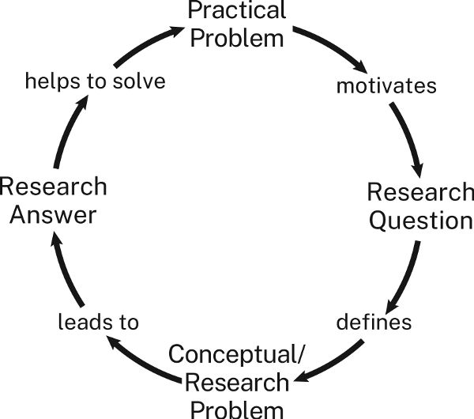
实际问题、研究问题、研究课题与研究答案的循环关系
图中内容的中文对照：
实际问题 → 促使我们提出 研究问题 → 界定 认识层面的问题／研究课题 → 引出 研究答案 → 帮助解决 实际问题。
初学者有时难以理解这些概念，是因为有经验的研究者常用简略说法介绍工作。被问到正在研究什么时，他们往往给出一个听起来很笼统的主题：成人麻疹、艾米莉·狄金森诗歌的格律、怀俄明州马鹿的求偶叫声。结果，新手可能以为，有一个可阅读的主题，就等于有一个可解决的研究课题。
2.1.4 实际问题与认识层面的问题有什么共同点
两类问题都有上述两个部分，但状况和代价的性质不同：
实际问题的状况，可以是任何 给你，最好也给受众，带来切实代价的事态。
认识层面的问题，其状况总是 某件事尚不知道或尚未理解。
借助 1.3 节的三步陈述，可以找出认识层面问题的状况。第一步是“我正在研究的主题是________”。第二步中的间接问句，则说出尚不知道或尚未理解什么：
我正在研究二战时期“铆钉女工罗西”形象向女性主义象征的演变，因为我想理解，这一形象为什么以及如何在不同时期获得多种意义。
这就是我们强调问题价值的原因：问题迫使你明确说出，自己还不知道、不理解，却想弄清什么。
研究课题会指导后续工作，所以要特别留意：它的表述是否把你引向某些方向，或排除了可能的答案与视角。例如，上述关于罗西的问法，可能让你忽视、甚至根本不去考察，最初的罗西形象如何把有色人种女性推向边缘。真正的研究，在最好的时候能带领我们和受众走出无知与偏见；然而，最难抗拒的偏见，往往正隐藏在问题和课题本身。
两类问题的代价也不相同：
实际问题的代价 ，总是某种我们不愿见到的具体事物或处境。
认识层面的问题没有同样切实的代价。为了突出区别，我们把它的代价称为后果 ：一种特定的无知——因为还不理解某件事，使我们无法理解另一件更重要的事。换言之，一个问题尚未回答，妨碍我们回答另一个更重要的问题。
研究者常常仅仅出于好奇选择项目。事实上，我们大多数人正是这样开始对所研究的主题产生兴趣的。但要让研究对他人有意义，就不能只说“这件事让我感兴趣”。你得说明，解决自己的课题，如何帮助他们解决问题；这就需要解释课题的后果。
三步陈述的第三步，正是表达这种后果的地方：
我正在研究二战时期“铆钉女工罗西”形象向女性主义象征的演变，以便理解，图像如何被重新利用来服务新的目的，又如何带有许多观看者未曾察觉的排斥性含义。
这些说法听起来也许令人困惑，其实比看上去简单。认识层面的问题中，状况与后果分别对应两个问题，它们有两种联系：
第一个问题 Q1 的答案，有助于回答第二个问题 Q2。
第二个问题 Q2 的答案，比第一个问题 Q1 的答案更重要。
再说一次，研究课题的第一部分，是某件你不知道却想知道的事。这个知识或理解上的缺口，可以写成直接问句：“过去五十年，爱情电影发生了什么变化？”也可以写成间接问句：“我想弄清过去五十年爱情电影如何变化。”
现在，假设有人问：“回答不了这个问题，又怎样？”你就要说出一件更重要的事，说明第一个答案如何帮助理解它。例如：
回答“过去五十年爱情电影如何变化”这个问题，即状况／第一个问题 ，有助于回答一个更重要的问题：“我们的文化对浪漫爱情的描绘发生了什么变化？”这就是后果所涉及的、更广泛也更重要的第二个问题。
如果你认为回答第二个问题很重要，就已指出一种后果，使课题值得研究。若受众也认同，研究便有了着落。
但如果受众继续问：“不知道我们现在是否用不同于以往的方式描绘爱情，又怎样？”你就得再提出一个更大的、希望能让受众重视的问题：
回答“我们对浪漫爱情的描绘发生了什么变化”，有助于回答一个更重要的问题：“我们的文化如何塑造年轻男女对婚姻与家庭的期待？”
如果受众还问“那又怎样”，你也许会想：“找错受众了。”但若必须面对的就是这群人，就只好继续尝试：“如果不回答这个问题，我们就无法……”
学术领域之外的人，常觉得专家提出的问题琐碎得可笑，例如“跳房子游戏是怎样起源的”。但他们没有意识到，研究者希望通过回答这个问题，进一步回答更重要的问题。对关心民间游戏如何影响儿童社会性发展的人来说，“不知道”所造成的认识后果，就足以证明研究值得做。如果能发现儿童民间游戏如何起源，就能更好地理解游戏如何使儿童学会参与社会生活；还没等你再问，知道这一点，又能帮助我们理解……
2.2 区分“纯研究”与“应用研究”
前面说过，真正的研究由答案事先未知的问题驱动。其中又可区分两类。如果研究处理的认识层面问题，与现实中的实际处境没有直接联系，只为增进研究共同体的理解，我们称之为纯研究 。如果研究处理的认识层面问题具有实际后果，就称为应用研究 。
看定义项目的三步陈述中，最后一步指向什么，就能判断是哪一类：它指向“知道”，还是“行动”？
主题： 我正在研究宇宙某一区域的电磁辐射，问题： 因为我想弄清天空中有多少星系，意义： 以便帮助我们理解 ，宇宙会永远膨胀，还是最终坍缩为一点。
这是纯研究，因为第三步只涉及理解。
应用研究的第二步仍然指向知道或理解，但第三步会指向行动：
主题： 我正在比较韦布望远镜与地面望远镜对同一批恒星的观测读数，问题： 因为我想弄清大气会使电磁辐射的测量产生多大偏差，实际意义： 以便天文学家利用地面望远镜数据，更准确地测量 电磁辐射的密度。
这个问题需要应用研究，因为只有知道如何计入大气造成的偏差，天文学家才能做到他们想做的事：更准确地测量光。
2.3 将研究与实际后果联系起来
有些新手对纯研究感到不安，因为认识层面问题的后果——仅仅是不知道某件事——太抽象。他们尚未加入一个深切关心某方面知识的研究共同体，便觉得自己的发现没有多大用处。因此，会勉强给认识层面的问题拼上一项实际后果或意义，让它显得更重要：
主题： 我正在研究二战时期“铆钉女工罗西”形象向女性主义象征的演变，研究问题： 因为我想弄清，这一形象为什么以及如何在不同时期获得多种意义，可能的实际意义： 以便帮助平面设计师设计更具包容性的政治海报。
多数人会觉得，第二步与第三步之间的联系有些牵强。
要构思一个好的应用研究项目，就必须说明：回答第二步中的间接问题，如何有理由地帮助回答第三步中的间接问题。不妨这样检验：
如果受众想实现________这个目标，填入第三步的目标；
他们是否会认为，弄清________，填入第二步的问题，就有可能实现这一目标？
用这个方法检验刚才的应用天文学项目：
如果受众想利用地面望远镜数据，更准确地测量电磁辐射密度；
他们会不会认为，知道大气造成了多大测量偏差，就能做到？
答案似乎是“会”。
再检验罗西的例子：
如果受众想设计更好的政治竞选海报；
他们会不会认为，知道罗西形象为什么以及如何在不同时期获得多种意义，就能做到？
答案多半是“不会”。两者也许有联系，但还是牵强。
如果你觉得，认识层面课题的答案或许可用于实际问题，就先把项目表述为纯研究，再把应用放到第四步：
主题： 我正在研究二战时期“铆钉女工罗西”形象向女性主义象征的演变，认识层面的问题： 因为我想弄清，这一形象为什么以及如何在不同时期获得多种意义，认识上的意义： 以便理解，图像如何被重新利用来服务新的目的，又如何带有许多观看者未曾察觉的排斥性含义，可能的实际应用： 从而帮助平面设计师设计更具包容性的政治海报。
不过，在引言中提出课题时，仍应把它作为一个纯粹属于认识层面的研究课题，以认识上的后果说明其重要性。等到结论，再提出可能的实际应用。第 14 章将进一步讨论。
人文学科的大多数研究，以及自然科学和社会科学中的许多研究，都不能直接应用于日常生活。但“纯”这个词也暗示，许多研究者甚至比应用研究更看重这类研究。他们相信，为知识本身而追求知识，体现了人类最高的志向：了解更多，不为金钱或权力，而为了更深理解、更丰富精神生活所带来的超越性价值。
你可能已经猜到，我们十分支持纯研究，也同样支持应用研究，前提是研究做得扎实，不受不良动机污染。例如，在化学和生物科学中，潜在利润可能损害纯研究和应用研究的诚信，因为它不仅影响某些研究者选择什么课题，也可能影响他们给出什么答案：“告诉我们想看到什么，我们就给你什么！”这类情形引出的伦理问题，将在第 17 章“研究伦理”中讨论。
2.4 找到一个好的研究课题
杰出研究者与我们大多数人的区别，也许在于才智、敏锐的眼光，甚至纯粹的好运：他们碰到了一个课题，而其答案能让所有人以新方式看世界。当好课题与我们相遇时，往往不难认出来。但研究者开始项目时，常常还不知道真正要解决什么；有时，只希望把某个困惑界定得更清楚。
事实上，发现一个新课题，或澄清一个旧课题，往往比解决一个已明确界定的课题，对领域的贡献更大。有些研究者，甚至因为推翻了自己原本打算证明的、看似合理的假说而成名。
所以，一开始无法完整表述课题，不必气馁，很少有人能做到。不过，尽早思考它，可以省去后来许多无用功，也可能避免临近结束时惊慌失措。这还会帮助你形成高阶研究必需的思维习惯。下面几种方法，有助于发现并完善好的研究课题。
2.4.1 寻求帮助
像有经验的研究者那样做：与同事、教师、同学、亲戚、朋友、邻居，任何可能感兴趣的人交谈。别人为什么想知道你所提问题的答案？知道后能做什么？答案又会引出哪些新问题？
如果可以自由选择课题，不妨找一个大问题中的小问题。虽然你解决不了整个大问题，但其中这一小部分，也会分享它的重要性。你还会借此了解本领域的问题，这本身就收获不小。
如果你是学生，可以问老师正在研究什么，自己能否参与其中一部分。但不要让老师的建议成为研究的边界。学生完全照建议做、一步也不多走，最让老师失望。老师希望建议成为思考的起点，而非终点。能沿着建议发现连老师也未曾预料的东西，最让他们高兴。
2.4.2 在阅读中寻找课题
资料中也藏着研究课题。你看到了哪些矛盾、不一致，或解释不充分之处？先暂时假定，其他人也会或也应有同样感受。许多项目都始于与资料作者的一场想象中的对话：“等等，你忽略了……”
但在着手补缺、纠错之前，要确认缺漏与误解确实存在，而非自己读错了。无数研究论文都曾反驳一个从来没人提出过的观点。4.3 节列出一些常见的做法，帮助你从资料中发现课题，它们都是“资料认为 X，但我认为 Y”的不同形式。
认为找到了真正的疑点或错误后，不要只是指出来。如果资料说 X，你认为 Y，或许就有了课题；但你还必须证明，相信 X 的人，也因此误解了某个更大的问题。
最后，仔细读资料末尾几页，许多研究者会在那里提出有待回答的问题。下面这段话的作者，刚刚解释了十九世纪俄国农民的生活如何影响他们当兵后的表现：
正如士兵和平时期的经历会影响其战场表现，军官群体的经历也必然影响他们的表现。事实上，日俄战争后，有几位评论者把俄国战败归咎于军官在处理经济事务时养成的习惯。无论如何，要理解沙皇时期军官在和平与战争中的服役习惯，我们需要对军官群体作一种结构性的——也可以说，人类学式的——分析，正如本文对普通士兵所做的那样。 〔着重号为本书作者所加〕
最后一句，就提出了一个等待你着手处理的新课题。
2.4.3 回看自己的结论
批判性阅读也能帮助你在自己的草稿中发现好课题。我们往往在最后几页才想得最好，因为写到那里，才形成了开始时未曾预料的主张。如果在早期草稿中形成了一个未曾预料的主张，问问自己：它可能回答了什么问题？
这听起来有些矛盾，但你也许已经回答了一个尚未提出的问题，从而解决了一个尚未界定的课题。你的任务，就是弄清那究竟是什么课题。
2.5 学会围绕课题开展研究
有经验的研究者梦想找到新课题；更大的梦想，是解决一个别人甚至不知道自己面临的问题。但在其他人认为，或能被说服认为，它需要解决之前，这个新课题还没有多大价值。因此，面对课题，有经验的研究者首先该问的，不是“我能解决吗”，而是“别人会认为它应该被解决吗”。
没人期待你第一次就全部做到。但你应开始培养为那一刻作准备的思维习惯。研究不只是积累、报告事实。试着提出一个你认为值得回答的问题，今后才能学会寻找别人认为值得解决的课题。否则，就可能遭遇研究者最不愿听到的回应：不是“我不同意”，而是“我不关心”。参见 I.4.3 节、6.2 节与 9.1 节。
读到这里，关于学术研究的这些抽象讨论，也许显得与所谓“真实世界”脱节。但无论商业、政府、法律、医学，还是政治与国际外交，没有什么能力比这更受重视：认出一个问题，并以恰当的方式说清楚，让别人既愿意关心，也相信它能够解决，尤其相信你能解决。如果你能在拜占庭陶器的课堂上做到，就能在普通街区或华尔街的办公室里做到，也能坐在自家厨房桌边，通过视频会议做到。
实用提示：把经验不足变成机会
进入一个新领域时，如果还不完全理解它的价值取向、关注点、思考方式和论证方式，我们都会焦虑。事实上，本书作者在新主题上开展新类型项目时，也仍会体验这种新手焦虑。偶尔出现这样的感受无法避免，但可以设法应对。
知道不确定与焦虑自然且难免。 它们表明的是经验不足，而不是能力不行。边研究边写，逐渐掌握主题。 保留一本日志，反思自己的进展。这类写作不仅帮助理解所读内容，也会激发思考。越早多写，哪怕只是零散草记，面对令人生畏的初稿时也越容易。回应资料，不要只积存资料。 找到有用的来源时，不要只拍照、截图，或把网页留在浏览器标签里。这样做很容易，却不能推进思考。还应写一段概述或评论，列出它在你心中引发的问题。把任务拆成能够完成的小步骤，并认识到它们相互支持。 提出一个好问题，会让起草和修改更有效；越能预先考虑如何写、如何改初稿，真正写起来也越有效率。如果你是学生，相信老师理解你的困难。 他们希望你成功，你可以寻求帮助。也可以向图书馆员或校内写作中心求助。设定现实的目标。 即使受众不赞同你的主张，只要承认你的论证做得好，你就已取得有意义的成果。最重要的是，把这番挣扎看作它本来的样子：学习经历。 要应对焦虑、克服所有新手都会遇到的困难，就像成功的研究者那样做，尤其在灰心时：回顾计划与已写的内容，然后继续前进。成功的研究者知道，虽然没有什么可以保证，但大多数构思周全的项目，结果都不会太差。也许只是“考虑到各种条件，已经不错”，不过更有可能比这好得多。
返回书首 ↑ 012 / 037
第二部分 资料来源与研究资源
返回书首 ↑ 013 / 037
序言：资料来源与真正的研究
研究有多种形式，取决于所属领域和提出的问题。有的研究者在实验室做实验，有的观察自然世界或人类行为，有的通过问卷或访谈收集数据，也有的分析、解释文字、声音、图像或实物资料，等等。
接下来的两章着重讨论以资料来源为基础的研究，因为处理资料是最常见的研究形式，通常也是大多数人最先学到的一种。第 3 章讨论如何寻找资料，并评估其相关性和可靠性；第 4 章讨论如何为在论证中使用这些资料作好准备。
虽然我们将它们分开讲解，实际工作中，这些步骤却相互交织。真正的研究，并不是先把全部资料找齐，再开始阅读、做笔记。相反，找到一份好的资料后，它就会引你走向其他资料。你一边阅读、一边继续探索，用沿途获得的知识不断调整探究方向，并为回答问题提供依据。寻找、评估、研读资料，循环往复，正是所有真正研究的共同特点。
返回书首 ↑ 014 / 037
第 3 章 查找与评估资料来源
如果你刚开始做研究，打算主要从图书馆或网上寻找资料，本章会帮助你制定研究计划。如果已有较多经验，可以直接阅读下一章。
研究新手常把研究理解为找些信息放进论文里，尤其是找自己认为能支持论证的信息。这种理解是错的。它假定所有证据都一样，也把研究等同于凑够老师规定的资料数量。当然，有些作业确实要求至少使用多少种资料、只使用学术资料，或不把维基百科作为资料来源。但要规划研究项目，你需要了解哪些材料可以成为资料来源，以及怎样在论证中使用它们。
3.1 认识三类资料来源
通常，我们把资料来源分为三类：一手资料、二手资料和三手资料。它们的界限并非泾渭分明，但了解这种分类，有助于规划研究。三者最主要的区别，在于研究者如何使用它们。
3.1.1 一手资料：提供证据
一手资料是“原始”材料，提供“原始数据”或证据，供你提出并检验假说或主张，最终支持论证中的理由。什么算一手资料，因学科而有很大不同。在历史学中，一手资料是直接来自所研究时期或事件的实物或文献，如信件、日记、物品、地图，甚至服装。在文学或哲学研究中，主要的一手资料通常就是你所分析的文本，例如莎士比亚的《麦克白》或汉娜·阿伦特的《人的境况》；页面上的文字，就是你的数据。在艺术批评中，一手资料是你要阐释的艺术作品。在社会学、政治学等社会科学中，人口普查或调查数据也属于一手资料，通过访谈、田野调查（民族志观察）或实验获取的数据同样可以算作一手资料。在自然科学中，原创研究报告有时也被称为一手资料，不过科学家自己很少使用这个说法。
3.1.2 二手资料：向其他研究者学习
二手资料是以一手资料为基础、面向学术或专业读者的书籍、论文或报告。一个领域的二手资料总和，有时就被称为这个领域的“文献”。最优质的二手资料，包括信誉良好的大学出版社出版的书籍，以及经过同行评审的论文或报告。“同行评审”是指发表前已经由本领域专家审核。研究者阅读二手资料，既为了解本领域的进展，也借此激发自己的思考。提出新研究课题的常见方式，就是挑战或拓展他人在二手资料中提出的结论或方法。二手资料还包括由相关领域学者撰写条目的专业百科全书和词典。过去，它们主要通过高校图书馆获取；如今，也可以通过线上目录和数据库查找，包括 EBSCOhost 和 Google Scholar（谷歌学术）。
二手资料主要有三种用途：
了解别人围绕你的主题写过什么。 要知道其他研究者对你的主题说了什么、认为哪些问题重要，阅读二手资料是最好的途径。既要注意他们实际回答的研究问题，也要留意他们另外提出的问题。你或许可以仿照其中某个问题，形成自己的问题。寻找其他观点。 新手有时以为，提到与自己相反的观点，会削弱自己的论证。事实恰好相反：承认反对意见，会让受众看到你不仅考虑过它们，而且能够回应它们，参见第九章。只有设想并回应受众可以预见的问题和异议，研究才算完整。二手资料能帮你找到这些声音：它们提供了哪些不同于你的解释？引用了哪些你不能不承认的证据？更重要的是，你可以用别人的论证来检验、改进自己的论证。只有知道一个理性的人为什么可能持不同意见，才能真正理解自己的想法。因此，寻找资料时，既要找支持自己观点的，也要找挑战它们的。为自己的研究和写作寻找范例。 二手资料不仅让你知道别人写了什么，也让你看到他们是怎样 写的。如果多数资料使用标题、图表和大量项目符号列表，你也可以考虑采用；如果它们从不用，你大概也不该用。留意语言是专业艰深还是通俗易懂，段落是长是短，使用其他资料时是直接引用还是转述。尤其要注意，多数作者使用哪些证据，又很少或从不使用哪些证据。二手资料也可以成为论证的范例。你不能照搬某篇资料的具体主张和理由，却可以在自己的论证中采用同类推理，甚至借鉴其组织方式。因此，即使一篇资料并不直接研究你的主题，只要处理的是类似问题，也值得略读，看看它能教你怎样展开论证。如果只是借用其论证逻辑，不必引注；不过，也可以引用它，为自己的论证增添权威性。
3.1.3 三手资料：获取入门概览
三手资料是面向普通读者、综合二手资料写成的书籍或文章，包括教科书、百科全书条目（如维基百科）、《今日心理学》等大众刊物的文章，甚至某些 YouTube 教育视频。研究初期，可以用三手资料了解主题全貌。但如果你要提出学术论证，就应该依靠二手资料，因为你想加入的学术对话，正由这些资料构成。如果在学术论证中引用三手资料，就会显得像个新手或外行，许多读者因此不会认真对待你和你的论证。
这种反应可能让人觉得不公平，其实并非如此。三手资料不一定错误，许多甚至由杰出学者撰写，但它们有局限。它们面向不熟悉相关主题的大众读者，有时会把所依据的研究过度简化，也容易过时。不过，只要记住这些限制，三手资料仍是有价值的资源：它们能帮助你了解陌生主题；如果附有参考书目，有时还能把你引向有价值的二手资料。
3.1.4 区分一手、二手与三手资料
研究者并非一直这样分类资料。一手与二手资料的区分，源于十九世纪的历史学家，后来传播到其他学科；三手资料这一类别则是之后加入的。如今，这套分类已成为教学生辨认资料的标准方式，但它与不同学科的契合程度并不相同。它很适合历史学，因为历史学的一手资料是与某一历史事件或时刻直接相关的材料；也很适合批评研究，因为一手资料就是研究者阐释的艺术、音乐或文学原作。但对于数学、化学或护理学等学科，它就没有那么贴切。
还要明白，一手、二手和三手并非绝对分类，而是相对于具体研究项目而言。通常，学术期刊论文会被视为二手资料；但如果研究课题关注这篇文章的作者或整个学科，它就会成为一手资料，例如你正在撰写人类学家玛格丽特·米德的传记。同样，如果研究 T. S. 艾略特，他的《哈姆雷特及其问题》就是一手资料；如果研究莎士比亚，它就是二手资料。百科全书条目通常属于三手资料，但如果研究百科全书如何处理性别议题，它便成了一手资料。一场有关竞选的 TED 演讲，在政治学中可能是三手资料，在媒体研究中却可能是一手资料。研究焦点变了，资料的类别也就变了。
如果你觉得这让人困惑，不必为此纠结。记住，这些分类只是手段。最终重要的不是给资料贴什么标签，而是能否用它们有效处理研究课题、发展新想法、提出有意思的论证。下一章会进一步讨论如何在写作中运用资料。
3.2 充分利用图书馆
即使有了互联网，图书馆也无可替代。你不仅可以去那里寻找某个主题的资料，还能探索、细化自己想研究的主题和问题。无论亲自到馆——我们强烈推荐——还是线上访问，图书馆都是不可或缺的研究工具。如今网上信息海量，你或许以为，除了某些高度专业化的研究，图书馆已经不那么必要。其实恰好相反。信息越是唾手可得，图书馆对于研究就越重要：它不仅让我们获取信息，也帮助我们确保资料可靠。即使公共图书馆或高校图书馆规模不大，它也能通向远比本馆收藏广泛的资源，包括研究指南、工具书、线上数据库与内容。要从中受益，当然得先学会如何使用图书馆。
3.2.1 规划图书馆检索
使用资料之前，先要找到并评估它们。有些最终用得上的材料，就在本馆；另一些可能在网上，或其他图书馆。因此，要充分利用图书馆，就需要规划检索。幸好，这正是图书馆及馆员最能发挥作用的地方。
刚开始时，不知道从哪里查起，可能会让人不知所措。拿到主题或研究问题，很容易就想往图书馆搜索框里敲几个词，看看跳出什么。我们也会这样做，但也知道，图书馆还有更系统、更有效的方式，能帮助我们发现有用而可信的资料。
向馆员请教。 我们最值得推荐的建议，或许就是借助馆员的研究专长。一般参考咨询馆员，以及大馆中负责特定学科的专业馆员，都能帮助你细化检索条件，为具体研究问题选对工具。他们可以教你使用目录，找到本馆或其他馆的材料，后者通常可通过馆际互借获得。这些馆员往往也会编制研究指南，列出各领域的重要工具书和线上数据库。
不必害羞。馆员乐于帮助不同水平、处于不同研究阶段的人。他们可以帮你形成研究问题、设计检索词、盘点检索结果，确保没有遗漏有价值的资料。真正令人遗憾的，是本该问却没有问出口的问题。当然，馆员也很忙，提前准备会让双方都受益。如果带着已经发展得比较清楚的研究问题去交流，馆员便能给出更好的建议。可以采用第一章的三步表述法介绍项目：
我正在研究 20 世纪 80 年代的教育政策，
想弄清美国中西部的学校董事会如何处理废除种族隔离，
因为我希望理解种族关系的地区差异。
查阅工具书。 如果已很熟悉主题，你大概也知道去哪里找资料。但如果刚接触一个主题，不要急着直奔那些看起来相关的一手或二手资料。这种做法不稳妥，结果难以预测，也未必省时。更有效的策略，是让工具书帮助你确定检索方向。无论《不列颠百科全书》这样的综合工具书，还是《哲学百科全书》这样的专业工具书，都是专家编写的，能让你先了解整体格局，之后更容易看清每份资料的位置。工具书还常附引注或参考书目，可把你引向原本可能漏掉的资料。
研究初期，书目类工具尤其有价值；其中许多附有摘要，概述某主题的重要论文或书籍。留意带注解的书目，以及综述近期出版物的年度文献回顾，它们常能提供值得追踪的线索。
探索线上数据库。 图书馆与公开互联网的一大区别，是图书馆订购了索引和数据库。除了藏书，它们可以说是图书馆最有价值的资产，因为它们让研究者接触到原本无法取得的材料。各馆订购内容不同，大型研究图书馆的专业索引和数据库最为全面。不过，每一所高校图书馆和许多公共图书馆，都提供了一套功能强大的线上工具，大大扩展了实体馆藏。研究时，务必利用这些综合和专业资源。至少应熟悉本馆订购的主要数据库，例如 JSTOR、Academic Search Premier、MLA International Bibliography 或 PubMed。许多学术数据库会直接提供摘要，或把你引向含摘要的文章；先看摘要，有助于判断全文是否值得读。有些数据库还能提供论文甚至图书的全文。但要注意，如果本馆没有订阅数据库中的某种期刊，获取其文章全文时可能需要付费。付款之前，一定先向馆员询问是否还有其他获取途径。
3.2.2 寻找具体资料
考虑好检索策略和资源后，就可以在馆内外寻找具体资料了。当然，这并不是严格的直线过程。一份资料会把你引向其他资料，也可能把你带回已查过的目录或数据库，只是这一次，你会换用新的检索词。新手常常过度依赖少数几个词，或使用过宽、过窄的词，结果查不到相关材料。善于研究的人知道，检索必须灵活：通常需要不断尝试，才能找到最能检出相关资料的词。
检索图书馆目录。 研究中，你通常需要把关键词检索与浏览两种方法结合起来。查看一些资料、提炼出与主题有关的关键词后，就可以用它们检索目录。多数图书馆会要求你选择检索类别，如图书、论文、期刊等。
如果资料包括图书，可以利用美国国会图书馆主题词查找相关材料。主题词通常印在书名页背面，或列在在线目录的“详细信息”页面上。本书书名页背面的主题词是：
Research—Methodology（研究——方法论）｜Technical writing（技术写作）
用这些词检索在线目录，就能找到同主题的其他书籍。一本书可能同时列在多个主题词下面，这时也应快速查看其他主题词下的书名，可能会发现原本遗漏的有用资料。还可以寻找索书号相近的图书。一旦发现一本看起来很对题的书，就用它的索书号找到排在附近的其他书，留意该书目录记录中的“浏览”链接。这份列表不像关键词检索那样聚焦，却可能藏着意想不到的好资料。因此，不要只看最贴近目标的几本书，值得花时间浏览得更广一些。
任何在线检索都可能产生过多结果。芝加哥大学图书馆有数百本关于拿破仑的书，书名中含有 environment（环境）一词的书更有数千本。如果结果太多，就缩小范围。如今的在线目录通常允许按出版日期、语言、主题、资源类型（图书、论文、数据库等）及其他条件限制检索。如果不知道从哪里缩小，就先限定出版日期：只看最近十五年的出版物；若仍然太多，就改为最近十年。
检索过国会图书馆或大型大学的目录后，你可能发现，本馆只有其中很小一部分。不过，馆员通常可以通过馆际互借等服务，帮助借到所需材料。如果本馆无法取得，或无法在仍然来得及使用的时间内取得，再考虑购买。
反过来，如果什么也找不到，可能是主题太窄或太冷门，无法迅速检出结果；也可能是你抓住了一个重要问题，却还没有人想到，至少近来无人问津。例如，“友谊”曾是哲学的重要主题，后来却长期被主要百科全书忽略，直到近年才重新成为严肃研究对象。要在被忽视的主题上做出成果，多半得靠自己艰苦思考。长远看，这样的研究或许能让你成名，但它大概不适合几周后就要交的课程论文。
到书架间浏览。 网上检索比步行找书快，但如果从不走进书库——假如允许入内——就可能错过只有在那里才能发现的关键资料。更重要的是，你会失去偶然发现的机会：某个书名不经意间吸引目光，让你遇到有价值的资料。我们每个人都这样找到过重要材料。
如果可以进书库，先找到主题相关的书架，扫一遍本层书名，再看上下左右，尤其留意大学出版社出版、装帧较新的书。然后转身看看身后的书架，说不定就有惊喜。遇到有希望的学术著作，先浏览目录和索引，寻找与问题相关的关键词，再浏览参考书目，找其他可能相关的书。这些动作，手里拿着实体书，往往比在线上操作更快。关于系统略读，参见 3.4 节。
多数期刊的目录都能在线查看，但直接浏览架上的期刊有时更有效。先通过网络或书目确定有希望的期刊，再去书架找到它们，浏览最近十年的合订本；多数合订本前面都有全年目录。然后快速看看旁边的期刊。你会惊讶地发现，原来这么容易找到网上可能漏掉的相关文章。
如果不能亲自浏览书架，或许可以线上浏览。虚拟浏览不能取代手捧图书翻页，或用手指沿着书脊一路寻找的体验，但仍保留了一部分偶然发现的机会。实际上，两种方式都应该用，因为在线期刊、电子书等电子资源，只能通过图书馆在线目录找到。多数目录允许按索书号顺序浏览馆藏，不知道如何操作，就问馆员。
顺着书目线索追踪。 大多数资料都能成为进一步查找文献的起点。找到一份看起来有用的学术资料后，浏览它的参考书目或引用文献列表，寻找其他有希望的资料。如果是一本书，也要查看索引。通常，一位人物被讨论得越多，就越重要。期刊论文开头一般会回顾既有研究，并给出引注。顺着这些书目线索，即使进入很难摸清的研究领域，也能逐步找到方向：一份资料通向其他资料，其他资料又通向更多资料……不过，这是一种向后回溯的方法，找到的是作者写作时认为重要的材料，它们今天未必仍然重要。这种方法也可能延续某种偏见：过去被引用的资料继续受到引用，其他声音则继续被排除。
使用引文索引。 许多在线目录和数据库，允许你从一份已知资料出发，查找后来引用它的资料。这种技术叫“引文索引”，与追踪书目相似，但方向向前而非向后。查一份资料引用了什么，是向后追踪；查哪些资料引用了它，是向前追踪。过去，研究者为此必须查阅纸本引文索引，可能花上几小时甚至几天；如今，在线目录和数据库让这件事容易得多。一般而言，一份资料被引用越多，声誉和影响力就越大。但也要小心：偶尔，一份资料之所以频繁被引用，是因为它错得太离谱，或者代表了曾经显赫、如今已被驳倒的观念。
因此，资料的可信度既可从它引用的文献判断，也可从引用它的文献判断。把向后追踪书目与向前检索引文结合起来，就能建立丰富的资料网络，支持自己的研究。
3.3 在网上寻找资料
你已经知道怎样检索公开互联网：在浏览器搜索框输入几个词，屏幕上就会出现一页页链接，形式是 URL，即统一资源定位符。日常检索的实践经验，可能让你觉得互联网既全面又可靠，但这会是个错误。再次提醒，图书馆目录和数据库能够提供大量信息，而这些信息通过 Google，甚至 Google Scholar，也未必能取得。
用互联网做研究，要保持适度怀疑。通过 Google、其他搜索引擎或生成式人工智能找到的内容，许多可靠，但并非全部可靠。与图书馆目录和数据库相比，互联网基本缺乏统一监管。无数网站发布、传播的材料，没有人为其可信度作保证。还要记住，提供免费搜索引擎的公司，会通过你的网络行为收集数据，并靠出售广告赚钱；网站经营者也经常修改网站，使其在搜索结果中排得更前。这些做法不一定居心不良，但搜索公司和网站对你去哪里、看到什么，都有自身利益。
只要记住这些限制，互联网仍可成为研究计划的重要组成部分。我们自己通常这样使用它：
初步了解陌生主题，但把这一阶段学到的一切视为有待核实的内容。
探索可能的关键词，为更系统的检索做准备。
查找一时想不起的日期或事实，同时记得用更可靠的资料核对。
寻找可能需要联系的资料作者：许多学者和研究者的介绍都在高校网站上。
用 Google Scholar 快速搜索，大致估计专业数据库检索可能找到哪些内容。
公开的综合三手资料，如维基百科，以及专业三手资料，如哲学领域的 Internet Encyclopedia of Philosophy、社会学领域的 Sociosite、维多利亚时代研究的 Victorian Web，往往相当可靠，但仍应审慎看待。一般不要把网上文章当作二手资料，学术期刊文章除外，因为二手资料的可信度依赖学术出版体系内的审核，尤其是同行评审。不过，完全可以把互联网作为一手资料使用。例如，如果研究肥皂剧情节如何回应剧迷反应，粉丝博客就是很好的第一手材料。下一节会讨论如何评估资料。
尊重作者权利。 Project Gutenberg（古腾堡计划）和 Google Books 等网站，能提供已不受版权保护的旧文本的可靠电子副本。但网上发布的较新文本（在美国，指过去九十五年内出版的文本），可能侵犯作者版权。应避免依赖未经授权的副本，不仅因为它们违法，也因为复制时常常不够准确。
3.4 评估资料的相关性与可靠性
开始查资料时，找到的材料很可能多于实际能用的数量，因此需要迅速判断其价值。可以用两个标准：相关性和可靠性。
3.4.1 评估相关性
如果资料是纸本书或电子书：
浏览索引，寻找关键词，再略读相关页面；电子书可以直接全文检索关键词。
找到大量使用这些关键词的章节，略读每章的首段和末段。
略读序言、导论、总结章节等。
略读最后一章，尤其是开头和结尾的两三页。
如果是论文集，略读编者导言。
查看参考书目，找与主题相关的标题。
如果资料是在线或纸本期刊论文：
有摘要，先读摘要。
如果在线可读，检索全文中的关键词。
略读引言和结论；如果没有明确分节，就略读开头六七段和结尾四五段。
浏览各节标题，并读各节的首段和末段。
查看参考书目，找与主题相关的标题。
如果资料是其他类型的网络材料：
如果形式类似纸本文章，按期刊论文的方法处理，同时检索关键词。
略读“引言”“概述”“摘要”等部分；如果没有，就找“关于本站”之类的链接。
如有“网站地图”或“索引”，在其中寻找关键词，再略读所指页面。
如有站内搜索功能，输入关键词检索。
这种快速阅读方法，也能反过来指导你的写作与修改。如果论文的组织方式不能让读者快速略读、看清论证轮廓，就说明它还存在问题。第十、十一章会讨论这一点。
3.4.2 评估可靠性
你需要逐渐培养判断资料是否可靠的能力。这来自经验、练习，也来自对资料主张的准确性及背后动机保持一定程度的怀疑。一般可以信赖那些支持真正研究的机构，例如大学、大学出版社、学术期刊，以及某些独立研究基金会。但这些机构对哪些声音能进入对话，也可能有局限：它们可能排斥与既有观念冲突的新想法，也可能排斥来自不同见解、背景和经历者的观点。因此，你仍须自行判断；对某份资料有疑虑时，可以与老师、导师或馆员讨论。
以下是判断可靠性的一些线索：
是否由信誉良好的出版社以纸本或在线形式出版？ 多数大学出版社及其出版的书刊都可靠，尤其是你熟悉的大学。某些商业出版社，也就是不隶属大学的出版社，在特定领域也很可靠，如文学领域的 Norton、科学领域的 Elsevier、法律领域的 West。对商业出版、尤其是自行出版而又提出耸动主张的书籍，要有所保留；涉及激烈争议的话题，更应如此。即使作者姓名后写着“博士”，研究也未必可信，这关系到研究者的可信形象，参见 5.6 节。尤其要警惕披着学术机构外衣，实际却是游说组织或行业组织的团体。书籍或文章是否经过同行评审？ 多数信誉良好的出版社和期刊，会在出版前请专家检查内容是否准确、论证是否可靠，这就是同行评审。大学出版社的论文集通常、但并不总是经过同行评审，有时只由署名编者审核。很少有商业出版社或大众杂志采用同行评审。未经同行评审的出版物，应谨慎使用。作者是否是信誉良好的学者？ 初入一个领域时，这不容易判断。多数出版物会列出作者的学术资历，也可以通过搜索引擎了解更多。大多数成名学者可靠，但即便有声望的学者，也可能有特定立场或利益诉求，尤其是在研究由特殊利益团体资助时。可以搜索作者致谢的对象，包括资助研究的基金会。如果是公共网站，是否由信誉良好的组织主办？ 网站的可靠程度，取决于主办者。由可信组织主办、维护的网站，通常值得信赖。如果不熟悉其主办者，就搜索了解。但要注意，有些组织会用貌似中立的名称，掩盖带有立场的宣传。例如，二十世纪的烟草制造商建立了烟草研究所，后来改称烟草研究理事会；其使命并不是真正研究烟草，而是对抗这类研究。有些个人维护的网站也可靠，但有一定技术的人都能制作网页，因此许多网站，甚至可能多数网站，并不可靠。资料是否仍然适时？ 必须使用没有过时的资料，但“新”到什么程度才够，取决于学科。在计算机科学中，论文几个月就可能过时；在社会科学中，十年已接近上限。人文学科的出版物有效期更长，例如文学批评或艺术批评，数十年后仍可能有参考价值。一般来说，提出重要立场或理论、并被后续研究者接受的资料，比回应或发展该理论的资料更经得起时间。不要默认多数教科书仍反映最新进展。不确定时，观察本领域成熟研究者的做法：查看几本新书或几篇新论文的引用文献年代，通常可以引用与其中较早文献同年代的资料，但稳妥起见，不妨避开最古老的那些。小说、戏剧、书信等一手作品，应尽量使用公认的标准版本，它通常不是最新版本。二手、三手资料则务必查阅最新版，因为作者常会改变观点，甚至否定旧版中支持的观点。网络资料若长期不更新，可能已无人维护，也可能不再可靠。如果是书或文章，是否有注释及参考书目？ 如果没有，应提高警惕，因为你无法追查其中任何主张的依据。如果是公共网站，是否提供资料出处信息？ 如果不说明谁主办和维护、内容由谁撰写、何时发布或最后更新，就无法判断其可靠性。如果是公共网站，对主题的处理是否审慎？ 真正的研究以愿意考虑不同于自己的想法为前提，参见第九章。因此，对那些提出夸张主张、使用辱骂语言或攻击异见者的网站，和对其他同类资料一样，都应保持警惕。是否体现出基本的编辑质量？ 任何资料都可能偶尔有错字。但如果拼写、标点、语法错误多到让你明显感到粗心，就要谨慎；这种草率也可能延伸到内容。比如，一份资料存在明显的事实错误，就不值得信任。如果是书，评论是否良好？ 许多学科都有已发表书评的索引，可用来了解别人怎样评价这份资料。是否常被其他人引用？ 可以根据被引次数，大致估计资料的影响力。引文索引使这件事很容易，参见 3.2.2 节。如果一份资料反复被引用，可以推测本领域专家认为它可靠而重要。这类资料通常被认为具有较高的“影响因子”。应留意它们，并借此熟悉研究领域。不过，引用次数少并不意味着不可靠。有时，专家会忽略或低估年轻学者或边缘群体学者的视角；如果他们的研究符合上述其他标准，又与你的研究相关，就完全值得查阅、引用。
这些指标不能保证资料绝对可靠。评审者虽是专家，也只是人，可能判断失误，或漏看某些后来才被发现的缺陷。因此，不能因为作者有声望、出版社信誉好，就以为阅读时可以放下批判性判断。
3.5 跳出惯常的资料范围
写课程论文时，你大概会使用本领域常见的资料。但如果是在做进阶项目、硕士论文或博士论文，就应再往外找。例如，研究十六世纪后期英国农业变化的经济影响，可以读有乡村人物的伊丽莎白时代戏剧，观看描绘农业生活的木刻画，或查找宗教人物对乡村社会行为的评论。反过来，如果研究十八世纪伦敦日常生活的视觉呈现，也可以考察当地当时的经济史。越出某个领域或主题公认的资料类型，不仅能丰富分析，也能扩大知识视野，增强综合不同类型数据的能力，而这正是善于探究的人应有的关键能力。不要因为一部有关你主题的著作没出现在最相关资料的书目里，就忽略它。如果发现别人漏掉的好资料，你会因此获得原创性的认可。
3.6 借助他人推进研究
二十一世纪研究有一个看似矛盾的现象：新技术让我们能够轻松获取前所未有的丰富材料，研究却也变得更依赖人与人的联系。因此，开展项目时，不要忘记人的作用。
如果别人已经先做出来了
如果发现一份资料似乎已经提出并解决了你的研究课题，不要惊慌。也许确实如此，但很可能不是。如果它真的解决了与你完全相同的课题，就得重新提出课题。不过，它的问题或解决方案，多半没有你起初担心的那么相近。此时，可以把这种接近转化为优势：承认对方主张的有力之处，同时指出自己的主张在哪些方面、以什么方式有所不同。这恰恰就是让研究成为对话的交流方式。
最明显的是，人可以成为通过观察、问卷或访谈收集的一手数据来源。在这方面要有创造性，不要忽略当地企业、政府或公民组织中的人。例如，研究本地“红线划区”政策的社会和经济影响时，可以在文献之外，询问长期居民是否愿意分享记忆或故事。这里无法详述访谈的复杂技巧，相关指南很多，但请记住，事先越清楚自己想问什么，就越能高效获得需要的信息。不一定要照着固定问题清单逐项发问；如果那样会让受访者紧张，反而不好。但必须充分准备，避免漫无目的地提问。漏看了书中内容，可以重读；如果第一次没准备好，漏问了重要信息，却不能总回头打扰同一个人。
他人也能为你推荐好的二手资料，或者自己成为二手资料来源。前面已鼓励你向一种专家请教：参考咨询馆员，他们熟悉图书馆研究的方法。直接与研究主题的专家交流，同样很有帮助。可以问他们，本领域有哪些重要问题尚未解决，怎样看待你的项目或暂定论点，以及建议读哪些二手资料。这种个人指导，对新手可能十分宝贵；许多专家也愿意交流，至少愿意通过邮件作简短讨论。
我们每个人都曾在自己的研究中这样求教，收获很大；也都曾反过来帮助联系自己的人。我们中的一位曾邀请一名著名学者，向大学一年级学生介绍他的研究过程。学者一开场就说：“我其实没什么研究流程，不过是问问我那些聪明的朋友，该读什么。”这当然带着几分玩笑，但借助这样的聪明朋友，至少在起步时，实在是个不错的办法。
最后，研究涉及他人时，务必遵守研究伦理，参见第十七章。高校越来越清楚，以人为对象的研究可能带来伤害：不仅是身体伤害，也包括令人难堪、侵犯隐私等。如今，各高校都有涉及人类参与者的直接或间接研究规范，并设有委员会审查这类项目，无论研究者是学生还是专业人员。这些保障并非无缘无故而设：过去，一些研究者认为自己的工作太重要，足以成为漠视甚至虐待研究对象和群体的理由，结果给人们，尤其是最脆弱的人，造成了严重伤害。因此，不要把这些重要审核当成官僚主义的无谓折腾。它们保护你、你的机构，而最重要的，是保护你所研究的人。
实用提示：使用生成式人工智能
2022 年底，一种新型“资料来源”开始在网上免费向公众开放：生成式人工智能（AI）工具，能够针对问题和提示，生成连贯通顺的文字。这项技术几乎肯定会彻底改变生活的许多方面，包括本书关注的研究、论证和交流方式。我们无法告诉你具体会发生哪些变化，虽然我们也有所推测，但可以提出一些通用原则，帮助你有效、合乎伦理地使用生成式 AI。
探索。 每种新技术都会带来新的可能：让我们做到以前做不到，或不容易做到的事情。生成式 AI 也不例外。我们已感受到它的巨大潜力，却尚未了解它的全部能力。试着用一用，充分测试它。问它与你的研究项目有关的问题，或让它自己提出研究问题，看看会得到什么。可以用它刺激思考、生成信息、推荐更多资料，甚至生成一些文字，经过修改后用于论文。不亲自尝试，就不知道它能帮到哪里。
交流。 正如我们尚未摸清生成式 AI 的所有用途，对于何时、怎样在研究与写作中恰当使用它，也尚未形成一致标准。如果是学生，就与老师和导师讨论，了解学校政策；如果是研究者，就与研究共同体中的其他人交流，了解专业协会或重要期刊认可哪些做法，也分享自己的意见和建议。
诚实。 我们会不断发现生成式 AI 的新合法用途，也总有人会发明新的作弊方式。不要用它伪造数据，代答本应独立解决的问题，或生成文字后冒称是自己写的。请记住，无论作为研究者、作者，还是作为一个人，声誉与诚信都是最宝贵的资产。一个实用的判断办法是：如果你不愿坦然告诉老师、导师或期刊编辑，自己怎样使用了生成式 AI，就不要那样用。
审慎判断。 生成式 AI 仍处于初期，能力还会不断改进，但目前的结果并不总是可靠。我们自己，以及我们认识并信任的研究者和学者，都曾用各自专业领域的问题测试它。它能给出有用的信息和见解，也会提供错误事实、错认引文出处，甚至编造参考文献。因此，要认识到它强大但会犯错，并通过其他方法核实结果。
公开说明。 让受众，无论是老师还是其他研究者，清楚知道你在研究与写作中怎样使用了生成式 AI。至少在正式惯例建立之前，我们建议，在口头或书面呈现研究时，像交代其他资料来源一样，说明使用 AI 的方式和程度。写论文时，可以在引用文献页或参考书目中附上声明；作口头报告时，可以在开头或结尾简短说明。
返回书首 ↑ 015 / 037
第 4 章 深入阅读与运用资料
要让研究可靠，就必须公允、准确地使用资料。本章说明，怎样与资料开展有成效的对话，怎样记笔记，使它们推进思考，也让受众在你借助或批评某份资料时，能够信任你。
本章着重讨论怎样从资料，尤其是二手资料中获得最大收获。理由很简单：在这个问题上，我们能够给出有用、适用面广的建议。研究者怎样寻找或生成数据，受众认可什么数据为证据，各学科差异很大。历史学者和文学批评家通常从一手资料中挖掘证据；其他研究者可能根本不使用这类一手资料，而是在实验室分析土壤样本、发放问卷，或建立计算机模型进行模拟。不过，每个领域都有一批二手资料，也就是该领域的文献，而各领域研究者与这些资料打交道的方式颇为相似。
如何使用二手资料，取决于你寻找研究项目的进展。有经验的研究者平时就会阅读二手资料，了解领域动态，因此项目开始时，往往已经有了研究问题或课题。如果刚接触一个主题，或只有一个宽泛主题，可能需要读许多资料才能找到值得追究的课题，然后还得读更多，才能找到解决方法。本章会说明，如何像有经验的研究者那样阅读二手资料：不仅寻找自己论证可用的数据，更要寻找能激发思考的问题、课题和论证。
4.1 记录完整的书目信息
最先要做的事是：一旦认定某份资料值得读，就记下它完整的书目信息。先做这件事，再做别的。只需片刻，我们却可以保证，没有什么习惯能在今后的研究生涯中带来更多帮助。
记录书目信息，不只是为了回忆读过什么，也是为了写作时正确标明出处。自己的笔记可以采用任何格式，只要记录完整；正式写作中的引注，则应遵循本领域的规范，参见 12.8 节。多数图书馆和数据库界面，只需点击几下，就能按选定格式导出引文。
纸本图书应记录：
作者；
书名，包括副标题；
编者、译者，如有；
版次，若非初版；
卷号，如有；
出版社；
出版年份；
所查阅章节的页码；
图书馆索书号，如有；
ISBN，即国际标准书号。
电子书除上述信息外，还应记录：
URL，即网址，如有；
数据库名称，如有；
访问日期，若在线查阅；
电子文件格式。
纸本期刊论文应记录：
作者；
文章题目，包括副标题；
期刊名称；
卷号和期号；
日期；
文章页码；
图书馆索书号，如有。
在线期刊论文及其他网络资料 ，应尽量记录以上适用信息，另加：
URL；如果有 DOI，即数字对象标识符，则记录 DOI。它是某份资料独有的稳定代码，常写成以 https://doi.org/ 开头的网址；
数据库名称，如有；
网站所有者或主办者；
访问日期。
如果是在网上阅读纸本出版物，应同时记录原出版物的书目信息，以及你实际获取它的网络来源。
扫描或复印书中一段内容时，也把书名页及其背面的出版信息一并扫描或复印。知道索书号的话，再补上它。正式引用时不必列出索书号，但以后需要重找这份资料时，它会让事情容易得多。
你可能觉得这些建议过分谨慎，其实不然。没有什么比这种情况更令人沮丧：笔记里明明有一句再合适不过的引文或一项数据，却因为当初没记全出处、如今又找不到原件，而不能用于论文或报告。
4.2 主动与资料对话
记笔记不只是记录、积累资料和数据，也是加工、理解它们。事实上，后一个目的更重要。今天，借助互联网与研究图书馆的数据库，你几乎可以瞬间把无穷无尽的资料调到屏幕上，既包括二手资料，也包括一手资料。下面威廉姆斯的故事就是一例：如果他今天从事那项研究，租户名单很可能早已数字化，世界各地的研究者都能查看。
找错了地方
威廉姆斯曾因没有完整记录一份资料的出处，让一篇有关伊丽莎白时代社会史的著作推迟发表了一年多。几年前，他偶然看到一份 1638 年伦敦租户名单，觉得将来可能用得上，却没记全来源。等到真需要用时，这些数据却无法引用。他在芝加哥大学图书馆找了许多个小时。直到一天夜里，他猛地从床上坐起来，才想起：那份资料在另一家图书馆！
有经验的研究者知道，把资料登记在电子表格里，或在浏览器中打开一个标签页，并不等于理解了它，也不等于它促进了自己的思考。他们不会被动阅读，而会主动进入对话。如果可能，重要资料应读两遍。第一遍，先善意理解。留意什么内容激起兴趣，重读令人困惑的段落。不要急着找分歧，而应设法把对方的意思读通。否则，一旦资料提出与你竞争的论证，你就容易只强调它的弱点。至少一开始，要抵制这种诱惑。
如果资料重要，或者挑战了你的立场，再慢慢读第二遍，这次更严格地审视它。每读一段，不仅想它说了什么，也想自己会怎样回应。把回应写进笔记；如果资料属于你，或使用的是副本，也可以直接写在页边。用概述检验理解：如果无法在脑中概括一段话，就还没有理解到足以反对它的程度。
不要只因为某个权威提出了主张，就接受它。主张可能错误，也可能因资料年代久远而过时。例如，旧资料可能说太阳系有九大行星，如今这样说就不对了，因为冥王星在 2006 年被重新归类为“矮行星”。还要理解，专家经常意见不一。专家甲这样说，专家乙那样说，丙则自称专家，却未必真是。有些学生听到专家分歧，就变得犬儒，把专业知识一概当成个人意见。但对于确实存在争议的问题，基于知识、经过深思的辩论，不应与随口意见混为一谈。事实上，这正是一个领域充满活力的标志。
核对，再核对
研究者很少故意歪曲资料，但有时会粗心，或在思想上偷懒。科伦布曾听一位知名研究者在演讲后坦言，自己从未读过刚才讨论的著作。布思的一本书曾遭某位批评者“驳倒”，但对方似乎只看了一个小节标题：“小说必须写实”。他没有继续往下读，因此不知道，布思本人正是在批评标题中的主张，以及其他关于小说的误解。威廉姆斯的一位书评作者则错引了他的话，以为自己在反驳，结果论证的恰恰就是威廉姆斯原本的观点！
如果在做进阶研究，应核实所有对论证重要的信息。研究成果曾被别人使用的人，往往会告诉你：他们的工作被转述得不准确，被草率概括，或遭到不懂内容的批评。作者经常给《纽约书评》和《纽约时报》“书评”版写信，指出评论者怎样歪曲观点，或在批评中犯下事实错误。
4.3 为寻找研究课题而阅读
一旦有了研究课题，就用它引导自己寻找证据、范例，以及需要回应的论证。但如果还没有课题，就不知道哪些数据、范例或论证与自己有关。因此，不要漫无目的地读，而要有意识地寻找问题。留意那些令人困惑、不准确或过分简单的主张，任何让你想提出异议的地方都值得关注。不同意一份资料时，更容易找到研究课题；不过，赞同的资料也能提供机会。
4.3.1 寻找富有创造性的赞同
如果相信某份资料的主张，可以尝试把它向前推进：它还能涵盖哪些新案例？带来哪些新见解？有没有它尚未考虑、却能证实主张的证据？以下几种方式，有助于从赞同中发现课题。
1. 提供更多支持。 可以用新证据支持已有主张。
史密斯用轶事说明，“铆钉女工罗西”在 20 世纪 80 年代重新成为女性主义象征；不过，杂志图片能提供更好的文献证据。
原资料用旧证据支持主张，你提供新证据。
原资料所用证据较弱，你提供更有力的证据。
2. 证实尚无支持的主张。 可以证明原资料仅仅假定或推测的事情。
史密斯建议通过意象训练提高运动表现，而对运动员心理活动的功能性磁共振成像（fMRI）研究，能够提供证据，说明为什么这个建议有效。
原资料推测“________”可能成立，你提供证据证明它确实成立。
原资料假定“________”成立，你把它证明出来。
3. 扩大主张的适用范围。 可以拓展一个立场。
史密斯认为，向医学生讲解生理过程时，使用多个比喻比只用一个更有助于学习。对工程和法律专业的学生，似乎也如此。
原资料正确地把“________”应用于一种情境，你将它应用于新的情境。
原资料声称“________”在某种特定情境下成立，你证明它一般都成立。
4.3.2 寻找富有创造性的分歧
主动阅读，难免会发现自己与资料观点不同。不要轻轻放过这些分歧，它们往往指向新的研究课题。可以留意以下几类；这份清单并不穷尽所有可能，各类之间也有重叠。
1. 分类或定义上的分歧。 原资料认为某物属于某一类，你认为应归入另一类。
史密斯说，涂鸦不过是破坏公物；但把它理解为一种公共艺术，更为恰当。
原资料声称“________”是一种“________”，但其实不是。
原资料声称“________”总以“________”为其特征或品质之一，但其实并非如此。
原资料声称“________”是正常的／好的／重要的／有用的／道德的／有趣的，但其实不是。
这些表述，以及下面的表述，都可以反过来说：
虽然原资料说“________”不是 一种“________”，但我能证明它是。
2. 部分与整体关系上的分歧。 可以指出，原资料误解了事物各部分的关系。
史密斯认为，编程与博雅教育无关；事实上，它是必不可少的一部分。
原资料声称“________”是“________”的一部分，但其实不是。
原资料声称“________”的一个部分与另一部分具有某种关系，但其实没有。
原资料声称，每个“________”都包含“________”这一部分，但其实并非如此。
3. 历史或发展过程上的分歧。 可以指出，原资料误解了主题的起源或发展。
史密斯认为，悲剧源于宗教仪式；事实却不是这样。
原资料声称“________”正在变化，但其实没有。
原资料声称“________”起源于“________”，但其实不是。
原资料声称“________”沿某种路径发展，但其实并非如此。
4. 因果关系上的分歧。 可以指出，原资料误判了因果关系。尤其要警惕把因果 （A 导致 B）与相关 （A 与 B 同时发生）混为一谈。
史密斯声称，教育券计划不会减少公立学校的经费；但三个试行学区的证据表明，它们确实会减少经费。
原资料声称“________”导致“________”，但其实并不导致／两者都由“________”造成。
原资料声称，只要有“________”就足以导致“________”，但其实还不够。
原资料声称“________”只会导致“________”，但它还会导致“________”。
5. 观察视角上的分歧。 多数分歧不会改变概念框架；但当你反对某种“标准”看法时，就是在请别人换一种方式思考。
史密斯假定广告只有经济功能，但它也是试验新艺术形式的场所。
原资料从“________”的角度讨论“________”，但新的情境或视角揭示了新的事实。新旧情境可以是社会、政治、哲学、历史、经济、伦理、特定性别等方面。
原资料用“________”理论或价值体系分析“________”，你则换个角度，使它呈现出新的样貌。
4.4 为完善论证而阅读
有经验的研究者还会通过阅读来改进自己的论证：把其他人的反对意见纳入考虑，并把他人的论证视为推理与分析的范例。
4.4.1 寻找需要回应的论证
只有承认并回应受众可以预见的问题和异议，论证才算完整。二手资料中可以找到一些竞争性观点。它们提供了什么不同于你的主张？列出了哪些你不能不承认的证据？有些新手以为，提到反对意见就会削弱自己的论证。恰好相反，承认别人观点，会表明你不仅知道这些观点，而且认真考虑过，能够有把握地回应。详见第九章。
成熟研究者也会用竞争性观点改善自己的看法。只有理解一个理性的人为什么可能与你想得不同，才能真正理解自己的想法。因此，不要只找支持自己主张的资料，还要注意挑战它们的资料。如果受众熟悉这些资料，认真回应会增加你的可信度；如果受众不熟悉，你把新的声音和视角带入讨论，也是在为研究共同体作有价值的贡献。
4.4.2 寻找推理与分析的范例
二手资料还可以作为推理和分析的范例。如果从未做过自己打算开展的这类论证，就可以借鉴二手资料中的论证模式。不能直接拿走其中的具体想法，那会构成剽窃；但借鉴论证方式或数据分析方法，并不属于剽窃。不要担心，把一份资料作为范例，会让研究显得没有原创性。研究论证的方法和推理方式往往并不新颖；读者期待的原创性，主要体现在课题、主张和证据上。
假设你想论证，美国“第一个感恩节”的故事之所以兴盛，一方面是因为它符合历来编织、增补这个故事之人的政治利益，另一方面是因为它满足了讲述者的情感需求。你需要与这一主张相匹配的独特理由和证据，但也可以提出与其他真实或虚构传说研究相似的问题。例如，一份资料说明亚瑟王传说如何塑造英国社会和政治，你就可以用类似方式讨论感恩节故事与美国。你不一定必须引注这个范例，但可以指出它与自己的论证相似，以增加可信度：
正如亚瑟王传说帮助塑造了鲜明的英格兰社会与政治认同（Weiman 2019），第一个感恩节的故事也……
4.5 为寻找数据与支持而阅读
可以用二手资料寻找能作证据的数据，也可以从中寻找支持自己论证的内容。
4.5.1 寻找可作证据的数据
新手常从二手资料中挖掘数据，但有条件时应核对一手资料。例如，如果一段重要引文的原文及上下文能够取得，却不去查，就是一种冒险的思考捷径。使用某份资料的数据，不意味着必须赞同它；甚至其论证也不必与你的问题相关，只要数据相关即可。不过，使用统计数据之前，你必须有能力自行判断其收集和分析方式是否恰当。
这里要特别提醒：始终注明自己实际查阅过的资料。有些新手以为，使用二手资料转述的数据时，只应引用原始一手资料；也有人以为只应引用二手资料。两者都只对了一半。只引一手资料，会暗示你亲自查过原件；只引二手资料，又会暗示数据最终来自那里。正确做法是同时注明。例如，通过安德森撰写的二手资料，使用黄的文章中的一手数据，按此处给出的 APA 格式示例，应写作：
（Wong, 1989, p. 45；转引自 Anderson, 2015, p. 19）
引注的一项作用，是让读者有需要时可以追查你的研究路径。在某些学科，尤其是科学领域，研究出版物还会提供链接，有时甚至用链接代替传统引注。有些教师也接受、甚至更喜欢链接，因为这样能便捷地查阅学生所用资料。如果想用链接取代引注，或两者并用，应先了解学科惯例，或征询老师的要求。
4.5.2 寻找可作支持的主张
研究者常用二手资料中的研究结果加强自己的论证。如果发现有用的主张，尤其是已经得到充分支持并广为接受的主张，可以引用来支持自己。不过，许多主张充其量只能说明另一位研究者与你意见相同。要把它们用作证据，除了转述结论，还必须说明对方的推理和支持证据。换句话说，要让受众有机会自行判断：你从他人研究中选用的证据，是否相关、是否可靠。
4.6 系统地记笔记
找到可能有用的资料后，必须有目的地仔细阅读。可如果日后找不到它，或记不清到足以使用的程度，读得再认真也收效有限。因此，再强调一次：先记录完整书目信息，再做其他事。接着，用一种既能帮助记忆和使用所读内容，又能推进自身思考的方式记笔记。认真、系统的笔记，也能防止无意中的剽窃，参见第十二、十七章。
可以用电子方式记笔记，例如下载 PDF 并添加批注，或收藏有用网页；也可以手动输入电脑、平板或手机，甚至写在索引卡或笔记本上。整理时，可以使用在线文献管理系统、电子表格、电脑文件夹，甚至鞋盒。这些方式各有优缺点，了解之后，选择最适合自己的。
4.6.1 纸上笔记
多年前，记录资料的标准方法，是建立一套索引卡：
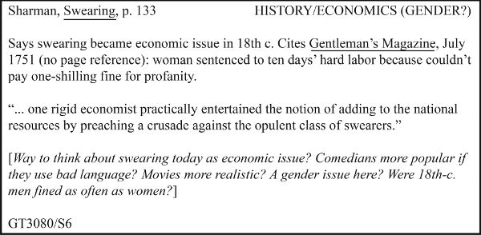
研究资料笔记卡示例
图中文字与结构说明： 左上角记录“Sharman，《Swearing》，第 133 页”，右上角标记“历史／经济（性别？）”。正文先概述：咒骂在十八世纪成为经济问题；资料引用《绅士杂志》1751 年 7 月号，未注明页码，记载一名女性因付不起一句脏话的一先令罚金，被判十天苦役。接着抄录：“……一位严苛的经济学家竟认真考虑过，向富裕的咒骂者发起讨伐，以此增加国家财源。”方括号内是研究者自己的问题：“能否从经济问题看待今天的咒骂？说脏话的喜剧演员更受欢迎？电影更真实？这里涉及性别吗？十八世纪男性被罚款是否与女性一样频繁？”左下角为索书号 GT3080/S6。引文、概述与研究者反应彼此分开。
卡片左上是作者、简写书名和页码；右上是关键词，方便研究者按不同类别、顺序反复整理。卡片正文概述资料，必要时抄录直接引文，并记录研究者的问题和回应。它看起来或许过时，却仍是高效笔记的好模板：
每份资料都记录完整书目信息，以便正确引用并轻松重找。
不同主题的笔记分开，即使来自同一份资料。
确保笔记准确，因为以后必须依靠它们。如果要引用超过几行的文字，就复制或保存该段，或整个文档。留意誊抄错误：手抄或键入引文时，即使自认为小心，也很容易改动原句。这种风险与手抄的好处相伴——亲手写或输入，而非直接复制粘贴，会迫使你思考内容。
不只记录资料的主张，也记录令你感兴趣的数据或支持材料。
写下赞同、反对、推测、问题等。是否发现论证中的复杂之处或矛盾？资料有没有引发新的问题？这样做，会推动你超越单纯摘录。
清楚区分三种内容：直接引用，转述或概括，以及自己的想法。 在纸上可以用标题、方括号、不同颜色的墨水区分；在电脑或网上可以用不同字体、字色。自己的文字与资料原话必须区分得毫无歧义，因为两者实在太容易混淆。
你也许会问，既然能直接输入设备，为什么还要费事做纸笔笔记？纸笔笔记的存放、备份、索引和查找固然麻烦，却仍有用处。笔记本和索引卡便宜、便携，有时还能进入电子设备不得进入的地方；有些档案馆至今只允许读者用纸和铅笔。更主要的原因是，纸笔有助于思考。由于不可能抄下一切，纸笔会迫使你判断什么最重要。写在卡片或纸上的笔记，也能分组、重排，铺在书桌、桌面，甚至地板上。书写这一动作本身，不仅帮助记忆，还能帮助看见联系、形成自己的想法。
不过，如今极少有研究者只用纸笔。多数人也做电子笔记：借助纸张思考，借助电子记录确保引文、出处和引注准确。
4.6.2 电子笔记
使用电脑、平板、手机或其他电子设备时，有几类选择：
Word、Google Docs 之类的文字处理工具。 每份资料建一个独立文件，至少另起一页，并清楚区分自己的文字与资料原话。这类工具易用，但在建立索引、组织、排序和检索笔记方面有限。项目较长或复杂时，尤其值得考虑其他选择。专门的笔记应用。 可帮助建立索引、分类、查找笔记，但有些采用专有格式，导出或与其他程序配合可能不便。功能完整的引文管理系统。 除了记笔记，这类软件通常能直接从在线目录和数据库提取信息，在写作中格式化、更新引注和参考书目。有些还能保存资料的完整电子副本，帮助维护个人资料库。但它们有时也使用专有格式，而且需要学习如何操作。
这三类应用也都有网页版，程序和笔记保存在云端，而非本机。这有助于避免意外丢失或损坏，也方便共享信息，与其他研究者合作。
无论用哪种技术，都应考虑几个基本问题：
怎样保持条理？ 如果每份资料各建一个文档，就需要一套命名和存放规则。没有规则，笔记很容易“丢”在自己的设备里。怎样使用笔记？ 小项目与大项目、一次性项目与长期项目、个人项目与协作项目，可能适合不同存储方式。学校或图书馆提供哪些应用？ 许多学校、图书馆向教师、学生和读者提供笔记或文献管理系统，有时还与目录整合。如果可以使用，值得考虑。怎样备份？ 无论采用何种方式，都要确保意外发生后能恢复：咖啡泼到笔记本电脑上，手机丢失，文件与新版应用不兼容，地下室的老鼠咬坏了装索引卡的盒子。我们建议把笔记保存在云端，至少做一份云端备份；备份软件可以自动完成。最重要的是：哪种方式最适合你的写作、思考与工作习惯？ 随着成长，你会发展出个人化的工作方法，别人可能觉得繁琐、混乱，甚至无法理解，这不要紧。目标不是打造一套精巧复杂的笔记，而是有能力、有见地地研究和写作。软件若不能帮助你做到这一点，对你就没有用。
4.6.3 决定直接引用、转述还是概括
如果能够复印、扫描、下载、复制粘贴资料，或确定写作时还能在线访问，就可以少操心逐字保存，多关注自己与资料的对话。这是一大便利。概括资料，也能帮助理解；标出以后可能直接引用或转述的段落；再记下自己的反应：哪些地方赞同，哪些地方反对，哪些地方想说“是的，不过……”？
如果无法保存整份资料，又不确定以后能否取得，就需要作更难的选择：哪些部分逐字记录，可以手抄、复制、截屏或拍照；哪些部分只作概括或转述。此时，要考虑以后怎样使用笔记。学科也会影响选择：人文学者写作时最常直接引用，社会科学和自然科学研究者通常更常转述和概括，参见第十二章。
只需要要点时，作概括。 可以概括一个段落、一个部分，甚至整篇文章或整本书。它适合交代背景，或介绍有关但并不直接切中项目的观点。对资料的概括，不能成为有力证据。具体措辞不如含义重要时，作转述。 转述不是只改一两个词，而是用自己的词语和句式替换原文的大部分表达。作为证据，转述始终不如直接引文。以下情况，应逐字记录引文：
原话本身就是支持理由的证据。例如，若主张不同群体对更改以奴隶主命名的建筑名称反应不同，就应引用不同新闻资料中的准确原话；如果只需要大致态度，才可转述。
原话来自你准备借助或挑战的权威。
措辞特别新颖或极富感染力，可作为其余讨论的框架。
资料提出了你不同意的主张，为公允起见，需要准确呈现。
不要省略引文，想着日后能准确补回去。你做不到。错引会损害可信度。
4.6.4 准确把握上下文
不可能记录所有内容，但必须记得足够多，以准确把握资料的意思。使用资料时，不仅要记下它说了什么，也要记下它怎样使用这些信息。
1. 引用、转述或概括时，留意上下文。 无法把整个原文都引下来，因此严格说来，摘引总会离开部分原始语境。但概括、转述或抄录时，必须保住最重要的背景：你对原文的完整理解。记下重要论证或结论时，也记录作者的推理路径。
不要只写： 巴托利，第 123 页：战争由 Z 导致。
也不要仅写： 巴托利，第 123 页：战争由 X、Y、Z 导致。
应该写： 巴托利：战争由 X、Y、Z 导致（第 123 页）。但最重要的原因是 Z（第 123 页），理由有二：第一，……（第 124—126 页）；第二，……（第 126 页）。
即使只关心结论，记录作者怎样得出它，也能帮助你更准确地使用。
2. 记录主张时，注明它在原文中的作用。 是核心观点、次要观点，还是限定或让步？记清这些差别，能避免以下错误：
琼斯原文： “研究者承认，肺癌有多种成因，包括遗传易感性，以及接触石棉、氡和细颗粒物等环境因素。但研究过数据的人，无不承认吸烟是肺癌的首要原因。”
误导性的笔记： 吸烟只是肺癌众多成因之一。例如，琼斯声称，“肺癌有多种成因，包括遗传易感性，以及接触石棉、氡和细颗粒物等环境因素”。
琼斯根本没有提出笔记中的那个观点。她先作了一项让步，为真正想表达的重点铺垫。故意这样歪曲转述，违背基本的诚实标准。但如果只记录原话，不记录它在论证中的作用，也可能无意中犯这个错。
为避免这种错误，要区分核心论述与作者承认却不着重强调的限定或让步。除非你有意逆着作者的意图阅读，例如揭示其隐含倾向，否则不要把次要内容说成主要内容，更不要说成整篇资料的宗旨。
3. 记录主张的范围与确定程度。 不要把它说得比原文更确定，或适用面更广。下面第二句就没有准确、公允地转述第一句：
原文： 一项有关风险感知的研究（Clark, 2008）提示，高额赌博与童年脑震荡之间可能存在联系。
误导性的笔记： 克拉克（2008）说，童年脑震荡会导致高额赌博。
4. 不要把作者对他人观点的概述，误当作作者自己的看法。 有些作者转述别人的论证时，标示得不够清楚，很容易让人把他准备反驳的观点，引作他本人相信的观点。
5. 记录不同资料为什么一致、为什么分歧。 它们在什么方面、为什么一致，与“一致”这一事实同样重要。同样，分歧可能来自对相同证据的不同解释，也可能来自处理课题的方法不同。紧紧依附某一位研究者的说法，风险很大。不加审视地概述别人的成果，不叫研究。即使资料广受信任，也要谨慎。如果至少比较两份资料，通常会发现它们并不完全一致，而你的研究正可以从这里开始：谁的论证更好？谁更尊重证据？ 实际上，研究课题已经出现了：我们该相信谁？
4.7 给资料做批注
批注能帮助我们系统地与资料对话。下载、复制粘贴、复印或重新输入原文，可以保证引用、转述的准确；但如果不回应资料，就只是在积累一堆日后还得筛选的静态数据。为推进思考，可以高亮或标记关键句段，便于日后查找；标出预计会用于论证的观点和数据；概括高亮部分，写下初步回应，或在页边说明为什么标记它。现在围绕一份资料写得越多，日后就越理解它。
4.7.1 页边批注
除了在纸上或电脑里另记笔记，也可以直接在许多纸本或数字资料上批注。批注就是通过评论、提问、关联其他资料，来标记原文。与单纯高亮相比，页边批注通常更有效，因为它能把资料与你项目之间的关系凸显出来。
批注把本章讨论的主动阅读过程记录下来。可以标出主张和关键词，也可以质疑或扩展理由、证据和论证依据，借此与资料“争论”，参见第三部分。随着项目发展，再回来看批注，就能知道自己早先怎样想。
当然，并非所有资料都同样适合直接批注。图书馆的书，或其他不属于自己的文本，不能在页边涂写。许多资料又只能，或最方便，以数字形式获取。幸好，有数字批注工具能记录线上阅读；它们适用于文字、图片、录音和视频，还能把你对不同资料的回应联系起来，形成可检索的数据库，供日后参考。
广泛阅读的价值
我们一直强调，用一个好问题来聚焦研究很重要。但不要因此以为，读了后来证明不相关的资料，就是浪费时间。实际上，阅读和记录超出最终使用的范围，能建立扎实的知识基础，而这对良好思考至关重要。思考是一项可以学习的技能，但只有具备广博、深厚的知识，才能有效运用。因此，读资料不只为回答今天的问题，也为在今后的研究生涯中，更好地思考每一个问题。从这个意义上说，你读的一切都有关。
4.7.2 带注解的参考书目
另一种处理资料的方法，是编制带注解的参考书目：列出可能使用的资料，每项附完整引注和简要概述。关于引注，参见第十二章。根据目的不同，注解可以有不同类型。对于研究项目，这份书目能让你总览各种资料，以及它们可能在论证中发挥的作用。编制注解书目往往是研究过程中的独立阶段，让你和老师有机会回顾已收集的资料。每条注解都可以评估资料可信度、概括其论证，并说明与项目的关联。
编制这样的书目，有助于判断自己的检索是否充分，对已收集资料的理解是否深入。
4.7.3 用关键词分类笔记
最后是一项在概念层面较有挑战的任务：记笔记时，为每条笔记指定至少两个关键词，参见前面笔记卡的右上角，原书第 85 页。不要机械照搬资料中的词，而应根据它对研究问题的意义，用比具体内容更概括的观念分类。相关笔记使用相同标签或关键词，不要每新增一条笔记，就新造一个标签。
这一步很关键，因为它迫使你找出笔记的核心意思。电子笔记有了关键词，只需一次查找，就能把相关笔记聚在一起。使用多个关键词，还能从不同角度重新组合笔记，发现新的关系；觉得自己原地打转时，这一点尤其重要。
实用提示：应对研究中的迷茫时刻
项目推进到一定深度，你可能忽然觉得，一切纠缠在一起，乱得无从整理。通常是因为积累笔记的速度超过了整理速度。这些时刻令人焦虑，却也可能预示着新的洞见或发现即将出现。
可以抓住每个机会整理、概括已有材料，边研究边写，并不断回到核心问题，以减轻焦虑：我在问什么？我提出的研究课题是什么？反复练习这套表述：“我正在研究 X，以进一步了解 Y，从而帮助受众更好地理解 Z。”经常围绕这些问题写作，不仅能保持聚焦，也能帮助思考。
也可以求助于朋友、同学、老师，任何愿意体谅你、又能提出批评的人。解释已学到的内容怎样关联研究问题，怎样帮助解决研究课题。问他们：“这样说有道理吗？有没有漏掉重要内容？你还想知道什么？”他们的反应会有帮助，而把想法解释给非专业人士听，这个动作本身往往更有帮助。
返回书首 ↑ 016 / 037
第三部分 构建论证
返回书首 ↑ 017 / 037
导言：搭建研究论证
不能等到搜齐最后一项数据、找到最后一份相关资料，才开始规划论证。首先，你永远不可能把它们找全。其次，这样做会让研究变成机械或漫无目的的搜集：东西越堆越多，却不知道拿来做什么；或者追着零星线索，一路走向不知何处。当然，必须先做一些研究，才能把握项目。但只要大致看清课题及可能的答案，就该着手规划论证。计划会随着研究推进而改变；如果始终不变，可能说明你还没有充分思考。尽早制定计划，并一路修正，能让你更好地掌握材料，更有目的地研究。只有尝试构建一套能回答受众预期问题的研究论证，才会看清还有哪些研究尚待完成。
研究论证，与日常所见的激烈争吵并不一样。日常争论通常涉及纠纷：孩子争玩具，室友争晚上几点关灯，司机争谁有路权。态度可以礼貌，也可以恶劣，但大多存在冲突，有输家也有赢家。研究者当然也会为彼此的推理和证据争执，有时甚至指责对方粗心、无能乃至造假。不过，使他们成为研究者的，并不是这种争斗。
接下来的五章，要考察另一种论证。它更像与友好、偶尔带些怀疑的同行进行热烈交谈，而不是必须分出胜负的尖锐争执。在这场对话里，你与你所设想的受众共同寻找彼此关心的问题的答案。目标不是一方迫使另一方同意，而是让所有人增加理解和知识。从这个意义上说，最好的答案往往不是让对话终结的答案，而是能带来新问题、新探究和新论证的答案。
不过，这场对话并非只是礼貌地交换意见。人人都有发表意见的权利，也没有法律要求我们必须解释或捍卫每个看法。但在研究论证中，我们应向受众说明，主张为什么重要，然后用充分的理由和证据加以支持，以回应一个完全合理的问题：“我为什么应该相信？”
事实上，虽然激烈争执更容易引起注意，我们每天也都在进行这种合作式论证。每当交换充分理由，共同决定要做什么时，它就在发生：例如与朋友讨论买哪款手机、读哪本书，甚至点披萨还是泰国菜。研究论证与这些友好的讨论相似，并不把某个主张强加给别人。你从受众的处境出发，设想他们会如何问：“我为什么应该接受这个主张？”他们提问，不是为了拆台，而是为了检验论证，帮助双方发现并理解值得分享的真相。当然，写作时没有人在面前替你提问，因此必须代受众把问题想出来。正是这些设想中的问题，以及你的回答，让论证成为持续对话的一部分。第五章会概览研究论证的构成，第六至第九章逐一详解。第四部分则说明，怎样把论证落实为文章或口头报告。
逐渐认识你的受众
你可能无数次被提醒“考虑受众”，但要想象一个素不相识的人会问什么，实在很难。有经验的研究者有一个优势：他们认识研究共同体里的许多人，也就认识自己的受众。他们能在动笔之前，与这些人讨论项目、试探想法。新手或学生可能还没有这种私人层面的了解，但可以先做些功课，认识受众的写作、论证和思考方式：
阅读发表同类研究的期刊，留意文章提出怎样的问题、讨论怎样的研究课题。
与更有经验的研究者或老师试讲自己的论证。有了计划、尚未起草时，先谈一谈想法，询问哪些地方令人怀疑或困惑。
写作时，请几位信任的人读草稿，指出疑问，以及他们看到的其他可能。尽量找与预期受众相近的人。
还可以设法认识真正的受众。例如，一群物理学家曾希望生物学家关注自己的研究，但投给生物学期刊的第一篇稿件被退回，让他们很失望。于是，他们开始参加生物学会议、阅读生物学期刊，甚至常到生物系教师休息室坐坐。弄清生物学家的思考方式后，他们重写论证，发表了对该领域产生影响的论文。学生可能无法远行参加会议，也不便常去教师休息室，但仍可认识校园里从事相关领域工作的教师和学生。越了解他们，就越能设想他们可能问你什么。
返回书首 ↑ 018 / 037
第 5 章 构建有力的论证：概览
本章解释什么是研究论证，以及构成论证的五个问题与相应答案。
第一部分说过，真正的研究不只是积累某个主题的信息，而是为你和受众共同关心的课题提出解答。同样，分享研究成果，也不只是把一堆数据倒给受众，说“这些都是有关我的主题的事实”，而是要通过研究论证，解释课题，并证明解答有道理。
5.1 把论证看成对话
在研究论证中，你提出主张，用建立在证据之上的理由来支持它，承认并回应其他观点，有时还需解释推理所依据的原则。这些并不神秘。想想日常生活中的对话：
艾比： 听说你上学期挺不顺的。你觉得这学期会怎样？艾比用提问的方式提出一个问题。
布雷特： 希望会好些。布雷特回答问题。
艾比： 为什么？艾比要求给出相信这个回答的理由。
布雷特： 我这学期上的是本专业课程。布雷特给出理由。
艾比： 比如哪些？艾比要求提供支持理由的证据。
布雷特： 艺术史、设计导论。布雷特给出支持理由的证据。
艾比： 上本专业课程，为什么就会不一样？艾比看不出这个理由与“表现会更好”的主张有什么关系。
布雷特： 上我感兴趣的课，我会更努力。布雷特给出一个一般原则，把理由与“表现会更好”的主张联系起来。
艾比： 那门必须上的数学课呢？艾比对他的理由提出异议。
布雷特： 我知道，上次我只好退了那门课。但这次有个很好的辅导老师。布雷特承认异议，并作出回应。
如果能想象自己参与这样的对话，搭建研究论证就不会显得陌生。因为任何论证的五个要素，不过是对艾比这类问题的回答。你也必须代受众向自己提出这些问题：
主张： 你希望我相信什么？你的要点是什么？理由： 为什么这么说？我为什么应当同意？证据： 你怎么知道？拿得出支持吗？论证依据： 这怎么推得出来？能解释推理吗？承认异议并作回应： 可是，________又怎么解释？
不妨把研究看成寻找这五类答案的过程。
5.2 搭建论证的核心
每项研究论证的核心，都有三个要素：主张、接受主张的理由，以及支撑理由的证据。在此基础上，还要增加一个，有时两个要素：需要解释推理何以成立时，补充论证依据，参见第八章；还要承认并回应问题、反对意见和其他观点，参见第九章。把这些要素都看成对受众可预见问题的回答。
5.2.1 用理由支持主张
第一种支持是理由，也就是能引导受众接受主张的陈述。我们常用“因为”把主张与理由连接起来：
主张： 小学应把多语言教学列为优先事项。理由： 因为人在年幼时，语言学得最好，也最容易。
一个主张往往需要不止一个理由。复杂论证中的理由，通常又需要更多理由支持：
主张 1： 小学应把多语言教学列为优先事项。理由 1，同时也是主张 2： 因为人在年幼时，语言学得最好，也最容易。它支持主张 1。理由 2，同时也是主张 3： 事实上，成年后才开始学习新语言的人，很少能达到幼年就学习者的流利程度。它支持理由 1，也就是主张 2。理由 3，同时也是主张 4： 小学阶段开展多语言教学，还有助于儿童的道德发展。它支持主张 1。理由 4，同时也是主张 5： 因为这能培养儿童对自身文化和社会之外的其他文化、社会的认识。它支持理由 3，也就是主张 4。
5.2.2 让理由建立在证据之上
第二种支持是证据，也就是理由所依据的材料。理由可能需要更多理由支撑，但这条链不能无限延长。最终，必须拿出具体数据或信息，那就是证据。有时，“理由”和“证据”看起来可以互换：
你的主张基于什么理由？
但两者意思不同。比较下面两句：
你的理由基于什么证据？
第二句很奇怪，因为不是证据建立在理由上，而是理由建立在证据上。理由是我们思考出来的、支持主张的陈述；证据则需要到外部世界寻找，再展示给所有人看。证据是我们用来支持理由的信息或数据，例如统计数字、实例、引文、图片、模型等。理由需要证据支持；证据除了清楚展示，或注明可靠出处之外，不应再需要其他支持。
澄清几个术语
对于表达你要论证的想法的那句话，前面已用过两个名称。在研究问题的语境中，我们称它为“答案”；在研究课题的语境中，我们称它为“解答”。现在，在论证的语境中，称它为“主张”。
主张 是需要支持的断言，可以是一句话，也可以不止一句。例如：“大熊猫是熊的一种。”“美国联邦医疗保险支出将继续上升。”“托妮·莫里森最重要的小说是《宠儿》。”核心主张 是整个研究论证所支持的断言，也有人称它为中心论点或论文论旨。理由 是支持主张的断言。例如：“因为基因检测表明，其他熊类是大熊猫最接近的亲属。”“因为美国人口正在老龄化。”“因为在《宠儿》中，莫里森的主要主题得到了最充分的展开。”证据 是用来支持理由的信息。与主张和理由不同，证据不一定采用断言形式。例如，展示大熊猫与其他熊类在遗传和解剖学上相似性的图示；记录过去二十年美国居民年龄中位数的图表或数据表；展现莫里森主要主题的《宠儿》引文。
这些区分可能令人困惑：主张和理由都是断言，理由和证据又都是支持。不过，继续读下去，你会看到这些差别为什么重要。
日常交谈中，通常一个理由就足以支持主张：
主张： 我们该走了。理由： 看起来要下雨。
很少有人追问：“你说看起来要下雨，有什么证据？”但在研究论证中，还必须提供证据，因为审慎的受众不会直接照单全收理由：
主张 1： 小学应把多语言教学列为优先事项。理由 1／主张 2： 因为人在年幼时，语言学得最好，也最容易。理由 2／主张 3： 事实上，成年后才开始学习新语言的人，很少能达到幼年就学习者的流利程度。这支持理由 1。支持理由 2 的证据： 琼斯（2013）研究了一百多位语言学习者，发现新语言熟练程度与……呈负相关，见表 1。
有了理由和证据，就有了研究论证的核心：
主张、理由与证据的关系
图示说明： “主张（claim）——因为（because of）——理由（reason）——基于（based on）——证据（evidence）”。阅读方向显示论证的解释次序；支持关系则是证据支持理由，理由支持主张。
但多数情况下，仅有核心还不够。还需要补足论证：有时提供论证依据，说明理由为什么与主张相关；还要承认并回应其他观点。
5.3 用论证依据解释推理
即使受众认可某个理由为真，也可能因为看不出它与主张的关联，而感到困惑，甚至反对。看下面这个论证：
理由： 近期美国国债收益率曲线倒挂，主张： 因此，经济衰退似乎很可能发生。
不熟悉金融和投资的人可能会问：“收益率曲线倒挂，为什么就意味着更可能衰退？我看不出联系。”要回答，就必须给出一个一般原则，把这个具体理由与具体主张连接起来，解释推理如何成立：
论证依据： 至少从二十世纪中叶以来，美国国债收益率曲线倒挂，一直能可靠地预示即将到来的经济衰退。
这一论证依据表达了一条从经验中得来的原则：收益率曲线倒挂，是未来经济困难的征兆。和所有论证依据一样，如果它为真，就能确立这样一种推断：从一般情形“收益率曲线倒挂”，可以推向一般结果“经济很可能衰退”。如果主张是这一一般结果的恰当实例，理由也是这一一般情形的恰当实例，那么论证便成立。
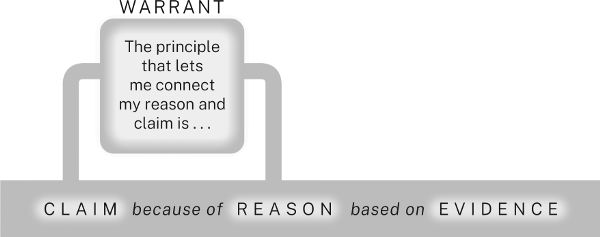
论证依据连接理由与主张
图示说明： 下方仍是“主张——因为——理由——基于——证据”；上方增加“论证依据（warrant）”，框中文字为“使我能够把理由与主张联系起来的原则是……”。它架在理由和主张之间，解释两者的推理联系。
第八章会说明，连“什么时候需要把论证依据说出来”都不容易判断。有经验的研究者通常只在两种场合明示它：一是预料本领域受众可能看不出理由与主张的关联；二是向普通受众解释本领域的推理方式。
5.4 承认并回应可以预见的问题与异议
审慎的受众会质疑论证的每个部分。因此，应尽量预见他们的问题，并承认、回应其中最重要的。例如，面对“小学应优先开展语言教学”的主张，受众可能担心，这是否会影响其他学科教学。如果预料会出现这个问题，明智的做法就是主动承认并回应：
主张 1： 小学应把多语言教学列为优先事项。理由 1／主张 2： 因为人在年幼时，语言学得最好，也最容易。……承认异议： 当然，如果学校更重视语言教学，其他学科的教学质量可能下降。回应： 但支持这种担忧的证据很少，能消除这种担忧的证据却很多……
没有承认异议与回应，研究论证就不完整。因此，下面把它们加入图中，显示它们与其他所有部分的关系：
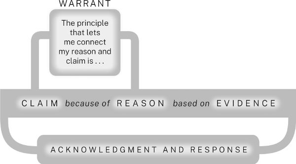
完整论证的五个要素
图示说明： 在“主张—理由—证据”及其上方的“论证依据”之外，下方增加“承认异议并作回应（acknowledgment and response）”。连接线环绕整个论证核心，表示问题与异议可以针对论证各部分，而回应也应覆盖这些部分。
5.5 规划研究论证
研究论证与日常论证由相同的五类要素构成：主张、理由、证据、论证依据，以及对其他观点的承认与回应，只是更复杂。除了核心主张，还可能包括若干从属主张；每一项又可能由更多理由和证据支持，并由一个或多个论证依据解释。它几乎肯定还会承认、回应预期问题、其他可能和反对意见，而每个回应又需要自己的论证。
多数研究论证还包括背景、定义，以及受众可能不理解的问题的解释。例如，向不熟悉经济理论的人论证通货膨胀与货币供给之间的关系，就得先解释经济学家怎样理解这些概念。严肃论证结构复杂，但拆成更简单的部分，就能处理。
规划时，可以写传统提纲，也可以用其他方式把论证画出来。我们推荐一种图表式提纲或视觉组织工具，叫“论证分镜图”（storyboard）。它像一份拆开后铺在几页纸上的提纲，留有很多空间，便于不断补充数据和想法，比普通提纲更灵活。可以使用应用或在线工具，也可以像我们一样，用索引卡、便利贴或纸张。
开始时，把核心主张、每条理由和下一级理由，分别写在不同卡片或页面的顶部。在每条理由下列出支持证据；尚无证据，就注明需要什么类型的证据。如果预计必须解释某个理由怎样支持主张，再加一页记录论证依据。也可以另外设页，记录其他观点及你的回应。
尚未想清的页面可以先留白，准备好再填。随着论证和论文结构逐渐成形，可以不断移动页面。把它们铺在墙上，相关内容放在一起，次要部分放在主要部分下方，就能一眼看见整体设计。这种可视化能帮助你发现哪些地方还需充实，也能尝试不同组织方式，选出最合适的一种。
下面是一项“小学语言教学”研究的部分论证分镜图。它只是研究者此刻想法的快照，随着项目推进和思路发展，可以、也应该发生变化。第一页记录研究问题和暂定主张，也就是引导研究、但可能随项目改变的初步主张，另列几种替代主张，其中一种已被否决。理由分为两组：一组关注何时学习语言效果最好，另一组关注语言学习的益处。计划也包括对异议的承认和回应，但“文化意识”那页几乎空白，因为研究者还没找到支持这一理由的恰当证据。如果继续研究仍找不到，就可能必须放弃这个理由，甚至修改主张。
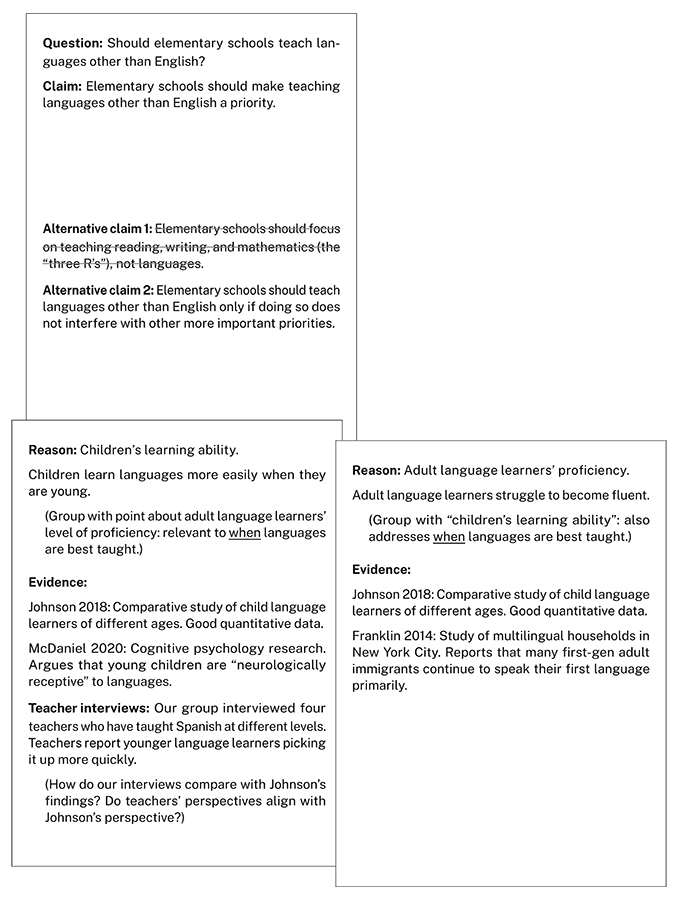
小学语言教学的论证分镜图：问题、主张与学习年龄
图中三张卡片的中文内容：
卡片一：研究问题与主张
问题： 小学应该教授英语以外的语言吗？主张： 小学应把教授英语以外的语言列为优先事项。替代主张 1，已划去： 小学应专注于阅读、写作和数学，也就是“读、写、算”，而不是语言教学。替代主张 2： 只有在不妨碍其他更重要事项的前提下，小学才应教授英语以外的语言。
卡片二：理由——儿童的学习能力
儿童年幼时学习语言更容易。与“成年语言学习者的熟练程度”归为一组，两者都涉及什么时候最适合教语言。
证据： Johnson 2018，对不同年龄儿童语言学习者的比较研究，有良好的定量数据。证据： McDaniel 2020，认知心理学研究，认为幼儿在神经机制上更容易接受语言。教师访谈： 本组访谈了四位在不同层级教授西班牙语的教师。他们报告，较年幼的学习者掌握得更快。待思考： 我们的访谈结果与 Johnson 的发现如何比较？教师的视角是否与 Johnson 一致？
卡片三：理由——成年语言学习者的熟练程度
成年语言学习者要达到流利程度比较困难。与“儿童的学习能力”归为一组，也是在回答什么时候最适合教语言。
证据： Johnson 2018，对不同年龄儿童语言学习者的比较研究，有良好的定量数据。证据： Franklin 2014，对纽约市多语言家庭的研究，报告许多成年第一代移民仍以母语为主要交流语言。
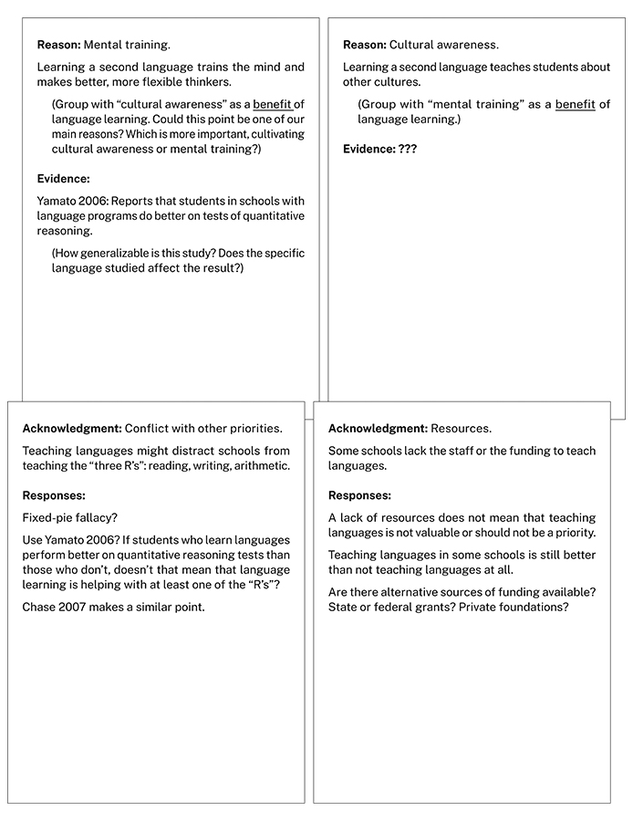
小学语言教学的论证分镜图：益处与异议
图中四张卡片的中文内容：
卡片四：理由——心智训练
学习第二语言可以训练心智，使思考更好、更灵活。与“文化意识”归为一组，都是语言学习的益处。
待思考： 这一点能否成为主要理由？培养文化意识与训练心智，哪个更重要？证据： Yamato 2006，报告开设语言课程的学校，其学生在定量推理测试中表现更好。待思考： 该研究的结论能推广多远？所学具体语言会影响结果吗？
卡片五：理由——文化意识
学习第二语言，让学生了解其他文化。与“心智训练”归为一组，都是语言学习的益处。
卡片六：承认异议——与其他优先事项冲突
语言教学可能分散学校对读、写、算教学的注意力。
回应： 这是“资源总量固定”的谬误吗？回应： 使用 Yamato 2006？如果学语言的学生在定量推理测试上优于没学的学生，是否说明语言学习至少有助于读、写、算中的一项？回应： Chase 2007 提出了类似观点。
卡片七：承认异议——资源不足
有些学校没有足够师资或资金来教语言。
回应： 缺乏资源，并不意味着语言教学没有价值，或不应列为优先事项。回应： 部分学校开展语言教学，仍比所有学校都不教好。回应： 是否存在其他经费来源？州或联邦拨款？私人基金会？
5.6 建立研究者的可信形象
最后再说一点。本章介绍了所有论证共同拥有的五个要素：主张、理由、证据、论证依据，以及承认异议与回应。但论证还有第六个隐含要素，传统上称为 ethos，即研究者的可信形象。受众判断论证，不仅看它的思想结构，也看你在论证时展现的品格。你是否愿意提供必要背景，帮助受众跟上思路？是否为主张提供充分而不过量的支持？是否周全考虑不同方面？还是只看见一种观点，轻率否定乃至忽略其他意见？同样，从写作风格或表达方式看，你是否体察受众需求，尊重他们的时间和注意力？还是显得生硬简略、傲慢，或只顾自己说得晦涩？第十五、十六章会讨论这些问题。
信息太多、脑子转不过来时，不妨宽心
到这里，许多研究新手会开始感到不堪重负。如果你也如此，请知道，这种焦虑更多来自缺少经验，而不是智力或能力不足。我们中的一位曾向法律写作教师解释，为什么许多法学院一年级学生会因为初入陌生领域，而觉得自己不会写作。讲座结束时，一位女士说，她原先是人类学教授，发表的文章一直以清楚易懂受到称赞。后来转行读法学院，头六个月写出来的东西却如此混乱，以至于怀疑自己患上了退行性脑病。当然，她并没有病。她只是经历了多数人都会遇到的痛苦转变：面对自己还不完全理解的内容，为自己更不了解的受众写作。后来她发现，对法律了解越多，写得就越好，这才松了一口气。
如果感到力不从心，可以从这个故事中获得安慰。一位读者写邮件告诉我们：
“《研究的艺术》里写到，一位女士从人类学转到法律，忽然发现自己无法清楚写作。我做了五年平面设计助理教授，最近转向人类学，突然发现，写人类学论文像拔牙一样艰难。我也想过，自己会不会得了退行性脑病！读到那位转学法律的人类学家的故事，我忍不住大笑起来，心里好受了一点。”
当你表达清楚、态度尊重，并预见、处理受众的问题和关切时，就会赢得信任，让他们有充分理由与你一起发展、检验新观念。这也是承认异议和回应如此重要的另一个原因。长远看，一次次论证中呈现的可信形象，会沉淀为声誉；每位研究者都必须在意它，因为声誉就是每次论证中隐含的第六个要素。它回答了那个没有说出口的问题：“我能信任你吗？”这个答案必须是“能”。
实用提示：一个常见错误——退回自己熟悉的东西
缺少经验时，你可能过度依赖熟悉的东西。因为“知道”自己能证明，就过早接受某个主张，甚至在研究还没怎么展开时便定下来。但退回这种确定感，只会妨碍充分思考。做研究者，就意味着允许发现和见解带给自己意外。因此，开始项目时，不要从一个自知能够证明的主张出发，而要从一个想探索、想解决的课题出发。
同样，刚进入某个领域时，也可能依赖此前教育或经验中熟悉的论证方式。如果文学课教你通过呈现、分析引文来支持主张，不要以为在生物学或实验心理学等强调“客观数据”的学科里，也能照搬。反过来，如果作为生物或心理专业学生，你学会了搜集实测数据、开展统计分析，也不要以为艺术史同样如此。这不是说，一门课学到的东西，到另一门课就没用了。所有学科的论证都依赖本章所述要素。但必须了解，每个学科怎样以自己的方式处理这些要素，并在信任已有技能的同时，灵活调整。
随着越来越熟悉某个领域，还可能以另一种方式过度简化。有些新手一旦成功掌握一种论证，就反复使用。对一种复杂性的熟练，反而使他们看不见另一种复杂性：一个活跃的领域，本来就有彼此竞争的方法、解答、目标和宗旨。不要掉进这个陷阱。会做一种论证以后，试试其他类型：寻找不同方法，不仅提出多种解答，也提出支持它们的多种路径，并问一问，别人会不会用不同方式处理同一课题。
返回书首 ↑ 019 / 037
第 6 章 提出主张
本章讨论，怎样辨认什么类型的主张能回答研究问题，以及怎样判断它是否足够具体、足够重要，可以成为整个论证的核心主张。
你需要为研究问题提出一个暂定答案，也就是暂定主张，用它引导你寻找能够充当证据的数据或信息。不断细化主张时，还要确保它具体到可以展开论证，也重要到值得为之论证。问自己三个问题：
我应该提出哪一种主张？
它是否足够具体，能让我看出该怎样论证？
受众是否会认为它足够重要，需要一套论证来支持？
能够回答这三个问题，就可以着手搭建论证了。
6.1 确定应该提出哪类主张
提出哪种课题，决定了需要哪类主张，也决定了支持它的论证类型。第二章说过，学术研究者通常提出的并非实际问题，而是认识层面的问题；它们的解答要求人们改变理解，而不一定采取行动。
主张也可以作类似区分。它们可能回答一系列问题：某种事物或情形存在吗？若存在，应该怎样描述和界定？它是怎样形成的？它好还是不好？对此能够或应该做什么？前四类问题的答案属于认识性主张，第五类则属于实践性主张。你提出的主张，会属于下面一种或几种类型。
认识性主张
关于事实或存在的主张： 中国和印度合计生产了全球一半以上的花生。关于定义或分类的主张： 花生脱壳机是一种专门为烘烤后的花生去壳的机器。花生属于豆科，而不是坚果。关于原因或后果的主张： 对高度过敏的人来说，仅仅触碰花生，就可能引发严重反应。关于评价或评判的主张： 花生简直美味极了。
实践性主张
关于行动或政策的主张： 联邦政府应降低贸易壁垒，以增加花生出口。
提出事实或存在方面的主张，必须拿出证据，说明情形确实如你所描述。定义或分类方面的主张，依赖对相似或差异的推理，把某个对象归入更大的类别，或与其他对象区分开。因果方面的主张，把若干事实联系起来，说明某种情形确实会、或不会由另一种情形引起，或导致另一种情形。评价方面的主张，则需要判断标准，说明某事物为什么好或不好，或为什么比其他事物更好、更差。以上都是认识性主张。
第五类，即行动或政策主张，是实践性主张。它通常建立在先前的认识性主张上：先定义问题或证明问题存在，再找出原因，再说明所提议的做法怎样解决问题。为实践性主张论证时，可能还需要解释：
方案为什么可行，怎样以合理的时间和投入实施；
为什么实施成本低于问题造成的代价；
为什么不会产生比原问题更大的新问题；
为什么优于其他解决方案。
如果受众期待这些子论证，而你没有提供，他们可能拒绝整个论证。最后，不要为抬高认识性主张的重要性，勉强附上一项实际行动建议，至少不要太早这样做。如果想提出某个实际应用，可以放在论证末尾，也就是论文或报告的结论部分。在那里，可以把它作为值得考虑的行动提出，而不必另建一整套论证。第十四章会再讨论这一点。
6.2 评估主张
我们无法直接告诉你怎样找到一个好主张，但可以说明好主张是什么样，以及如何评估手头的主张。最重要的是：既具体，又有意义。
6.2.1 让主张具体
模糊的主张，只会带来模糊的论证。主张越具体，越能帮助规划论证。比较下面两句：
远程办公对社会有害。
远程办公减少了公共交通乘客，削弱了市中心零售商和餐馆的自然客源，从而威胁到城市中心的社会结构。
第一句太含糊，几乎无法预见接下来会说什么。第二句包含一组明确概念，为后续论证提供了可发展的想法和主题。主张的具体性，让人看见论证可能如何展开。
6.2.2 让主张有意义
除了具体性，受众最在意的是主张的重要性。他们衡量它时，会看它要求自己在多大程度上改变想法。重要性难以量化，却可以粗略估计：接受这个主张，需要改变多少信念？这些信念又有多根本？最重要的主张，要求人们改变最牢固的信念，因此也会招致相应的抵抗。
有时，只要为共同体关心的主题提供新信息，主张就有意义：
本文介绍六部十三世纪以拉丁文撰写的威尔士语语法书。它们最近才被发现，是目前仅有的此类范本，有助于更充分地认识中世纪语法著作的多样性。
这可以让人想起引言 I.4.1 节中的“华夫饼爱好者协会”：成员们只是想听些有趣的事实，获得乐趣。
不过，如果不只是提供新信息，还用它解决令人困惑、相互矛盾或存在其他问题的事情，研究共同体会更加重视：
消费者信心的波动如何影响股市，长期以来颇有争论，但新的统计工具表明，……之间几乎没有关系。
最受重视的主张，则能动摇看似早有定论的认识：
现代物理学长期坚信，在所有时间、地点和条件下，光速都恒定不变，但新数据提示，事实可能并非如此。
这样的主张会遭到大批物理学家质疑，因为如果它正确，他们不仅要改变对光速的看法，还得改变许多其他认识。
显示主张重要性的一种简便方法，是先承认它所挑战的现有理解，参见第九章。前面关于远程办公的第二个主张足够具体，却仍可能显得片面。可以在前面加一个限定从句，让它更厚实，使用 although、while、even though，也就是“尽管”“虽然”等表达：
虽然远程办公给公司和员工带来许多益处，但它也减少了公共交通乘客，削弱了市中心零售商和餐馆的自然客源，从而威胁到城市中心的社会结构。
以“虽然”或类似词语开头，可以承认三种不同观点：
受众原先相信、而你的主张要挑战的看法： 虽然许多人以为，远程办公即使有负面后果，也微乎其微……与你观点冲突的看法： 虽然某些较早的研究认为，远程办公不会显著减少城市消费支出……限制主张适用范围或确定程度的条件： 虽然远程办公仍是较新的现象，很难衡量它对城市的长期影响……
如果受众可能想到这些限定，就先承认它们。这样不仅表明你了解他们的看法，也意味着你承诺在后续论证中回应。
对进阶研究者来说，主张的重要性取决于，它在多大程度上改变研究共同体的认识与研究方式。很少有科学成就能与 DNA 双螺旋结构模型同样重要；这项成就传统上归于詹姆斯·沃森和弗朗西斯·克里克。它不仅改变了科学家对遗传的理解，还在生物学、数学乃至历史学等学科中，创造了新的研究问题和机会。沃森与克里克知道自己要找什么。他们的模型建立在过去几十年众多科学家成果的基础上，并加以整合，其中包括莫里斯·威尔金斯和罗莎琳德·富兰克林的重要实测数据。相关伦理问题，参见 17.2 节。
但重要发现也会意外到来。我们的同事、人类学家法卢·恩戈姆，在已故父亲的遗物中发现一张文字纸条：字形类似阿拉伯文，读起来却像西非的沃洛夫语。恩戈姆很困惑。虽然在塞内加尔长大，他却不知道存在这种书写系统，甚至一直以为父亲根本不会写字。出于好奇，他开始寻找类似文字，结果发现它无处不在。从西方学术界的视角说，他发现的是阿贾米文字（‘Ajamī）：一种改造自阿拉伯字母、用来书写多种西非语言的系统。这项发现推翻了根深蒂固的欧洲中心观念——许多西非社会不识文字；事实上，它们拥有绵延数百年的丰富书面文化。这也为研究打开了新天地。
这些故事揭示了发现与专业知识之间的复杂关系：沃森和克里克借助研究共同体的成果，解决了该领域最重要的问题之一；恩戈姆则凭借西方历史学、人类学训练，认识到父亲那张纸条对于这些学科的重要意义。他的研究训练来自法国和美国的大学。
不必提出宏大的主张，才能为研究共同体作出有用贡献。即使小发现，只要挑战现有知识或带来新问题，也可能很重要，参见第一章。例如，如果发现马丁·路德·金高中时写过一篇讨论某位哲学家的论文，历史学家就可能重新检视他后来的著述，寻找这种影响的痕迹。
当然，作为学生或某个领域的新手，可能还不能提出挑战专家的主张，甚至遇到了，也未必辨认得出。但仍可以把主张放在自己、同学和同辈的知识与思考背景中，体会什么叫为研究共同体论证。想象受众是一群与你相似的人：研究开始前，你怎样看这个问题？如今的主张在多大程度上改变了想法？你现在理解了什么，而过去不理解？这能最好地帮助你准备回答研究者面对的最重要问题。它不是“我为什么要相信？”，而是“我为什么要关心？”参见 I.4.3、2.5 和 9.1 节。
6.3 通过限定主张增强可信度
有些新手以为，措辞越强硬，主张越可信。但没有什么比傲慢的确信更损害可信形象。看似矛盾的是，谦逊地承认局限，反而会使论证更有力、更可信。承认并回应受众的观点，表明你不仅理解，而且认真考虑过他们的立场，会赢得信任，参见第九章。但如果紧接着提出证据支撑不了的过度主张，又会失去信任。因此，应限定主张的适用范围与确定程度，只说论证真正能够支持的话。
6.3.1 承认限制条件
每个主张都有成立的条件：
假定现行保护措施保持不变，我们预计切萨皮克湾的蓝蟹数量将继续增长。
根据目前可用的经济数据，全球经济衰退似乎不太可能发生。
按照当前气候模型，地球平均温度最早可能在 2030 年代中期，就比工业化前高出 2 摄氏度。
只需说明受众有理由想到的条件。科学家很少特意说，主张有赖于仪器准确，因为每一次科学测量都受这个限制。经济学家则常说明限制条件，因为预测随条件变化而变，也因为他们想提醒大家关注哪些条件。下面的例子中，限定使主张的表述更完整、准确：
主张： 今天，富兰克林·D. 罗斯福广受尊崇；但在第二任期接近结束时，他很不受欢迎，至少在美国社会的某些群体中如此。承认异议： 有人提出不同看法，包括 Nicholson（1983、1992）和 Wiggins（1973），他们都提供轶事性记述，认为罗斯福始终广受尊重。回应： 但这些说法的支持，仅仅来自那些有意把罗斯福神化的人的回忆。限定主张： 除非能证明，批评罗斯福的报纸受到特殊利益集团控制，重申主张： 否则，这些攻击表明，民众对罗斯福总统任期存在相当强烈的不满。
6.3.2 用审慎措辞限定确定程度
我们很少能绝对确定地提出主张。审慎的作者会使用一些限定词或表达，英文称为 hedges，来控制断言的强度。
沃森和克里克明白 DNA 模型的重要性，但发布时仍使用了审慎措辞。以下保留英文，以便观察这些表达；粗体是限定措辞，引言经过缩写：
We wish to suggest a [note: not state the ] structure for the salt of deoxyribose nucleic acid (D.N.A.)… A structure for nucleic acid has already been proposed by Pauling and Corey… In our opinion , this structure is unsatisfactory for two reasons: (1) We believe that the material which gives the X-ray diagrams is the salt, not the free acid… (2) Some of the van der Waals distances appear to be too small.
我们希望提出一种可能的 脱氧核糖核酸盐（DNA）结构〔注意，不是“宣布其确定结构”〕……鲍林和科里已经提出过一种核酸结构……在我们看来 ，该结构有两点不尽如人意：第一，我们认为 ，产生 X 射线图谱的材料是盐，而不是游离酸……第二，某些 范德华距离似乎 太小。
——J. D. Watson and F. H. C. Crick, “Molecular Structure of Nucleic Acids”（《核酸的分子结构》）
去掉限定后，句子会更简洁，却也更咄咄逼人。比较下面这个更强硬的版本；强硬感主要来自缺少限定：
We announce here the structure for the salt of deoxyribose nucleic acid (D.N.A.)… A structure for nucleic acid has already been proposed by Pauling and Corey… Their structure is unsatisfactory for two reasons: (1) The material which gives their X-ray diagrams is the salt, not the free acid… (2) Their van der Waals distances are too small.
我们在此宣布脱氧核糖核酸盐（DNA）的结构……鲍林和科里已经提出过一种核酸结构……他们的结构存在两个问题：第一，产生其 X 射线图谱的材料是盐，而不是游离酸……第二，他们的范德华距离太小。
在多数领域，受众不信任用 all（所有）、no one（没有人）、every（每一个）、always（总是）、never（从不）之类词表达的轻率确信。但限定过多，又会显得畏缩。不同研究共同体使用限定措辞的程度不同，找到平衡需要经验。留意本领域专家怎样限定主张，并学习他们的做法。
实用提示：让主张值得争论
可以这样估计主张的重要性：会不会有人愿意花力气反对它？如果不会，它可能就不值得论证。下面三个主张各有不同的弱点：
本报告概述了近期关于蜜蜂消失的研究。
贝拉克·奥巴马是美国第一位黑人总统。
在莎士比亚的《哈姆雷特》中，哈姆雷特并不是重要人物。
要判断它们是否值得争论，看看相反说法：
本报告没有概述近期关于蜜蜂消失的研究。
贝拉克·奥巴马不是美国第一位黑人总统。
在莎士比亚的《哈姆雷特》中，哈姆雷特是重要人物。
第一个主张仅仅宣布报告的主题，它的反面在这里没有意义。准确说，它也是事实主张，但事实关乎报告，而非蜜蜂。第二个也是事实主张，很容易核实，其反面明显错误。第三个属于评价主张，看似大胆，但其反面太过明显，不言而喻。莎士比亚把剧名定为《丹麦王子哈姆雷特的悲剧》，想必是有原因的。所以，这些主张大概都不值得论证。
当然，这个检验并非万无一失。有些伟大思想家确实成功挑战过看似不证自明的主张。哥白尼就是如此：当他声称太阳并不围绕地球运转时，这个想法在当时看来似乎愚不可及。
返回书首 ↑ 020 / 037
第 7 章 组织理由与证据
本章讨论支持主张的两类内容：理由和证据。我们会说明怎样区分两者，怎样用理由组织论证，以及怎样评估证据质量。
受众首先寻找的是论证的核心：主张及其支持。他们尤其会看整套理由，判断主张是否可信，再看理由的排列，判断逻辑是否通顺。如果理由有道理，就会继续看你用什么证据支撑。如果不相信证据，他们就会拒绝理由，进而拒绝主张。
因此，搭建论证时，必须以清楚、合乎逻辑的顺序，提出一套可信的理由，并让它们建立在受众能够接受的证据上。本章说明怎样做到这一点。
7.1 用理由规划论证
排列理由，就是为论证建立逻辑结构。前面推荐用论证分镜图规划论证，参见 5.5 节。如果采用了它，就可以检验论证的逻辑和展开是否顺畅。看着分镜图中的卡片或页面，先只读理由，暂不看细节，判断顺序是否合理。如果不合理，就换几种排列，直到顺畅。
此时规划、发展的是论证本身，还不是论文、报告或演示。等到开始考虑怎样把论证传达给别人时，可能还要调整。第四部分会进一步讨论起草与呈现论证。
7.2 区分证据与理由
把理由排成合理顺序后，要确保每条都有充分证据支持。证据就是用来支撑理由的信息。问题在于，证据是否充分，不由你说了算，而由受众判断。一项陈述要算作证据，它所报告的内容，必须是可以合理期待受众至少在当前论证中不会继续质疑的。如果他们仍然质疑，你眼中的确凿证据，对他们而言就只是另一个理由。看下面这个论证：
主张： 美国高等教育必须遏制不断上涨的学费。理由： 因为大学费用正在阻碍低收入学生进入专业职业中产阶层。拟作证据的陈述： 如今，许多学生离校时背负着沉重到难以承受的债务。
作者把最后一句当作确凿“事实”，用作证据。但我们仍可能问：“这只是笼统概括。‘许多学生’有多少？‘难以承受的债务’有多重？有什么具体数字？”一旦这样追问，我们就不再把它当成证据，而把它视为还需证据支持的下一级理由。为了回答，作者就得补上类似下面的内容：
证据： 2020—2021 年，四年制公立大学中有 43% 的学生、四年制私立院校中有超过 75% 的学生持有联邦学生贷款；借款者毕业时的平均债务超过 30,000 美元。
如果更怀疑，还可以问：“这些数字有什么依据？为什么能说这种情况构成危机？”作者便需要更扎实的数据，对数字进一步拆分，说明债务给新近毕业生带来的后果。如果有原始数据，可以展示；如果事实来自二手资料，可以注明出处。但即使这样，仍可继续追问：“数据怎样收集的？为什么相信来源可靠？”原则上，这些问题可以一直问下去。但到某一点，我们预期理性的受众会停止，否则谁都无法完成任何论证。你的责任，就是提供足以达到这一点的证据。
我们怎样用“地基”来比喻证据
谈证据时，常会借用建筑基础的比喻：好证据“坚实”“过硬”，是建造论证的基岩；坏证据则“脆弱”“薄弱”“单薄”。这些措辞容易让人以为，证据是一种独立于任何解释和判断的现实。但数据总是由收集者和使用者建构、塑形的。搭建论证时，请记住：只有受众愿意接受，哪怕只是暂时接受，你的材料才算证据。
7.3 确定需要哪种证据
主张的类型决定所需理由，也决定必须拿出什么证据支持理由。不同领域往往偏好不同证据：经济学家和化学家可能偏好实测数据和统计模型，人类学家和社会学家可能借助访谈与民族志，文学研究者和历史学家可能需要书面或口述资料中的引文。学会在一个领域做研究，不只是理解它的课题和问题，也包括学会寻找或生成其论证所需的证据。但没有哪个领域“独占”某类证据，也没有哪个领域只依靠一种证据，尤其在跨学科研究备受重视的今天。
因此，规划论证时，既要考虑受众重视什么证据，也要考虑支持某条具体理由需要什么。下面两个主张听起来相近，却需要不同的理由和证据：
在《母语者》（Native Speaker）中，李昌来有力地表现了第一代移民子女经历的双重意识。
在《母语者》中，李昌来准确呈现了二十世纪末纽约市以种族划分和理解政治的状况。
第一个主张需要小说引文；第二个则需要引文与历史证据相结合。需要哪种证据，会影响你做哪种研究。
7.4 区分证据与对证据的报告
现在再加一点复杂性：研究者几乎从不把证据本身直接放进论文或报告。即使数据是自己收集的，例如在野外数兔子，或在投票站出口访问选民，也只能借助文字、数字、表格、图线、图片等方式，指称或再现那些兔子和选民。
例如，检察官在法庭上说：“琼斯犯有假冒商品罪，这就是证据。”此时，他可以举起从琼斯车库查获的假古驰手袋，甚至让陪审员亲手拿着看。当然，检察官和陪审员都必须相信，警员关于“在那里发现手袋”的证词属实。但当检察官撰写书面案情陈述时，就不能把手袋钉在纸上，只能提及或描述它。
同样，研究者无法与受众直接分享“证据本身”。例如：
主张： 情绪在理性中的作用，比许多人以为的更大。理由 1，支持主张： 事实上，没有大脑的情绪中枢，就无法作出理性决策。理由 2，支持理由 1： 有些人脑中的情绪中枢受到器质性损伤后，连最简单的决定也无法作出。对证据的报告： 例如，看看 Y 先生的案例，他……
这里不可能把脑损伤患者本人作为证据放到文中，只能提供对其行为的观察记录、脑部扫描副本、反应时间表格等。实际上，我们也更愿意读别人的报告，而不是亲自检测大脑、解读功能性磁共振图像。
我们知道，“证据”与“对证据的报告”的差别，听起来可能很细微，但坚持区分，是为了强调一个重要事实：证据很少独立存在，也很少会自己说话。它几乎总是被用来支持某个理由，并在这种使用中被塑形。从资料中提取数据或信息时，要记住，它们已被组织成服务于原资料目的的形式。同样，当你展示自己搜集或发现的数据时，也必然通过研究方法与报告方式，让它们服务于自己的目的。
事实上，在收集开始之前，就必须决定统计什么、怎样分类、怎样排序，以及用表格、条形图还是其他图形呈现。即使照片和录像，也体现某种特定视角。事实会先被收集方式塑形，再被使用者的目的重新塑形。
这种层层转述中难以完全固定的性质，正是经常阅读研究的人对证据可靠性要求很高的原因。例如，如果定量数据由你收集，他们会想知道具体方法；如果依赖引文，他们会期待你尽量使用一手资料，或尽可能接近原始出处的资料。他们还需要完整引注与参考书目，以便必要时亲自核查。研究者的可信形象再次显得重要：受众希望能够信赖，从外部世界到眼前文章之间的整个报告链条，而最好的保证，就是你在能力和诚信方面的声誉。
三百年前与今天，人们怎样信任证据
实验科学初期，研究者会在“见证人”面前做实验。这些见证人是有声望的科学家，负责观察，证明报告中的证据准确。如今，研究者不再依靠见证人，而是由各领域制定收集、报告证据的标准方法，在研究者诚实的前提下，确保可靠性。遵循本领域标准程序，会让受众更愿意接受你的报告，而不必亲自检查证据。因此，阅读二手资料时，要留意它们引用哪类证据、如何引用，并学习这些做法。做社会学，就按社会学的规范来。
我们生活在信息泛滥的时代，其中许多可靠性可疑，还有许多专为操纵或欺骗我们而制造；制造者也越来越不只是人，而是计算机“机器人”。可信链条的最后一环是你。因此，对使用谁的数据、怎样使用，都要认真思考。
7.5 评估证据
了解研究共同体期待什么证据后，可以用五个问题检验自己的证据，或自己对证据的报告：是否准确？精确程度是否合适？是否充分且有代表性？是否具有权威性？是否清楚易懂？第八章还会增加第六个标准：相关性。这些标准不仅用于学术和专业研究，也用于日常交流，甚至与孩子对话时也是如此。
孩子： 我上学需要一个新书包。〔主张〕你看，这个太小了。〔证据〕
家长： 今年应该不用比去年多带多少东西，去年还完全够用。也就是说，证据可能相关，但我不接受，因为它不准确；即便准确，“太小”也不够精确。
孩子： 可是它太旧，不适合上学用了。〔理由〕看看多脏，还有这个坏拉链。〔证据〕
家长： 脏东西能洗掉，拉链只是卡住了。这还不足以买新书包。也就是说，事实可能没错，但污渍和卡住的拉链，还不足以证明书包不能用于上学。
孩子： 它弄得我背疼。〔理由〕看看我身体都僵了。〔证据〕
家长： 你刚才还好好的。也就是说，证据没有代表性。
孩子： 大家都觉得我该换一个。〔理由〕哈里就是这么说的。〔证据〕
家长： 哈里的意见在我们家不作数。也就是说，他可能确实说过，但他的意见不具权威性。
孩子： 它会把我的电脑弄坏。〔理由〕看看这个袋子的缝线！〔证据〕
家长： 我完全看不出来。也就是说，这种缝线会导致电脑损坏，并不清楚。
整理证据时，先用这些标准检查，再把它加入论证分镜图。
7.5.1 证据准确吗
人们常把准确性与精确性混为一谈。准确性指你对证据的报告，与证据本身有多接近。别人重新测量，是否会得到相同数字？核对你引用的小说原文，是否会发现抄错了字词？精确性则指，对同一个量反复测量时，结果彼此有多接近。例如，同一实验做了三次，三次测量值有多一致？两者都重要。
研究论证的受众通常抱着怀疑态度，因此会把证据中的错误，视为你整体不可靠的迹象。无论信息来自实验室、田野、档案馆，还是图书馆或网络资料，都要完整、清楚地记录，正式用于论文或报告时，再核对一遍，参见第四章。小处准确，才能体现认真。
有时，连存在疑问的证据也可以使用，前提是明确承认其问题。事实上，如果先指出某项证据似乎支持你的主张，再因其不可靠而放弃，就会让人看见你的谨慎、自我审视，因而更加信任你。
7.5.2 精确程度合适吗
受众也期待你以合适的精确程度陈述证据。如果限定措辞看起来不是为承认真实的不确定性，而是在掩饰含糊，他们就会警惕。例如：
林务局投入了大量资金预防森林火灾，但发生大规模、高损失火灾的可能性仍然很高。
“大量”是多少钱？“可能性很高”是多高，30% 还是 80%？多大才叫“大规模”，损失多少才叫“高损失”？留意“一些”“多数”“许多”“几乎”“经常”“通常”“频繁”“一般”等词。它们可以恰当地限定主张范围，也可能是在研究者没有认真取得精确数字时，用来含混带过。
不过，何谓“足够精确”，因学科而异。物理学家以不到一纳秒的时间尺度测量夸克寿命，可容忍的误差极小；历史学家估计苏联何时走到不可避免地解体的转折点，可能以月份为单位；古生物学家为新发现的物种断代，误差可能上下数万年。按各自学科标准，三者都足够精确。证据也可能“精确”过头：只有鲁莽的历史学家，才会断言苏联在 1987 年 8 月 18 日下午 2 点 13 分，走到了不可避免地解体的转折点。
7.5.3 证据充分且有代表性吗
新手通常提供的证据太少。他们以为一句引文、一个数字、一段亲身经历，就能证明主张；不过，反驳主张有时确实只需一项证据。例如：
莎士比亚一定是女性主义者，因为《第十二夜》和《无事生非》中的女性都那么自信。
要让受众接受如此重要的主张，证据必须更多。
即使证据很多，受众仍会期待它覆盖可用材料中的各种差异。一两部莎剧中的女性，并不代表所有莎剧女性；正如莎士比亚也不代表整个伊丽莎白时代戏剧。证据若只是庞大数据中的一个小样本，例如问卷调查，受众尤其会谨慎。使用抽样数据时，不仅数据必须有代表性，还必须证明它确实有代表性。
证据有时会被质疑为“轶事性的”。轶事是对某段个人经历或事件的简短叙述。轶事证据没有通过研究方法系统收集，而是偶然来自个人经验。它可能有代表性，也可能没有。当然，人容易受故事打动，所以轶事证据有时具有统计数字所没有的说服力。一个生动的例子、一个完美的个案，或一个仿佛恰能印证规律的例外，之所以既有力又危险，正是因为它们太能说服人。
相关的另一种批评是“选择性取证”，也叫摘樱桃：只展示支持理由和主张的那部分证据，忽略其他可得的反面证据。这是研究者可能面对的最严重指控之一，因为它暗示的不只是粗心，而是不诚实。要避免它，就必须表明，所有能够取得的证据都已纳入考虑。
7.5.4 证据有权威性吗
一般来说，研究者根据资料在严谨性、客观性方面的声誉，赋予它不同程度的权威。因此，不能只看资料说了什么，也要看它是什么类型的资料。例如，多数科学家会认为美国疾病控制与预防中心提供的病毒传播数据可信，即使承认其中可能有错，即使有些怀疑者质疑其客观性，认为其指导受政治影响。然而，很少有科学家会信任维基百科上同主题的数据，或在研究报告中引用维基百科，因为在他们所属的共同体中，维基百科不被视为权威来源。
这个例子说明一个重要事实：研究论证中，资料是否权威，通常由研究共同体而非个人判断。这样的判断，有同行评审过程作为支持，即共同体成员在发表前审查论证；也依赖支持并传播学术和科学研究的机构信誉，包括大学与大学出版社、疾控中心等政府机构，甚至拥有许多学术期刊和数据库的商业企业。
7.5.5 证据清楚易懂吗
证据可能准确、精确、充分、有代表性，也有权威性，但如果受众觉得难懂，看不出它怎样支持论证，就等于没提供证据。无论呈现引文、定量数据还是视觉证据，都要确保受众注意到你希望他们注意的内容。
例如，引文很少会“自己说话”。你需要解释、阐释，确保受众看见那些你觉得不言自明的联系。下面关于《哈姆雷特》的主张，依靠紧随其后的引文：
主张： 哈姆雷特遇见叔父克劳狄斯正在祈祷时，表现出冷静的理性。
对证据的报告：
现在正好可以动手〔杀他〕，他正在祈祷；
这段引文怎样支持主张，并不清楚，因为其中没有直接提到哈姆雷特的理性。再比较下面的写法：
主张： 哈姆雷特遇见叔父克劳狄斯正在祈祷时，表现出冷静的理性。理由： 他冲动地想杀死克劳狄斯，却停下来思考：如果在祈祷时杀死他，就会把他的灵魂送上天堂；但自己希望他下地狱，于是冷静地决定以后再杀。对证据的报告： “现在正好可以动手〔杀他〕……”
这样，联系就看清了。
呈现定量数据或图像，也遵循同样原则。下面是某咨询公司向客户汇报时的例子。客户是一家全球零售企业，希望知道高销售额门店与低销售额门店，哪类增长潜力更大。研究表明，虽然高销售额门店目前销售更多，但低销售额门店的增长机会更大。初稿使用了这张图：
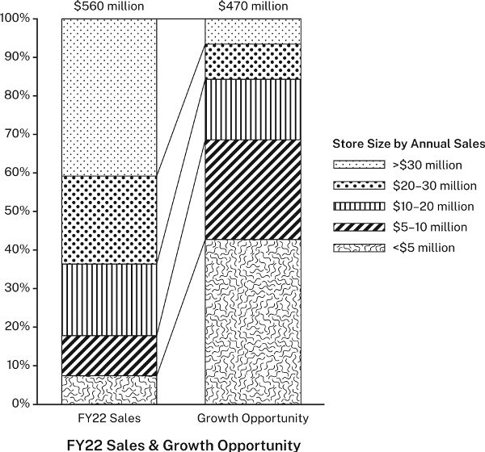
以百分比堆叠图对比销售额与增长机会
图示说明： 标题为“2022 财年销售额与增长机会”。左柱是 2022 财年销售额，总计 5.6 亿美元 ；右柱是增长机会，总计 4.7 亿美元 。纵轴均为 0%—100%，不同纹样表示按门店年销售额划分的五类规模：低于 500 万、500 万—1,000 万、1,000 万—2,000 万、2,000 万—3,000 万、超过 3,000 万美元。两柱中的同类门店用线连接。图强调各总额的构成，使不同规模门店的相对增长潜力不容易直接比较。
这张图模糊了要点，因为它强调销售总额和总增长机会，而没有突出不同规模门店在销售额与增长机会上的相对关系。最终报告把它拆成两张图，让比较更清楚：
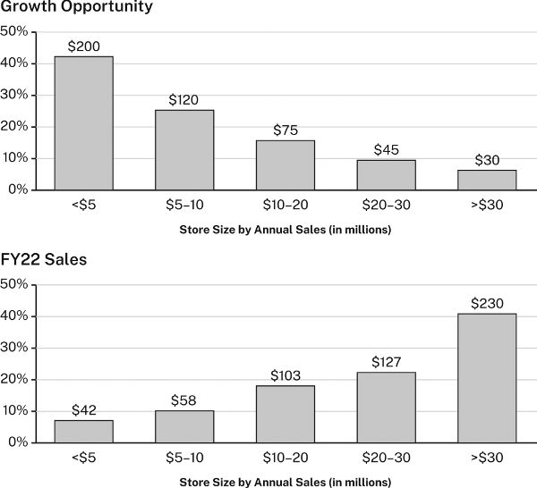
以共同横轴分别展示增长机会和销售额
图示说明： 上图标题为“增长机会”，下图为“2022 财年销售额”。两图共享相同的门店规模分类，横轴按门店年销售额由小到大排列，金额单位为百万美元 ；纵轴表示各类在本图总额中的占比。柱顶标注的金额如下：
门店年销售额规模，百万美元
增长机会，百万美元
2022 财年销售额，百万美元
低于 5
200
42
5—10
120
58
10—20
75
103
20—30
45
127
高于 30
30
230
两图使用共同横轴后，关系就一目了然：门店规模越大，2022 财年销售额越高，但预期增长机会却越小。
图像也是如此。如果观看者没注意到研究者希望他们看到的特征，就可能无法把图像理解为证据。因此，研究者有时会增强图像，突出某些特点。但要小心，不要让“增强”变成伪造证据；两者之间很容易越界。
实用提示：边收集，边评估证据
第四章鼓励在笔记中主动与资料对话：不只记引文和书目信息，也写下自己的想法与反应，参见 4.3—4.5 节。记录将来可能用作证据的数据或信息时，这一点尤其重要。因为在论证核心的三个要素——主张、理由、证据——中，证据是唯一不是由你自行构想出来的要素。
记住，主张是对自己想法的陈述，理由是支持主张的陈述；证据本身却不是陈述，虽然你可以用陈述来报告它。它是其他陈述所依据的数据或信息，参见 5.2 和 7.2 节。你既要知道记录是否准确，也要理解证据的价值与局限。因此，收集时就开始评估：能信赖到什么程度？可以拿它做什么？记下你对可靠性的判断、任何疑虑，甚至它启发的论证方向。为什么偏偏记下这些数字或那段引文？可以用本章的问题来引导自己，参见 7.5 节。
边收集边评估，至少有三项好处。第一，避免陷入机械地积累越来越多信息的陷阱。不断记笔记，有时其实是在拖延，因为只要继续收集，就能推迟艰难的起草。第二，保留最初反应，能帮助日后更严格地评估证据。第三，它会让你更早开始思考最终要提出的论证。
返回书首 ↑ 021 / 037
第 8 章 论证依据
论证依据，是把理由与主张联系起来的一般原则。本章解释何时以及怎样使用它。所有研究论证都有论证依据，正如它们都有主张、理由和证据。不过，与这些核心要素不同，论证依据常常隐而不言。一般来说，只有不把它说出来受众就无法理解论证，或者你预计受众会质疑推理时，才需要明说。
来看这个论证：
日本面临生活水平下降的前景。〔主张〕 因为其生育率只有 1.3，而且还在下降。〔理由〕
有人回应：
日本的生育率，你说得没错。但我不明白，这为什么意味着日本的生活水平会下降？这个结论是怎么推出来的？
如果提出论证的是你，会怎样回答？拿出生育率的证据并没有帮助，因为对方问的不是理由本身是否真实，而是它怎样支持主张。这个问题涉及论证的第四个、也是最抽象的要素：论证依据。
论证依据是把理由与主张联系起来的一般原则。它必不可少，因为它解释或确认了论证赖以成立的推理。你需要理解它，因为别人不仅可能质疑理由是否真实，也可能质疑理由是否相关。这时，不仅要说明理由和证据是什么，还要解释它们为什么支持主张；这可能比听起来更难。
每一个针对论证依据的问题，归根结底都是在追问你的信念建立在什么基础上。它要求你认识到，论证之所以说得通，是因为你接受某些原则，也就是论证依据；还要求你承认，持不同原则的人看到同样的理由和证据时，可能得出不同结论，甚至根本无法得出结论。
好在多数时候，我们不必作这样的哲学思辨，因为大多数论证依据来自我们参与的共同体：不仅有研究共同体和职业群体，也有社交圈、家庭、政治与宗教团体，乃至整个文化。
实际运用时，基本原则是：只有当受众持有不同的论证依据、不明说就无法理解你的推理，或可能质疑你的推理时，才把论证依据明确写出。 为本领域专家写作时，大多数论证依据可以不说，因为专家通常已将其视为理所当然。
8.1 日常推理中的论证依据
论证依据虽然抽象，我们却一直在使用它。拿谚语来解释推理时，这一点就很容易理解，因为谚语正是大家熟悉的文化性论证依据。例如，有人说：
听说联邦调查局一直在询问市长的幕僚。〔理由〕 市长肯定牵涉了某种见不得人的勾当。〔主张〕
另一个人可能反对：“没错，联邦调查局确实在询问市长的幕僚，但这为什么就说明市长不干净？”为了说明自己如何得出结论，第一个人也许会引用谚语：“有烟的地方就有火。”也就是说，看到事情有问题的迹象，就可以推断确实出了问题。
推理的运作方式是这样的：大多数谚语有两个不同部分，一个是情形——“有烟的地方……”；另一个是结果——“……就有火”。如果一般情况下，某种情形意味着某种结果，就可以依据这一联系，对具体情况作出推断。“烟与火”的谚语与联邦调查局调查市长的例子，关系如下：
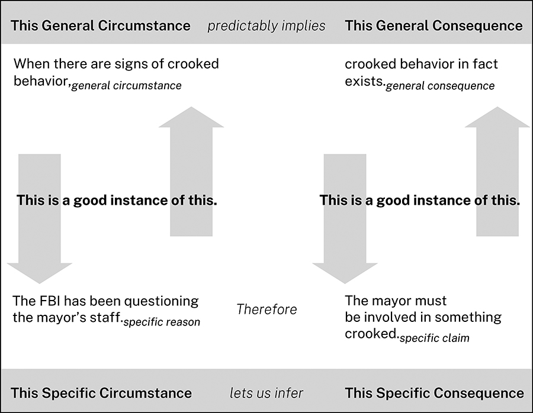
日常推理中一般原则与具体论证的关系
图示说明： 上层是一般情形“出现不正当行为的迹象”，指向一般结果“确有不正当行为”；下层是具体理由“联邦调查局一直在询问市长幕僚”，因此推出具体主张“市长一定卷入了不正当行为”。上下两侧的箭头表示：具体理由和具体主张，分别被视为一般情形与一般结果的恰当实例。最下方概括为“这一具体情形，使我们能够推断出这一具体结果”。
我们用谚语解释各种日常推理：因果关系，如“欲速则不达”；行为规则，如“三思而后行”；可靠的推断，如“一燕不成夏”。但日常论证依据不限于谚语。体育中有“防守赢得冠军”；烹饪中有“只在英文名称带 r 的月份供应牡蛎”；定义中有“质数只能被它本身和 1 整除”；研究中也有“受众发现一项证据有错，就会怀疑其余证据”。
8.2 研究论证中的论证依据
研究者及其他专业人士的论证依据，运作方式完全相同，但有些特点使它们更难把握，尤其对初入某个领域的人而言。
首先，研究论证的依据未必是大家共有的常识，往往是特定研究共同体使用的专业推理原则。新研究者需要时间才能掌握本领域的论证依据。事实上，所谓学会像生物学家、历史学家、医生那样思考，很大一部分就是学习这些原则。
其次，专家面向同行时，很少明说论证依据，因为可以放心假定对方已经了解。把理应显而易见的依据说出来，可能显得居高临下；更糟的是，还可能暴露出一位所谓专家其实并不专业。
这种不明说公认依据的做法，有利于研究共同体高效交流。不过，无论是评价别人论证的人，还是刚进入领域的初学者，能够识别正在起作用的论证依据，仍然很有帮助。假设现有证据支持理由，生物学家会接受以下论证：
鲸与河马的亲缘关系比与牛更近。〔主张〕 因为鲸与河马共享的 DNA 比与牛更多。〔理由〕
生物学家不会问：“DNA 为什么能用来衡量亲缘关系？”因此，面向同行写作的生物学家，也不会给出回答这个问题的论证依据。但如果提问的是非生物学家，专家就会把同行视为当然的依据说出来：
一个物种与另一物种共享的 DNA 比与第三种更多时，〔情形〕 我们推断，它与第二种的亲缘关系更近。〔结果〕
当然，接下来可能还得解释这条依据。关键是：是否需要明说论证依据，不仅取决于论证，也取决于受众。研究共同体成员只有在与外部人士交流，或受到质疑时，才会明说对同行不言自明的原则。
第三，专业领域的论证依据，常把情形和结果压缩在一起。大多数谚语的两个部分清楚分开：“有烟的地方，〔情形〕 就有火。〔结果〕 ”但也可以压成一句：“烟意味着火。”谚语很少这样说，专家却常如此表达：
共享 DNA 的多少，是衡量物种亲缘关系的尺度。
这样表述，就没有明确区分情形与结果，但仍可以把它们拆开。为求清楚，本章将采用最明确的形式来表述论证依据：当 X 时，就有 Y。
再看日本经济前景的论证：
日本面临生活水平下降的前景。〔主张〕 因为其生育率只有 1.3，而且还在下降。〔理由〕
如果有人认为理由与主张无关，提出论证的人就得给出论证依据，说明两者的联系为何成立：
当一个国家的劳动力萎缩时，〔一般情形〕 它的经济前景就不乐观。〔一般结果〕
这里的情形和结果，都必须比具体理由和具体主张更为一般化。其逻辑关系如下：
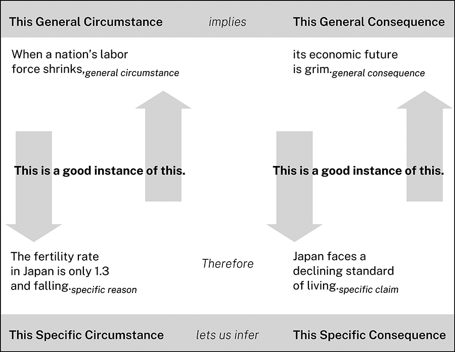
日本生育率与经济前景论证的结构
图示说明： 一般原则是“国家劳动力萎缩 → 经济前景不佳”；具体论证是“日本生育率仅为 1.3，且持续下降 → 日本面临生活水平下降”。图中上下箭头表示，理由与主张分别被当作一般情形和一般结果的恰当实例。
无论日常推理还是专业推理，模式都相同。
8.3 检验论证依据
受众质疑论证依据的方式，通常可以预见。来看这个论证：
在十八世纪初的新英格兰，除最富裕的农民外，很多农民拥有钟表的可能性似乎不大。〔主张〕 因为农民的遗嘱很少提到钟表。〔理由〕 考察 1700 至 1750 年马萨诸塞州四个县登记的 124 份此类遗嘱发现，只有 14% 提到任何一种钟表。〔证据报告〕
如果这项主张挑战了某些人的既有信念，他们很可能提出质疑。即使接受理由为真，也就是遗嘱确实很少提到钟表，他们仍可能反对：“我不明白，这怎么能成为相信很少有农民拥有钟表的理由？两者无关。”如果历史学家预见到这一质疑，就可以先提出论证依据：
在十八世纪初的新英格兰，遗嘱会列明家中贵重物品。因此，遗嘱没有提到某件此类物品，就说明立遗嘱者没有它。〔论证依据〕 所以，似乎不大可能……〔主张〕
注意，这个论证还依赖第二条依据：马萨诸塞州农民的情况，也适用于更广泛的新英格兰农民。不过，如果历史学家认为这条依据不会受到质疑，就可以不明说。
有效的论证依据必须满足五项条件，也就是受众能够对以下问题回答“是”：
这条论证依据合理吗？
它是否有充分的限定？
它是否优于与之竞争的其他依据？
它是否适合这个领域？
它是否涵盖了所用的理由与主张？
8.3.1 论证依据合理吗
如果受众能够接受，一般结果确实能从一般情形中推出，论证依据看起来就是合理的。若受众不愿直接接受，就得把它当作一项独立论证中的主张，用自己的理由和证据来支持：
在十八世纪初的新英格兰，遗嘱会列明家中贵重物品。因此，遗嘱没有提到某件此类物品，就说明立遗嘱者没有它。〔论证依据／主张〕 迈尔斯与温恩（2018）证实了这一点。〔理由〕 他们对十八、十九世纪美国继承习俗的研究表明……〔证据〕
8.3.2 论证依据是否有充分的限定
多数论证依据只在一定限度内合理。例如，关于钟表所有权的依据太绝对，似乎不允许例外：
在十八世纪初的新英格兰，遗嘱会列明家中贵重物品。因此，遗嘱没有提到某件此类物品，就说明立遗嘱者没有它。
加上限定，可能更可信：
在十八世纪初的新英格兰，遗嘱通常 会列明物主认为特别贵重 的家用物品。因此，遗嘱没有提到某件此类物品，就说明立遗嘱者很可能 没有它。
不过，一旦加上“通常”“很可能”“特别”等限定，又可能需要说明：例外情况并没有把你的理由和主张排除在外。“通常”和“很可能”到底意味着多大的频率？当时的人认为钟表特别贵重吗？
8.3.3 它是否优于竞争性的论证依据
你可能认为自己的论证依据既合理，也有充分限定，但还可能有其他依据与它竞争，甚至优先于它。下面两条依据，就都可以说有一定道理：
当人们相信某种医疗措施可能伤害自己时，就有权拒绝。泰勒认为新冠疫苗会引起心肌炎，所以他有权拒绝接种。
当医疗决策涉及公共卫生时，政府就有权加以规范。广泛接种新冠疫苗会让每个人更安全，因此政府可以要求政府雇员接种。
哪条依据应该优先？这需要论证。
有时，加上限定可以调和相互竞争的依据：
当人们相信某种医疗措施可能伤害自己时，就有权拒绝，前提是不危及他人的健康 。
当医疗决策涉及公共卫生时，政府就有权加以规范，前提是尽量少侵入个人对自己身体的自主权 。
找到合适的平衡，甚至找到任何平衡，都并不总是容易。事实上，所谓“文化战争”的争论，例如新冠疫苗强制接种之争，往往如此激烈、难解，正是因为它们更多涉及相互竞争的价值观和原则，也就是论证依据，而非理由或证据。
8.3.4 论证依据适合这个领域吗
一条依据可能合理、限定充分，也优于其他依据，但仍须被相关领域认可。法学生发现许多日常依据不适用于法律论证时，会吃到一记苦头。大多数人刚进入法学院时，都抱有这样的常识性信念：
一个人受到不公正待遇时，法律就应予以纠正。
但他们必须学会，法律上的依据可能优先于这类常识。例如：
忽视法律义务的人，即使出于无意，也必须承担后果。
因此：
年迈房主忘记缴纳房地产税时，别人可以通过缴清欠税买下他们的房屋，并将其驱逐。
法学生必须明白，严格法律意义上的正义，并非他们认为合乎伦理的结果，而是法律和法院支持的结果。
8.3.5 论证依据是否涵盖理由和主张
最后，必须确认理由与主张确实是论证依据的一般情形与一般结果的恰当实例。例如：
艾哈迈德： 也许你该开始用个效率应用。〔主张〕 因为你总是缺席我们的员工会议。〔理由〕
贝丝： 你为什么认为效率应用会让我去参加员工会议？
艾哈迈德： 如果做事更有条理，〔一般情形〕 就更容易记住日程安排。〔一般结果〕
贝丝： 我不参加，可不是因为做事没条理。
贝丝质疑的不是理由不真实，而是它不能算作一般情形的有效实例。她没有否认缺席会议，只否认缺席是由于缺乏条理；也许她只是觉得会议浪费时间。对她而言，艾哈迈德的理由并不在他的论证依据涵盖范围之内，因此不相关。
贝丝也可能回答说，用效率应用反而会使自己更没条理：
贝丝： 我一直都用纸质日程本，所以实在不觉得应用能帮到我。
这时，她质疑的是主张并非一般结果的恰当实例，也就是说，主张不能从理由推出：即使她做事确实没有条理，效率应用也帮不了她。
现实中的论证大多如此：某个情况究竟“算不算”一般情形的实例，或者能够推出什么具体结果，常常需要讨论和协商，而不是由毫无争议的定义决定。艾哈迈德与贝丝可以合理地争论，什么才算“没条理”；但什么几何图形算三角形，就不会引起这样的分歧。这也是讨论论证依据会带出更多讨论，并在理想情况下增进理解的又一个原因。
8.4 何时需要明说论证依据
任何领域的论证都依赖无数推理原则，但多数已融入研究者的默会知识，或已普遍得到接受，因此不仅没有明说，甚至根本未被察觉。不过，以下三种情况可能需要明确提出论证依据。
受众来自本领域之外。 面对不具备相同专业知识的人，你可能需要解释本领域专家怎样得出结论、支持主张；推理方法不同寻常时，尤其如此。采用本领域中较新或有争议的推理原则。 倚赖非常规原则，就可以预料至少一部分人会怀疑。明确提出论证依据，并说明其合理性，有助于化解疑虑。可以援引同样采用它的受尊敬的学者；若找不到，就自行论证，为这种推理辩护。提出一项别人只是因为不愿它为真，就会抵制的主张。 这时，一个好策略是：在提出预计会遭抵制的理由与主张之前，先给出希望对方接受的论证依据。对方未必因此更喜欢你的主张，但至少可能认识到，它并非不合理。
例如：
我们应当承认，人类活动是气候变化的主要原因。〔主张〕 因为几乎所有气候科学家都持这种看法。〔理由〕
受众可能抵制它，因为它威胁到他们坚信的其他观念。面对这样的受众，研究者可以先给出一条对方应该能接受的依据，促使他们至少考虑该主张：
当绝大多数具备相应能力的专家得出同一结论时，我们通常可以信赖它。〔论证依据〕 因此，我们应当承认，人类活动是气候变化的主要原因。〔主张〕 因为几乎所有气候科学家都持这种看法。〔理由〕
只要受众接受论证依据合理、理由真实，而且理由和主张确实是一般情形与一般结果的恰当实例，那么从逻辑上说，他们至少有义务考虑 这项主张。如果连这也不肯做，理性论证大概就无法改变他们的想法。
没有说出的话，也会显露你的为人
明确提出并支持论证依据，向受众解释他们可能不熟悉的推理原则，是一种礼貌。反过来，明知受众不懂，却对本应解释的依据保持沉默，也是在传递同样强烈、但不那么友善的态度。无论哪种做法，论证依据都会显著影响受众如何看待你通过论证呈现的研究者可信形象。
8.5 用论证依据检验自己的论证
试着为一个论证找出论证依据，可以检验它是否可靠。下面是一个有缺陷的例子：
今天十二至十六岁的儿童，比上一代同龄人明显更容易出现心理健康问题。〔理由〕 布朗（2021）表明，自 2010 年以来，儿童焦虑和抑郁的发生率上升了……〔证据〕 我们必须得出结论：社交媒体正在损害儿童心理健康。〔主张〕
要看出问题，可以试着找一条依据，把“儿童心理健康问题增加”这一理由，与“社交媒体至少应为部分增加负责”这一主张联系起来。该主张看起来符合常识，甚至可能是真的，但没有令人满意、也就是符合 8.3 节五项标准的依据，能够把这一个具体理由与这一个具体主张联系起来。它需要的依据大概是：
当儿童心理健康变差时，〔一般情形〕 就该归咎于社交媒体。〔一般结果〕
这似乎并不合理。为什么单单点名社交媒体？其他所有可能对儿童产生不利影响的因素呢？
要修复论证，就必须修改理由，使它成为受众能接受的一条论证依据中，一般情形的恰当实例。这也可能意味着，要为修改后的理由寻找新证据：
儿童受到的、无法控制的不利影响越多，其心理健康遭受的负面影响就越严重。〔论证依据〕 已知使用社交媒体是十二至十六岁儿童焦虑和抑郁的风险因素，而过去十年间，儿童使用社交媒体的情况显著增加。〔新理由〕 琼斯（2022）表明……〔新证据〕 鉴于这些事实，社交媒体使用的增加，很可能正在使今天的儿童比十年前更容易出现心理健康问题。〔主张〕
现在，理由和主张似乎更接近论证依据所涵盖的范围。下面的图展示了这一论证的逻辑，原书见第 149 页。
但一位急于推翻论证的怀疑者，仍可能反对：
等等，社交媒体并不总是儿童“无法控制”的“不利影响”。它难道不会有积极作用吗？诚然，儿童使用社交媒体与焦虑和抑郁风险相关，但它也让儿童能够与朋友联系，否则他们可能孤立无援……
研究者就必须回应这些质疑。现在你明白了，重要议题为什么总是争论不休；即使你觉得自己的论证无懈可击，别人为什么仍能说：“等等，那……怎么办？”
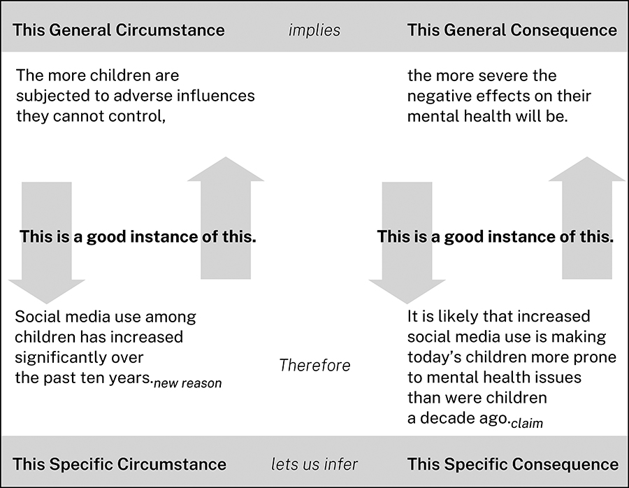
社交媒体与儿童心理健康论证的结构
图示说明： 一般原则为“儿童受到的、无法控制的不利影响越多 → 心理健康受到的负面影响越严重”。具体理由为“过去十年儿童使用社交媒体显著增加”，具体主张为“使用增加可能让今天的儿童比十年前更容易出现心理健康问题”。上下箭头标示具体情形与一般原则的对应关系。
8.6 质疑他人的论证依据
最难作出的论证，不只是挑战主张和证据，而是挑战研究共同体所信奉的论证依据。没有哪种论证任务比这更难，因为你要求共同体改变的不仅是相信什么，还有怎样推理。
要成功挑战一条依据，首先必须设想接受它的人会怎样辩护。论证依据可能由不同类型的论证支持，因此也必须用不同方式质疑。
8.6.1 质疑基于经验的论证依据
有些依据来自亲身经验或他人的报告：
惯于说谎的人，不值得信任。
有烟的地方就有火。
国债收益率曲线倒挂时，很可能发生经济衰退。
要挑战这些依据，就必须质疑相关经验是否可靠，这通常不容易；或者找出不能被轻易当成特殊情况排除的反例。
8.6.2 质疑基于权威的论证依据
我们会因为某些人的专业知识、地位或魅力而相信他们：
权威 X 说 Y，那么 Y 一定如此。
挑战权威最容易、也最友善的方式，是指出在当前问题上，权威并未掌握全部证据，或超出了自己的专业范围。最强硬的方式，则是论证该来源根本称不上权威。
8.6.3 质疑基于知识体系的论证依据
这类依据由一套定义、原则或理论支持：
数学： 两个奇数相加，结果是偶数。生物学： 进行有性生殖的生物，其后代与双亲中的任何一方都不同。法律： 存在先例时，法官应遵循先例。
挑战这类依据时，“事实”大多派不上用场。你必须挑战整个体系，这总是很难；或者证明具体情况并不属于该依据的适用范围。
8.6.4 质疑文化性的论证依据
这类依据依靠的不是个人经验，而是整个文化的共同经验，因此显得像无可动摇的“常识”：
种什么因，得什么果。
受到侮辱，就有理由报复。
杀不死你的，会使你更强大。
这些依据也许会随时间改变，但变化很慢。可以提出竞争性依据来挑战它们，或指出它们只适用于特定文化。
8.6.5 质疑方法层面的论证依据
这类依据是一般思维模式，只有运用于具体情况，才有实际内容。我们借助它们解释抽象推理；许多谚语也源于此。
概括： 如果所有已知的 X 都有性质 Y，那么所有 X 很可能都有 Y。对应的谚语是：“见过一个，就等于见过全部。”类比： 如果 X 在多数方面像 Y，那么 X 在其他方面也会像 Y。对应的谚语是：“橡子落地，离树不远。”征兆： 如果 Y 经常在 X 之前、期间或之后出现，那么 Y 就是 X 的征兆。对应的谚语是：“手冷，心热。”
哲学家曾质疑这些依据本身，但在实际论证中，我们通常只质疑它们的具体应用，或指出限制条件：“可以把 X 类比为 Y，但如果……就不行。”
8.6.6 质疑基于信条的论证依据
有些依据被置于不容质疑的位置。托马斯·杰斐逊在《独立宣言》中写道：“我们认为这些真理是不言自明的：人人生而平等……”就是援引了这样的依据。其他例子包括：
基于自然法的主张，必定为真。
基于神启的主张，必定为真。
这类依据靠的不是论证，而是拥护者的确信，因此几乎不可能用竞争性依据直接反驳。若某条依据把一项主张置于不容争议的地位，从而切断论证中的来回讨论，我们就已离开研究和研究论证的范围。一个主张若只是被假定为真，而不是因为有理由和证据支持，才被判断为真或至少可信，就不能算是研究的产物。
实用提示：理由、证据与论证依据
支持理由有两种方式：提供证据，或从论证依据推导出来。两种方式会产生不同类型的论证。研究者通常更信任第一种，因此尽可能让理由立足于扎实证据。比较以下两个论证：
我们应尽力阻止青少年边开车边发短信。〔主张〕 因为分心驾驶是青少年死亡的主要原因之一。〔理由〕 据美国疾病控制与预防中心统计，机动车事故造成的死亡，占十二至十九岁人群死亡总数的三分之一以上；而开车时发短信，会使任何驾驶者卷入事故的可能性呈指数级增加。此外……〔证据〕
我们应尽力阻止青少年边开车边发短信。〔主张〕 因为这样做会增加事故风险。〔理由 1〕 驾驶本就复杂，发短信又会分散注意力。〔支持理由 1 的理由 2〕 我们知道，人们在执行复杂任务时分心，表现就会变差。〔连接理由 2 与理由 1 的论证依据〕
如果你和大多数人一样，大概更喜欢第一个。因为它的论证依据没有争议，所以无须明说；主张得到理由支持，而理由又建立在扎实证据上。第二个也说得通，因为理由 1 和理由 2 分别是那条依据的一般结果与一般条件的恰当实例。但大多数人仍然想看到证据。
尤其要注意，不能只靠论证依据和理由，就支持事实性主张，参见 6.1 节：
边开车边发短信，是青少年死亡的主要原因之一。〔事实性主张〕 因为开车时发短信非常容易分心。〔理由〕 驾驶者分心时，发生严重甚至致命事故的风险就会增加。〔论证依据〕
你是不是在想：“我可以相信，但还是希望看到证明”？这个常识性的反应很能说明问题。我们无法仅凭推理，就断定开车发短信是青少年死亡的主要原因，甚至无法据此断定它确实造成了青少年死亡。除了数学、哲学、神学的某些分支等少数领域，证明事实性主张的办法，是拿出证据，表明所主张的确实是事实。
要记住：只要可能，就依靠确凿证据，而不要仅靠基于论证依据铺展开来的复杂推理。
返回书首 ↑ 022 / 037
第 9 章 承认异议并作回应
不考虑其他观点的论证，是不完整的。本章说明，怎样通过承认并回应他人可能提出的问题、异议与替代看法，让论证更有说服力。
再次强调，论证的核心，是由基于证据的理由所支持的主张。可以补充次一级理由及其证据，或补充连接主张和理由的论证依据，让它更充实。不过，如果只向受众提供主张、理由、证据和论证依据，无论你自己多么信服，他们仍可能觉得论证单薄，或没有认真对待自己的看法。论证不只是逻辑结构，也是社会互动。
要作出成功的论证，不能仅搭建一个由主张、理由和证据构成的稳固结构，还必须把受众带入其中：将自己的主张定位为对一场持续对话的贡献，而受众正关心、参与这场对话，参见引言和 5.1 节。
一种办法是，把核心主张呈现为读者关心的课题的解决方案；这正是引言的重要功能，第十四章会进一步讨论。另一种办法是，预判、承认并回应受众可能提出的问题、异议和替代看法。规划和起草论文或演讲时，别人不会在旁边追问或提出自己的观点，因此必须设想他们会问什么、怎么看，并把这些意见考虑进去。把自己想象成正在与受众交谈，就是建立合作关系的方式。
本章将帮助你设想并处理受众可能提出的三类问题：
质疑论证所处理的研究问题或研究课题，追问这番论证究竟为什么值得做。
质疑论证是否可靠、连贯：主张够不够清楚，理由和证据质量如何，逻辑与推理是否成立。
要求考虑其他可能：以不同方式界定课题，提出其他主张或解决方案，补入被忽略的证据，或参考别人对该主题的论述。
预先想到、承认并回应这三类问题，受众就更可能信任和接受你的论证。不要对自己放水：发现论证有问题时，就该着手修复。
9.1 针对研究课题的问题
第一部分曾指出，好的研究始于好的问题，并通向值得探讨的研究课题，也就是研究共同体认为重要、值得解决的课题。针对研究课题的疑问，与其说是在问论证本身，不如说是先于论证的问题。但如果答不上来，受众可能根本不会关注论证。研究者首先必须让受众满意地回答：“我为什么应该关心？”参见引言 I.4.3、2.5 和 6.2 节。
当受众理解研究问题或课题的重要性，并且相信研究项目有望给出可靠答案或解决方案时，就会关心这个论证。以下问题有助于建立这种信心。
先从研究课题入手：
为什么认为这里存在一个需要解决的问题？ 这种状况的代价或后果，对你和受众都必须足够重要。是否恰当地界定了课题？ 确保课题确实涉及所提出的议题，而不是别的议题；范围也应可控，不太大，也不太小。这是实际问题，还是认识层面的问题？ 需要通过行动来解决，还是通过增进理解来解决？这个课题为什么重要？ 需要给出受众能接受的答案。受众相信你的项目能够解决课题吗？为什么相信或不相信？ 有时，必须先说服受众，你确实能够回答研究问题，再给出答案。例如，证明自己具备必要能力或专业知识，或者能够取得所需数据。
9.2 针对论证可靠性的问题
接下来的问题，涉及论证核心——主张、理由、证据——以及论证依据。它们关注论证本身的质量，或者说各部分是否紧密配合。先从课题的解决方案，也就是主张开始：
解决方案或主张针对实际行动，还是针对理解？是否与课题性质相符？
解决方案或主张是否解决了课题？
主张是否足够具体，还是过于宽泛、含糊？
主张是否具有可争论性？
主张是否作了适当保留，还是说得太绝对？
留意那些看起来可能薄弱、实际却并不薄弱的地方。例如，预计受众会误以为方案带来某种实际上不存在的代价，就可以承认这一顾虑并加以回应：
聚焦特定银行的行为，似乎会弱化导致金融危机的系统性力量；但实际上，我们的案例研究将表明……
接下来，检查支撑部分，也就是理由和证据。先看理由：
理由足够吗？
理由彼此一致，还是相互矛盾？
理由与主张相关吗？
然后，设想别人怎样质疑证据。他们可能质疑证据的类型或时效：
“这种证据不适用于我们的领域。”“我想看到另一类证据：具体数字，而不是零星故事。”也可能反过来：“我要真实人物的故事，而不是冰冷数字。”
“证据已经过时了。”“还有比这更新的研究。”
即使证据类型合适，也足够新，受众仍可能质疑质量：
“不准确，数字对不上。”
“不够精确，‘许多’到底是多少？”
“不充分，或没有代表性，你没取得所有群体的数据。”
“不具权威性，史密斯并不是这方面的专家。”
“难以理解，我看不懂这些数据。”
“我不明白，这怎么与问题相关？”
如果受众对另一个与你不同的解决方案有切身利益，就可能特别怀疑。因此，如果觉得证据确有限制，不妨在对方提出异议前坦率承认。
组织论证时，要像预计受众中最怀疑的人那样，检验自己的主张、理由和证据。这样，至少可以回应最重要的那些异议，让受众看到：在他们进行压力测试之前，你已经先测试过自己的论证。即便如此，仍可能有人不信服。他们也许本就不愿被说服，从一开始就不是真正的对话伙伴；也许只是觉得论证还不够。那也只能接受。
9.3 设想其他可能的论证
承认自身论证的局限，会让受众看到你诚实立论、公平待人，从而建立可信度。如果不仅了解自身论证的优点和限制，也了解并认真考虑过其他可能，可信度就会更高。
看世界的方式与你不同的人，不仅可能观点不同，连术语定义、推理方法，甚至提供的证据都可能不同。不要轻易打发这些差异，而要把最重要的部分纳入论证，予以承认和回应。
如果非常熟悉主题和受众，可以自己设想其他观点。但通常，最好的办法还是查考资料来源。第四章鼓励你在研究过程中主动与资料对话，不只是提取信息，也用它们激发思考。这些资料也提供了现成的不同观点，供你回应。
可以把二手资料视为围绕主题、研究问题或课题展开的对话记录。了解已有对话，才能作出贡献。阅读时，留意资料是否提出不同主张、采用不同方法、关注课题的不同方面等。尤其要记录，你与资料在哪些地方意见不一，为什么不一致；也要记录不同资料之间的分歧。这些分歧都能帮助你识别应该在自身论证中承认的其他看法。如果已经知道如何回应某个来源，阅读时就把回应记下来。
可以回应的，不仅是资料中的主张，还有理由、证据和推理。若某个来源可能被受众认真看待，而你却不信服，不要忽略它，应解释原因。资料还会帮助你想象受众，预判他们的反应。你的受众往往与资料作者相似，有时甚至就是这些作者本人。
9.4 决定承认哪些异议
只要能想到几种替代看法或异议，就会遇到“金发姑娘式”的分寸问题：承认得太多，会分散论证核心；太少，又显得漠视甚至不了解受众的看法。需要找到“刚刚好”的数量。
9.4.1 选择回应对象
缩短替代看法和异议的清单时，优先考虑：
看似合理、但你能够反驳的弱点指控。
本领域重要的其他论证路线。
受众希望为真的其他结论。
受众熟悉的不同证据。
必须处理的重要反例。
寻找机会，借回应重申自身论证。例如，受众可能误解论证范围，就承认其担忧，再通过澄清提醒他们你的重点：
某些养殖鱼类的重金属污染确实值得担忧，但我们的研究聚焦于野生捕捞鱼类的营养价值……
如果受众可能想到一个与自己相近的方案，也可以借它突出自身方案的优点：
多数研究者认为，规则及其他正式写作建议非但不能改善写作，反而使表现变差，因为写作“是非自觉地创造意义的活动，而不是有意识地遵循规则的过程”。这对写作过程中的某些环节确实成立：起草句子时，不应一边查规则一边写。但写作不仅是起草，还包含许多有意识的过程。本研究将说明，哪些正式建议对写作中这些有意识的环节有效，哪些无效……
最后，可以承认那些对受众特别有吸引力的不同观点，但前提是你能作出实质回应，而不是显得随手把它们拨到一边。
9.4.2 承认自身论证的弱点
如果发现无法修复的弱点，先尝试重新界定课题，或重构论证来避开它。如果做不到，就面临艰难选择。你可以假装没看见，指望受众也发现不了，但这不诚实。如果他们发现，会怀疑你的能力；如果认为你刻意隐瞒，还会质疑你的诚实。
我们的建议也许显得天真，却有效：坦率承认问题，并说明以下一种情况：
论证的其他部分足以弥补这个弱点，而且有余。
弱点虽严重，但进一步研究会找到绕过它的方法。
弱点虽使主张无法被完全接受，论证仍对问题提供了重要认识，也提示更好的答案应具备哪些特点。
有时，研究者能把失败转为成功：把原本想支持却没能支持的主张，作为别人可能认为合理的假设提出，再说明它为什么不成立：
当陪审员以突出受害者痛苦的方式听取案情时，似乎会更倾向于归罪被告。毕竟，这是原告律师的常用做法，也正是我们原先希望研究能证实的。然而，实际上我们发现……之间没有相关性。
9.4.3 承认尚未能回答的问题
初学者有时希望对主题一锤定音，提出一种除完全赞同外不容其他回应的论证。这是误区。有经验的研究者明白，研究通常旨在推进共同体的集体理解，让对话继续下去。
事实上，最能激发思考的研究，往往并不是回答既有问题，而是提出我们尚未想到的新问题。研究认识层面的课题时尤其如此，但应用研究也可能如此。
与其装作掌握全部答案，不如坦率说明还有哪些问题未解决。熟悉领域的受众会因此更看重你的论证，也更看重你。
9.5 把回应组织成次级论证
不能仅仅断言相反主张，就算回应了其他观点和异议。即使最简短的回应，也需要解释：
虽然美国预防服务工作组 USPSTF 等机构，不建议对五十五岁以上男性进行常规 PSA 筛查，〔承认异议〕 但我们专门关注筛查对于高风险人群，例如有前列腺癌家族史者的价值。〔解释该异议为什么不适用〕
这一初步解释也许已足够。如果认为还需要更多，就补充支持：
虽然美国预防服务工作组 USPSTF 等机构，不建议对五十五岁以上男性进行常规 PSA 筛查，〔承认异议〕 但我们专门关注筛查对于存在风险的人群，例如有前列腺癌家族史者的价值。〔解释该异议为什么不适用〕 我们承认，常规 PSA 筛查导致过度诊断和过度治疗，让许多男性不必要地承受副作用，〔进一步让步〕 但蔡等人（2021）表明，结合有效咨询，对风险人群的检测能够降低……的发生率。〔报告补充证据〕
如果仍不够，就需要完整的次级论证。同样，回应其他观点时，也要避免过多或过少。只有经验才能教会你把握分寸，因此应留意专家怎样取得平衡，并加以学习。
9.6 承认异议与回应的表达方式
承认并回应异议或其他看法时，必须决定投入多少篇幅：从略提一句就予以驳回，到长篇讨论，都有可能。以下大体按从最简短、最轻视，到最充分、最尊重的顺序排列。方括号和斜杠表示可替换的表达。
9.6.1 怎样承认异议和其他看法
措辞应体现你给予对方观点的分量。
1. 用 despite、regardless of 或 notwithstanding 引出，可以淡化异议。
[Despite/Regardless of/Notwithstanding] the mayor’s claims that she wants to reduce property taxes, 〔承认〕 her latest budget proposals suggest that … 〔回应〕
尽管／不论市长声称自己希望降低房产税，她最新的预算提案却表明……
although、while 和 even though 也可以这样使用：
[Although/While/Even though] some smaller and midsize banks have failed, 〔承认〕 the retail banking sector as a whole remains strong … 〔回应〕
虽然／尽管一些中小银行倒闭，零售银行业整体仍然稳健……
2. 用表示可能性或表象的词，间接承认。 可用 seem、appear、may、could，或 plausibly、justifiably、reasonably、surprisingly，甚至 certainly 等副词，分别表达“似乎”“可能”“说得通地”“有正当理由地”“合理地”“出人意料地”“确实”等语气。
In his personal journals, Gandhi expresses what [seem/appear] to be symptoms of clinical depression. 〔承认〕 But those who observed him … 〔回应〕
甘地在私人日记中表现出一些似乎属于临床抑郁的症状。但观察过他的人……
This proposal [may have/plausibly has] some merit, 〔承认〕 but we … 〔回应〕
这项建议可能有／似乎确有可取之处，但我们……
3. 将异议归于未指明的来源，给予少量分量。
It is easy to [think/imagine/say/claim/argue] that taxes should … 〔承认〕 But there is [another/alternative/possible] [explanation/line of argument/account/possibility]. 〔回应〕
人们很容易认为／想象／说／主张／论证，税收应当……。但还有另一种／可替代的／可能的解释／论证路线／说明／可能性。
Some evidence [might/may/can/could/does] [suggest/indicate/point to/lead some to think] that we should …, 〔承认〕 but … 〔回应〕
某些证据可能／可以／确实暗示／表明／指向，或让一些人认为，我们应当……，但……
4. 将异议归于泛指的讨论者，给予更多分量。
There are [some/many/a few] who [might/may/could/would] [say/think/argue/claim/charge/object] that carbon capture technologies are not … 〔承认〕 But, in fact, … 〔回应〕
有一些／许多／少数人可能／会说／认为／论证／主张／指责／反对说，碳捕集技术并不……。但事实上……
Although [some researchers/critics/scholars] have argued that …, 〔承认〕 our research shows … 〔回应〕
虽然一些研究者／批评者／学者论证说……，我们的研究却表明……
注意，过早或过度贬低不同观点，尤其贬低持这些观点的人，会损害你的可信形象，也会削弱论证。例如：
The ill-conceived claim that …
“……这一欠考虑的主张 。”
Some naive researchers have claimed that …
“一些天真的 研究者声称……”
The often-careless historian has even claimed that …
“这位经常粗心大意的 历史学家甚至声称……”
把批评留到回应部分，并针对研究本身，不针对人。
5. 用自己的声音承认，认可对方有一定道理。 可使用 I 或 we、被动语态，或 admittedly、granted、to be sure 等表示“诚然”“必须承认”“的确”的表达。
I [understand/know/realize] that progressives believe …, 〔承认〕 but … 〔回应〕
我理解／知道／意识到，进步派相信……，但……
It is [true/possible/likely] that heat pumps are more efficient than natural-gas furnaces. 〔承认〕 However, … 〔回应〕
热泵确实／可能／很可能比天然气炉更高效。不过……
It [must/should/can] be [admitted/acknowledged/noted/conceded] that no good evidence proves that … 〔承认〕 Nevertheless, … 〔回应〕
必须／应该／可以承认／认可／指出／让步承认，目前没有有力证据证明……。尽管如此……
[Granted/Certainly/Admittedly/True/To be sure/Of course], Adams has claimed … 〔承认〕 However, … 〔回应〕
诚然／确实／必须承认／的确／无疑／当然，亚当斯曾主张……。然而……
We [would/could/can/might/may] [say/argue/claim/think] that programs such as free mental health screenings might discourage …, 〔承认〕 but these effects are outweighed by … 〔回应〕
我们可以／可能会说／论证／主张／认为，免费心理健康筛查等项目或许会抑制……；不过，相比之下，……的作用更大。
9.6.2 怎样回应异议和其他看法
用 but、however、on the other hand 等表示不同意见的词语，也就是“但是”“然而”“另一方面”，开始回应。如果尚未解释回应的依据，可能需要补充理由，甚至一个完整的次级论证。
回应可以从委婉到直截了当。
1. 不说对方表达不清，而说自己尚未完全理解。
But [I do not quite understand how/I find it difficult to see how/It is not clear to me how] X can claim that, when … 〔回应〕
不过，既然……，X 怎么能提出这一主张，我还不太理解／我很难看明白／我还不清楚。
2. 指出仍有问题未解决。
But there are other issues here … / But there remains the problem of … 〔回应〕
但这里还有其他问题 ……／但……的问题仍未解决 。
3. 更有力地回应，指出对方立场不相关或不可靠。
But as insightful as that may be, 〔承认〕 it [ignores/is irrelevant to/does not bear on] the issue at hand. 〔回应〕
这一看法或许很有洞见，但它忽略了／无关乎／没有涉及当前问题。
But the [evidence/reasoning] is [unreliable/shaky/thin]. 〔回应〕
但其证据／推理不可靠／站不稳／太薄弱。
But the argument is [untenable/weak/confused/simplistic]. 〔回应〕
但这一论证不能成立／很薄弱／混乱不清／过于简单化。
But the argument [overlooks/ignores/misses] key factors. 〔回应〕
但这一论证遗漏了／忽略了／未注意到关键因素。
你需要自行决定回应多直接。如果某种不同观点显然错误，就明说，但仍应针对研究，不针对人。
4. 认为另一位研究者没有充分思考时，通常也应有礼地指出。 例如：
Smith’s evidence is important, 〔承认〕 but we must look at all the available evidence . 〔回应〕
史密斯的证据很重要，但我们必须考察全部现有证据 。
That explains some of the problem, 〔承认〕 but it is too complex for a single explanation . 〔回应〕
这解释了部分问题，但问题太复杂，单一解释并不足够 。
That principle holds in many cases, 〔承认〕 but not in all . 〔回应〕
这一原则在许多情况下成立，但并非所有情况都成立 。
实用提示：三种可以预见的分歧
至少有一部分受众，很可能想到以下三种替代看法。
1. 除你所说的原因外，还有其他原因
讨论因果关系时，记住：没有哪种结果只有一个原因，也没有哪种原因只有一个结果。如果论证 X 导致 Y，别人就会想到其他原因。蜜蜂种群衰败可能由农药使用造成，但熟悉蜜蜂的人还能列出栖息地丧失、疾病、转基因作物、寄生虫等因素。
因此，从众多原因中聚焦一个时，要承认其他原因。若觉得受众认为某个原因理应得到更多关注，就承认这种看法，并解释自己为什么没有着重讨论它。
2. 这些反例怎么办
无论证据多丰富，怀疑者都可能想到他们认为足以削弱论证的例外和反例。所以，要比他们先想到，承认其中较可信的，尤其是鲜明生动的反例，再解释为何它们的破坏力没有对方想象的那么大。
针对变化范围很大的现象，例如气候，提出主张时，尤其要小心。不懂统计推理的人会盯住异常个案，即使它仍在正常分布之内。迈阿密七月四日天气寒冷，并不能推翻气候变化的主张；正如蒙特利尔元旦天气暖和，也不能证明该主张。
3. 我对 X 的定义与你不同；在我看来，它意味着……
受众接受你的定义，会更容易接受主张。如果研究对社交媒体的“成瘾”，就必须让他们明白这个词的含义。是字面意义上的成瘾，即社交媒体像香烟和某些药物一样，造成生理渴求；还是比喻意义上的成瘾，只是很难停止使用？
相关定义可能短到词典里的几行，也可能长到医学参考书中的数页。但不论资料怎样说，人们往往会依自己的看法，重新解释遇到的术语。科技巨头的高管曾论证，社交媒体不会使人上瘾，因为人们可以自由停止使用；批评者则认为，它确实使人上瘾，因为很多人停不下来。
如果论证的成败取决于某个术语的含义，就要给出能支持解决方案的定义，并用次级论证说明为什么采用它。不要把词典定义当成权威，切勿以“根据《韦氏词典》，‘成瘾’的意思是……”起头。留意哪些合理的替代定义需要承认。
如果使用的专业术语也有日常含义，例如“社会阶级”或“理论”，应说明日常含义，并解释为何采用专业含义。反过来，如果没有按专家预期使用某个术语，也应承认这一点，解释为什么选择另一种含义。
返回书首 ↑ 023 / 037
第四部分 呈现你的论证
返回书首 ↑ 024 / 037
序言：规划、写作与思考
并不是每项研究最后都会形成正式论文或演讲。但如果你的研究需要这样的成果，迟早就需要一个计划。许多作者动笔时没有计划，思路逐渐清晰后，不得不舍弃写得虽好却不相关的内容。另一些人没有详细提纲、摘要或论证分镜图，就无法开工。还有人早在正式落笔之前，就已在头脑中反复起草。
你需要找到适合自己开始初稿的方式。不过，如果从研究之初就不断撰写摘要、分析和评论，一路朝论文推进，就能为正式起草做好准备。
以下迹象表明，你已经可以规划初稿：
知道受众是谁、他们知道什么，以及他们为什么应该关心你的课题。
知道想呈现怎样的研究者可信形象或品格。
能用两三句话概括研究问题及其答案。
能概述支持主张的理由与证据。
知道受众什么时候可能看不出理由与主张的关联，并能说出连接两者的论证依据。
知道别人可能提出什么问题、其他看法与异议，并能作出回应。
即使已有计划，也准备好起草，有经验的作者仍明白，自己不会一路直达成稿。他们知道会走错路，也会有所发现，甚至可能重新思考整个项目。他们也知道，初稿中的许多内容不会进入定稿，所以会及早开始，为修改留下时间。
第四部分将引导你完成最终论文或演讲稿。第十章讨论规划和起草，第十一章讨论论证的组织。第十二章处理一项要求很高的工作：将资料融入文章并规范引用。第十三章讨论怎样以视觉形式呈现定量数据，第十四章讨论有效的引言与结论。第十五章提供清晰、直接表达的原则。最后，第十六章讨论怎样以演讲方式发表研究。
在此之前，先来思考研究不可缺少的一项活动：与他人分享。正如本书反复强调的，把结果与感兴趣的研究共同体分享，是研究的最终目的。正因如此，我们才要找到好问题，搜集可靠资料，形成并支持一个好答案。
有时，你的受众至少起初可能只有一位教师。你也许会想：“老师对这个主题了如指掌。把研究写出来，除了证明我做得到，还有什么收获？”教师的职责并不只是验证你能不能研究和写作，而是帮助你发展这些能力。还有一个答案：写作不仅为了分享成果，也为了在分享之前改善成果。
除了分享，边研究边写作至少还有三个理由。
为了记住而写
有经验的研究者首先用写作记住所读内容。少数天赋出众的人能把大量信息装在脑中，大多数人则需要作阅读笔记。如果不记，很可能忘记；更糟的是，可能记错。
为了理解而写
第二个理由，是发现所读材料和所收集数据中的更大模式。以新的方式安排和重新安排研究结果时，会发现新的含义、联系与复杂之处。即使能把所有内容记在脑中，仍需要借助外在工具，梳理方向各异的论证，描绘复杂关系，分辨专家之间的分歧。
因此，熟练的研究者不会等资料收齐再写，而是从项目一开始就写，帮助自己以新的方式组织信息。
为了检验思考而写
第三个理由，是把想法从脑中移到纸上，看清自己究竟在想什么。学生和专业人士大都一样：想法在脑中时，总觉得比写成文字、冷静检视时更有说服力。只有把它们从迅速而混沌的思绪中分离出来，固定为自己和读者都能仔细研究的有序形式，才能知道想法究竟有多好。
术语辨析：答案、解决方案、主张与论点句
第一、二部分用“答案” answer 和“解决方案” solution，指解决研究核心问题的命题。第三部分用“主张” claim，指你通过论证支持的答案或方案；用“核心主张” main claim，指整个论证其余部分所支持的关键断言。
第四部分则用“论点句” point，指论文中陈述主张的句子，有人也称之为 thesis。答案、解决方案、主张和论点句，都是从不同角度看待同一个东西。
还有一个写出研究的理由：写作就是思考。 归根结底，把研究写出来，就是与受众一起思考，也为受众思考。为他人写作时，你会理清自己的想法，使双方能够进一步探索、扩展、组合，更充分地理解它们。为他人着想的思考，比几乎任何其他思考都更仔细、更持久、更有洞见，也更经过深思熟虑。
返回书首 ↑ 025 / 037
第 10 章 规划与起草
论证组织好后，你也许已准备动笔。但有经验的作者知道，先作规划会更有帮助。规划能把论证的各要素组织成既连贯、又有说服力的形式。
某些领域有通行的研究交流格式，已经替你完成了部分规划。例如，在实验科学中，读者通常期待报告大致采用以下结构：
引言 → 方法与材料 → 结果 → 讨论 → 结论
如果所在领域要求采用惯常结构，就向教师索取范例，或到二手资料中寻找。但大多数领域需要自行安排；无论怎样安排，都必须帮助读者找到想看的内容。
10.1 为什么要写正式论文
即使同意写作对学习、思考和理解很重要，你可能仍会问：“为什么不能按我自己的方式写？为什么必须满足一个我尚未加入，甚至未必想加入的共同体的要求？”这些疑问完全合理，大多数教师也希望学生更经常提出。不过，如果教育丝毫没有改变你，那只是肤浅的教育；教育越深入，就越会改变现在的你，或你想成为的那个人。
学习按受众预期写作，最重要的理由是：为他人写，比只为自己写，对自己的要求更高。把想法写定时，它们对你已太熟悉，你需要借助外部眼光，才能看到想法实际上如何，而不是自己希望它们如何。试着预判读者必然提出的批判性问题，会加深你对自身工作的理解：怎样评价证据？为什么认为它相关？考虑过哪些想法，又为什么排除了它们？
我们一直鼓励边做边写，在发展想法的同时澄清它。但每位研究者都能回想起这样的时刻：为了满足读者的期待而写作时，发现了只为自己写时没有察觉的思维漏洞，或获得了新的见解。只有设想并满足读者，尤其是见闻充分、细心审慎的读者的需要与期待，这种发现才会出现。
你也许还会想：“好吧，我为读者写，但为什么不能按自己的方式？”读者期待的惯常形式，并不是只等你把想法倒进去的空容器。它们也让作者能以其他情况下无法做到的方式思考、交流，并体现使用这些形式的研究共同体所共享的价值。
无论加入什么研究共同体，都需要通过该共同体认可的形式，也就是体裁，展示自己了解其惯例。这些体裁不仅呈现共同体知道什么，也呈现它如何获得知识。
研究论文、学术文章、研究报告、会议论文、法律意见书等各种以研究为基础的写作体裁，都是为满足使用者的需要而逐渐形成的。它们相对稳定，使共同体的新人与资深成员能依托共同惯例和期待开展交流。熟悉本领域的体裁后，就更能回答那些可以预见的问题，理解成员关心什么，以及为什么关心。
不过，你也许还会问：“为什么要采用不属于我的语言和形式？你们不就是想把我变成像你们一样的学者吗？按照要求写，我会不会失去自我？”我们再次承认，对身份与改变的担忧是合理的。但学习使用某领域的惯常形式，并不要求放弃个人身份；恰恰相反，它让你能以别人听得见的方式，分享自己的想法和视角。
事实上，学习某领域或职业的写作体裁，也就是逐渐成为这个研究共同体的成员。从这个意义上说，学习确实会改变你。但也要知道，使用这些形式的同时，你也在改变它们，哪怕变化很细微。
今天，许多研究写作形式与一百年前、五十年前，甚至某些领域的十年前，已经很不一样。研究共同体面对新课题、采用新方法、使用新传播技术，并吸纳新成员和新的认识方式时，这些形式也会继续演变。
10.2 规划论文
10.2.1 起草一份暂用的引言
人们常建议最后再写引言，但大多数人需要一份暂用引言，帮助自己走上正轨。因此，不妨预备写两次：现在先写给自己看，之后再写供读者阅读的定稿。
定稿的引言通常有三个部分，参见第十四章，所以暂用引言也可以按这三个部分来构思。如果遵照了前面的建议，你已经在论证分镜图第一页底部写下核心主张。现在，填入它上方的内容，一步步引出主张。
1. 背景：读者现在怎样想、怎样做
引言的核心是研究问题，因此首先必须让读者看到，论证将挑战什么。
简要提出论证要质疑的某种信念或状况。例如，要提出有关阿波罗登月计划的问题，可以先请读者想想：它怎样象征美国作为技术先进国家的身份。背景可以从以下角度切入。
研究前自己的想法。 “我原先以为……”
我一直把阿波罗计划看作美国创造力的象征。
他人的看法。 “多数人认为……”
阿波罗计划一直被视为人类历史上的标志性成就，也被视为美国技术领先地位的象征。
某个事件或状况。 “事情似乎表明……”
人类首次踏上月球半个世纪后，阿波罗计划依然象征着美国的民族自豪感。
其他研究者的发现。 “研究表明……”
研究者普遍认为，阿波罗计划加速了多个行业的技术创新。
当然，不能在一篇论文里把所有方式都用上。应选择最能引出论证的一两种。如果此处概述资料，只用那些你打算扩展、修正或纠正其发现的来源。
2. 课题：读者需要知道却还不知道什么，以及这为什么重要
第一部分指出，研究课题回应一个研究问题，由两个部分构成：某种状况，以及该状况的代价或后果；后者确立了课题的重要性。记住，课题可以涉及实际行动，也可以涉及认识，参见 2.1 节；这里用认识层面的课题作例子。
在引言中，把问题或状况表述成一段说明研究缘起的话，指出共同体还不知道、或尚未理解什么。用“但是”“然而”等转折语开始。
研究问题： 阿波罗计划怎样成为美国国家认同的象征？
说明研究缘起： 我一直把阿波罗计划看作美国国家认同的象征。登月是人类历史上独特的时刻，也是美国历史上的重大时刻。关于阿波罗计划如何多次抵达月球，我们几乎无所不知，〔背景〕 然而，直到今天，我们仍未充分理解：为什么偏偏这项任务被认为对美国国家认同如此核心。〔研究缘起〕
引出研究缘起的方式有很多。阅读时，留意资料作者怎样做，再把它们当作范例。
接下来，如果能做到，就回答“如果一直弄不清，会怎样”，解释问题的重要性。第一部分说过，这是任何研究项目都需要回答的最重要问题，因为它触及：项目为什么对自己重要，又为什么应该对别人重要。引言是向读者解释这一点的最佳机会：
如果能解释阿波罗计划如何成为美国国家认同的象征，就能更好地理解一个更一般的问题：具体历史事件怎样成为国家认同的象征。
起草时，如果暂时想不出“这为什么重要”的答案，不要纠缠，修改时可以再回来处理。
3. 回应：读者应该知道什么
修改主张，用与背景和课题表述相呼应的术语，回答研究问题：
阿波罗载人登月计划之所以成为国家认同的象征，不仅因为它彰显美国的创造力和技术实力，也因为它是在与太空竞赛对手苏联的竞争中做到这一点。对美国人而言，任务成功象征着自身生活方式的优越性。
如果还做不到，至少通过介绍论文将如何回答问题，为写作找到一个起点：
本文首先概述阿波罗计划所处的政治背景，随后考察同时代纸质媒体对该计划的呈现……
虽然粗略，这样的引言已足以让你开始。等真正写出论证后，再在定稿中补充、完善引言，参见第十四章。
10.2.2 确定贯穿全文的关键术语
要让论文显得连贯，读者必须能认出贯穿各部分的几个关键概念。如果同一概念换用太多种说法，读者可能认不出来。因此，应选择并较为一致地使用术语。
术语要选得谨慎，因为它们既表明你心目中的受众是谁，也影响受众的反应。例如，为广泛受众写作，可以用“果蝇”，而不用学名 Drosophila melanogaster。
一些作者担心词语重复太多，这种顾虑可以理解。但因为你已经知道自己想说什么，会比读者更明显地感到重复。事实上，有意安排的重复，能够有效帮助读者跟上论证。
在笔记或论证分镜图中，寻找那些指称关键概念的术语，尤其查看表述主张及其重要性的地方。试着找出最重要的四五个。例如，研究电子舞曲的混音，论文的一条主线可能是“合理使用”这一法律概念。但如果使用太多相关词语——版权、创造力、合理使用、自由、知识产权、再混音、版税——读者可能反而看不见主线。术语数量过多，会掩盖较大的主题。
起草时，可能会发现新主题、舍弃旧主题。但把最重要的术语和概念放在心上，文章会写得更连贯。
10.2.3 规划正文
概述背景，界定术语。 在分镜图的引言页后增加一页，列出必要背景。可能需要定义术语、进一步回顾研究、说明课题、限定项目范围，或把课题放进更大的历史与社会背景中。保持简短。为每个主要部分建立一页分镜图。 在页首写出本部分其余内容将支持、展开或解释的论点句。它通常是支持核心主张的一条理由。找到适当顺序。 构建论证时，参见 7.1 节，你采用的是自己觉得合理的顺序。规划论文时，则必须找到读者觉得合理的顺序。
前两种排列方式基于主题本身：
逐部分展开。 如果主题可以拆成若干部分，就依次处理。但仍应按功能关系、层级等安排，使读者容易理解。按时间顺序。 这是最简单的：从早到晚，或从原因到结果。
以下六种方式基于读者的知识和理解：
从短到长、从简单到复杂。 多数读者希望先处理简单问题，再进入复杂问题。从熟悉到陌生。 多数读者希望先读熟悉的议题，再读新的议题。从争议较小到争议较大。 从已认同的内容过渡到尚不认同的内容，通常更容易。从重要到次要，或反过来。 多数读者希望先看到最重要的理由；不过，把它放到最后，也可能更有冲击力。先建立后续理解所需的基础。 读者可能必须先明白某些事件、原则或定义，才能理解其他内容。先一般分析，再具体应用。 读者可能要先了解整体立场，才能跟上它在具体文本、事件和情境中的应用。
这些原则常能配合：读者认同且容易理解的内容，也可能短而熟悉。但它们也可能冲突：你也许必须决定，是先抛出核心论点，还是先铺垫必要背景。无论选择什么顺序，都要满足读者需要，不能只是复现想法产生的先后。
开始起草时，可以在每节或每段开头，用词语标明顺序：“首先……其次……”“后来……最后……”“更重要的是……”“一个更复杂的问题是……”“因此……”。即使觉得这些提示生硬，也不必担心，之后可以修改甚至删掉。
10.2.4 规划各节与小节
1. 标出各节、各小节的关键术语。 全文需要引言，每个部分也需要。前面建议把各节论点句写在对应分镜图页首。现在，像挑选全文关键术语一样，标出能把这一节与其他各节区分开的术语。如果找不到，就仔细检查它对整体有什么贡献；也许贡献很少，甚至没有。
起草时，用这些关键术语生成各节标题。如果本领域论文不用标题，定稿时再删。
2. 标明证据、论证依据、承认异议与回应，以及小结的位置。 把它们添加到各节对应的分镜图上。它们本身也可能需要进一步论证支持。
证据。 多数章节主要由支持理由的证据构成。如果一条理由有多项证据，按读者能理解的顺序安排。标记哪些证据需要解释：来自哪里，为什么可靠，究竟怎样支持理由。承认异议与回应。 设想读者可能反对什么，再概述回应。回应可能是至少包含主张和理由的次级论证：“一些研究者说……，但我认为……，因为……”。其中也可能包含证据，甚至需要设想对方如何回应你的第一次回应，再作第二次回应。论证依据。 一般来说，如果需要明说，应放在主张及其支持理由之前。
例如，下面的论证如果面向不熟悉伊丽莎白时代社会史的读者，就需要论证依据：
1580 年，牛津大学大多数学生签署文件时，只写名字和姓氏，〔理由〕 因此多数人必定出身平民。〔主张〕
先加上论证依据后，对所有读者，包括专家，都更清楚：
十六世纪末的英格兰，平民而非绅士阶层的人，不会在签名中加上 Mr. 或 Esq. 等称谓。〔论证依据〕 1580 年，牛津大学大多数学生签署文件时，只写名字和姓氏，〔理由〕 因此多数人必定出身平民。〔主张〕
如果觉得读者会质疑论证依据，就概述支持它的论证；如果读者可能认为理由或主张并非该依据的有效实例，就概述为何它们确实适用。
如果初稿很长，充满日期、人名、事件和数字等大量事实，可以在每个主要部分结尾简短总结论证进展：已经确立什么？整体论证推进得怎样？如果定稿时这些小结显得累赘，再删掉。
10.2.5 起草一份暂用的结论
在分镜图的结论页顶部，再写一遍论点句。随后，若能做到，就概述其重要性，再次回答“这为什么重要”。
规划引言、正文和结论并开始起草时，可能发现有些笔记用不上。这不意味着此前浪费了时间。正如欧内斯特·海明威所说，当你舍弃明知不错、只是比不上保留内容的材料时，就知道自己写得很好。
10.3 避免三种常见但有缺陷的结构
组织论文的各种方式，并不一样好。初次尝试往往过于贴着研究者、作者自身的思考和行动展开，反而不服务于读者。以下三种结构都不理想。
1. 不要把论文写成思考过程的流水账
初稿时，这样写可以接受，甚至很自然，因为你还在弄清自己的想法和要说的话。但对读者帮助较小。他们想知道你的论点和相信它的理由，却未必想知道途中每一步、每次走错方向、每次回头或改变想法与感受的过程。尤其是读者不得不熬过整个项目史，才看到你留在最后的核心论点时，会格外烦躁。
检查初稿，寻找那些讲的不是研究结果，而是如何开展研究、自己当时怎么想的句子。例如：“第一个问题是……”“随后我比较了……”“最后，我得出结论……”。若不止零星几处，可能说明你不是在支持主张，而是在讲自己如何得到主张。此时应围绕论证核心——主张及其理由、证据——重新组织。
2. 不要把论文拼成资料的拼布
这种方式和上一种一样，也可能对初稿有用，取决于个人写法。有些研究者喜欢先摆出证据，再围绕它充实论证；另一些人先聚焦自己的想法，之后再补入证据。但最终，读者要的是你的分析，不是资料摘要。
初学者容易把引文、摘要和松散转述缝在一起，几乎没有自己的思考。这类拼凑式写作，会招来“全是总结，没有分析”的批评。主要在线上查资料时，风险尤其大，因为复制粘贴太容易。有经验的读者能认出来，你也可能面临剽窃指控，参见 12.9 节。
3. 不要直接照着作业题目的措辞组织论文
作业要求似乎提供了现成结构，但照搬有风险，初稿也是如此。如果第一段只是复述题目，教师可能认为你没有贡献自己的想法。例如：
作业要求： 不同知觉理论，对认知中介在感觉输入处理中的作用赋予不同权重。有些认为，输入不经中介就抵达大脑；另一些认为，感受器本身也受认知影响。请比较两种对此持不同立场的视觉、听觉或触觉理论。
论文开头： 不同视觉知觉理论家，对认知中介在感觉输入处理中的作用赋予不同权重。本文将比较两种视觉知觉理论，其中一种……
如果作业列出了若干要讨论的问题，应按最有助于向读者传达自己论证的顺序处理，而不是按题目列出的顺序。例如，要求“比较弗洛伊德与荣格关于想象与无意识的异同”，不意味着必须分两部分，先弗洛伊德、后荣格。那样常会写成两份互不相干的摘要。不如把主题拆成概念上的各部分，例如无意识与想象的构成要素、定义等，再按对读者有帮助的顺序安排。
10.4 把计划变成初稿
一些作者以为，只要有了提纲，或更好的论证分镜图，就能按部就班地造句。有经验的作者知道并非如此：起草像规划一样，也可能是发现的过程。研究中最令人兴奋的时刻之一，常在起草时出现——我们发现了在表达出来之前还没有的想法。
10.4.1 用自己舒服的方式起草
许多有经验的作者，在填充分镜图时就开始写。他们借早期草稿探索想法，再根据发现修正计划，也知道其中许多文字不会留下。探索式起草能帮助你发现从未想到的观念，但需要时间。如果期限很紧，就等计划更清楚后再动笔。
许多人写初稿很快：让文字先流出来，略过可以以后补入的引文和数据，卡住就跳到后面。想不起细节，就插入一个“[?]”，继续写到写不动为止，再回头查。不过，写得快的人仍需时间修改，所以应及早开始。
截止日期与起草
截止日期总来得太快；我们总想再多一个月、一星期，哪怕一天。本书每一版，我们都曾与期限搏斗。因此，尽早动笔。有些研究者告诉自己，开始写之前还得再读一篇文章、再做一个实验、再检查一次计算或引文。但不开始，就永远写不完。
同样，有些人以为必须改到完美为止。然而，完美的论文、学位论文或著作从未写出过，也永远不会出现。你能做的，只是在可用时间里尽力把它写好。做到了，就可以说：“读者，尽了最大努力之后，这是我目前相信的，也是我能做到的最好表达。这些想法对我重要，我也希望它们对你重要。我已在时间和能力所允许的范围内尽力检验、支持它们，希望你认为这一论证值得考虑，甚至愿意接受。”
另一些作者只能慢慢写、仔细写：必须把一句打磨好，才写下一句。这需要细密的计划。所以，若你起草慢，就先做详细提纲或分镜图。
多数人在快速起草、仔细修改、舍弃无关内容时表现最好。不过，采用对自己有效的方式就行。
10.4.2 用关键词和标题保持方向
起草的一个难题，是不偏离方向。分镜图能帮忙，也可以把关键术语放在眼前，不时检查使用频率，尤其是区分各节的那些术语。但别让分镜图或关键词压制新思路。若发现自己偏离，不妨沿着它走一段，看看通向哪里；你可能正追上一个有意思的想法。
多数领域正式发表的文章，会用标题和小标题为读者指路。建议起草时也如此。每个标题或小标题，都从本节重要的词语中提炼，例如：
电子舞曲中的再混音：知识产权与合理使用的边界
这些标题也能让全文结构一目了然，帮助起草时保持焦点。修改时，再决定保留哪些、删去哪些。
实用提示：应对写作焦虑
我们知道，写作会引起很多焦虑，而且有充分理由。它很难：一位心理学家曾把写作的认知难度，比作专家水平的国际象棋。它很私人：即便写的是学术或职业主题，也总会透露自身的某些东西；未必是生活细节，至少是心智与思维习惯。它很费时：多数人要写好，就必须投入时间；紧迫期限下的写作，压力很大。它往往也关系重大：学生和研究者的写作质量，不仅影响共同体，也影响自己——成绩、发表、晋升，甚至工作，都可能系于其上。
写作焦虑也有严重后果。它可能加重更广泛的心理健康困难和压力；如果你正处于这种状况，建议寻求并使用可获得的心理健康支持。焦虑会妨碍发挥最佳水平，甚至使人作出鲁莽、不合伦理的选择。例如，许多剽窃的学生或专业人士，并不是觉得剽窃没有问题，而是在压力下为自己的行为找理由。
以下建议来自我们教授数千名作者的经验，也来自自身应对写作焦虑的经验。我们同样会挣扎，写这本书时也不例外。
给自己留足时间。 规划任何项目时，大多数人都会低估所需时间，写作也一样。先作最佳估算，再把时间加倍。把庞大、抽象的任务，拆成较小、具体的任务。 如果“写论文”令人望而生畏，就拆成制作分镜图、起草暂用引言、概述并回应一项资料、修改句子使其清楚等可处理的任务。关注作品的长处，不要只盯着弱点。 你也许会想：“不找出并修好所有错误，怎么写得更好？”提交前当然应认真编辑润色。但执着于缺点，不仅使人泄气，也可能阻碍思想充分发展，妨碍写出最好的作品。作者值得培养的一项重要能力，就是识别初稿中有潜力的地方，并把它发展起来。不要独自苦撑。 只要可能，就与别人分享。你会受益于反馈，哪怕只是讲一遍，也能激发思考。采用合理标准。 人人都希望写得尽可能好，但没有人的作品完美。记住：“不要让完美成为优秀的敌人。”若非得把每句、每段都打磨到完美，才肯往下写，就有停滞不前的风险。一路随手作非正式写作会有帮助。无论如何，每位研究者都会为了完成工作，对完美作出妥协。意识到卡住后，就换个做法。 无论多努力，都无法把文字写到纸上或屏幕上的感觉，叫作写作阻滞。许多新手希望硬撑过去，但很少奏效。原因之一是“锚定”：这是一种认知偏差，让人放不下最先想到的思路或措辞，无法想象其他可能。更用力只会强化它。需要后退一步，主动向其他选择敞开思路。可以休息二十分钟、一两天，甚至几个月或几年，视项目和时间而定，让无意识继续处理；也可以与人讨论论文，或聊些无关的事；还可以借助生成式人工智能，输入卡住的段落，请它给出其他表达。不过，使用时务必披露这一做法，并事先与教师确认，参见第三章末的实用提示。承认你不等于你的论文。 对许多人来说，即便是本书讨论的学术和职业写作，也非常私人。但把论文质量与个人能力或价值混同，会使人丧失行动力。建议把每篇作品视为自己制作的产品，而非自我的延伸：尽力做好，然后放手。最后，如果条件允许，去写作中心。 大多数高校、许多中学，以及越来越多的公共图书馆和工作机构，都设有写作中心。你可以获得一对一咨询，也能找到更多关于高效写作实践与技巧的信息。
返回书首 ↑ 026 / 037
第 11 章 修改与组织
本章说明怎样修改、组织初稿，让论证对读者也像对你自己一样清楚。起初，这套方法可能显得有些机械，但这正是它的优点。按步骤进行，就能高效、可靠地分析并改善初稿的组织。
一些新研究者觉得，赶出初稿就算完成了。最好的作者知道并非如此。他们写初稿，不是为了拿给读者看，而是为了发现：究竟能用什么论证来支持论点，以及它能否经受自己的检验。之后一改再改，直到觉得读者也会认同。
不过，为读者修改很难，因为我们太熟悉自己的作品，难以像别人那样阅读。必须先知道读者想找什么，再判断初稿是否帮助他们找到。为此，需要客观分析初稿，否则只会把希望读者读出的意思，自行读进文章里。
一些作者抗拒为读者修改，担心照顾读者就会损害自己的原则。他们认为发现的真相自会说话；如果读者难懂，只能再努力一些。但为读者修改，不等于迎合。设想把他们邀请进一场友善对话，让他们认真思考你的信念，正如你认真思考他们的信念一样，反而会改善自己的想法。
本章将说明怎样诊断、修改组织和论证，使读者读到的，确实是你自以为已经写进去的内容。
11.1 像读者那样思考
读者并不是逐字逐句地阅读，仿佛给一串珠子逐颗计数。他们希望一开始就了解整体及其结构，最重要的是知道为什么值得读这篇论文，再用整体认识理解各部分。
因此，修改时先关注整体结构，再到各节，再到段落连贯与句子清晰，最后才处理拼写、标点，是合理的顺序。当然，实际修改不会如此整齐。我们总是边做边改：重新安排论证时纠正拼写，改段落时澄清证据。
但有意识地从整体结构逐步检查到局部句词，比从词句向上修改，更有可能让你像读者那样阅读，也更高效，因为不会花时间精修后来又要重排或删去的整节内容。
11.2 修改开头与结尾构成的框架
读者必须立刻、毫无歧义地认出三件事：
引言在哪里结束。
结论从哪里开始。
两者中哪一句，或哪几句，表达了核心论点。
为此，应做到：
引言之后、结论之前，各多空一行。 如果领域惯例允许，在这些位置加标题，让读者不会错过。在引言结尾或接近结尾处提出核心论点。 再把它与结论中的论点比较，两者至少不能矛盾，也不应完全一样；结论应更具体、更确定。在引言的论点句中，使用指称全文核心概念和主题的关键术语。 不论它直接提出核心主张，还是只为后文提供起点，都应如此，参见 10.2.1 和 14.4.2 节。
例如，看看下面大幅压缩过的引言。它暗示这篇论文的论点是什么？
十一世纪，罗马天主教会发起多次十字军东征，试图夺回圣地。1074 年，格列高利七世在致亨利四世国王的信中呼吁东征，但未能实施。1095 年，其继任者教皇乌尔班二世在克莱蒙会议上发表演说，也呼吁东征，并于翌年即 1096 年发起第一次十字军东征。本文将讨论十字军东征的原因。
最像论点句的，是最后那句含糊的话，但它其实只是宣布了“十字军东征”这个主题。
再看结论第一段的前几句，同样经过大幅压缩。哪一句是论点句？
正如这些文献所示，乌尔班二世与格列高利七世确实曾倡导东征，以恢复基督教对圣地的统治。但这也是精明的政治举措，旨在统一罗马教会与希腊教会，并阻止帝国因内部离心力量而瓦解。这样一来，他们……
结论中的第二句，也就是“但这也是……而瓦解”，似乎才是论点句。它具体、有实质内容，也有合理的争论空间。可以把简化版放到引言结尾；也可以另写一句，暂不揭示全部论点，但更清楚地引出关键概念：
在一系列文献中，教皇提出东征，以使耶路撒冷重归基督教世界；但其言辞也暗示了其他问题：面对造成分裂 的内部力量 ，他们在政治上关切 欧洲与基督教世界的统一 。
11.3 修改论证
确认开头与结尾的框架能为读者发挥作用后，再逐节分析论证。这看起来像在重复前面的步骤，但写成初稿后，论证可能已不同于分镜图或提纲中的样子。
11.3.1 确认论证的实质内容
论文结构是否与论证结构相符？
支持核心主张的每条理由，是否各自成为某一节的中心论点？ 如果不是，论文的组织线索可能与论证结构冲突。理由与证据的比例是否恰当？ 逐节标出所有证据，包括摘要、转述、引文、事实、数字、图形和表格。如果介绍、解释证据的篇幅很少，论证可能单薄；如果证据很多，却很少甚至没有理由，可能只是堆积数据。
11.3.2 评价论证的质量
什么可能使读者怀疑论证？
证据可靠吗？ 第七章提出，证据应准确、精确、充分且有代表性、来源可靠、清楚易懂，参见 7.5 节。临近定稿时，也许来不及找更多、更好的证据，但仍可以把数据与引文同笔记核对，确保读者看得出它们与主张的关系，并检查主要理由和支持证据之间是否遗漏了次一级理由。是否作了恰当限定？ 能否适当加入“很可能”“大多数”“经常”“可能”等保留词？需要明说的论证依据，都说出来了吗？ 没有简单的检验法。标出论证的各节与小节后，在页边写出最重要但尚未明说的依据，再问读者会不会接受。若不会，就要明确提出并支持它。论文像不像与同行进行友善但不放松追问的对话？ 如果像竞争者的较量，或没有承认并回应其他看法与异议，就重新检查论证，设想一位善意却怀疑的读者在问：“为什么相信这个？真的要提出这么强的主张吗？能解释这条证据怎样与论点相关吗？可……又怎么办？”重读第九章，再处理最重要的异议。
11.4 修改组织结构
对外部框架与论证内容有信心之后，还要确保读者觉得全文连贯。检查以下问题。
1. 关键术语是否贯穿全文
标亮引言与结论核心论点中的关键术语。
标亮正文中的同样术语。
给与这些关键概念相关的其他词语加下划线。
再看十字军东征的结论段，突出关键术语后是这样：
正如这些文献所示，乌尔班二世与格列高利七世确实曾倡导东征，以恢复基督教对圣地的统治。但这也是精明的政治 举措，旨在统一 罗马教会与希腊教会，并阻止帝国因内部力量 而分裂瓦解 。
如果多数段落里连一个关键术语都见不到，读者可能觉得论文游移不定。发现某段缺少关键术语时，可以试着补入几个。如果很难补，可能已经跑题，需要重写，甚至删掉。
2. 各节与小节的起点是否清楚
能否迅速、确定地在各主要部分开头插入标题？如果不能，读者大概也辨认不出结构。不用标题时，主要部分之间应多空一行。
3. 各主要部分是否以词语表明与上一部分的关系
读者不仅需要认出各节起止，也需要明白为什么这样排序。是否使用了“更重要的是……”“问题的另一面是……”“有人反对说……”“复杂之处在于……”，或简单的“第一……第二……”来提示顺序的逻辑？
4. 每一节与整体的关系是否清楚
逐节自问：“这一节回答什么问题？”如果它没有回答构成论证的五个问题之一，参见 5.1 节，那么是否建立了语境、解释了背景概念或议题，或以其他方式帮助读者？若解释不清它与核心论点的关系，就考虑删去。
5. 各节论点是否出现在简短开头或结尾
如果可以选择，最好放在该节开头部分的末尾，千万不要埋在中间。如果一节超过几页，可以在结尾重申论点并概括论证；人名、日期或数字很多时，尤其有用。
6. 各节是否有贯穿其间的独特关键词
每一节都需要自己的关键术语，以区别于其他部分。如果所有术语都只是全文共同使用的，读者可能看不出本节贡献了什么新想法。如果某些术语也贯穿另一节，两节可能只是在相互重复；这种情况下，考虑合并。
11.5 检查段落
你也许学过，每段都应以主题句开头，并直接关联所属章节。这些是不错的经验规则，但执行得太死，会让文章僵硬。重要的是，组织和安排段落，让读者顺着你设计的对话前进。
每段开头用一两句提示关键概念，能帮助读者理解后文。如果开头没有提出本段论点，最后一句就应该提出。不要把论点埋在中间。
段落长短取决于文体。例如，简短研究报告中的段落往往较短，评论文章或书中章节则较长。每段应足以展开论点，但不能长到让读者失去焦点，也就是又一次需要做到“刚刚好”。
如果不断串起只有几行的碎段，可能说明论点展开不够。如果一段超过一页，可能说明已经旁逸斜出。有时可借长短变化营造效果：用短段落突出转折，或强调某项陈述。
有些作者觉得，与其想“段落怎么写”，不如想“哪里该分段”。可以把分段当作对话中的停顿：提出有力论点后歇一歇，复杂段落之后给读者片刻消化时间，或提示即将转入新想法。
11.6 搁置片刻，再回头看
及早启动项目，就有时间让改过的初稿“冷却”：先放一放，与它拉开距离，再用新眼光审视。今天看着不错的内容，明天常会显得不同。
回头阅读时，不要从头通读，而要先扫读最高层次的部分：引言、每个主要部分的第一段，以及结论。论证与组织仍然合适吗？如果不合适，就调整。
更好的办法，是请信任的人略读并概述论文。如果对方理解错了，最终读者很可能也会错，因此要澄清。最后，即使不采纳每条建议，也始终应认真考虑读者的意见。
实用提示：摘要
摘要是用一段话告诉读者，一篇论文、文章或报告中会有什么。它应比引言短，但同样完成三件事，参见 10.2.1 节及第十四章：
提出研究课题。
点明关键主题。
提出核心论点，或提供预示核心论点的展开起点。
各领域摘要形式不同，有些领域完全不用。但多数遵循以下三种模式之一。要确定哪种适合自己的领域，可问教师，或查阅代表性期刊。以下例子由一篇政治学文章的摘要改编，第三个就是原版。
1. 背景＋课题＋核心论点
这种摘要是压缩的引言。先用一两句交代既有研究背景，再用一两句提出课题，最后给出核心论点。
学者长期以来一直认为，民主能够改善公民的生活质量。〔背景〕 但近期研究质疑了这一正统看法，认为一国政体类型与人类发展水平之间，只有很弱的关系，甚至没有关系。〔课题〕 本文论证：民主确实可以被证明有助于人类发展，但只有将它视为一种历史现象时，才能看清这一点。〔核心论点〕
2. 背景＋课题＋展开起点
这种模式与前一种相同，区别是它不提出具体论点，而是概述文章将怎样展开。
学者长期以来一直认为，民主能够改善公民的生活质量，〔背景〕 但近期研究质疑了这一正统看法，认为一国政体类型与人类发展水平之间，只有很弱的关系，甚至没有关系。〔课题〕 本文回顾这批研究，提出民主可能改善社会福祉的一系列因果路径，并检验两个假设：（a）一国某年的民主程度会影响其人类发展水平；（b）一国过去一个世纪累积的民主存量会影响其人类发展水平。〔展开起点〕
3. 内容概述
这种摘要也陈述背景和课题，但在报告结果前，会概括论证其余部分，重点可能是支持结果的证据，也可能是获得结果的程序和方法。以下是发表时的摘要：
民主能改善公民的生活质量吗？学者长期以来一直认为可以，〔背景〕 但近期研究质疑了这一正统看法。〔课题〕 本文回顾这批研究，提出民主可能改善社会福祉的一系列因果路径，并检验两个假设：（a）一国某年的民主程度会影响其人类发展水平；（b）一国过去一个世纪累积的民主存量会影响其人类发展水平。我们以婴儿死亡率作为人类发展的核心指标，对两个假设作了一系列跨国时间序列统计检验。对于第一个命题，仅发现微弱证据；对于第二个，却发现充分支持。〔内容概述〕 因此，我们认为，理解民主与发展关系的最佳方式，是把它看作依赖时间的历史现象。〔核心论点〕
由于这一版加入了内容概述，课题陈述比前两版短，毕竟摘要篇幅有限。也请留意第一句：它没有按通常方式交代背景，而是先提出一个像反问的问题——“民主能改善公民的生活质量吗？”——随即推翻其暗含答案。即便摘要如此简练，偶尔也容得下表达上的巧思。
最后一个提示：研究发表后，将来可能有人通过检索关键词的搜索引擎来找它。设想自己要搜索这篇论文，会用什么关键词？把它们用在标题和摘要中。
返回书首 ↑ 027 / 037
第 12 章 将资料融入论文
本章解释把资料来源中的语言纳入论文的三种方式——概述、转述和直接引用——以及怎样正确标注出处，为什么必须这样做。
论文或演讲的大部分内容，都应该用自己的语言，呈现自己的思考。但思考要由研究所得的证据支持，也要通过承认并回应其他研究者的相关论证而更加充实。寻找这些论证，主要靠二手资料：研究共同体成员写出的书籍、文章、报告和论文，也就是保存在文献中的公开“对话”。
我们谈过建立研究者可信形象、赢得受众信任的重要性。受众有多信任你，很大程度上取决于你怎样使用资料，尤其是二手资料。因此，需要了解自己有哪些选择。
12.1 概述、转述与直接引用
概述 ，是提炼、压缩一段较长文字或整项资料，再陈述主要观点，通常远短于原文。转述 ，是用自己的语言重述资料中的某段内容。直接引用 ，则是逐字复制原文。
各领域使用程度不同。人文学科直接引用较多，社会科学和自然科学通常更多采用概述与转述。不过，每次仍应根据资料中的信息或观念如何用于论证，单独作出决定。基本原则是：
只需资料的整体观点、细节不重要时，用概述。
论证依赖资料的具体观点或信息，但不依赖具体措辞时，用转述。
以下情况适合直接引用：原文措辞本身就是证据，必须准确呈现；措辞特别独创或优美，引用比改写更有价值；原文把关键概念说得格外清楚、令人难忘，有助于引出较长讨论；原文出自支持自己主张的权威；原文表达了自己反对的看法，而你想通过准确呈现显示公平。
每次概述、转述或直接引用，都必须按适当格式注明书目信息，参见 12.8 节及本章实用提示。记住，目标是传达自己的想法和论证，不能只是缝合他人的概述、转述和引文，而自己的话寥寥无几，参见 10.3 节。教师会对这种作业失望，面对高级研究的受众则会直接拒绝这样的拼凑。
12.2 公正地概述
当只有资料的主要观点与论证相关时，就用概述来报告信息。好的概述舍弃细节，因此比原文短。有时会涵盖来源的全部主要观点，但不一定总要如此。聚焦最相关的观点和信息，完全可以。
不过，不能偏向到曲解来源、改变其整体含义的地步。这里同样需要判断分寸。
12.3 公正地转述
转述是用自己的语言重新表述某段原文，因此通常与原文长度相近。新研究者有时不明白，既然直接引用更容易、也更保险，为什么还要费力转述？毕竟，照引原话更不容易歪曲意思。
理由有两个。转述把注意力放在想法上，而不是措辞上；它不仅表明你理解资料，也呈现你如何理解。其次，保留自己的声音，会让论文或演讲比不断在原文与自己的文字之间切换更统一。
但转述可能很难，因为原文的说法会钻进脑中，挥之不去。一个办法是：读到觉得完全理解后，不再看原文，像向听众解释那样，大声说出自己的理解。对口头版本满意后，再写下来。
例如，马尔科姆·格拉德威尔的《异类：不一样的成功启示录》（Outliers: The Story of Success）写道：
Achievement is talent plus preparation. The problem with this view is that the closer psychologists look at the careers of the gifted, the smaller the role innate talent seems to play and the bigger the role preparation seems to play. (38)
成就来自天赋加准备。但这种看法有个问题：心理学家越仔细考察天才的发展历程，先天天赋的作用似乎就越小，准备的作用则越大。（第 38 页）
下面的转述，与原文已有足够区别：
As Gladwell observes, summarizing studies on the highly successful, we tend to overestimate the role of talent and underestimate that of preparation (38).
格拉德威尔在概括关于卓越成功者的研究时指出，我们往往高估天赋的作用，低估准备的作用（38）。
这里取用了格拉德威尔的想法，但换成自己的表达。也请注意，没有给 talent 和 preparation 加引号，因为“天赋”和“准备”足够常见，可以自行使用。
下面这个转述则过于贴近原文：
Success seems to depend on a combination of talent and preparation. However, when psychologists closely examine the gifted and their careers, they discover that innate talent plays a much smaller role than preparation (Gladwell 38).
成功似乎取决于天赋和准备的结合。然而，当心理学家仔细考察天才及其发展历程时，发现先天天赋的作用比准备小得多（Gladwell 38）。
如果顺着自己的句子逐词检查，能发现相似词语以相同顺序表达着原文中的同样意思，转述就离原文太近了。再改一次。
12.4 使用直接引文
直接引文有两种标示方式：
短于大约一百个英文词时，可以采用随文引文 ：接在正文中，并加引号。
更长时，采用独立引文 ：单独成段、缩进，不加引号。
把这两种引文插入正文，又有三种方式。
用少量说明文字引出
例如“作者说”“据作者所述”“用作者的话说”等。
随文引文示例：
As historian Tiya Miles explains, “Despite the prominence of a Cartesian duality in Western philosophy that proposed a clear split between spirit and matter, enslaved Blacks knew that people could be treated like things and things prized over people” (268).
历史学家蒂娅·迈尔斯解释说：“虽然西方哲学中占据重要地位的笛卡尔二元论，将精神与物质明确分开，但遭奴役的黑人知道，人可以被当作物，物也可以比人更受珍视”（268）。
独立引文示例：
As historian Tiya Miles explains:
Despite the prominence of a Cartesian duality in Western philosophy that proposed a clear split between spirit and matter, enslaved Blacks knew that people could be treated like things and things prized over people. Awash in this awful knowledge, African Americans may have been early theorists of the mercurial nature of things. In this understanding, they would have joined Native Americans, the first thing-makers on this continent who affirmed in their stories and lived through their actions a belief that many things have a kind of spirit and are capable of relationship. (268)
中文释义：历史学家蒂娅·迈尔斯解释道：
虽然西方哲学中占据重要地位的笛卡尔二元论，将精神与物质明确分开，但遭奴役的黑人知道，人可以被当作物，物也可以比人更受珍视。非裔美国人深陷于这种可怕的认识，可能因此成为较早思考物之多变本性的理论家。在这一认识上，他们与美洲原住民相通：作为这片大陆最早的造物者，原住民通过故事确认、通过行动践行这样一种信念——许多物品具有某种精神，并能建立关系。（268）
先用一句话解释或概括引文，再引出原文
Historian Tiya Miles argues that the conception of the material world fostered by slavery challenges dominant Western metaphysical assumptions and has affinities with that of Indigenous American peoples: “Despite the prominence of …” (268).
历史学家蒂娅·迈尔斯认为，奴隶制经验孕育出的物质世界观，挑战了西方主流形而上学假定，并与美洲原住民的观念相近：“虽然……占据重要地位……”（268）。
把引文编入自己句子的语法结构
可以将这种方式与转述结合，突出原文中特别有意义或令人难忘的表达。注意，may have 和 African Americans 足够常见，不必放进引号。
Historian Tiya Miles argues that the “awful knowledge,” fostered by the experience of slavery, that “people could be treated like things and things prized over people” may have made African Americans “early theorists of the mercurial nature of things” (268).
历史学家蒂娅·迈尔斯认为，奴隶制经验带来的“可怕的认识”——“人可以被当作物，物也可以比人更受珍视”——可能使非裔美国人成为“较早思考物之多变本性的理论家”（268）。
可以改动引文，但不能改变含义；删节用三个点组成的省略号标示，修改用方括号标示。下例为适应作者句子的语法，作了改动：
Historian Tiya Miles argues that because “[t]hey lived each day in haunted awareness of the thin boundary line between human and non-human. . . . African Americans may have been early theorists of the mercurial nature of things” (268).
中文释义：历史学家蒂娅·迈尔斯认为，由于“他们每天都被人与非人之间界限如此微薄的认识所萦绕……非裔美国人可能成为较早思考物之多变本性的理论家”（268）。英文中的 [t] 标示原文首字母大小写被调整；省略号标示删节。
12.5 结合概述、转述和直接引用
实际写作中，有经验的作者经常混用三者。例如，把引文编入自己的句子时，句中通常也有转述。下例中，转述部分加下划线：
In his discussion of religion, Posner says of American society that “a notable feature … is [its] religious pluralism.” He argues that to understand how well social norms control what we do, we should consider “the historical importance of religion as both a source and enforcer of such norms” (299).
波斯纳讨论宗教时，谈到美国社会“一个显著特点……是[其]宗教多元性”。他认为，要理解社会规范对行为有多大约束力，就应该考虑 “宗教在历史上作为此类规范的来源及执行者所具有的重要性”（299）。
同样，也可以把直接引文嵌入概述。这样既能保留特别难忘的表达，或引入关键术语与概念，又不必放弃自己的风格和声音。
12.6 向读者说明证据为何相关
第七章指出，证据很少会自己说话；长引文、图片、复杂图表尤其如此，参见 7.5.5 节。必须替证据说明，你希望读者从中看到什么。
引用一手资料后，要为读者分析或解释，用自己的话指出它怎样支持论点；否则，他们可能看不出联系。解释长度应与引文长度相称：短引文通常一两句即可，长篇独立引文可能需要一段甚至更多。不要舍不得解释；读者关心的是你的想法，不只是证据。图表也一样，参见第十三章。
12.7 引用资料的社会意义
正确注明出处、给予他人应有认可，不只是形式。这是参与研究共同体的主要方式之一，研究越深入，越是如此。引用表明别人怎样影响了你，也向外界示意，你希望哪些读者对自己的想法感兴趣。
例如，想向某本期刊投稿，可以引用其中的资料，显示自己不仅熟悉领域的整体文献，也熟悉该刊关注的具体争论和视角。事实上，许多有经验的研究者略读一篇资料时，先看引用，因为引用能告诉他们，作者正面向哪个研究共同体。
12.7.1 引用对你有益
正确引用可以避免剽窃指控，也能增强可信形象。首先，读者不信任无法找到的来源。记录不足，让他们找不到，就不会信任证据；不信任证据，也就不会信任论证或作者。
其次，许多读者认为，连小事都做不对的人，大事也不可信。这也许不公平，但确实如此。
12.7.2 引用帮助读者
读者在阅读前、阅读中和阅读后都会用到出处。阅读前，许多资深读者会先扫视资料清单，看你读过谁、没读过谁。阅读中，他们据此评估证据的可靠性、时效性和完整性。资料全都过时，或全都极新，都可能使人怀疑；广度和深度兼具的引用，则让人安心。
最后，正如你依靠引用开始追索文献，一些读者也会以你的书目为起点。
12.7.3 引用尊重资料作者
写“1825—1850 年俄亥俄州教育”这类主题，极少让学者发财。他们的回报不是金钱，而是做好工作赢得的声誉，以及知道同事重视其工作、愿意引用时的满足，即便引用是为了反对。
资料作者也许永远不知道你引用了他，但这不影响意义。引用承认了自己的思想受惠于谁，也就尊重了对方。完整、准确地注明出处，维系并丰富了共同体意识，而这正是书面研究学术价值和社会价值的来源。
12.8 四种常见引文格式
如果所有人都采用同一种格式，似乎会更容易，但不同格式各有理由。它们之间的差别可能看起来细碎、无关紧要，对读者却重要。因此，务必确认应采用哪一种，并查阅相应指南；也可以使用可靠的在线指南。
一些教师要求学生手工制作引文条目，因为学习领域的引用惯例，也能了解它重视什么来源和证据。例如，文学研究大量使用直接引文，偏好能精确定位页、段乃至行的格式；计算机科学与数据科学的一些分支强调时效，偏好突出出版日期的格式。
不过，如今许多工作可以自动完成。研究者常用文献管理软件自动生成指定格式，许多学术数据库也能导出多种格式。如果是学生，应先了解教师态度：有些鼓励，有些反对。还要知道，自动生成并不完美；了解细节，才能发现并修复常见错误和遗漏。
学术研究有两种基本模式：作者—书名制与作者—日期制，各有两种常见版本。
12.8.1 两种基本模式：作者—书名制与作者—日期制
所有引用条目都先列作者、编者或其他对资料负责的人。后接什么，决定它属于哪种模式。如果接书名，就是作者—书名制：
Ghosh, Amitav. The Nutmeg’s Curse: Parables for a Planet in Crisis . University of Chicago Press, 2021.
这里的作品是阿米塔夫·高希的《肉豆蔻的诅咒：危机星球的寓言》。这种模式常见于人文学科。
如果作者后接日期，就是作者—日期制：
Ghosh, Amitav. 2021. The Nutmeg’s Curse: Parables for a Planet in Crisis . University of Chicago Press.
自然科学和多数社会科学使用这种模式，因为这些领域变化快，读者想迅速知道资料有多新。日期放在条目前部，更容易被看见。
12.8.2 两种作者—书名格式
两者都以著名格式手册为依据：
芝加哥作者—书名制： 依据 The Chicago Manual of Style （《芝加哥格式手册》），第 18 版，芝加哥大学出版社，2024 年。有时也称图拉比安格式，依据的是广泛使用的精简手册：Kate L. Turabian，A Manual for Writers of Research Papers, Theses, and Dissertations ，第 9 版，芝加哥大学出版社，2018 年。采用这种格式时，文末列参考书目，正文使用脚注或尾注。MLA 格式： 依据 MLA Handbook ，第 9 版，现代语言协会，2021 年。文学课或写作课最可能学习它。文末列“引用作品表”，正文使用括号标注。
两者只在细节上不同，但细节很重要，所以务必查相应指南。
12.8.3 两种作者—日期格式
这两种也都依据著名手册：
芝加哥作者—日期制： 同样见于《芝加哥格式手册》，有时也称图拉比安格式。文末列书目，正文采用括号标注。APA 格式： 依据 Publication Manual of the American Psychological Association （《美国心理学会出版手册》），第 7 版，美国心理学会，2020 年，也使用括号标注。
它们同样只有细微差异，但每个逗号、空格和大写字母都应遵循所选格式。
12.9 防止无意剽窃
起草时若不小心，会让读者以为你想把别人的成果据为己有。学生知道，给网上买来或向朋友“借来”的论文署上自己的名字，是作弊；多数人也知道，把直接复制的长段原文，或由生成式人工智能整段生成的文字冒充自己的成果，也是作弊。
无论有意还是无意，以下做法都可能招致剽窃指控：
引用、转述或概述资料，却未注明出处。
使用原文措辞，虽然注明出处，却没有引号或独立引文格式。
转述并注明出处，但措辞与原文如此相似，任何人都看得出是在逐词跟写。
使用资料中的观念或方法，却未注明出处。
12.9.1 每次引用、转述或概述，都注明来源
每次使用来源中的文字，都必须引用，即便只是转述或概述。如果内容来自不同页，各处分别标注。如果一段转述或概述延续数段，则在最后标注一次。本章末的实用提示说明如何在正文中标注。
作者无意剽窃，往往不是不知道什么需要引用，而是忘了哪些话属于自己，哪些借自他人。因此第四章强调，笔记中要把原文引语、转述、概述，与自己的分析、想法和评论区分开。
加入引文时，立刻补上出处，不要指望之后记得。尤其要在写下转述或概述时同时标注，否则后来甚至可能忘记它来自某项资料。
12.9.2 即使标了出处，也要明确标出引文
读者必须准确知道哪些文字不是你写的。引用短语或单个词时，这会变复杂。看看历史学家贾雷德·戴蒙德《枪炮、病菌与钢铁》中的几句：
Because technology begets more technology, the importance of an invention’s diffusion potentially exceeds the importance of the original invention. Technology’s history exemplifies what is termed an autocatalytic process: that is, one that speeds up at a rate that increases with time, because the process catalyzes itself. (Diamond 1997, 258)
由于技术会催生更多技术，一项发明的传播，其重要性可能超过最初的发明本身。技术史体现了所谓自催化过程：这个过程会催化自身，因此随着时间推移，以越来越快的速度加速。（Diamond 1997, 258）
讨论戴蒙德的想法，大概难免使用其中一些词语，例如 the importance of an invention，即“一项发明的重要性”。但不必加引号，因为思想或表达都没有特别独创性。
另外两个短语却鲜明得必须加引号：technology begets more technology，以及 autocatalytic process。例如：
The power of technology goes beyond individual inventions because “technology begets more technology.” It is, as Diamond puts it, an “autocatalytic process” (258).
技术的力量超出个别发明，因为“技术会催生更多技术”。用戴蒙德的话说，这是一个“自催化过程”（258）。
一旦引用并标明这些措辞，后面再次使用时，可以不再加引号或出处：
As one invention begets another one and that one still another, the process becomes a self-sustaining catalysis that spreads across national boundaries.
一项发明催生另一项，另一项又催生更多，这个过程便成为跨越国界、自我维持的催化过程。
这是一个灰色地带：有人觉得鲜明的表达，别人未必如此。给太多普通短语加引号，读者可能觉得你不熟练；该加而不加，则可能怀疑剽窃。特别在职业早期，显得稚嫩总比显得不诚实好，因此不妨多用引号。但仍必须遵循领域惯例，例如律师常常逐字使用法条或判决意见，不另加引号。
12.9.3 转述不要过于贴近原文
恰当的转述，是用自己的语言，比原文更清楚或更有针对性地表达某个想法。如果读者可以把你的词语、措辞，甚至句型，与来源逐一对应，就会认为你在剽窃，参见 12.3 节。
12.9.4 非原创观念，通常也要注明来源
原则很简单：只要读者可能以为你声称某个借来的想法是原创，就应该引用来源。但实际运用更复杂，因为很少有想法完全属于自己。并不要求为每个熟悉观念追查出处；不过，如果某个观念与特定人士紧密相关，而且新到尚未成为领域常识，就应注明来源。
例如，许多人都注意到，在车祸、身体袭击等强烈危险时刻，时间似乎变慢。没人会要求为这一观察标注来源，因为没人会以为你在主张原创。但一些研究者认为，这种感知由杏仁核记录这些经历的方式造成；这个想法与特定研究者紧密相连，就必须引用。借用某个来源独有的方法，也是同一道理。
12.9.5 无意剽窃仍然是剽窃
知道何时需要引用，是研究者和作者的责任。学生刚开始学习学术写作惯例时，教师有时会把无意剽窃当作学习机会，但不总是如此。不确定怎样引用，就请教教师或写作中心。有经验的研究者和作者则没有借口。
可以这样思考：如果借用了某位作者的想法，而他读到你的文字，是否会认出其中的措辞或观念，包括转述、概述，甚至一般思想或方法，源自自己？如果会，就必须引用，并把逐字使用的部分加引号或排成独立引文。
为什么如此在意无心之失？首先，它损害可信度。一次没有承认来源，就可能让读者怀疑诚实程度；对于高年级学生或职业学者，这甚至可能终结职业生涯。我们见过因此被撤销录用、被拒授终身教职的例子。
对初学者也同样重要。教师是在训练你为其他读者写作；那些人会部分根据引用是否谨慎、完整来评价你。其次，剽窃并非没有受害者。即使无意，也剥夺其他研究者应得的认可；更糟的是，抹去可能引导别人发现其工作的文献线索，阻碍整个研究共同体。
实用提示：怎样在论文中标注引用
每一处使用资料的地方，都必须标明。四种最常见格式中的三种——芝加哥作者—日期制、MLA、APA，参见 12.8 节——都用括号把读者引向具体页码，同时提供足够信息，让人能在书目中找到对应条目。例如：
有研究指出，美国穆斯林青年在应对美国种族政治时，会借助黑人流行文化（Khabeer, 2016, 5–6）。
如果采用芝加哥作者—书名制，可以用上标注码，指向页底或文末的对应编号注释：
有研究指出，美国穆斯林青年在应对美国种族政治时，会借助黑人流行文化。5
Su’ad Abdul Khabeer, Muslim Cool: Race, Religion, and Hip Hop in the United States (NYU Press, 2016), 5–6.
括号标注
括号标注，也叫文内引用，只包含读者在文末资料清单中定位来源所需的信息。根据领域不同，这份清单可能叫 bibliography、references 或 works cited，即参考书目、参考文献或引用作品表。
括号内写什么，取决于使用作者—书名制还是作者—日期制。以下是单一作者作品的作者—书名格式，假定正文未提作者，书目中也只有该作者的一部作品：
格式
形式
示例
芝加哥作者—书名制
（作者，页码）
Only one writer provides data on this matter (Kay, 220).
MLA
（作者 页码）
Only one writer provides data on this matter (Kay 220).
例句意为：“只有一位作者提供了这方面的数据。”
芝加哥作者—书名制通常配合注释使用，见下一节；但反复引用同一来源时，括号也可能有用。如果书目包含同一作者的多项作品，必须补上短标题，让读者知道引用哪一项。此时两种格式相同：
芝加哥作者—书名制与 MLA： （作者，短标题 ，页码）
Only one writer provides data on this matter (Kay, A Life , 220).
释义：只有一位作者提供了这方面的数据；此处引自 Kay 的 A Life 第 220 页。
作者—日期制，每次都必须附日期：
格式
形式
示例
芝加哥作者—日期制
（作者 日期，页码）
Only one writer provides data on this matter (Kay 2006, 220).
APA
（作者，日期，p. 页码）
Only one writer provides data on this matter (Kay, 2006, p. 220).
如果正文已经提到作者，无论使用哪种格式，括号中都省去作者名：
芝加哥作者—书名制与 MLA： Kay is the only writer who provides data on this matter (220).芝加哥作者—日期制： Kay is the only writer who provides data on this matter (2006, 220).APA： Kay is the only writer who provides data on this matter (2006, p. 220).
三句均意为：“Kay 是唯一提供这方面数据的作者。”
多位作者、同一作者同年多项作品、同一段落引用多个来源等情况，还有其他规则，应查相应指南。
注释与参考书目
芝加哥作者—书名制使用页底脚注或论文末尾的尾注，引导读者查找书目来源。注释与书目包含相同信息，但形式有三点不同：注释中第一作者的姓名按“名—姓”排列，而非“姓—名”；各项之间用逗号，而非句号；出版信息放在圆括号内。
注释格式： 5. Su’ad Abdul Khabeer, Muslim Cool: Race, Religion, and Hip Hop in the United States (NYU Press, 2016), 5–6.
书目格式： Khabeer, Su’ad Abdul. Muslim Cool: Race, Religion, and Hip Hop in the United States. NYU Press, 2016.
详细规则请参阅图拉比安手册或《芝加哥格式手册》。
由于注释会重复书目信息，越来越多研究者改用括号标注。拿不准时，请教教师或本领域有经验的研究者。
返回书首 ↑ 028 / 037
第 13 章 用视觉形式呈现证据
与文字相比，多数读者更容易通过表格、柱形图和线图理解定量证据。但不同视觉形式，适合不同的数据与信息。本章说明怎样选择图表，让读者既看懂数据，也明白它们怎样支持论证。
“一图胜千言”虽然是老话，但在研究论证中，数字数据的视觉呈现往往确实有这样的力量。本章简要介绍能支持论证的主要图表类型及其表达用途。想进一步了解，可查阅本书附录推荐的数据可视化资料。
先说明术语。本章用“图表” graphics 统称数据的各种视觉呈现。传统上，它们分为“表” tables 和“图” figures。表由行列构成；图包括其他形式，如线图、统计图、照片、绘画与示意图。呈现定量数据的图，又可分为统计图 charts 与线图 graphs：前者通常由条柱、圆形、点或其他形状组成，后者由连续线条组成。
13.1 选择图表还是文字
数据少而简单时，用一句话和用表格一样容易理解，见表 13.1：
2020 年，男性年收入为 64,217 美元，女性为 53,387 美元，相差 10,830 美元。按比例计算，男性每挣 1 美元，女性挣 0.83 美元。
表 13.1 2020 年男女非农工作收入中位数，单位：美元
项目
收入
男性
64,217
女性
53,387
差额
10,830
但数字一多，没有表格或其他视觉辅助，读者就难以理清，见表 13.2：
1980 至 2020 年，长期存在的男女收入差距大幅缩小。1980 年，男性非农工作收入中位数为 58,428 美元，女性为 35,150 美元；男性每挣 1 美元，女性挣 0.60 美元。差距随时间波动，但近年来降至最低。2000 年，女性收入 43,327 美元，男性 58,772 美元，差距为 26%；到 2020 年，男性为 64,217 美元，女性为 53,387 美元，差距缩至 17%。
13.2 选择最有效的图表
面对上一段那样复杂的数据，常见选择是表格、柱形图和线图，它们各有不同效果。
表格显得精确、客观，强调单个数值，通常要由读者自行推断关系或趋势，除非你在引导句中先指出。
表 13.2 1980—2020 年男女收入差距的变化
全职非农劳动者按性别划分的收入中位数，以实际美元及比例表示。
项目
1980
1990
2000
2010
2020
男性收入，美元
58,428
55,804
58,772
59,714
64,217
女性收入，美元
35,150
39,965
43,327
45,937
53,387
差额，美元
23,278
15,839
15,445
13,777
10,830
女性收入占男性收入的比例
60%
72%
74%
77%
83%
原表最后一行标作“差距（%）”，但数值实际表示女性收入占男性收入的比例，译表据数值含义修正行名。相应差距约为 40%、28%、26%、23%、17%。
统计图和线图以视觉形象传递数据，数值不如表格精确，却更有冲击力。二者之间也有区别。柱形图强调离散项目之间的对比：
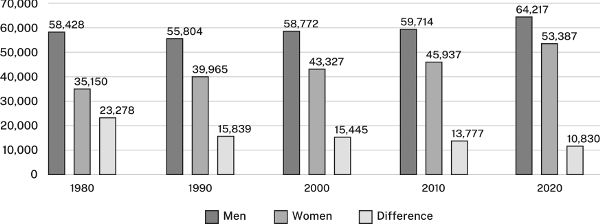
男女收入与差额的分组柱形图
图 13.1 1980—2020 年男女收入差距的变化
图示说明： 横轴为 1980、1990、2000、2010、2020 年；纵轴为收入金额，刻度从 0 到 70,000。Men 为男性，Women 为女性，Difference 为差额。每年三根柱分别显示表 13.2 的对应数值，例如 2020 年为 64,217、53,387、10,830 美元。
线图则暗示随时间连续发生的变化：
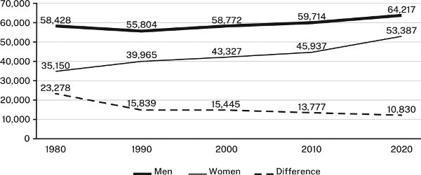
男女收入与差额的时间趋势线图
图 13.2 1980—2020 年男女收入差距的变化
图示说明： 横纵轴与图 13.1 相同；粗实线为男性收入，细实线为女性收入，虚线为差额。数值与表 13.2 完全对应，差额从 23,278 美元降至 10,830 美元。
选择能实现预期效果的形式，不要只用最先想到的一种。如果刚开始做定量研究，先限于基础表格、柱形图和线图。软件虽提供更多选项，不熟悉的先不用。
如果研究已较深入，读者会期待你使用本领域偏好的更丰富图形，可参照表 13.6。如果所在领域经常处理大型数据集中的复杂关系，撰写学位论文或文章时，可能还需探索更有创造性的呈现方式。附录提供了进一步资源。
以下介绍表格、统计图和线图的基本原则。
13.3 设计表格、统计图和线图
演示软件能生成耀眼的图形，以至于许多作者让软件替自己决定设计。这是错误的。如果不能清楚传达要点，读者不会在乎图有多花哨。有效设计应遵循以下原则。
13.3.1 给每幅图表提供必要说明
展示复杂数字关系的图表，很少会自己说话。必须给它配上说明，引导读者知道该看什么，以及它怎样与论证相关。
1. 给每幅图表加上能描述数据的标题或图注。 表的说明叫表题，放在表格上方，左对齐；图的说明叫图注，放在图下，左对齐。保持简短，但也要具体到能把每幅图表与其他图表区分开。
2. 在图表中加入帮助读者看出数据如何支持论点的信息。 例如，表格数字呈现某种趋势，且变化幅度重要，就在最后一列写明变化；线条因图中尚未说明的因素而改变，就加上文字注释。
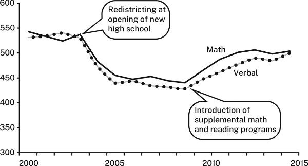
带学区调整和补充课程注释的 SAT 成绩趋势图
图 13.3 2000—2015 年中城高中的 SAT 成绩
图示说明： 纵轴为分数，范围 300—600；实线 Math 为数学，带圆点线 Verbal 为语言。约 2003 年的注释是“新高中开办时重新划分学区”；约 2009 年的注释是“引入数学和阅读补充课程”。学区调整后，阅读与数学成绩下降近 100 分；补充课程实施后，趋势转为回升。图中未逐点标出精确数值。
3. 用一句话引出图表，说明怎样解读。 再突出希望读者关注的内容，尤其是引导句提到的数字或关系。例如，下面这句话与表 13.3 的关系，需要读者仔细研究才能明白：
关于汽油消费增长的多数预测，都被证明错了。
表 13.3 1990—2020 年美国国内汽油需求量，单位：十亿加仑
项目
1990
2000
2010
2020
年消费量
113.6
131.9
137.7
127.7
这里需要更有信息量的标题，一句话解释数字怎样支持或说明主张，再用视觉提示指出应该注意什么：
汽油消费并未按预测增长。在 2000 年代和 2010 年代，消费趋于平缓，2020 年甚至下降，很可能与新冠疫情期间的隔离措施有关。
13.3.2 在内容允许的范围内，尽量简洁
有些指南鼓励尽量把更多数据塞进一幅图。但读者只想看到与论点相关的数据，不受无关内容干扰。
1. 只放相关数据。 如果仅为了留档而提供，应注明，并移到附录。
2. 让视觉呈现简单。 只有把两幅或更多图放成一组时，才加外框；不要给背景上色或加阴影。
对于表格：
不要同时用深色横线和竖线分隔行列。只有表格复杂，或需要突出行、列时，才用浅灰线。
行很多时，可每隔五行给一行加浅底色。
对于统计图和线图：
只有图形复杂，或读者需要读取精确数值时，才用背景网格线，并设为浅灰色。
用纹理或明暗表示对比，不要只靠颜色或同色深浅，因为某些视力障碍者无法分辨。尽可能使用纹理，更好的是直接标注。之后要黑白打印或复印的图，也应避免依赖颜色。
不要仅为效果而使用图标形柱子，例如用汽车图像表示汽车产量，也不要随意加三维效果。两者既显得不专业，也可能扭曲读者对数值的判断。
只有读者熟悉三维图，而且确实无法用其他方式呈现时，才用三维。
3. 标签要清楚。
表格的所有行列，以及统计图、线图的两个坐标轴，都应标明含义。
用刻度线和标签标出纵轴间隔。
尽可能直接在线条、柱段等位置标注，而不把图例放在旁边或下方。只有直接标注会使图太复杂、难读时，才用独立图例。
具体数值重要时，把数字加在柱子、分段或线上的数据点旁。
13.4 表格、柱形图和线图的具体准则
13.4.1 表格
数据很多的表格容易显得密集，需要有意组织。
按能突出重点的原则排列行列，不要自动采用字母顺序。
将数字取舍到与问题相关的精度。如果小于 1,000 的差异不重要，2,123,499 就精确过头了。
合计放在列底或行末，不要放在顶部或左边。
比较表 13.4 和 13.5：
表 13.4 2000—2015 年主要工业国家的失业状况
国家
2000
2015
变化
澳大利亚
5.2
6.1
1.0
加拿大
8.0
6.9
(1.1)
法国
9.7
10.7
1.0
德国
7.1
5.2
(1.9)
意大利
8.4
11.9
3.5
日本
5.0
3.9
(1.1)
瑞典
8.6
7.7
(0.9)
英国
7.9
6.6
(1.3)
美国
9.6
6.2
(3.4)
表 13.4 显得杂乱，项目排列也不利于理解。相比之下，表 13.5 的标题更有信息量，视觉干扰更少，并通过排序，使变化模式更容易比较。
表 13.5 2000—2015 年工业国家失业率的变化
国家
2000
2015
变化
美国
9.6
6.2
(3.4)
德国
7.1
5.2
(1.9)
英国
7.9
6.6
(1.3)
加拿大
8.0
6.9
(1.1)
日本
5.0
3.9
(1.1)
瑞典
8.6
7.7
(0.9)
澳大利亚
5.2
6.2
1.0
法国
9.7
10.7
1.0
意大利
8.4
11.9
3.5
括号表示下降，数值按底本保留。源表 13.4 的澳大利亚 2015 年数值为 6.1，与表 13.5 的 6.2 不一致；前表所列变化 1.0 也与 6.1−5.2＝0.9 不符。仅凭底本无法判定应改哪一项，故明确保留这一缺陷。Markdown 版本也无法完全复现原书用线与留白的视觉差异，但两表排序差异仍可比较。
13.4.2 柱形图
柱形图既通过具体数字，也通过视觉冲击传递信息。但柱子排列没有模式，就难以体现论点。尽可能分组、排序，让图形与要传达的信息一致。
例如，结合下面的说明句看图 13.4。图中按英文名称字母排序，无法帮助读者看出要点：
世界上的沙漠大多集中在北非和中东。
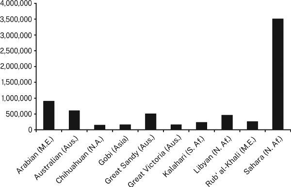
按英文名称字母顺序排列的沙漠面积柱形图
图 13.4 世界十大沙漠
图示说明： 从左到右是阿拉伯、澳大利亚、奇瓦瓦、戈壁、大沙、维多利亚、卡拉哈里、利比亚、鲁卜哈利、撒哈拉沙漠。括号中的地区缩写依次涉及中东、澳大利亚、北美、亚洲、南部非洲和北非。纵轴从 0 到 4,000,000，原图未标明单位。按字母排序，把同一地区的沙漠分散开来。
相比之下，图 13.5 的形象直接支持“世界上的沙漠大多集中在北非和中东”的主张。
在普通柱形图中，每根柱代表一个整体的 100%。但有时读者需要知道整体各部分的具体数值。可以采用两种方式：把一根柱按比例分段，形成“堆积柱”；或者每个部分各画一根柱，再按组聚合。
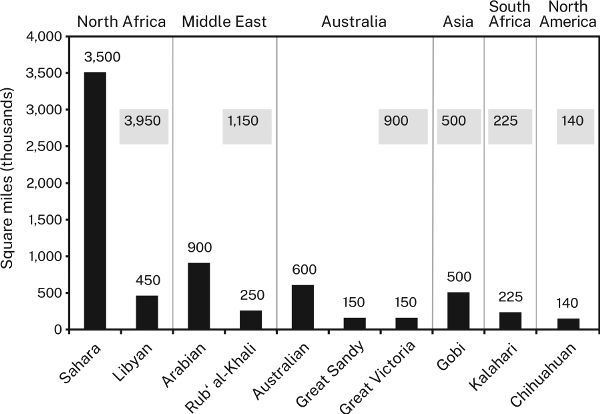
按地区分组并标注合计的沙漠面积柱形图
图 13.5 大型沙漠的世界分布
图示说明： 纵轴为千平方英里。按图中标值：北非包括撒哈拉 3,500、利比亚 450，合计 3,950；中东包括阿拉伯 900、鲁卜哈利 250，合计 1,150；澳大利亚包括澳大利亚沙漠 600、大沙 150、维多利亚 150，合计 900；亚洲的戈壁为 500；南部非洲的卡拉哈里为 225；北美的奇瓦瓦为 140。地区名称置于上方，灰色框显示地区合计。
原图 13.4 与 13.5 的大沙、戈壁两项高度并不一致，像是两者数值调换。图注据各图实际内容说明，不据此擅改原图。
仅当你希望读者比较各柱总量，而不是各分段时，才使用堆积柱，因为仅靠目测很难比较分段比例。使用时应：
按逻辑排列各段；如果可能，把最大一段放在底部，用最深颜色。
标出各段具体数值，帮助比较；用灰线连接对应分段。
比较图 13.6 和 13.7。
如果各部分与整体同样重要，因而采用分组柱形图，应：
按逻辑排列各组；尽可能让大小相近的柱子相邻，各组内部顺序保持一致。
在每组上方或底部标签下方，标出该组总量。
适合柱形图的大多数数据，也能画成饼图。饼图在杂志、小报和年报中很流行，虽然醒目，却比柱形图难读，因为读者必须比较不易判断大小的扇区比例。
不过，饼图也有用途，特别适合传递相对大小的定性印象：例如某部分远大于其他部分，或整体分成许多小部分。不要用饼图细致传递定量数据；这时用柱形图。
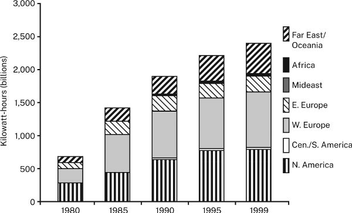
各地区核能发电量堆积柱形图
图 13.6 1980—1999 年世界核能发电量
图示说明： 横轴为 1980、1985、1990、1995、1999 年；纵轴单位为十亿千瓦时。图例自下而上为北美、中南美、西欧、东欧、中东、非洲、远东与大洋洲。不同纹理表示地区，但没有标出分段数值，各年的对应分段不易直接比较。
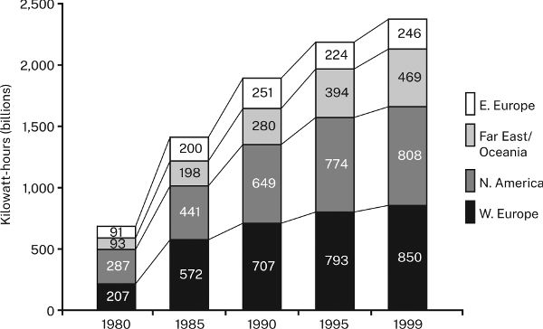
带分段数字及连接线的主要地区核能发电量图
图 13.7 1980—1999 年主要核能发电地区
图示说明： 单位同为十亿千瓦时，各段自下而上为西欧、北美、远东与大洋洲、东欧。1980 年四段依次为 207、287、93、91；1985 年为 572、441、198、200；1990 年为 707、649、280、251；1995 年为 793、774、394、224；1999 年为 850、808、469、246。图中用数字和连接线帮助比较各段。
13.4.3 线图
线图强调趋势，图像必须清楚，读者才不会误解。
选择能让线条朝支持论点的方向上升或下降的变量。如果好消息是高中辍学人数下降，可以把同一数据表现为留校人数上升，更有效地传达好消息。如果要强调坏消息，可寻找用下降线表示数据的方式。
只有无法用其他方法传达论点时，才在同一图中画超过六条线。
数据点少于大约十个时，用点标出。如果只有少数点重要，就在旁边写出精确数字。
不要像图 13.8 那样，仅靠灰度区分线条。
比较图 13.8 和 13.9。前者难读，因为灰度与背景之间区分不够，眼睛还得在线条与图例之间来回移动。后者让对应关系更清楚。
同一数据的不同呈现方式可能让人困惑，因此要尝试多种方案。先做出几种图，再请不熟悉数据的人判断哪种更清楚、更有表现力。务必用一句话引出图形，说明你希望它支持的主张。
13.5 合乎伦理地呈现数据
图表不仅要清楚、准确，也要诚实。不要为了论点而扭曲数据形象。图 13.10 的两幅柱形图，原书见第 230 页，显示完全相同的数据，却暗示不同信息。
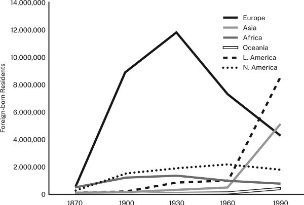
用不同灰度和外置图例呈现的外国出生居民人数线图
图 13.8 1870—1990 年美国的外国出生居民
图示说明： 横轴为 1870、1900、1930、1960、1990 年，纵轴为外国出生居民人数，上限 14,000,000。外置图例包括欧洲、亚洲、非洲、大洋洲、拉丁美洲、北美；线条用粗细、灰度、虚线和圆点区分。欧洲线在 1930 年前后达到接近 1,200 万的峰值，亚洲和拉丁美洲线后期上升。
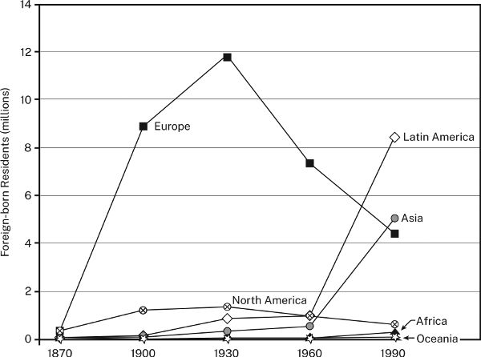
在线旁直接标注地区并使用不同数据点符号的居民人数线图
图 13.9 1870—1990 年美国的外国出生居民
图示说明： 纵轴改以“百万人”为单位，范围 0—14；地区名称直接写在线条附近，并使用方形、菱形、圆形、三角形等点符号。欧洲、亚洲、拉丁美洲、北美、非洲、大洋洲的对应关系因此更易识别。
源文把两图作为同一数据的不同设计来比较，但至少北美系列的数值在两幅原图中明显不一致。译文保留图片，并提示这一底本差异，不把两图称为逐点完全一致的数据。
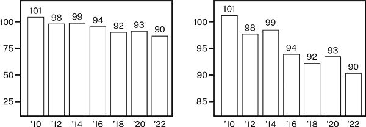
同一污染指数使用完整与截断纵轴的比较图
图 13.10 2010—2022 年首府城污染指数
图示说明： 2010、2012、2014、2016、2018、2020、2022 年的指数依次为 101、98、99、94、92、93、90。两图数字完全相同；左图纵轴从 0 起，右图从约 80 起，因而右图让下降显得更陡。
左图采用约 0—100 的量尺，下降较平缓，看起来污染减少不多。右图纵轴不从 0 开始，而从 80 开始；这样的截断会制造更陡的视觉落差，夸大小差异。
线图还可能暗示虚假的相关性。有人也许主张，工会会员比例下降时，失业率也随之下降，并以图 13.11 为证。图中两者确实似乎同步变化得十分紧密，让读者可能推断存在因果关系：
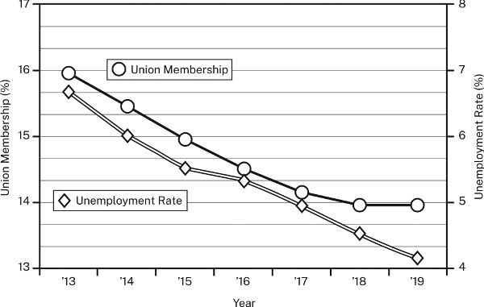
采用不同左右轴量尺的工会会员比例与失业率线图
图 13.11 2013—2019 年工会会员比例与失业率
图示说明： 横轴为 2013—2019 年；圆点线为工会会员比例，读左轴，范围 13%—17%；菱形线为失业率，读右轴，范围 4%—8%。图中工会会员比例约从 15.9% 降至 13.9%，失业率约从 6.7% 降至 4.1%。两轴起点不同，不能凭线条贴近就判定因果关系。
左轴的量尺与右轴不同，使两条趋势看起来可能存在因果关系。它们也许确有关联，但这种扭曲的图像证明不了这一点。
图形还可能让读者误判数值。图 13.12 的两幅图展示完全相同的数据，却似乎表达不同信息：
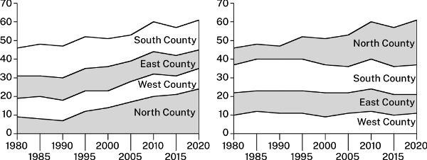
同一组大学生来源数据采用不同堆积顺序的面积图
图 13.12 1980—2020 年周边各县学生占州立大学本科生的比例，单位：%
图示说明： 横轴为 1980—2020 年，纵轴为总人数百分比，范围 0—70。左图自下而上为北县、西县、东县、南县；右图自下而上为西县、东县、南县、北县。北县色带明显变宽，其他三县带宽大体稳定。分段数值应看相邻边界间的宽度，不应只看边界线是否上升。
两幅都是堆积面积图。数值变化由线条之间的面积表示，不是由线条倾角表示。两图中，南、东、西三县色带大体同宽，说明各自数值变化不大；北县色带却显著加宽，表示大幅增长。
左图把另外三条色带堆在增长的北县之上，读者容易误以为它们也增长了。右图把三者放在底部，它们便不再整体上抬，只有北县的色带增长。
避免视觉误导，应遵守四条准则：
不要操纵量尺，夸大或缩小对比。
不要使用视觉形象会扭曲数值的图形。
不要把图表弄得不必要地复杂，也不要简化到造成误导。
如果图表支持某个论点，就明确说出。
表 13.6 常见图表形式及其用途
以下保留原表图片，并在其后完整列出中文内容。“个案”指接受比较的对象，“变量”指测量的属性。
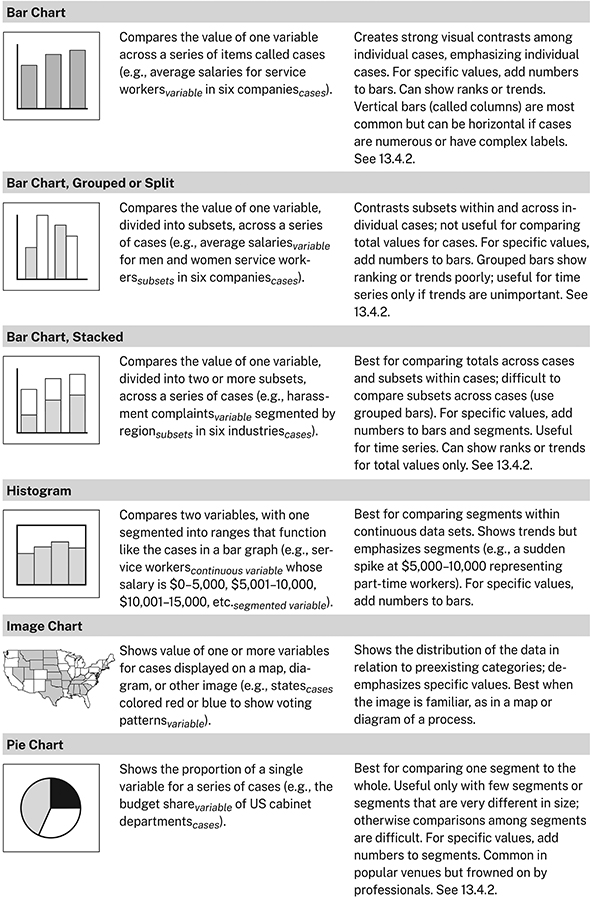
常见图表形式及用途，第一部分
图表形式
数据特征
表达用途
柱形图
比较一组个案中同一变量的值。例如，六家公司是个案，服务业员工的平均工资是变量。
在各个案之间形成鲜明对比，强调个别个案。需要精确数值时，在柱上加数字；也可显示排名或趋势。竖柱最常见，但个案很多或标签复杂时，可改用横条。参见 13.4.2。
分组或分列柱形图
将一个变量分为若干子组，再跨个案比较。例如，六家公司中，男女服务业员工各自的平均工资；性别是子组，公司是个案。
对比同一个案内及不同个案间的子组；不利于比较个案总量。精确数值可加在柱上。较难表现排名或趋势；只有不强调趋势时，才适合时间序列。参见 13.4.2。
堆积柱形图
将一个变量分为两个或更多子组，再跨个案比较。例如，六个行业中，按地区划分的骚扰投诉数量；地区为子组，行业为个案。
最适合比较各个案总量，以及某个案内部的子组；难以跨个案比较子组，后者宜用分组柱。可在整柱与分段上加数值；适用于时间序列，只能就总量清楚展示排名或趋势。参见 13.4.2。
直方图
比较两个变量，其中一个分成区间，作用类似柱形图中的个案。例如，按工资 0—5,000、5,001—10,000、10,001—15,000 美元等区间，呈现服务业员工的分布。
最适合比较连续数据集内部的区间。可显示趋势，但更强调分段，例如 5,000—10,000 美元处突然升高，代表兼职员工群体。精确数值可加在柱上。
图像统计图
在地图、示意图或其他图像上，显示各个案的一个或多个变量。例如，以各州为个案，用红蓝着色显示投票模式这一变量。
显示数据相对于既有类别的分布，不强调精确数值。使用地图或流程图等熟悉图像时效果最好。
饼图
显示一个变量在一组个案中的占比。例如，各美国内阁部门为个案，预算份额为变量。
最适合比较一个部分与整体。只有分段较少，或大小差异很大时有用，否则很难比较。可给各段加数字。在大众媒体中常见，但专业人士往往不偏好它。参见 13.4.2。
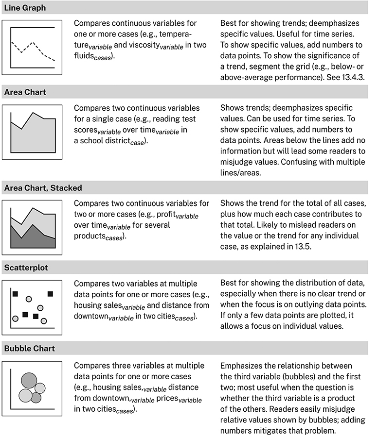
常见图表形式及用途，第二部分
图表形式
数据特征
表达用途
线图
比较一个或多个个案的连续变量。例如，两种液体为个案，温度和黏度为变量。
最适合展示趋势，不强调具体数值，适用于时间序列。可在数据点旁加数字。若要说明趋势意义，可对网格区域分段，例如区分高于或低于平均水平。参见 13.4.3。
面积图
比较单一个案中的两个连续变量。例如，一个学区为个案，阅读测验成绩与时间为变量。
展示趋势而非精确数值，可用于时间序列，也可给数据点加数字。线下的填充面积并不增加信息，却会使一些读者误判数值；有多条线或多个面积时尤其容易混乱。
堆积面积图
比较两个或更多个案中的两个连续变量。例如，多种产品为个案，利润与时间为变量。
展示各个案总量的趋势，以及每个个案对总量的贡献。容易使读者误判单个个案的数值或趋势，参见 13.5。
散点图
在多个数据点上比较一个或多个个案的两个变量。例如，两座城市为个案，房屋销售量与距市中心距离为变量。
最适合展示数据分布，尤其在没有清楚趋势，或重点是离群点时。如果点很少，也可突出单个数值。
气泡图
在多个数据点上比较一个或多个个案的三个变量。例如，两座城市为个案，房屋销售量、距市中心距离、价格为三个变量。
强调第三个变量，也就是气泡大小，与前两个变量的关系；尤其适合考察第三变量是否由前两者产生。读者容易误判气泡表示的相对大小，补上数字有助于减轻问题。
实用提示：寻找加入视觉证据的机会
各领域论文和演讲越来越多地采用“多模态”表达，也就是同时包含视觉与语言信息。这在自然科学和许多社会科学中早已常见，也逐渐被传统上不使用图像的领域接受。
因此，新研究者比以往更需要学习：何时、怎样用图形而非仅靠文字呈现数据或信息。即使文章不一定需要视觉证据，加入它也可能更好。多种证据形式相互配合，能让受众更容易理解并信服论证。所以，应主动寻找数据可视化的机会。
观察本领域资料怎样使用视觉证据。 不仅看哪些数据或信息被呈现，也看采用什么形式。向有经验的研究者请教。 了解专家怎样选择，会帮助自己作出更好的选择。决定在论文中至少使用一幅图表。 仅这个决定，就会让你主动思考怎样把视觉证据用于论证。请教师布置允许使用视觉证据的作业。 多数教师乐见学生尝试在优秀资料中看到并欣赏的写法。即使作业没有明确要求图表，也不必羞于提出使用它们的请求。
返回书首 ↑ 029 / 037
第 14 章 引言与结论
好的引言能激发读者的兴趣，让他们愿意读下去，也为理解正文做好准备。好的结论则能让读者清楚把握你的中心观点，并进一步体会其意义。本章介绍这两部分的写法。花在引言与结论上的时间，可能是你投入得最值得的时间。
当你觉得初稿已经基本成形，就可以着手完成引言与结论。有些作者以为，这不过是照着常见建议来做：用俏皮、新奇的开场抓住注意力。这条建议并非毫无用处，但读者想要的远不止这些。第一部分介绍了怎样围绕研究课题开展研究；这里则说明，怎样用这个课题吸引读者。醒目的开头可能让读者眼前一亮，但真正能留住他们的，是一个他们认为需要解决的问题，以及你已经找到答案的承诺。正如我们说过的，读者说“我不同意”时，你总还有办法与他对话；他若耸耸肩说“我不在乎”，你就很难再做什么了。
14.1 引言的共同结构
不同研究共同体的做法各不相同。各自的引言在表面上可能很不一样，深层结构却相通。下面是文化批评、计算机设计和法律史领域的三个缩略例子。
（1）文化批评
机器为什么不能更像人？在《星际迷航：下一代》的几乎每一集中，机器人戴塔都在追问：究竟是什么使人成为人？在最初的《星际迷航》中，半瓦肯人斯波克也引出了类似问题；他那机械般的逻辑与情感的缺失，使他作为“人”的资格受到质疑。事实上，戴塔和斯波克不过是探索人性本质的众多“准人”中的两个。从弗兰肯斯坦的怪物到终结者，各种角色都曾提出或引发同样的问题。但真正值得问的是：这些努力成为人的角色，为什么几乎总是白人男性？作为文化的阐释者，他们是否在不知不觉中强化了关于何谓“正常”的有害刻板印象？看来，“标准的人”实际上是由西方标准界定的，而这些标准把世界上大多数人排除在外。
（2）计算机设计
作为持续质量改进计划（CQI）的一部分，Motodyne 计算机公司计划重新设计 Unidyne™ 在线帮助系统的用户界面。界面规范要求使用含义一目了然的图标，让用户无需文字标签就能识别其功能。现有图标已使用三年，公司却没有数据说明哪些图标确实一看就懂。没有这类数据，就无法确定哪些图标需要重做。本报告提供了十一个图标的数据，表明其中五个不具备这样的直观性。
（3）法律史
如果生活在今天，约翰·安德烈少校还会被绞死吗？1780 年，这位身穿便服的英国间谍在美军防线后被俘。尽管被视为高尚的爱国者，他仍受到了军事法律规定的惩罚。时移世易，我们的传统已经改变，对间谍罪的惩罚却没有变：这是唯一强制判处死刑的罪行。然而，最高法院近来否定了非军事案件中的强制死刑，由此使相关裁决如何适用于军事案件变得不明确。如果最高法院的裁决也适用于军队，国会是否必须修订《统一军事司法法典》？本文认为，答案是肯定的。
这三个引言的主题与问题，像它们面向的读者一样，各不相同。但无论什么领域，读者都会期待引言背后的共同模式。它包括三个要素：
并非每篇引言三者俱全，但大多数都有。上面三例的“背景＋问题＋回应”结构如下。
例（1）
背景： 机器为什么不能更像人？……从弗兰肯斯坦的怪物到终结者，各种角色都曾提出或引发同样的问题。问题： 但真正值得问的是……他们是否在不知不觉中强化了关于何谓“正常”的有害刻板印象？回应： 看来，“标准的人”实际上是由西方标准界定的，而这些标准把世界上大多数人排除在外。
例（2）
背景： 作为持续质量改进计划的一部分，Motodyne 计算机公司计划重新设计用户界面……现有图标已使用三年……问题： ……公司却没有数据说明哪些图标确实一看就懂。没有这类数据，就无法确定哪些图标需要重做。回应： 本报告提供了十一个图标的数据，表明其中五个不具备这样的直观性。
例（3）
背景： 如果生活在今天，约翰·安德烈少校还会因间谍罪被绞死吗？……这是唯一强制判处死刑的罪行。问题： 然而，最高法院近来否定了非军事案件中的强制死刑，由此使相关裁决如何适用于军事案件变得不明确……国会是否必须修订《统一军事司法法典》？回应： 本文认为，答案是肯定的。
这些要素各有作用，既促使读者读下去，也帮助他们理解论文。
14.2 第一步：交代背景
想想童话的开头：
一个阳光明媚的早晨，小红帽蹦蹦跳跳地穿过森林，去外婆家。〔稳定背景〕
此时不妨想象：长笛与小提琴奏响，蝴蝶在她头顶翩翩飞舞。
和多数童话一样，这个开头先营造一个稳定、甚至愉快的背景，正是为了随后用一个问题打破它：
……突然，一只饥饿的大灰狼从树后跳了出来〔打破稳定的情形；此时想象长号与大号响起〕，吓坏了她〔代价；如果小读者已沉浸在故事中，他们也会被吓到〕。
故事接下来展开这个问题，最后解决它。
多数引言使用同样的策略。作者先提供一个稳定背景，陈述某些看上去没有疑问、已经为人所知或接受的认识，让自己和读者对即将讨论的较大议题形成共同基础。然后，作者用问题打破这一稳定状态，实际上是在说：“读者，你也许以为自己懂了，但你的认识还不够准确或完整。”
例（3）的稳定背景： 如果生活在今天，英国间谍约翰·安德烈少校……还会被绞死吗？……间谍罪是唯一强制判处死刑的罪行。
打破稳定的问题： 然而，最高法院近来否定了强制死刑……
如果确信读者已经承认某事构成问题，作者有时会跳过背景。这通常发生在某个研究共同体早已熟悉该问题的时候。下面的引言就开门见山：
最新科学模型预测，远在本世纪结束之前，海平面上升就将威胁世界各地的沿海城市。
不过，读者通常需要一些背景才能理解问题为何重要。因此，作者先介绍公认认识或前人研究所形成的、看似没有问题的背景，再专门打破它：
他汀类药物能有效降低胆固醇，副作用似乎也较轻，因此长期以来被用作预防心血管疾病和脑卒中的常规用药。〔稳定背景〕然而，2010 年代的几项研究表明，他汀类药物可能增加认知障碍和痴呆的风险〔打破稳定的情形〕，使医学界对广泛使用这类药物产生了一定疑虑。〔后果〕
此时，读者有了两个关注问题的理由：不仅是问题本身，也包括他们对整件事的理解尚不完整。
背景可以描述一种误解：
人们普遍认为，十字军东征源于宗教热忱，目的是让圣地重归基督教世界。〔稳定背景〕事实上，其动机即使不主要是政治性的，也至少有一部分出于政治考虑。
也可以回顾已经过时的认识或研究：
在社会学概念中，很少有什么像“宗教信仰能够防止自杀”这一观点那样迅速失宠。它曾是社会学的基本信念之一，却遭到近来一系列研究的质疑……〔稳定背景〕然而，某些研究仍然发现，宗教具有影响……
还可以指出人们对问题本身的误解：
美国教育一直重视教孩子批判性思考，学会提问并检验答案。〔稳定背景〕然而，批判性思维领域却已被时髦风潮和特殊利益所占据。
有些初学者交代背景过于简略，论文开头仿佛只是接续课堂上尚未结束的讨论，只有同班同学才能看懂：
考虑到霍夫施塔特未能尊重数学、音乐与艺术之间的差别，《具身心智》引发激烈反响并不令人意外。较不清楚的是，究竟什么导致了这场争论。我将论证，对人类心智的任何解释都必须跨越学科……
起草引言时，要想象自己的读者读过一部分相同资料，也大体关心相同问题，却不知道你们课堂上具体发生了什么。
另一些人则走向相反的极端，以为凡是读过、稍微涉及主题的资料，都应列出来。只需回顾那些你将直接修正其研究发现的资料。只有在确有必要把问题放进更宽广的背景时，才增加其他内容。
14.3 第二步：提出研究课题
交代了稳定背景以后，就用一个问题打破它，参见第二章。我们说过，研究课题的陈述包括两部分：
知识或理解尚不完整的状况 。
这种状况造成的后果 ，即更为重要的认识缺口。
你可以直接说出这一状况：
……但 Motodyne 没有数据说明哪些图标的含义一目了然。
也可以通过间接问句暗示它：
真正的问题是，这些角色为什么几乎总是白人男性。
只有先设想有人问“那又怎样？”，再通过说明后果来作答，这种无知或认识有误的状况，才构成完整的研究课题。后果可以写成直接的代价：
没有这类数据，就无法确定哪些图标需要重做。〔代价〕
也可以把代价转成收益：
有了这类数据，我们就能确定哪些图标需要重做。〔收益〕
选择说代价还是收益，不只是文风问题。比起潜在收益，现实中的代价通常更能激发读者的动力。我们的建议是：提出问题时说明代价或后果；介绍解决方案时说明收益，以凸显方案的价值。
这是陈述研究课题的常用方式，但还有其他选择。
14.3.1 是否必须明确说明问题的具体状况？
偶尔，你处理的问题极为熟悉，仅仅说出名称，领域内的人就会想到其中的状况与后果，例如“DNA 在人格形成中的作用”或“莎士比亚掌握的语言”。同样，在数学、自然科学等领域，许多研究课题广为人知，只说明问题状况，就足以让人想到后果。再看克里克与沃森论述 DNA 双螺旋结构的里程碑式论文，其引言缩略如下：
我们希望为脱氧核糖核酸盐（DNA）提出一种结构。该结构具有若干新颖特征，在生物学上有重要意义。鲍林和科里此前已提出一种核酸结构，并慷慨地在发表前向我们提供了手稿。他们的模型包含三条相互缠绕的链，磷酸基靠近纤维轴，碱基位于外侧。我们认为，这个结构不能令人满意……
他们只需说要为 DNA“提出”一种结构，就已经足够，因为他们知道人人都想知道答案。不过请注意，他们确实通过提及鲍林和科里的错误模型，提出了一个问题。
在自然科学及多数社会科学领域，研究者通常处理读者熟悉的问题，因此你可能认为无需把课题说得很明白。但是，如果你不告诉读者，他们就不知道你的研究具体要填补哪个知识缺口。
在人文学科及部分社会科学领域，研究者更常提出只有自己发现、甚至自己构想出来的问题，读者会觉得新鲜，往往也会惊讶。在这些领域，你必须明确说明，自己打算纠正哪种不准确或不完整的认识。
14.3.2 是否必须说明后果与收益？
要让读者认真看待你的课题，就得让他们认识到：问题不解决，他们会付出什么代价；解决以后，又会得到什么收益。如果这些代价与收益不仅对你、对读者也显而易见，可以省略。否则，就要明确说明。拿不准时，宁可写出来。
有时，你可以描述研究将帮助读者避免的实际代价：
去年，河城市议员一致认为，应把海湾开发区纳入本市税基。然而，这一计划几乎没有经济分析作为依据。如果议会尚未弄清并入该地区会给城市带来多少成本，就投票通过方案，河城本已不稳的财政状况就可能进一步恶化。一旦把供水排污设施升级至本市标准的负担计入分析，并入的成本将高于议会目前的估计。
这就是介绍应用研究课题的方式：认识不足——缺乏经济分析——会造成实际后果，即成本增加。而介绍基础研究课题时，你应把后果表述为理解上的缺失，而不是金钱等实际损失；也可以反过来说明，加深理解可能带来的收益：
几十年来，美国许多城市通过并入高档住宅区来扩大税基，实际经济收益却常令人失望。但只要做过基本经济分析，这些结果本可预见。城市并入周边地区的行动，提供了一个研究地方政治决策为何未能利用专业信息的案例。令人困惑的是，城市为什么不寻求这种专业知识。如果能弄清它们为什么不依赖基本经济分析，就可能更好地理解，它们在其他领域的决策为什么也常失败。本文分析三个城市的决策过程；它们都在没有考虑经济后果的情况下，并入了周边地区。
14.3.3 检验问题状况与后果
第二章介绍过一种检验方法，看看你是否清楚说明了不解决问题的后果：在最能概括读者无知或误解状况的句子后面，问一句“那又怎样？”
Motodyne 没有数据说明哪些图标的含义一目了然。〔那又怎样？〕没有这类数据，就无法确定哪些图标需要重做。
20 世纪 80 年代及其后，人们重新关注二战时期的“铆钉女工罗茜”。这表明，一个标志性形象可以服务于新的政治与文化目的，而事后回看，我们也承认这些目的具有排他性。
〔那又怎样？〕嗯……
回答“那又怎样？”可能让人烦恼。如果只是喜欢罗茜的形象，你尽可以自行探索，无须向谁交代。但如果希望别人把这种兴趣认真看作研究，就必须让他们相信其意义。
要说服受众在意，你必须说明：你的问题也是他们的问题，只是他们可能还没意识到。你需要使他们相信，了解这个二战形象如何在 20 世纪 80 年代被重新塑造成女性主义偶像，又如何在本世纪被认识为专门象征白人女性赋权的形象，将帮助他们理解更重要的事情：文化身份怎样形成与改变，以及我们自己的理解怎样带有片面性。
当然，有些受众仍会问：“那又怎样？我对文化身份没兴趣。”对此，你只能说：“找错受众了。”成功的研究者不但懂得发现并解决有趣的问题，也懂得找到，或培养出，对这些问题感兴趣的受众。
如果确信受众知道问题的后果，你可以选择不明说。克里克与沃森没有具体解释不知道 DNA 结构的代价，因为他们知道，受众已经明白：不了解 DNA 结构，就无法理解遗传学这一更重要的领域。若把这一后果展开讲，反而可能显得多余，或像在居高临下地教训人。
如果这是你的第一个研究项目，合理的教师不会要求你详细说明课题对整个领域有何影响。但只要能说清楚这一问题对自己有什么后果，就已迈出重要一步。如果还能说明，理解一件事能够帮助你理解另一件重要得多的事，即使这份重要性目前只属于你自己，也就又向前跨了一大步。
14.4 第三步：给出回应
当你用问题打破读者原有的稳定认识后，他们会期待你以两种方式之一解决它：直接陈述中心观点，或承诺稍后给出。读者通常会在引言结尾寻找这一陈述或承诺。
14.4.1 概括解决方案的核心
你可以在引言接近结尾处，明确说出中心观点，也就是解决方案：
他汀类药物能有效降低胆固醇，副作用似乎也较轻，因此长期以来被用作预防心血管疾病和脑卒中的常规用药。〔稳定背景〕然而，2010 年代的几项研究表明，他汀类药物可能增加认知障碍和痴呆的风险〔打破稳定的情形〕，使医学界对广泛使用这类药物产生了一定疑虑。〔后果〕我们对三十六项以上较新研究进行的荟萃分析表明，这种担忧不仅缺乏依据，而且他汀类药物实际上可能对老年人的认知衰退具有一定抑制作用。〔解决方案的核心／中心观点〕
除非有充分理由，否则采用这种结构通常最合适。
有些新手担心，过早透露中心观点，甚至交代论证的安排，会让读者“无聊”，不再往下读。另一些人则担心重复。这两种顾虑都没有根据。采用这种结构，就是把主动权交给读者，告诉他们：“怎样读这篇论文，由你决定。你知道我要解决什么问题，也知道我的答案与观点，可以决定如何继续，甚至是否继续。不藏惊喜。”如果拖到结论才说出中心观点，就等于要求读者相信：跟着论文一路曲折走到底，最终一定值得。许多人不会这样相信你。
对演讲听众而言，一开始就知道中心观点更有价值，因为他们手边没有全文，参见 16.3.2。读者迷失时可以回看，听众却做不到。
14.4.2 承诺稍后给出答案
不过，也可能有理由不在开头亮出中心观点。例如，有些学科和职业领域的读者，习惯在章节或全文末尾看到主张；若违背期待，反而会使他们困惑。中心观点也可能过于复杂，开头很难简明概括，虽然我们觉得如此时，往往是判断错了。遇到这类情况，可以说明论文将怎样展开、走向哪里，并承诺或暗示，会在结论中给出中心观点或解决方案：
2010 年代的几项研究表明，他汀类药物可能增加认知障碍和痴呆的风险。〔那又怎样？〕因此，医学界对广泛使用这类药物产生了疑虑。〔那么，你发现了什么？〕本报告分析三十六项以上较新的研究，考察他汀类药物的疗效与副作用，特别关注认知方面的影响。随后，我们讨论……〔承诺后文给出观点〕
与某些摘要类似，参见第十一章“实用提示”，这类引言提供了一个把读者带入正文的“起点”。作为起点的句子应包含贯穿全文的关键概念，让读者提前注意。最无力的承诺，只是宣布一个含糊的主题：
本研究考察他汀类药物的副作用。
还是那句话：把观点留到全文结尾，就等于要求读者相信，走到那里值得付出努力。如果不只交代一般主题，还勾勒解决方案、论证或两者的轮廓，他们会更愿意相信你：
水电涡轮机进水口及分流拦鱼栅的设计很多，但到现场评估各种可能配置，成本效益不高。计算机建模是更可行的替代方案。本研究将评估用于分析进水口与拦鱼栅配置的三种计算机模型——Quattro、AVOC 和 Turbo-plex——比较其可靠性、速度和易用程度。
这类安排常见于自然科学和社会科学，在人文学科中则较少；有些人文学者会觉得它交代得过于直白。
14.5 把握合适的节奏
写引言时，必须决定多快切入问题。这取决于读者已经知道多少。不同领域的引言节奏不同。若共同体已经熟悉问题，可以迅速进入主题；如果问题尚未广为认识，就得慢慢铺垫。
开篇节奏还传递着另一层信息：开得快，意味着把读者视为同行；开得慢，则暗示读者知道得比你少。下例只用一句话交代专业工程师的共识，随后迅速指出不足：
挤压油膜阻尼器（SFD）的油膜力通常根据经典润滑理论中的雷诺方程求得。然而，旋转机械的尺寸不断增大，要求在阻尼器设计中计入流体惯性效应。否则……
我们完全不知道这些话具体是什么意思，但“背景＋问题”的结构十分清楚。
下一位作者也在讨论技术概念，却为专业知识较少的读者耐心铺陈：
在水电开发中，保护洄游鱼类的一种办法，是在涡轮机进水口设置拦鱼栅，使鱼类改道……〔随后再用约 110 个词解释拦鱼栅。〕由于拦鱼栅的效率取决于鱼类行为与水流之间的相互作用，因此可以通过测定水力性能来评估其设计……〔再用约 40 个词解释水力学。〕本研究加深了对这一技术水力特征的理解，可为今后的设计提供指导。
节奏一定要合适。读者很懂行，开头却慢吞吞，他们可能觉得你知道得太少；读者所知有限，开头却推进太快，他们可能觉得你不体谅人。
14.6 找到最初的几句话
许多作者觉得头一两句格外难写，结果落入套话：
重复作业要求。 实在写不下去时，可以先改述要求来启动写作，但修改时应把这些句子重写。引用词典释义： “《韦氏词典》将伦理定义为……”如果一个词重要到值得专门界定，普通词典定义就不足以胜任。对历史或社会作过于宽泛的断言： “纵观历史／在当今社会，女性……”摆出宏大架势： “几百年来，最深刻的哲学家始终在思索这个重要问题……”如果题目真的重要，内容本身会证明。
这些失误出于好意：作者想与某个研究共同体建立共同基础。问题在于，他们找错了共同体。第一种太窄，只有学生自己的老师；其余几种又太宽，试图寻找全人类都能同意的背景。要避免这些问题，就应采用能够吸引你真正希望对话的那个具体研究共同体的开头。
下面提供三种写法。
14.6.1 从值得注意的事实入手
认为给富人减税能够刺激经济的人，应当认真想想这个事实：最富有的 1% 美国人，掌握着全国三分之一的财富。
14.6.2 从引人注目的引文入手
只有引文的措辞能够呼应后文引言中的关键词时，才这样做：
“扬·凡·艾克真迹所呈现的纯粹感官之美，散发着一种奇异魅力，仿佛我们任由宝石施展催眠般的吸引力时所体验到的那样。”潘诺夫斯基在此暗示，凡·艾克的作品具有一种奇异的魔力。他笔下的图像如珠宝般令人着迷……
14.6.3 从相关轶事入手
下面的文章以一次政治抗议事件开篇：
1989 年 10 月，数千名德意志民主共和国公民在莱比锡举行抗议，要求进行经济与政治改革。对研究威权政治的学者来说，公民抗议、要求改善经济状况，是熟悉的景象……然而，莱比锡抗议者还举着一些标语，其中的信息在威权政治研究文献中却不常见。他们要“锯倒贪腐掌权者，而不是树木”，要求“莱比锡的空气，不要硫磺臭味”（转引自 Bölsche 等，1989，92）。这些口号表达了对环境污染的不满。
这则轶事把经济与环境关切出人意料地并置，为文章的问题提供了框架：威权政体怎样权衡经济增长及其伴随的污染加剧？前者是它们压制政治不满的手段，后者却会激起政治不满。
14.7 撰写结论
即使论文没有名为“结论”的专节，也总会有一两段起到这个作用。结论可以概括论证；同样重要的是，它让你有机会提出研究过程中看见的新问题，把讨论延续下去。一种写法是，采用引言中的相同要素，但颠倒顺序。
14.7.1 先说中心观点
在结论开头附近说出中心观点。如果引言已经说过，这里就再说一次，但应展开得更充分，不要逐字照搬。
14.7.2 提出新的意义或应用
说完观点，再说明其重要性，最好为“那又怎样？”提供一个新答案。例如，下面的结论补充了最高法院军事死刑裁决的另一项后果：
根据最高法院近来否定强制死刑的裁决，对叛国罪强制判处死刑显然违宪，因此国会必须修改相关规定。不过，更重要的是，如果修改《统一军事司法法典》，就会挑战军事文化的一项根本价值：最严重的背叛必须承受最严厉的惩罚。届时，国会必须处理军队对于何为正义的理解。
这个观察适合放在结论，而不是引言，因为它引出的是本文尚未处理的问题：军队究竟会怎样回应这一价值挑战？国会又该如何回应军方？引言中，你通过说明后果来确立课题的重要性；结论中，同样可以通过指出进一步影响，扩大解决方案的意义。
14.7.3 呼吁进一步研究
正如开头回顾已有研究，结论也可以提出尚待开展的研究：
新手与专家在诊断方式上的这些差异，体现了他们的成熟与发展。不过，虽然我们知道两者思考方式不同，却还不清楚，新手社会经历中的哪些因素促使他们学会像专家那样思考。我们需要纵向研究，考察指导和辅导如何影响结果，以及主动解释与批评是否能帮助新手更快成为熟练的诊断者。
说明还有什么需要做，就能让对话继续。因此，落下最后几笔前，不妨想象一个被你的研究吸引、希望继续探索的人：他还想知道什么？你会建议他开展什么研究？毕竟，你自己的课题，也可能正是这样找到的。
实用提示：在标题中使用关键词
读者最先读到的、你却应该最后才写的，就是标题。写作新手往往随手加上几个词，点出论文主题，这样做并不好。有效的标题，应帮助读者具体预见后文。比较以下三个标题：
小额信贷
小额信贷与经济发展
作为经济发展策略的小额信贷：发挥其改善女性地位的潜力
把贯穿全文的关键词写进标题，参见 10.2.2 与 11.4。这样，当读者在正文遇到这些词时，就会觉得文章符合预期。双段式标题可以容纳更多关键词：主标题后加冒号，引出更具体的第二部分，即副标题。这条建议也适用于各节标题。
返回书首 ↑ 030 / 037
第 15 章 修改文风：把你的故事讲清楚
前面各章着重讨论论文的论证与组织。本章则介绍怎样修改句子，让读者觉得清楚、直接。
读者只有理解论证，才可能接受你的主张；但如果句子看不懂，论证也无从理解。修改时，处理完论证和结构，还应留出时间最后通读一遍，在不牺牲思想复杂性的前提下，让句子尽可能易读。不过有个难题：只凭通读，你大概看不出哪些句子需要改。因为早已知道自己想表达什么，你会把希望读者领会的意思，自动读进句子里。要让句子对读者和对自己一样清楚，就需要一种方法：即使你觉得句子没问题，也能识别其中的阅读障碍。
15.1 判断文风
如果要读一篇文章，下面三种写法，你会选哪一种？
1a
Conventional management practice assumes that interaction and collaboration enhance organizational performance by improving employee creativity and productivity. But unless collaboration is punctuated by isolation, and unless workspace configurations provide isolation opportunities, erosion rather than enhancement of organizational effectiveness may result.
译意：传统管理实践认为，互动与协作通过提高员工创造力和生产率来提升组织绩效。然而，除非协作过程中穿插独处，且工作空间配置提供独处机会，否则结果可能是组织效能的削弱，而非增强。
1b
Managers want the people who work for them to interact and collaborate. They assume that when people do this, they become more creative and productive. The organization then performs better. But people also need opportunities to work alone, and workplaces need to provide these opportunities. Otherwise, the organization may become less effective.
译意：管理者希望员工互动、协作。他们认为，人们这样做时，创造力和生产率会提高。组织的表现也就更好。但人们也需要独自工作的机会，工作场所应提供这些机会。否则，组织效能可能下降。
1c
Managers conventionally assume that when employees interact and collaborate, they become more creative and productive, thus leading the whole organization to perform better. But unless employees also have opportunities to work alone, and unless workspaces are configured to provide them, the organization may become less rather than more effective.
译意：管理者通常认为，员工互动与协作时，会更有创造力，生产率也更高，从而带动整个组织取得更好表现。但员工还必须有独自工作的机会，工作空间也必须作出相应安排，否则组织效能可能不升反降。
很少有读者选 1a：它显得晦涩、抽象、难懂。有些人会选 1b，但很多人觉得它过于浅白。多数人选择 1c，读起来像同事之间的正常交流。学术写作最严重的问题之一，就是太多研究者写成了 1a 那样。
少数研究者偏好 1a，认为深刻的思想就需要厚重的文字；如果把复杂观念讲得清楚易懂，细微差别与思想的复杂性就会被牺牲。读者不懂，那只能让他们自己多下功夫。
也许有时如此。艰涩文字偶尔确实反映了天才作品难以化约的复杂性，但更常见的原因，是作者思路模糊，又不考虑读者。有些人为了避免晦涩，会走得太远，写成 1b 那样简单化的句子。但我们假定，多数读者并没有这个问题。这里要处理的是过分“学术化”的文风，也就是把本来可以说清楚的内容，写得过于难懂。优秀作者不会把曲折晦涩、拐弯抹角当作目标。
刚开始深入研究的人尤其容易遇到这个问题，因为他们承受着双重困难。写作对象是新接触的复杂观念，已超出自己原来的理解范围，表达自然不如平常清楚；如果又误以为复杂文风象征地位与专业水平，刻意模仿所读资料里纠缠难解的句子，就会雪上加霜。后一种情况，我们可以避免。
15.2 清晰表达的前两条原则
15.2.1 区分阅读感受与造成感受的原因
如果请你解释为什么选 1c 而不选 1a，你大概会说：1a 模糊、啰唆、晦涩，1c 清楚、简练、直接。但严格说，这些词描述的不是句子本身，而是阅读感受。说 1a 晦涩，实际是说读它很费劲；说 1c 清楚，实际是说它容易理解。这种印象式评价，并不能帮助你修改 1a，因为它没有说明：纸面或屏幕上的哪些具体表达，造成了这种感受。你需要一种分析句子的方法，把“令人困惑”的印象，与句子里实际造成困惑的部分联系起来。更重要的是，你得知道，怎样修改那些自己觉得清楚、读者却会迷惑的句子。
有几条文风原则，可以说明 1a 的晦涩与 1c 的成熟清晰之间的区别。它们只聚焦句子的两个位置：开头六七个词，与末尾五六个词。这两处安排妥当，其余部分通常也就顺了。但使用这些原则前，需要理解五个语法术语：简单主语、完整主语、动词、名词和分句。若已很久不用，不妨先复习，再往下读。
特别提醒：写新句子时，不要一边写，一边硬套这些原则，否则可能束手束脚。应当用它们来指导修改已经写出的句子。
15.2.2 第一条原则：让故事中的角色作主语
第一条原则可能使你想起小学学过的话：每个句子都有主语和动词。当时老师大概说，主语就是动作的“执行者”。但这不总是对的，主语可以是执行者以外的东西，甚至可以是动作本身。比较下面两句，粗体标出各分句的完整主语：
2a
Locke frequently repeated himself because he did not trust the power of words to name things accurately.
译意：洛克经常重复自己的话，因为他不相信词语能够准确地命名事物。
2b
The reason for Locke’s frequent repetition lies in his distrust of the accuracy of the naming power of words.
译意：洛克频繁重复的原因，在于他不信任词语命名能力的准确性。
2a 的两个主语，Locke 和 he ，符合小学定义，都是动作执行者。但 2b 的主语 The reason for Locke’s frequent repetition 不符合，因为 reason （原因）在这里并没有真正“做”什么。真正的行动者仍是洛克。
要超越这种定义，就得同时考虑两件事：句子的语法，即主语与动词；句子讲的故事，即行动者及其行动。下面这个故事讲的是雨林和生物圈：
3a
If rain forests are stripped to serve short-term economic interests, the earth’s biosphere may be damaged.
译意：如果为了短期经济利益而砍光雨林，地球生物圈就可能受损。
3b
The stripping of rain forests in the service of short-term economic interests could result in damage to the earth’s biosphere.
译意：为短期经济利益服务的雨林剥除行为，可能导致对地球生物圈的损害。
较清晰的 3a 中，各分句的完整主语如下：
If rain forests 〔主语〕 are stripped 〔动词〕 … the earth’s biosphere 〔主语〕 may be damaged 〔动词〕.
这些主语用简短、具体的词指出故事中的主要角色：雨林与地球生物圈。再看 3b：
The stripping of rain forests in the service of short-term economic interests 〔完整主语〕 could result 〔动词〕 in damage to the earth’s biosphere.
这里的简单主语 stripping ，指的不是具体角色，而是动作；它只是一个漫长、抽象的完整主语中的一部分，即“为短期经济利益服务的雨林剥除行为”。
现在就能明白，小学对主语的定义虽然在语言学上过于简单，却蕴含了一条有用的写作建议。清晰表达的第一条原则是：
句子主语越能点出故事中的主要角色，读者就越觉得句子清楚、易读。这样的主语通常简短、明确、具体。
15.2.3 第二条原则：用动词表达动作
清楚与不清楚的写法，还有一项差别：关键行动是用动词表达，还是用名词表达。再看第 2、3 组句子，粗体标出动作表达，随后区分词性：
2a. Locke frequently repeated himself because he did not trust the power of words to name things accurately.
2b. The reason for Locke’s frequent repetition lies in his distrust of the accuracy of the naming power of words.
3a. If rain forests are stripped to serve short-term economic interests, the earth’s biosphere may be damaged .
3b. The stripping of rain forests in the service of short-term economic interests could result in damage to the earth’s biosphere.
其中，2a 的 repeated、trust、name 与 3a 的 are stripped、serve、be damaged 以动词表达“重复、信任、命名、剥除、服务、损害”；2b 的 repetition、distrust 和 3b 的 stripping、service、damage 则将这些行动名词化，naming 也嵌入了名词短语。两组中文意思与前例相同。
2a 和 3a 更清晰，不仅因为角色作主语，也因为动作通过动词而非名词表达。15.4 会讨论 are stripped 和 be damaged 这类被动语态。
把动作写成抽象名词，还会让句子塞满冠词与介词。看看 4b 里那些 4a 不需要的成分：
4a
Having standardized indices for measuring mood disorders, we can quantify how patients respond to different treatments.
译意：我们统一了情绪障碍的测量指标，因此可以量化患者对不同治疗的反应。
4b
The standardization of indices for the measurement of mood disorders has made possible our quantification of patient response as a function of treatment differences.
译意：情绪障碍测量指标的标准化，使我们对作为治疗差异函数的患者反应进行量化成为可能。
4b 多出了各一个 a、as、for ，两个 the ，四个 of 。起因就是四个动词被改成名词：standardize → standardization （统一标准），measure → measurement （测量），quantify → quantification （量化），respond → response （反应）。此外，形容词 different 也变成了名词 differences （差异）。
把动词和形容词名词化，还会通过另外两种方式把句子搅乱：
你不得不补进一些动词，而它们比原本可用的动词更笼统，与故事也更不相关。4b 用一个含糊的 made ，取代了原本具体的 standardize、measure、quantify、respond 。
故事中的角色容易沦为名词修饰语或介词宾语，甚至彻底消失。4b 中，角色 we 变成了所有格 our ，patients 则降为修饰 response 的成分。
名词化
把动词或形容词转成名词，术语就叫“名词化”（nominalize）。这个词本身就说明了自己的意思：把动词 nominalize 名词化，就得到名词 nominalization 。许多名词化形式以 -tion、-ness、-ment、-ence、-ity 等后缀结尾。
动词
名词化形式
中文含义
形容词
名词化形式
中文含义
decide
decision
决定
precise
precision
精确
fail
failure
失败
frequent
frequency
频繁／频率
resist
resistance
抵抗
intelligent
intelligence
聪明／智力
不过，有些名词形式与动词拼写相同，例如 change → change （改变）、delay → delay （延迟）、report → report （报告）。
因此，清晰文风有两条原则：
让主要角色作主语，主语保持简短、具体、明确。
用动词表达关键行动。
15.2.4 诊断与修改
根据读者判断句子的方式，可以采用以下诊断和修改步骤。
诊断：
标出每个分句开头的六七个词，主句、从句都一样，然后问：这些词是否已经涵盖完整主语，至少是否出现了简单主语？如果出现了，这些简单主语是具体角色，还是抽象概念？
检查动词：它们表达的是 strip （剥除）、damage （损害）这样的具体行动，还是 3b 的 result （导致）、4b 的 made （使……成为）这样笼统含糊的动作？
任何一项未通过，句子就很可能需要修改。
修改：
找出故事要讲的角色。找不到，就为这个故事明确设定角色。
找出这些角色在做什么。如果行动被写成名词，把它改成动词。
重新组织分句，让主要角色作主语，让其行动作谓语动词。
你可能需要重组句子，用“If X, then Y”（如果 X，那么 Y）、“X because Y”（由于 Y，所以 X）、“Although X, Y”（虽然 X，但是 Y）、“When X, then Y”（当 X 时，就 Y）等结构，表达因果等逻辑关系。
这是把艰涩文字改清楚的简化办法。下面进一步说明其中的细节。
15.2.5 谁或什么可以成为角色？
你也许觉得奇怪：角色通常是有血有肉的人，为什么我们把雨林和地球生物圈也叫角色？这里的“角色”，指任何可以成为故事对象的东西，既包括雨林，也包括思维障碍这样的抽象概念。在你的领域里，故事可能围绕人口变化、社会特权、等温线或基因库展开。
有时你可以选择：讲真实或拟人化的行动者，也可以讲与他们相关的抽象概念。例如，经济学论文可以讲消费者和美联储，也可以讲储蓄与货币政策。只要让这些抽象概念作动作动词的主语，仍能把它们当作角色。以下粗体为主语，斜体为动作动词：
5a
When consumers save more, the Federal Reserve changes its monetary policy to influence how banks lend money.
译意：消费者多储蓄时，美联储会调整货币政策，影响银行怎样放贷。
5b
When consumer savings rise , Federal Reserve monetary policy adapts to influence bank lending practices.
译意：消费者储蓄增加时，美联储的货币政策会相应调整，以影响银行的放贷方式。
其他条件相同时，读者更喜欢至少由具体事物担任角色，最好则是有血有肉的人。
不过，专家喜欢讲抽象事物的故事。下面粗体标出抽象概念：
6
Standardized indices to measure mood disorders help us quantify how patients respond to different treatments. These measurements suggest that treatments requiring long-term hospitalization are no more effective than outpatient care for most patients.
译意：用于测量情绪障碍的标准化指标，帮助我们量化患者对不同治疗的反应。这些测量结果表明，对多数患者而言，需要长期住院的治疗并不比门诊治疗更有效。
第二句中的 measurements、treatments、hospitalization、care ，即测量、治疗、住院、照护，虽然是抽象名词，对预期读者来说，却与医生、患者一样熟悉。既然读者如此，作者就不必修改这些词。
从某种意义上说，这个例子削弱了前面“避免用动词派生名词”的建议，因为现在你不能把所有抽象名词一律改回动词，而得选择哪些改、哪些保留。例如，例 6 第二句中的前三个抽象名词，也出现在下面这句里：
7a
The hospitalization of patients without appropriate treatment results in the unreliable measurement of outcomes.
译意：患者在缺乏适当治疗的情况下住院，会导致结果测量的不可靠。
但这里把抽象名词改成动词，句子就更好了：
7b
We cannot measure outcomes reliably when patients are hospitalized but not treated appropriately.
译意：患者虽然住院，却未得到适当治疗时，我们就无法可靠地测量治疗结果。
因此，我们提供的不是不可违背的写作铁律，而是一条需要审慎运用的诊断与修改原则。
15.2.6 避免过度抽象
如果把抽象名词当作主要角色和句子主语，周围又撒上更多抽象概念，就会增加读者的困难。下段有两个抽象角色：民主政体和制度化。不过，对目标读者来说，它仍然足够清楚，因为主要角色作了主语，也避免了多余的抽象表达。
8a
We expect that older democracies will benefit from greater institutionalization in the political sphere. Although political institutionalization is difficult to define, there seems to be general consensus that procedures in a well-institutionalized polity are functionally differentiated, regularized (and hence predictable), professionalized (including meritocratic methods of recruitment and promotion), rationalized (explicable, rule based, and non-arbitrary), and infused with value. Most long-standing democracies fit this description.
译意：我们预计，历史较久的民主政体，将受益于政治领域更高程度的制度化。政治制度化虽难以定义，但似乎已有一项普遍共识：在制度化程度高的政体中，各项程序具有明确的功能分工，运行常规化，因而可以预期；具有专业性，包括按能力选拔和晋升；合乎理性，即可以解释、有章可循、不随意；并体现一定价值观。多数历史较久的民主政体都符合这一描述。
看看把主要角色移出主语位置，又在关键概念 institutionalization 周围加入更多抽象名词后，故事怎样变得不清楚：
8b
Our expectation is that greater institutionalization in the political sphere will be of benefit to older democracies. Although definition of political institutionalization is difficult, there seems to be general consensus that functional differentiation, regularization (and hence predictable), professionalization (including meritocratic methods of recruitment and promotion), rationalization (explicable, rule based, and non-arbitrary), and the infusion of value are characteristic of procedures in a well-institutionalized polity. This description is a fit for most long-standing democracies.
译意：我们的预期是，政治领域更高程度的制度化，将对历史较久的民主政体构成益处。虽然政治制度化的定义存在困难，但似乎已有一项普遍共识：功能分化、常规化及随之而来的可预期性、专业化——包括按能力选拔和晋升——合理化——即可解释、有规则、非任意——以及价值的注入，是高度制度化政体中程序的特征。这种描述与多数历史较久的民主政体构成契合。
这里增加了 expectation、benefit、definition、differentiation、regularization、professionalization、rationalization、infusion、description、fit 等抽象名词，主要角色“民主政体”与“制度化”也不再像前一版本那样稳定占据主语位置。
我们并非要求把每个抽象名词都改成动词。这个关于民主政体和制度化的故事，若改成围绕公民或“你”这样有血有肉的角色展开，很难不改变意思。不信可以试试。但如果主要角色已经是抽象概念，就应避免其他不必要的抽象表达。分辨哪些必要、哪些多余的能力，需要靠阅读、练习和批评来培养。
15.2.7 确定主要角色
前面已经为原则加了一项限定，现在还要再复杂一点。多数故事包含多个角色，反复让其中任何一个作主语，都能使它成为主要角色。再看雨林那句话：
9
If rain forests are stripped to serve short-term economic interests, the earth’s biosphere may be damaged.
译意：如果为了短期经济利益而砍光雨林，地球生物圈就可能受损。
这个故事暗含其他角色，却没说明：究竟是谁在砍伐雨林？
9a
If loggers strip rain forests to serve short-term economic interests, they may damage the earth’s biosphere.
译意：伐木者如果为了短期经济利益而砍光雨林，就可能破坏地球生物圈。
9b
If developers strip rain forests to serve short-term economic interests, they may damage the earth’s biosphere.
译意：开发商如果为了短期经济利益而砍光雨林，就可能破坏地球生物圈。
9c
If Brazil strips its rain forests to serve short-term economic interests, it may damage the earth’s biosphere.
译意：巴西如果为了短期经济利益而砍光本国雨林，就可能破坏地球生物圈。
哪句最好？取决于你希望读者关注哪个角色。修改时，尽可能让角色作主语，用动词表达行动。但首先必须讲对故事，而正确的故事，未必总是最具体的故事。
15.3 第三条原则：先旧后新
还有一条关于阅读与修改的原则，比前两条更重要。好在这三条彼此相通。比较下面的 a、b 两版：哪一版更清楚，为什么？提示：仍然观察句首，但这次不仅看角色是否作主语，还要看开头呈现的是熟悉信息，还是新的、因而出乎意料的信息。
10a
Because the naming power of words was distrusted by Locke, he repeated himself often. Seventeenth-century theories of language, especially Wilkins’s scheme for a universal language involving the creation of countless symbols for countless meanings, had centered on this naming power. A new era in the study of language that focused on the ambiguous relationship between sense and reference begins with Locke’s distrust.
译意：由于词语的命名能力受到洛克怀疑，他经常重复自己的话。17 世纪的语言理论，特别是威尔金斯试图创造无数符号以对应无数意义的通用语言方案，曾围绕这种命名能力展开。一个关注涵义与指称之间模糊关系的语言研究新时代，始于洛克的怀疑。
10b
Locke often repeated himself because he distrusted the naming power of words. This naming power had been central to seventeenth-century theories of language, especially Wilkins’s scheme for a universal language involving the creation of countless symbols for countless meanings. Locke’s distrust began a new era in the study of language, one that focused on the ambiguous relationship between sense and reference.
译意：洛克经常重复自己的话，因为他怀疑词语的命名能力。这种命名能力，曾是 17 世纪语言理论的核心，尤其是威尔金斯的通用语言方案：它试图创造无数符号，以对应无数意义。洛克的怀疑开启了语言研究的新时代，把目光转向涵义与指称之间的模糊关系。
多数读者更喜欢 10b。他们不只觉得 10a 艰涩、浮夸，还觉得它不连贯、不顺畅。这些同样是印象式说法，描述的是读者的感受，而非段落本身。
用“句首六七个词”的方法检查，就能解释这些感受。10a 中，第一句之后的两句话，都用读者无法预料的信息开头：
Seventeenth-century theories of language ——17 世纪的语言理论。A new era in the study of language ——语言研究的一个新时代。
因此，读者不容易看出整段的“主题”。
相比之下，10b 第一句之后的每句话，都从前文已出现的观念开头：
This naming power ——这种命名能力，重复上一句的词组。Locke’s distrust ——洛克的怀疑，用一个有用的抽象名词，呼应第一句的动词。
因此，读者能看出各句怎样共同围绕段落主题展开。
当句子从读者熟悉的角色或观念开头时，故事最容易跟得上；熟悉，可以因为前面提到过，也可以来自上下文。由这条阅读原则，可以推出以下诊断与修改办法。
诊断：
标出每句话开头的六七个词。
这些词是否是读者熟悉、容易理解的，通常就是前文已使用的词？
如果不是，就修改。
修改：
让开头六七个词指向熟悉信息，通常是前面提过的内容，尤其是主要角色或观念。
把读者难以预料、因而较难理解的信息放在句末。
“先旧后新”与“角色作主语”通常可以配合。但如果必须在角色开头与熟悉信息开头之间选择，应优先选择“先旧后新”。
遗憾的是，这条原则不一定容易运用。你太熟悉自己的想法，可能分不清哪些对读者是旧信息，哪些是新信息。因此，要逐句检查：句首的信息，前文是否已有铺垫？没有就改。
15.4 在主动语态与被动语态之间选择
你可能注意到，例子中有些较清楚的句子用了被动语态，即某种形式的 to be 加过去分词。这似乎与英语教师常见的“避免被动语态”建议相矛盾。但机械遵从那条建议，会让句子更不清楚。与其纠结主动、被动，不如问一个更简单的问题：句子是否从熟悉信息开始，最好同时从主要角色开始？让熟悉信息作主语，主动与被动通常就能用对。
例如，下面两段，哪一段更“顺”？
11a
The quality of our air and even the climate of the world depend on healthy rain forests in Asia, Africa, and South America. But the increasing demand for more land for agricultural use and for wood products for construction worldwide now threatens these forests with destruction.
译意：空气质量，甚至全球气候，都依赖亚洲、非洲和南美洲健康的雨林。但世界各地对更多农业用地及建筑木制品不断增长的需求，如今正使这些雨林面临毁灭威胁。
11b
The quality of our air and even the climate of the world depend on healthy rain forests in Asia, Africa, and South America. But these rain forests are now threatened with destruction by the increasing demand for more land for agricultural use and for wood products used in construction worldwide.
译意：空气质量，甚至全球气候，都依赖亚洲、非洲和南美洲健康的雨林。但这些雨林如今正面临毁灭威胁，原因是全球对农业用地及建筑木制品的需求不断增长。
多数读者觉得 11b 更顺。原因是，第二句开头接住了第一句结尾刚引出的角色：
… rain forests in Asia, Africa, and South America. But these rain forests …
……亚洲、非洲和南美洲的雨林。但这些雨林 ……
11a 的第二句却从一项看似与前句没有联系的信息开始：
… rain forests in Asia, Africa, and South America. But the increasing demand for more land …
……亚洲、非洲和南美洲的雨林。但对更多土地不断增长的需求 ……
换句话说，被动语态使我们可以把较旧、较熟悉的信息从句尾移到它更适合的句首。如果该用被动时不用，句子就无法达到本可实现的流畅程度。
英语课上，学生有时被要求只用主动动词，但在工程、自然科学及部分社会科学领域，却会听到相反的要求。这些领域的教师常坚持用被动语态，认为这能使表达更客观。这类建议多数同样误导人。比较被动的 12a 与主动的 12b：
12a
Eye movements were measured at tenth-of-second intervals.
译意：眼球运动以十分之一秒为间隔接受测量。
12b
We measured eye movements at tenth-of-second intervals.
译意：我们以十分之一秒为间隔，测量眼球运动。
两句提供的信息同样客观，讲的故事却不同：前一句围绕眼球运动，后一句围绕进行测量的人，而这个人恰好也是作者。有人认为前句更“客观”，因为它忽略人，聚焦运动本身。但避开 I 或 we ，并不会自动使写作更客观，只是换了故事的焦点。
其实，被动语态的问题还要复杂一些。科学家用被动描述过程时，会暗示这个过程可以由任何人重复。在这里，被动就是合适的，因为任何想复现研究的人都必须测量眼球运动。
再比较另一组：
13a
It can be concluded that the differences result from the Thomason effect.
译意：可以得出结论，这些差异由托马森效应造成。
13b
We conclude that the differences result from the Thomason effect.
译意：我们得出结论，这些差异由托马森效应造成。
13b 的主动动词 conclude 和第一人称主语 we ，在科学写作中不仅常见，而且恰当。区别在哪里？在于动词表示什么行动。当作者所指的是只有自己作为写作者和研究者才能完成的行动时，第一人称配主动动词就合适。这不仅包括 suggest、conclude、argue、show ，即提出、下结论、论证、展示等修辞行动，也包括研究者应获得功劳的行动，例如设计实验、解决问题或证明结果。人人都能测量，但只有完成研究的作者，才有资格主张自己的研究意味着什么。
科学家通常在期刊论文开头说明如何发现课题，以及在末尾说明如何解决课题时，用第一人称和主动动词；中间描述人人都能执行的过程时，则常用被动。
15.5 最后一条原则：复杂信息放在后面
前面聚焦分句怎样开头，现在来看怎样结束。读者喜欢旧信息在新信息前面，同样也喜欢简单信息在复杂信息前面。以下三种情况尤其需要遵循这一原则：
引入新的专业术语。
提供一组较长、较复杂的信息。
引入后文将展开的概念。
通常，提供新的复杂信息时，你希望读者把注意力放在上面。恰好，分句末尾天然是重音位置，把新而复杂的信息放在那里，也就起到了强调作用。
15.5.1 引入专业术语
引入读者不熟悉的专业术语时，应把它安排在句末几个词的位置。比较下面两版：
14a
The monoamine hypothesis has been the leading biological account of depression for over three decades. According to this hypothesis, deficits in monoamines including dopamine, epinephrine, norepinephrine, and serotonin are associated with depression. Monoamine concentrations in neural synapses are regulated in different ways by different types of antidepressants.
译意：单胺假说三十多年来一直是解释抑郁症的主导生物学理论。根据这一假说，多巴胺、肾上腺素、去甲肾上腺素和血清素等单胺的不足，与抑郁症有关。神经突触中的单胺浓度，受到不同类型抗抑郁药以不同方式进行的调节。
14b
For over three decades, the leading biological account of depression has been the monoamine hypothesis. According to this hypothesis, depression is associated with deficits in neurotransmitters called monoamines, including dopamine, epinephrine, norepinephrine, and serotonin. Different types of antidepressants work in different ways to regulate concentrations of monoamines in neural synapses.
译意：三十多年来，解释抑郁症的主导生物学理论，是单胺假说。根据这一假说，抑郁症与一类称为单胺的神经递质不足有关，其中包括多巴胺、肾上腺素、去甲肾上腺素和血清素。不同类型的抗抑郁药以不同方式发挥作用，调节神经突触中的单胺浓度。
14a 中，所有专业色彩浓的词都出现在句子前部；14b 则把它们放在后部。多数读者觉得 14b 更容易理解。
15.5.2 引入复杂信息
需要长词组或长分句才能表达的复杂信息组合，应放在句末，不要堆在句首。再比较 11a 与 11b：
11a
The quality of our air and even the climate of the world depend on healthy rain forests in Asia, Africa, and South America. But the increasing demand for more land for agricultural use and for wood products for construction worldwide now threatens these forests with destruction.
译意：空气质量，甚至全球气候，都依赖亚洲、非洲和南美洲健康的雨林。但世界各地对更多农业用地及建筑木制品不断增长的需求，如今正使这些雨林面临毁灭威胁。
11b
The quality of our air and even the climate of the world depend on healthy rain forests in Asia, Africa, and South America. But these rain forests are now threatened with destruction by the increasing demand for more land for agricultural use and for wood products used in construction worldwide.
译意：空气质量，甚至全球气候，都依赖亚洲、非洲和南美洲健康的雨林。但这些雨林如今正面临毁灭威胁，原因是全球对农业用地及建筑木制品的需求不断增长。
11a 的第二句以一大组复杂信息开头，作者指出，其主语长达十六个词。相比之下，11b 第二句的主语 these rain forests 简短、简单、易读。这仍是因为被动动词 are … threatened ，使我们能够把短而熟悉的信息放在开头，把长而复杂的内容留在句末。
15.5.3 引出后文
段落开头，应把后面会反复出现的关键词，放在第一句或第二句末尾。以下两句中，哪一句更适合引出后面的段落？
15a
The political situation changed because after Peter the Great, disputes over succession to the throne plagued seven of the eight reigns of the Romanov line.
译意：政治局势发生了变化，因为彼得大帝之后，王位继承争端困扰着罗曼诺夫王朝八个统治时期中的七个。
15b
The political situation changed because after Peter the Great, seven of the eight reigns of the Romanov line were plagued by turmoil over disputed succession to the throne.
译意：政治局势发生了变化，因为彼得大帝之后，罗曼诺夫王朝八个统治时期中的七个，都陷入了王位继承争议引发的动荡。
接下来的段落：
The problems began in 1722, when a law of succession passed by Peter the Great terminated the principle of heredity and required the sovereign to appoint a successor. But because many tsars, including Peter, died before they named successors, those who aspired to rule had no authority by appointment, and so their succession was often disputed by lower-level aristocrats. There was turmoil even when successors were appointed.
译意：问题始于 1722 年。当时，彼得大帝颁布继承法，废除世袭原则，要求君主指定继承人。但包括彼得在内的许多沙皇尚未指定继承人便已去世，因此争取统治权的人缺少任命依据，他们的继位也常遭下层贵族质疑。即使继承人已经指定，仍会发生动荡。
多数读者觉得 15b 与后文联系更紧，因为它接近句末的 succession （继承），在下一句开头附近再次出现。15a 的最后几个词，与后文相比显得不那么重要，当然，换一种上下文，它们也可能至关重要。
因此，检查完每句开头六七个词，也要检查末尾五六个词。如果它们不是最重要、最复杂或最有分量的信息，就调整位置，尤其要留意开启一个段落乃至一节内容的句子。
15.6 最后的文字校订
本章说明了四条文风原则，它们最能帮助作者向读者传达复杂观念与论证。句子长度、选词、简练、平行结构等原则没有展开，不是因为不重要，而是因为相较这四条，它们处于第二位。如果想继续学习，有许多书专门讨论这些问题，附录中也有推荐，我们鼓励你进一步阅读。
但即使句子已经调整妥当，工作仍没结束。还要检查语法、拼写与标点，确认数字、专名、非英语词语等的写法符合惯例。文字校订也许繁琐，但对这些细节的重视，体现了你对主题和读者的用心与尊重。
实用提示：最快的修改策略
我们的修改建议可能显得过细，但分步骤执行，就不难遵循。不过，第一件事仍然是把想法写出来，先有文字可改。如果写的时候不停追问自己是否遵守了某条文风原则，反而什么也写不出来。初稿完成后，再为读者调整表达。
如果来不及检查每句话，就从那些当初最难解释清楚的段落开始。那里的句子，也最可能使读者费解。最后，大声读出来：你读得磕绊的地方，读者也会绊住。
让表达清楚、连贯
诊断：
标出每个句子和分句开头的六七个词。忽略 At first （起初）、For the most part （大体上）等简短引导语。
检查标出的词，至少应包含一个点明角色的主语。如果没有，就修改。
检查动词，多数是否表达重要行动？如果不是，就修改。
最后检查句首的词是否指向读者能够清楚联系起来的人或概念。如果没有，就修改。
修改：
确定主要角色，让他们成为动词的主语。
找出以 -tion、-ment、-ence 等结尾的名词，考虑改成动词，尤其是它们作主语时。
确保每句话从熟悉信息开头，最好是此前已经提过的角色。
突出重点
诊断：
标出每句话末尾的五六个词。
标出的内容应该是：首次使用的专业术语；新的或复杂的信息；后面几句话将展开的概念；希望强调的词或短语。
修改：
如果句末不是这些内容，就在句中其他位置找到它们，移到末尾。
如果标出的是熟悉信息，把它前移。
如果标出的是背景或框架说明，例如“As noted in figure 1, …”（如图 1 所示……），也把它前移。
返回书首 ↑ 031 / 037
第 16 章 研究报告的现场呈现
本章介绍如何规划、起草并完成一次研究报告。我们较少讨论讲义或幻灯片等辅助材料，而着重说明，面对现场听众时应该怎样做。
现在就考虑发表研究成果，对你的研究生涯也许还早；但把研究讲给别人听，并不早。各阶段的研究者都会在线下或线上进行现场报告，常辅以幻灯片与讲义。越来越多的本科生，甚至中学生，也通过这种方式，向课堂内外的听众分享成果，包括参加当地研究成果展和学术会议。报告可能以正在撰写的论文为基础，也可能本身就是研究项目的最终成果。无论哪种情况，在公众面前清楚、自信地介绍研究，都是任何职业发展中重要的能力。
16.1 面向听众作报告
通过论文或报告文本陈述研究论证时，你面对的是读者；现场陈述时，你面对的是听众，也就是实时观看、聆听并跟随你展开论证的人。
第四部分关于面向读者写作的多数建议，同样适用于现场报告。但若不了解并尊重这两类受众的差异，报告就会让人疲倦或难以跟上。阅读时，人们可以停下来思考，琢磨难懂的段落；可以借助标题甚至段首缩进来辨认结构；走神了，还能重读。听众做不到这些。他们既需要持续关注的动力，也需要你帮助他们跟上复杂思路。
因此，你不能只顾念论文，几乎不与听众作眼神接触或其他交流；用了幻灯片，也不能只是投出来，再把上面的内容念一遍。必须格外用心，让听众跟得上、听得懂。以下建议能帮助你做到这一点。
16.1.2 按照现场理解的需要设计报告
要留住注意力，就应让听众觉得你是在与他们交谈，而非单方面讲课。这项技能并不容易掌握。很少有人能把书面稿写得和说话一样自然，多数人也需要笔记帮助自己不跑题。
如果确实要念稿，按每页 300 个词计算，速度不要快于两分钟一页。这已经比日常说话快，所以应实际计时。缺乏经验的报告者，常读得超过听众能够轻松听清和消化的速度。此外，要让听众看见你的脸，而不是只看见头顶。应有意安排直接看向听众的时刻，尤其是在说重要内容时。至少每页一两次，最好每段结束时都这样做。
最后，要清楚交代目的与结构。如果朗读论文，句子应比供人默读的版本更简单，多用主语一致的短句，参见 15.2。多用“我”“我们”“你们”。在读者看来可能重复的内容，对手边没有全文的听众往往很有帮助。
16.1.3 让报告便于所有人获取信息
许多听众能同时听见并看见你，但也有人不能。此外，不同人最擅长的信息处理方式不同。因此，报告应同时运用多种沟通渠道，例如口头表达、视觉材料和文字讲义。确保所有听众都能获取信息，是报告者的责任。可以采用以下做法：
不要只用颜色区分信息，参见第十三章。
幻灯片标题和小标题使用大字号，避免成块的小字。
视频片段配上字幕。
用语言描述图表、图片或视频的内容。
还可以提供以下材料：
完整讲稿，供需要或更喜欢通过视觉、文字获取信息的人使用。
幻灯片讲义。
图表、图片和视频的可下载音频描述。
部分材料可以印发，也可以提供数字版本，例如给出二维码，让听众用电脑、手机或其他设备下载所需内容。
16.1.4 准备报告笔记
报告时使用的笔记，与研究过程中的笔记，或规划书面论文的笔记不同，参见 4.6 与 10.2。它的作用是帮助你把握进度、与听众建立联系，让他们投入其中。笔记不应分散注意力，也不应详细到让你只顾看笔记，忽略要传达的信息和听众。
报告笔记没有唯一正确的格式。逐渐成为熟练报告者的过程，也包括根据个人偏好与身体需要，找到适合自己的笔记方式。例如，视力较弱的报告者，可能通过耳机听音频提示，而不依赖文字。不过，以下通用建议对多数人有用：
不要把笔记写成供自己逐句朗读的完整句子，更不要写成整段。它应帮助你追踪报告结构，并在关键处提醒该说什么。
聚焦最重要的部分。完整勾勒开场与结尾；按顺序列出理由，最好用醒目的大号粗体。每条理由下列两三项最有力的证据，只写名称，不必展开解释。
每个主要观点单独用一页。写出的应是主张，而不只是主题；可以缩写，必要时也可写成完整句子。每个观点上方可加明确的过渡语，作为口头小标题，例如“第一个问题是……”。
把主要观点标得足够醒目，一眼就能找到。下方列支持它的证据。如果证据涉及数字或引文，可能必须写出原文，以保证讲述准确。
按重要性安排，先讲最重要的观点。如果超时——我们多数人都会——就能跳过后面的某节，甚至直接进入结尾，而不损失论证关键。不要一路铺垫到一个可能来不及讲的高潮。必须略过的内容，可以在问答时补充。
最后，要克制写出整份逐字稿的冲动。许多人一想到作报告就紧张，尤其还要现场回答问题时，这是正常的。有些新手以为，照着完整稿子念，而不是依据笔记即席表达，就能消除焦虑。这种办法虽诱人，通常却不好。听众想与你交流，而不只是听你念稿；阅读，他们自己也会。
当然，有些熟练的报告者确实准备完整讲稿，但不会逐字朗读，而是以它为依托，把握进度、提醒关键句或措辞。如果觉得这种方法适合自己，可以试试。
16.2 进行初步报告
我们鼓励你寻找机会介绍研究，不只在完成以后，也在研究进行期间。如果正在写论文或准备正式报告，可以先向班级汇报；研究经验较多的人，可以向研究小组汇报；也可以找任何愿意认真听的人。初步报告虽然没有最终论文或报告那么正式，却很有价值，因为即时反馈对于检验新想法、新数据尤其有用。没有什么比能当场回应的听众，更能帮助你澄清思路。
这一阶段的报告有两个目标：一是预演最终论文或报告的论证，看看说出来是否和自己想的时候一样合理；二是通过他人的反应检验想法。具体说，应完成三件事：
提出研究问题或研究课题，以及你的主张。
概述支持主张的理由。
预告将用什么证据支持这些理由。
16.2.1 完整准备开场与结尾
有两部分必须做好：开场为听众预备后面的内容，结尾则告诉他们应该记住什么。因为重要，应事先充分准备。不必死记硬背，但要练到只偶尔看笔记就能说出来。这样可以自信地起步，改善后续表现；也能自信地收尾，影响听众最终留下的印象。
如果做过论证分镜图，你已经有了引言草图和结论笔记。笔记应使用适合说出口的语言。除了必要术语，尽量自然表达，避免使用自己说着别扭的词——或者练到顺口为止——也别像在背教科书。清楚提出研究问题或研究课题，并确保最后落到核心观点。两者之间，尽力回答“这为什么重要？”
16.2.2 把正文笔记写成提纲
报告主体应着重讲理由，用理由组织笔记，并以粗体突出。这些句子务必讲到。其他内容则可以根据听众反应调整：有兴趣的多讲，不感兴趣的略过。但每条理由都要覆盖。结束前，再按顺序回顾主要理由，这是对论证最好的概括。
如果有时间，展示一些最有力的证据，尤其是支持那些听众不太可能立刻接受的理由。不过，此阶段的重点仍是问题、主张及支持理由。清楚传达这三者，就已经做得很好。
16.2.3 列出讨论问题
初步报告既为听众，也为自己。实际上，它的主要目的往往不是传达想法，而是帮助你完善并检验想法。报告后的充分讨论，通常叫作问答环节（Q&A），能起到这个作用。想让讨论尽可能有收获，先问自己：论证中哪些部分最没把握？我觉得最好的想法是什么？可能漏了什么？哪些推理自己觉得清楚，别人却可能不懂？然后准备问题，把讨论引向最希望弄清的地方。
16.3 进行正式报告
初步报告与正式报告，至少有两项重要区别：之前你还在推想论证会是什么，如今已经知道。因此，表现应更自信，但结构不必改变。你也已经知道，证据如何支持各项理由，所以正式报告应比初步报告更重视证据。
不过，不要带听众逐一检视收集到的每项证据，即便它们全都相关，否则时间一定不够。每条理由选一项最有力的证据即可。这样既能使听众相信主张有支持，又不必让他们当场消化完整论证。
16.3.1 缩小重点范围
通常，口头报告只能覆盖论文的一小部分。报告的优势是能与听众互动；写作的优势则是可以详细展开论证，而那样的细节程度，在现场几乎无法实现，除非连续讲上几个小时。这一点似乎显而易见，却值得牢记，因为连资深研究者也会犯错，试图在有限时间里塞进太多内容。
正式报告通常比初步报告更正式。有些领域甚至期待报告者照着详细讲稿朗读。如果你的领域如此，就遵从惯例，但一定要练习，别像第一次读到自己写的话一样。二十分钟的报告，无论念稿还是根据笔记讲述，都应按八至十页双倍行距的文本来安排。这容不下很多内容，所以必须提炼精髓，或只呈现一部分。常见的两种选择是：
主张加论证概要。 如果主张新颖，就突出原创性。简短开场后说明理由，再分别概括支持证据。某项子论证的概要。 如果整体论证太大，无法在规定时间内讲完，就聚焦关键子论证。引言与结论中提及主要主张，但明确说明，本次只处理其中一部分。
16.3.2 勾勒开场
短报告中，你只有一次机会，在听众走神前激发他们的兴趣，所以开场比其他部分更应精心准备。以第十四章介绍的引言三个部分为基础，也可以提供一张路线图，预告报告方向。以下时间建议以二十分钟报告为例。
笔记只需提醒你那三个部分，不应成为逐字朗读的稿子。如果内容都记不住，就还没有准备好。笔记应足以提醒以下内容：
你延伸、修正或纠正了哪些已有研究。 不超过一分钟。研究回应什么问题，即填补哪个知识或理解缺口。 不超过三十秒。研究为什么重要，也就是回答“那又怎样？”。 约三十秒。
如今你应已明白，这三步对激发兴趣至关重要。如果问题新颖或有争议，就多给些时间；如果听众已认可其意义，就简要带过。
研究问题的答案，也就是你的主张。 不超过三十秒。
听众比读者更希望尽早知道答案。因此，除非有非常充分的理由延后，否则一开始就说；必须延后时，至少先预告。
报告将怎样组织。 十至二十秒。
口头目录最实用，例如“首先，我会讨论……”。印在纸上可能显得笨拙，但听众比读者更需要引导。报告主体中，也要反复呼应这一结构。
排练开场，不只为了说对，还为了讲的时候能直视听众，或以其他方式与他们互动。后面再看笔记也不迟。开场总共不要超过三分钟左右。
16.3.3 参照开场设计结尾
结尾要让人记得住。别人问“琼斯说了什么？”，听众应能够复述。练到不用读笔记也能讲出来。结尾应有三部分：
你的主张，比开场讲得更充分。如果听众主要关心理由或数据，也一并概括。
对“那又怎样？”的回答。可以重申开场的答案，但尽量增加一个新答案，即使暂时只是推测。
对后续研究的建议，以及还有什么尚未完成。
排练结尾，准确知道需要多长时间，不要超过一两分钟。当剩余时间刚好够结尾时，即使最后几个相对不重要的观点没讲完，也应收束。如果跳过了一两点，可以在问答中补充。如果报告提前结束，不必临时发挥凑时间。讲完了，就是讲完了。
16.3.4 预想问题
运气好的话，报告后会有人提问，因此要为可预料的问题准备答案。尤其当数据或来源讲得较少时，要预期有人追问。也可能有人提起你从未听过的资料。最好的应对是承认不知道，并表示会去查阅。如果提问者态度友善，还可以请教这份资料为什么相关。
认真听每个问题，回答前停一停，想一想，确认理解。听不明白，就请对方换个说法。好问题极为宝贵，即便看上去是在挑战你，也可以用来完善自己的思路。
16.3.5 制作讲义
如果证据适合，应准备讲义。这里指以纸质或数字方式发给听众的辅助材料，数字版也可通过二维码提供。凡是有助于听众跟上、理解报告的内容，都可以放进去：关键幻灯片、引文清单、重要图表、插图、讨论问题等。
除非讲义是为信息无障碍需求准备的，参见 16.1.3，否则应有所取舍。它应突出并强化最重要的信息和主张；什么都放进去，反而达不到目的。
实用提示：把报告当作一场演出
想想那些最令你难忘的现场演出：戏剧、音乐会，甚至喜剧表演。如果你和我们一样，记得最深的，就是自己与表演者之间产生的联结。要做好研究报告，不必成为演员、流行歌手或喜剧演员，尽管我们确实认识一些试图如此的学者；但你仍需像他们一样，与受众建立联系。
报告与论文的差别，在于你和听众彼此在场。论文是供人阅读的文本，作者通常不在读者身边；报告即便以论文为基础，也是一场需要亲身体验的活动。换句话说，它是一场演出。
这并不意味着要载歌载舞逗听众开心，但应采取一些办法，让他们保持兴趣、愿意投入。下面部分建议，前文已经提过：
抬起头。 听众希望你与他们说话，而非对着他们念稿。所以，从笔记或讲稿上抬起头，与他们作眼神交流。更好的办法是熟悉笔记，偶尔瞥一眼就够。自然表达。 听众不想面对机器人。说话时，注意速度、节奏、语调和音量，用变化提示论证转折或重点。不过要知道，在报告中表现“自然”，自己感觉起来可能很不自然，所以需要练习。适时即兴。 偶尔离开准备好的笔记或讲稿，补充一句旁白，问个问题，甚至开个玩笑。可以预先在笔记里安排这些时刻，不必把每个字都写好。即便本领域惯例是逐字朗读论文，也仍可穿插几次即席与听众交谈。展现一点个性。 你不是机器人，所以别害怕露出自己的性格，真的。有些人安静严肃，有些人富有活力，甚至带点戏剧感。选择自己舒服的方式：微笑、笑出声、打手势，偶尔说句俏皮话，或离开讲台。但别来回踱步，那会分散注意力。最后，享受这个过程。 有些人天生擅长表演，如果你是，当然很好；如果不是，也尽量享受报告，至少有两个理由。第一，你能把注意力放在想法和听众反应上，而不是被紧张分心，思考和表现都会更好。第二，看着一个像踩着炭火、只想赶紧熬到结束的报告者，对听众也很煎熬。记住，即使听众持怀疑态度，也在盼你讲好：他们想享受好报告带来的思想交流，也希望你享受其中。
返回书首 ↑ 032 / 037
第五部分 最后还要考虑的事
返回书首 ↑ 033 / 037
第 17 章 研究伦理
本书提供了许多实用建议，说明怎样开展研究、构建论证并与人分享。我们也说明了自己怎样理解“研究这项事业”：研究是一种深入的社会活动。研究者组成共同体，通过持续展开的“对话”，与彼此以及其他感兴趣的受众交流。这些对话有时面对面，有时通过写下或发表的论证；有时发生在同时代人之间，有时跨越几代人。共同目的，是更好地理解世界，更好地解决其中的问题。现在，我们想谈谈所有研究者都必须面对的一些伦理考量，希望你随着研究经验增长，对它们作更深入的思考。
“伦理”（ethical）源自希腊语 ethos ，既可指共同体共有的习俗，也可指个人的品格，无论好坏。从初学的学生到最资深的教授，所有研究者都负有三方面的伦理义务：对自己，对特定受众及研究共同体，以及对可能直接或间接受研究影响的其他人。
17.1 对自己的伦理义务
首要义务，是以正直诚信的方式行事。最基本的要求，可以表述为一系列“不可”，本书已多次讨论：
不可抄袭。
不可把别人的成果据为己有。
不可歪曲资料来源、编造证据或伪造结果。
不可提供自己都不相信准确的证据，除非明确说明疑虑。
不可隐瞒自己无法反驳的异议。
不可丑化或歪曲相反观点。
不可销毁数据、证据，或隐瞒对后来研究者重要的来源。
你一定还能想到其他要求。把这些原则用于明显案例并不难：考古学家伪造未知早期人类物种的化石遗骸；医学研究者修改组织样本图像，让它呈现想要的结果；汽车制造商在部分车辆中安装软件，使车辆能够规避排放检测，事后又销毁数据掩盖；当然，还有从网上买论文，冒充自己作品提交的学生。
面对更复杂的案例，理性的人可能作出不同伦理判断。但个人诚信的义务始终存在：它本身就值得坚持，也是维系研究共同体正常运作所需信任的基础。生成式人工智能等技术越来越容易获得，能力也不断扩展；获取、处理、分析、创造，乃至伪造信息与论证的能力，从未如此强大。因此，研究者维护个人诚信，比以往任何时候都更加重要。
17.2 对受众与其他研究者的伦理义务
接下来，你对自己的研究共同体负有义务；如果是学生，其中就包括同学和教师。你也对更广泛的学者与研究者群体，以及受众负有义务。受众，是在你分享发现、想法与论证时，实际面对或设想并召唤的那些群体。
如果和我们一样承认研究本质上是协作活动，就必须考虑：自己的选择和行动，不只影响自己，也影响那些使研究成为可能、并希望从中受益的共同体。履行这些义务，不能只停在“不可做什么”，还要考虑应当主动做什么。
请别人真诚接受你的证据，也就是请别人信任你。因此，对研究质量的要求，应高于只影响自己时的标准。
解释研究为什么应该改变他人的理解和信念时，不只要审视自身认识与利益，还要考虑：若说服对方改变，你对他们承担什么责任？
承认受众的其他观点，包括最有力的反对意见与保留意见，不仅使你更接近可靠知识、更好的理解与更稳妥的信念，也体现了对他们的尊严与人性需要的尊重。
研究者无视这些义务，损害的不只是自身声誉，也包括依赖其研究的人。你也许觉得，在脚注或少量数据上做点手脚只是小过失，但这总会侵蚀研究共同体赖以存在的信任，有时还带来重大的实际代价。例如，1998 年一项把麻疹、腮腺炎、风疹三联疫苗（MMR）与自闭症联系起来的研究，以伪造数据为依据，却使疫苗疑虑持续至今。还有几家大型制药公司，因为药物试验欺诈或违反伦理，不得不撤回上市药物，有时还须支付巨额和解款。
所有研究者都对受众和同行负有伦理义务，而成名研究者的责任更重，因为他们可能有能力影响别人的研究方向、声誉，甚至整个职业生涯。提出 DNA 双螺旋结构的沃森与克里克，参见 6.2.2，使用了莫里斯·威尔金斯和罗莎琳德·富兰克林尚未发表的数据。这些数据由克里克的导师在未获明确许可的情况下转交。无论在最初论文还是后来描述发现过程的文字中，沃森与克里克都只极少承认威尔金斯和富兰克林的贡献。即使他们实际上并未“窃取”富兰克林的数据——某些证据表明，她可能默许了使用——他们对待她的方式，也无疑使她未能获得应得的全部功劳与认可，因此可被视为不合伦理。
对共同事业的关切，也解释了研究者为什么如此严厉地谴责抄袭。抄袭是偷窃，但偷的不只是文字。歪曲来源，或把并非自己的工作据为己有，无论那是别人的研究、网上购买的作品，还是人工智能生成的内容，都是在窃取诚实研究者理应获得的那一点认可，以及有些人毕生努力才赢得的尊重。它不仅伤害个体，也降低研究的价值，侵蚀相互信任，从而削弱整个研究共同体。
所有研究共同体都是如此，本科课堂也不例外。抄袭的学生不仅窃取来源作者的成果，也损害同学：相比之下，同学的作品显得逊色了。当这种思想上的偷窃变得普遍，共同体先是起疑，接着不信任，最后陷入犬儒：“人人都这样，我不做就落后。”教师除教学之外，还得担心受骗。最终，抄袭者不仅损害自己的教育，也是在偷取更大社会的投入。社会提供资源培养他们，是希望他们日后完成诚实、可靠，而社会又将依赖的工作。
因此，合乎伦理地开展研究、分享结果——尊重来源，保留并承认不利于自己结果的证据，主张的力度不超过它应有的程度，承认确定性的界限，并履行对共同体和受众的其他义务——贡献的不只是全社会的知识与理解，也是在维护研究所依赖的信任。社会正需要这样的研究，去应对最紧迫的问题。
17.3 研究与社会责任
最后，你还对自身研究共同体之外的人负有伦理义务。范围包括所有可能受研究影响的人；影响不仅来自结果，也来自你提出什么问题，以及如何寻找答案：
直接或间接支持研究的人，例如图书馆员、实验室助理、译者、转录人员、信息技术人员，以及提供经费的学术机构、基金会和纳税人。
研究对象，例如口述史项目的受访者、民族志研究的知情人、实验参与者。
没有参与研究，却仍可能受到影响的人。
你有义务承认来自研究共同体之外的支持，并怀着感激与尊重对待支持者。但研究伦理不止于这种基本的待人之道。
有些研究者为了实现目标，或单纯出于傲慢，明知故犯地采用带有胁迫或欺骗的研究方法。这显然不合伦理。但即使个人品行极其端正，也可能因为过分专注于自己的项目和优先事项，或所在共同体的关切，而低估研究对他人的潜在剥削与不利影响。尤其当受影响者属于在某种意义上被少数化、被边缘化的群体时，更容易发生这种情况。
因此，开展或支持研究的学院、大学及其他机构，设立了委员会审查研究提案，确保设计合乎伦理。这些委员会名称不同，例如人体研究对象委员会、机构审查委员会、研究伦理委员会等，但都希望研究者遵守一条与医学相同的准则：不造成伤害。如果要从人身上收集数据，无论通过访谈、问卷，甚至可能只是观察，都应咨询相关委员会。
许多专业组织和学术期刊也制定了成员与作者须遵守的研究伦理原则。例如，重要医学期刊《美国医学会杂志》（JAMA）采用了促进种族与族裔相关数据报告透明、公平的准则。自然科学重要期刊《自然》则谴责“直升机式研究”与“伦理倾倒”。前者指拥有特权的研究者进入边缘化或缺乏权力的社区开展研究，却很少让社区成员参与决定；后者指把研究或实验安排在伦理标准或监督可能较宽松的边缘化社区、弱势群体或地区。关键在于，伦理研究不只是个人品德问题，还要求研究者承认、考虑，甚至努力减轻那些可能塑造项目与发现的系统性权力和特权差异。
如果仍是学生，你也许觉得这些与你无关。那就错了。即使是学生，选择的研究课题、提出的研究问题、使用的研究方法，也都有伦理维度。没有一个简单公式，能告诉你项目是否合乎伦理。你必须批判性地审视它，不只依据研究目标，也依据伦理原则。换句话说，你需要能够为它在伦理上的正当性作出论证。
第八章讨论了论证依据：它们是用来说明各领域研究论证的逻辑或推理为何成立的一般原则。我们指出，论证依据通常可以写成“当 X 时，就 Y”，其中 X 是一般情形，Y 是一般后果。如果你的具体情形确实属于 X，那么具体结论也应属于 Y。以下论证依据，可用于检验课题、问题和项目的伦理性：
研究如果依靠欺骗，就可能不合伦理。
研究如果利用研究者与研究对象之间的权力差距，就可能不合伦理。
研究如果利用社会经济或地缘政治的权力差距，例如在发展中国家开展危险实验，就可能不合伦理。
研究如果可能伤害个人、社会或环境，就可能不合伦理。
类似原则还有很多。研究伦理的判断，尤其从社会责任角度看，可能十分复杂；理性的人也可能意见不同。你的责任，是认真权衡项目的伦理考量，再作决定。
17.4 最后一点思考
我们希望，读完本书，你获得的不只是一套实用技能，也更能体会真实、合乎伦理的研究，对自己和他人具有怎样的广泛意义。信息从未如此丰富、无处不在、触手可及，这已经是常识。但社会也有一种焦虑：这些信息能否引领我们走向更多东西——知识、理解、同情与智慧？
在这样的背景下，本书希望帮助你培养的能力——细致、周全地研究；严密、有说服力地思考和论证，并顾及他人的想法与视角；清楚、易懂地交流——远不只是学业或职场成功的钥匙。它们是本世纪公民最值得掌握的能力之一。
返回书首 ↑ 034 / 037
第 18 章 给教师的建议
最后一章，我们想特别面向一部分读者：在课堂上与学生一起使用本书的教师。前十七章提供了许多建议，说明怎样开展研究、形成论证，再通过论文与报告传达给他人。这里，我们再次说明这些建议背后的信念，并探讨它们对教学意味着什么。这些观点和建议，既来自自己的学习与研究，也来自多年教学经验。如果你不是教师，也希望你至少浏览本章，旁听一下；这或许能帮助你更好地从他人教学中受益，或成为更好的学习者。
前言中，我们指出，研究、论证和交流，无论书面还是口头，必然都是共同体中的活动。我们也坚信，实现这些活动的技能可以明确地教授；只要获得适当指导和支持，人人都能学会。这些信念或原则，不只对研究及成果交流重要，对教学同样有深远影响。
我们认为，当学生能把工作扎根于丰富的共同体情境和交流情境时，最容易学会研究及其表达。也就是说，项目应真正有助于某个实际受众或研究共同体加深理解；即便对初学者，这个共同体暂时只是身边同学。学生也应能够面向具体、可识别的受众写作或报告，即便受众仍只是同学。
我们还认为，明确指导能给学生带来巨大帮助：不只教他们所需的研究方法、程序和技巧，也教他们研究论证的形式特征，以及本领域用来传达论证的各种文体。
18.1 强加形式规则的风险
但强调形式特征也有风险，对初学者尤其如此。形式结构很容易被教成空洞操练。只教舞者完成步法，只教钢琴学生找到正确琴键，会剥夺他们体验舞蹈与音乐深层乐趣的机会。同样，把研究仅仅教成学习脚注和书目的正确格式，也会使学生失去发现的乐趣，甚至劝退一些本来可能以优秀研究造福世界的人。
如果学生学会以恰当精神对待研究，论证的形式特征就会成为某些问题的答案，而那些问题能够激发深入思考，并让思考带来回报。形式帮助学生认识到，在研究者与来源作者、学科同事的关系中，什么才重要。这种认识，是创造性、原创性研究的前提。
没有意义的形式，只会鼓励空洞模仿。尤其当教师未能在课堂上建立一种交流情境，让学生切身体会研究者的社会角色时，更是如此；即使一开始只是模拟或角色扮演，也应建立这样的情境。教材无法充分替代它，因为它需要富有想象力的教师组织出实际课堂经验。
只有了解眼前这批学生，教师才能设计作业，创造出有实际人际互动的情境，让研究拥有目的与意义，也让学生认得出、看得懂其中的期待。学生经验越少，教师就越需要提供支持，他们才能有成效地运用形式结构。
18.2 设计作业情境：为好奇心提供土壤
教师已经探索出许多办法，通过研究作业提供上述支持。最成功的作业具有以下特征。
1. 目标不只是交出一份供评分的作品
好的教师鼓励学生提出自己真想回答的问题，并用可靠理由和扎实证据支持答案。好的研究作业进一步要求学生，把个人兴趣转成共同体的兴趣，让他们实际面对，或至少能够想象，一群需要他们所提供之认识的受众。
最好的作业让学生面向真正需要了解或加深理解的人。例如，高年级设计课可以解决本地企业或公民组织的问题；音乐课可以撰写演出节目说明；历史课可以调查学校某一部分，或地方机构的起源。
经验较少的学生，可以向同班或其他班级中能用到相关信息的学生写作、报告。他们可以为高年级设计课学生做前期研究，甚至向高中生作报告。
其次是模拟这类情境的作业，让学生设想某个受众，例如其他学生、研究者或社区伙伴，正面对一个学生研究者可以帮助解决的问题。大班可以分成小组，由组员组成受众，提出初学者力所能及的关切。
2. 帮助学生了解受众或读者
多数人，包括学生，都不容易想象从未见过、处境也未体验过的受众。没有接触政府机构的知识或经验的生物学学生，很难写出一份可信的、能够回应州环保机构主管关切的报告。不过，你仍可以鼓励他们设想这一受众。
另一种办法，是让班级成为自身的受众，由学生决定哪些问题需要解决、哪些疑问需要回答。如果学生能够明确自己感兴趣的课题，就能成为彼此研究最合适的受众。
3. 提供丰富的情境信息
扎根于丰富社会情境的作业，最有可能让学生完成有深度、有意义的作品。即使无法联系真实情境，也应尽可能充分地构造想象中的背景。
无法预先料到学生需要了解情境中的所有信息，因此，应把情境分析与讨论纳入研究过程。这样有助于学生学会作出对交流有意义的选择：预判受众反应，并试图影响这些反应。情境交代太少，或步骤规定过死，都会使学生失去真正选择，只剩机械完成无意义的任务。
4. 安排过程中的反馈者
专业研究者通常不会在尚未征求可信之人的意见前，就认为项目已经完成。学生更需要反馈。应鼓励他们尽早请同伴、朋友、家人、导师，甚至你自己作回应，也应把反馈机会直接设计进作业。
其他学生能够较好地担任“反馈者”，但前提是他们不把任务仅仅理解为“编辑”。在他们眼里，编辑常意味着调一调这句话，改一改那个拼写。可以让学生反馈者运用第四部分的一些步骤，甚至组成反馈小组，由不同成员分别关注文本的不同方面。
5. 给予时间，并设置阶段性截止日期
研究过程并不整齐，让学生按统一步伐依次完成“选题—确定论点—列提纲—收集书目—阅读记笔记—写论文”，没有好处。这只是对真实研究的失真简化。
但学生仍需要一定框架，需要能帮助监控进展的任务日程。他们需要时间走错路、碰壁、修改和重新考虑，也需要阶段性截止日期，以及分享、评估进展与成果的机会。这些阶段可以参照本书介绍的不同工作顺序来安排。
6. 通过设计鼓励合乎伦理的研究与写作
好的作业不只靠口头劝诫，而是靠设计本身鼓励诚信。让学生做有意义、真实的工作，就能减少作弊诱惑：当他们真觉得工作有意义，就更愿意亲自完成。
经过认真设计的作业与组织妥当的课堂，也能使作弊难以奏效。例如，教师若在班级建立丰富的社会与交流情境，也有助于防范不合伦理地使用生成式人工智能，因为支撑这类技术的大语言模型，难以充分掌握具体的本地情境，更无法掌握课堂讨论。
18.3 接受学习必然经历的混乱
学生还十分需要其他支持，有时甚至近乎迫切。他们需要教师认可合理的能力期待，容忍那些连熟练研究者也难免出现的失误。初学者常表现笨拙，把建议和原则当作不能变通的规则，机械照用。他们从主题走到问题，再去图书馆在线目录，接着访问几个网站，一路往前，最后得出薄弱的结论。这不是缺少想象力或创造力，而是在努力掌握一项极其陌生的技能。
这种笨拙，是学习任何技能都不可避免的阶段。它终会过去，却往往在学生已经转去上其他课程后才过去。
我们自己也必须学会耐心，等待学生真正产生原创性时带来的迟来满足，而且明白：那一刻，很可能已经不在我们眼前。我们会尽量让学生放心：即便没解决课题，只要能够提出一个问题，并说服我们它至少对自己而言是新的，而且有理由认为值得解决，也已经成功了。
我们知道，有些学生拿到研究作业，只会围绕主题搜集信息，而不会寻找重要问题。你可以创造条件，鼓励他们顺着自然的好奇心探索，并与他人分享发现，从而帮助他们更好地理解真实研究的本质。
最后，我们相信，也鼓励你根据自己的学生，调整本书的原则和程序。最了解他们的是你。而像所有学生一样，他们会从一位懂得其需要、能够回应、又有体谅之心的教师那里，获得极大的帮助。
返回书首 ↑ 035 / 037
致谢
以下由乔·比扎普（JB）与威廉·菲茨杰拉德（WF）撰写。
这是我们第二次修订《研究的艺术》。我们首先要感谢本书的三位原作者：韦恩·C. 布斯、格雷戈里·G. 科隆布和约瑟夫·M. 威廉斯。他们通过研究、写作和教学，惠及几代学生、同事与读者，我们也在其中。如今为新一代读者修订本书，又获得一次向他们学习的机会，我们深怀感激。
感谢编辑玛丽·劳尔的洞见、建议和敏锐的修辞判断，也感谢她对我们二人的支持、鼓励与信任。感谢拉塞尔·戴维·哈珀在引用格式方面的专业指导，莫莉·麦克菲和安德烈娅·布拉茨在书稿准备中的细致工作，埃琳·德威特专业而体贴的文字编辑，以及芝加哥大学出版社所有支持这一项目的同事。
感谢在写作各阶段慷慨提供反馈的人。道格·布伦特、汤姆·迪恩斯、道格·唐斯、米娅·波和安妮特·维，对修订提案提出了宝贵意见；汤姆·迪恩斯和米娅·波还阅读并评论了完整初稿。也感谢负责敏感性审读的埃博妮·古辛·威尔金斯，对初稿作了详尽审查。他们的建议使本书改善了很多。
感谢在教学中使用《研究的艺术》，并与我们分享经验、看法和建议的各位。尤其感谢波士顿大学和罗格斯大学卡姆登分校的同事，感谢多年来交谈中分享的想法。当然，书中的不足仍由我们负责。
乔·比扎普感谢妻子安玛丽·卡拉坎西及女儿格蕾丝、夏洛特；比尔·菲茨杰拉德感谢妻子埃米莉娅·列瓦诺及女儿马格达莱娜。他们的爱与支持，以及对我们深夜写作的耐心，始终不可或缺。
返回书首 ↑ 036 / 037
附录 书目及其他研究资源简明指南
本附录精选了开展研究、撰写论文和呈现成果的工具，以及部分数据库、网站和纸质资料。读者也可以咨询当地图书馆员，或查阅学科专门指南，了解相关数据库、词典、百科全书等专业资源，并获得研究与写作建议。
在清单后半部分，我们区分通用资源与学科资源，后者归入艺术与人文学科、社会科学，以及 STEM（科学、技术、工程和数学）领域。我们也区分以研究——包括研究方法——为主的资源，与以写作为主的资源。不过，界限并不严格，许多资料兼顾两者。
通用工具、数据库与资源
批注、引文与演示工具
第四章介绍了主动研读资料的方法，包括使用电子工具记笔记和准备引文。多数高校图书馆会向教师、学生及其他读者提供这类工具。以下是本书写作时广泛使用的几种：
批注工具：Evernote、Hypothes.is、Perusall
文献引用管理工具：EndNote、Mendeley、Zotero
演示工具：PowerPoint、Prezi
在线数据库
以下数据库多数需要通过公共图书馆或高校图书馆的订阅访问；也有一些，例如美国国会图书馆在线目录和 CQ Researcher，允许个人研究者直接访问。下文还列出几种常用图像数据库。
图像数据库
数据的视觉呈现
Evergreen, Stephanie. Effective Data Visualization: The Right Chart for the Right Data. （《有效的数据可视化：为合适的数据选择合适的图表》） 第 2 版。 Sage, 2019.
Knaflic, Cole Nusshaumer. Storytelling with Data: A Data Visualization Guide for Business Professionals. （《用数据讲故事：商务人士的数据可视化指南》） Wiley, 2015.
Krum, Randy. Cool Infographics: Effective Communication with Data Visualization and Design. （《精彩信息图：通过数据可视化与设计有效沟通》） Wiley and Sons, 2013.
Nicol, Adelheid A. M., and Penny M. Pexman. Displaying Your Findings: A Practical Guide for Creating Figures, Posters, and Presentations. （《呈现研究发现：图形、海报与报告制作实用指南》） 第 6 版。 American Psychological Association, 2010.
口头报告与海报设计
Alley, Michael. The Craft of Scientific Presentations: Critical Steps to Succeed and Critical Errors to Avoid. （《科学报告的艺术：成功的关键步骤与应避免的重要错误》） 第 2 版。 Springer, 2013.
Lacatus, Corina, and Alex Nogues. Create Your Research Poster. （《制作你的研究海报》） Sage, 2021.
Rowe, Nicholas. Academic and Scientific Poster Presentation: A Modern Comprehensive Guide. （《学术与科学海报展示：现代综合指南》） Springer International, 2017.
研究指南
通用
Hudley, Ann H. Charity, Cheryl L. Dickter, and Hannah A. Franz. The Indispensable Guide to Undergraduate Research: Success in and beyond College. （《本科生研究必备指南：在大学及之后取得成功》） Teachers College Press, 2017.
Mann, Thomas. The Oxford Guide to Library Research. （《牛津图书馆研究指南》） 第 4 版。 Oxford University Press, 2015.
Mullaney, Thomas S., and Christopher Rea. Where Research Begins: Choosing a Research Project That Matters to You (and the World). （《研究从哪里开始：选择对自己与世界有意义的研究项目》） University of Chicago Press, 2022.
Turabian, Kate L. A Manual for Writers of Research Papers, Theses, and Dissertations. （《研究论文、学位论文与博士论文写作手册》） 第 9 版。 修订者：Wayne C. Booth, Gregory G. Colomb, Joseph M. Williams, Joseph Bizup, William T. FitzGerald, 及芝加哥大学出版社编辑部。 University of Chicago Press, 2018.
研究方法
Cresswell, John W., and Cherry N. Poth. Qualitative Inquiry and Research Design: Choosing among Five Approaches. （《质性探究与研究设计：五种取径的选择》） 第 4 版。 Sage, 2017.
Flick, Uwe. Introducing Research Methodology: A Beginner’s Guide to Doing a Research Project. （《研究方法入门：研究项目新手指南》） Sage, 2020.
Gerard, Philip. The Art of Creative Research: A Field Guide for Writers （《创造性研究的艺术：写作者的实地指南》）. University of Chicago Press, 2017.
Lareau, Annette. Listening to People: A Practical Guide to Interviewing, Participant Observation, Data Analysis, and Writing It All Up （《倾听人们：访谈、参与式观察、数据分析与写作实用指南》）. University of Chicago Press, 2021.
Merriam, Sharan B., and Elizabeth J. Tisdell. Qualitative Research: A Guide to Design and Implementation. （《质性研究：设计与实施指南》） 第 4 版。 John Wiley and Sons, 2017.
Roulston, Kathryn, and Kathleen deMarrais. Exploring the Archives: A Beginner’s Guide for Qualitative Researchers. （《探索档案：质性研究者入门指南》） Myers Education Press, 2021.
Yin, Robert K. Case Study Research and Applications: Design and Methods. （《案例研究与应用：设计与方法》） Sage, 2018.
艺术与人文学科
Brookhank, Elizabeth, and H. Faye Christenberry. MLA Guide to Undergraduate Research in Literature. （《MLA 本科生文学研究指南》） Modern Language Association, 2019.
Clary-Lemon, Jennifer, Derek N. Mueller, and Kate Pantelides. Try This: Research Methods for Writers. （《试试这样做：写作者的研究方法》） WAC Clearinghouse, 2022.
Geisler, Cheryl, and Jason Swarts. Coding Streams of Language: Techniques for the Systematic Coding of Text, Talk, and Other Verbal Data. （《语言流的编码：文本、谈话及其他语言数据的系统编码技术》） The WAC Clearinghouse, 2020.
Griffin, Gabriele，编。 Research Methods for English Studies. （《英语研究的方法》） 第 2 版。 Edinburgh University Press, 2013.
Hayford, Michelle. Undergraduate Research in Theatre: A Guide for Students. （《本科生戏剧研究：学生指南》） Taylor and Francis, 2021.
Kinkead, Joyce. Researching Writing: An Introduction to Research Methods. （《研究写作：研究方法导论》） Utah State University Press, 2016.
Overby, Lynnette Young, Jenny Olin Shanahan, and Gregory Young. Undergraduate Research in Dance: A Guide for Students. （《本科生舞蹈研究：学生指南》） Routledge, 2019.
Ramsey, Alexis E., Wendy B. Sharer, Barbara L’Eplattenier, and Lisa Mastrangelo. Working in the Archives: Practical Research Methods for Rhetoric and Composition. （《在档案馆工作：修辞与写作研究的实用方法》） Southern Illinois University Press, 2010.
Ricciardelli Lucia, Jenny Olin Shanahan, and Gregory Young. Undergraduate Research in Film: A Guide for Students. （《本科生电影研究：学生指南》） Routledge, 2020.
Todd, Molly. Undergraduate Research in History: A Guide for Students. （《本科生历史研究：学生指南》） Routledge, 2022.
Young, Gregory, and Jenny Olin Shanahan. Undergraduate Research in Music: A Guide for Students. （《本科生音乐研究：学生指南》） Routledge, 2017.
社会科学，包括商科与教育
Howard, Christopher. Thinking Like a Political Scientist: A Practical Guide to Research Methods. （《像政治学家一样思考：研究方法实用指南》） University of Chicago Press, 2017.
Palmer, Ruth J., and Deborah L. Thompson. Conducting Undergraduate Research in Education: A Guide for Students in Teacher Education Programs. （《开展本科生教育研究：师范教育学生指南》） Taylor and Francis, 2022.
Saldana, Johnny. The Coding Manual for Qualitative Researchers. （《质性研究者编码手册》） 第 4 版。 Sage, 2021.
Sekaran, Uma, and Roger Bougie. Research Methods for Business: A Skill-Building Approach. （《商业研究方法：技能培养取径》） 第 7 版。 Wiley, 2016.
Seligman, Ross A., and Lindsay A. Mitchell. The Student Survival Guide for Research Methods in Psychology （《心理学研究方法学生生存指南》）. Taylor and Francis, 2021.
STEM 学科
Harland, Darci J. STEM Student Research Handbook. （《STEM 学生研究手册》） National Science Teachers Association, 2011.
Harris, Pamela E., Erik Insko, and Aaron Wootton，编。 A Project-Based Guide to Undergraduate Research in Mathematics: Starting and Sustaining Accessible Undergraduate Research. （《以项目为基础的本科数学研究指南：启动并持续开展易于参与的本科研究》） Springer International, 2020.
Northey, Margot, Dianne Draper, and David B. Knight. Making Sense in Geography and Environmental Sciences: A Student’s Guide to Research and Writing. （《理解地理与环境科学：学生研究与写作指南》） 第 6 版。 Oxford University Press, 2015.
写作指南
通用
The Chicago Manual of Style. （《芝加哥格式手册》） 第 18 版。 University of Chicago Press, 2024.Germano, William. On Revision: The Only Writing That Counts. （《论修改：真正算数的写作》） University of Chicago Press, 2021.
Lipson, Charles. Cite Right: A Quick Guide to Citation Styles—MLA, APA, Chicago, the Sciences, Professions, and More. （《正确引用：MLA、APA、芝加哥及科学、专业领域等引用格式速查指南》） 第 3 版。 University of Chicago Press, 2018.
Lipson, Charles. How to Write a BA Thesis: A Practical Guide from Your First Ideas to Your Finished Paper. （《怎样写学士论文：从最初构想到完成论文的实用指南》） 第 2 版。 University of Chicago Press, 2018.
Williams, Joseph M., and Joseph Bizup. Style: Lessons in Clarity and Grace. （《风格：清晰与优雅的写作课》） 第 12 版。 Pearson, 2016.
艺术与人文学科
Barnet, Sylvan. A Short Guide to Writing about Art. （《艺术写作简明指南》） 第 11 版。 Pearson, 2015.
MLA Handbook. （《MLA 手册》） 第 9 版。 Modern Language Association, 2021.Rogers, Lynne, Karen M. Bottge, and Sara Haefeli. Writing in Music: A Brief Guide. （《音乐写作简明指南》） Oxford University Press, 2021.
Storey, William Kelleher. Writing History: A Guide for Students. （《历史写作：学生指南》） 第 6 版。 Oxford University Press, 2020.
社会科学
Allen, Jennifer M., and Steven Hougland. The SAGE Guide to Writing in Criminal Justice Research Methods. （《SAGE 刑事司法研究方法写作指南》） Sage, 2020.
Becker, Howard S. Writing for Social Scientists: How to Start and Finish Your Thesis, Book, or Article. （《社会科学家的写作：如何开始并完成学位论文、著作或文章》） 第 3 版。 University of Chicago Press, 2020.
Brown, Shan-Estelle. Writing in Anthropology: A Brief Guide. （《人类学写作简明指南》） Oxford University Press, 2016.
Emerson, Robert M., Rachel I. Fretz, and Linda L. Shaw. Writing Ethnographic Fieldnotes. （《撰写民族志田野笔记》） 第 2 版。 University of Chicago Press, 2018.
Ghodsee, Kristen. From Notes to Narrative: Writing Ethnographies That Everyone Can Read. （《从笔记到叙事：写人人都能读懂的民族志》） University of Chicago Press, 2016.
LaVaque-Manty, Mika, and Danielle LaVaque-Manty. Writing in Political Science: A Brief Guide. （《政治学写作简明指南》） Oxford University Press, 2016.
McCloskey, Deirdre Nansen. Economical Writing: Thirty-Five Rules for Clear and Persuasive Prose. （《简练写作：清晰而有说服力的三十五条规则》） 第 3 版。 University of Chicago Press, 2019.
Northey, Margot, Lorne Tepperman, and Patrizia Albanese. Making Sense in the Social Sciences: A Student’s Guide to Research and Writing. （《理解社会科学：学生研究与写作指南》） 第 8 版。 Oxford University Press, 2023.
Publication Manual of the American Psychological Association. （《美国心理学会出版手册》） 第 7 版。 American Psychological Association, 2019.Smith-Lovin, Lynn, and Cary Moskovitz. Writing in Sociology: A Brief Guide. （《社会学写作简明指南》） Oxford University Press, 2016.
Sternberg, Robert J., and Karin Sternberg. The Psychologist’s Companion: A Guide to Professional Success for Students, Teachers, and Researchers. （《心理学家的伙伴：学生、教师与研究者的职业成功指南》） 第 6 版。 Cambridge University Press, 2016.
Van Maanen, John. Tales of the Field: On Writing Ethnography. （《田野故事：论民族志写作》） 第 2 版。 University of Chicago Press, 2011.
STEM 学科
Alley, Michael. The Craft of Scientific Writing. （《科学写作的艺术》） 第 4 版。 Springer, 2018.
The CSE Manual: Scientific Style and Format for Authors, Editors, and Publishers. （《CSE 手册：供作者、编辑与出版者使用的科学文体与格式》） 第 9 版。 University of Chicago Press, 2024.Harmon, Joseph E., and Alan G. Gross. The Craft of Scientific Communication. （《科学交流的艺术》） University of Chicago Press, 2010.
Irish, Robert. Writing in Engineering: A Brief Guide. （《工程写作简明指南》） Oxford University Press, 2016.
Long, Thomas Lawrence, and Cheryl Tatiana Beck. Writing in Nursing: A Brief Guide. （《护理学写作简明指南》） Oxford University Press, 2016.
Miller, Jane E. The Chicago Guide to Writing about Multivariate Analysis. （《芝加哥多变量分析写作指南》） 第 2 版。 University of Chicago Press, 2013.
Miller, Jane E. The Chicago Guide to Writing about Numbers. （《芝加哥数字写作指南》） 第 2 版。 University of Chicago Press, 2015.
Montgomery, Scott L. The Chicago Guide to Communicating Science. （《芝加哥科学交流指南》） 第 2 版。 University of Chicago Press, 2017.
Roldan, Leslie Ann, and Mary-Lou Mardue. Writing in Biology: A Brief Guide. （《生物学写作简明指南》） Oxford University Press, 2016.
Tyowua, Andrew Terhemen. A Practical Guide to Scientific Writing in Chemistry: Scientific Papers, Research Grants and Book Proposals. （《化学科学写作实用指南：科学论文、研究资助申请与图书提案》） CRC Press, 2023.
返回书首 ↑ 037 / 037
索引
本索引保留原书英文词条的排列顺序，并在中文词条后附英文，便于对照检索。页码沿用原书纸质版，包含前置部分的罗马数字页码。
抽象概念（abstractions） ：写作中的，258–61。抽象名词（abstract nouns） ：256，259–61，263。摘要（abstracts） ：198–200；文章中的，59；书目资料中的，59，65；数据库中的，59；定义与术语用法，198；与引言，198，245；与概要，199–200。承认异议并作回应（acknowledgments and responses） ：参见“论证与论证活动”下的相应条目。主动动词与主动语态（active verbs and voice） ：264–66。另见“被动动词与被动语态”。建议（advice） ：与启发式方法，xiv。AI／人工智能（AI, artificial intelligence） ：参见“生成式人工智能”。轶事（anecdotes） ：8，132，157，248。批注（annotations） ：书目中的，59，93；与主张，92；页边批注，92–93；相关资料与工具，91–93，301–2。答案（answers） ：定义与术语用法，104，173。另见“问题与答案”。焦虑（anxiety） ：信息过剩引起的，291；作者面对新项目或主题时的，48；初学者的，48；认知过载与焦虑的疏解，111；与经验不足，48，111，189；应对，94，188–90；作为自然且不可避免的感受，48；报告者的焦虑与笔记，275；减轻研究者焦虑，2，11，48，111；回顾并从中学习，48；写作者焦虑的应对，188–90。另见“不确定性”。论证与论证活动（arguments and argumentation） ：承认异议并作回应，xviii–xix，12，82，101–2，105–10，112，154–67，182–83，194–95，201，287，295；其他论证方案，154，158，162–65；与答案，98，101；组织成形，97–98，102–5，124；清晰度，191；作为共同体活动，xiv–xvi，292；传达，xv–xvi，202，268；概念框架，xv；核心，102–5，124，136，137，154，156，159；作为辩论，145；呈现，xix，169；起草，171，175–87；文体中的论证，293；审慎限定，122；作为思想构造，xviii；核心观点，114；构建，xv，xviii–xix，95，101–12；多模态，234；组织，124，175，191–97；规划，107–10，124，171–73，175–87；实用建议，xv；质量，194–95；问题与异议，101–2，106–7，154，156–57；阅读资料以分析论证，51，81–83；现实中的论证，145；与研究课题，78；修改，191–97，252；重写，99；学术论证，56；分享，xiv–xv；技能，xv；与解决方案，167；可靠性，156–57；相关资料来源，51，74，158；与子论证，116，161，167；实质内容，194；检验，147–49；与真理，xvii–xviii；弱点，160；书面表达，xiv，171–73。另见“主张”“论证依据”。人工智能（artificial intelligence, AI） ：参见“生成式人工智能”。艺术与人文学科（arts and humanities） ：与基础研究，44；研究指南，304；研究问题，241；来源的引用，88，201，208；资料时效性，67；写作指南，305。受众（audience） ：1–13；学术受众，11；深入研究的受众，202；与论证，xiv，158；建立联系，4–5；与背景，238；与受众的合作关系，154；定义与术语用法，xvii–xviii；受到娱乐吸引，8–9；了解受众，13，99；兴趣，11；倾听，8，9；反应与回应，13，158；与研究者，1–2，4–5；交流选择对受众的意义，295；角色，7–11；共同理解，238；与资料来源及资源，158，202；信任，32，74，112，120，129，155，201；理解受众，13，99，238；帮助受众理解，9–11；与作者建立共同理解，238。另见“读者”。听众（auditors） ：面向听众的报告，272–75，278，279。真实性（authenticity） ：与伦理，291，296；研究的真实性，2，5，6，9，40，42，51，66–68，101，291，295–97；资料来源及资源的真实性，9，51。另见“可信度”。权威（authority/authorities） ：权威的断言，77；证据的权威性，132–33；与逻辑，55；引用权威，89，202；资料来源及资源的权威性，67，77，132；挑战以权威为基础的论证依据，150。作者（authors） ：参见“写作者”〔原索引未单列此词条；相关内容可查“写作”〕。书目（bibliographies） ：带注释的书目，59，93；与引文标注，87，128–29，215–16；收集，295；与脚注，68，215–16，293；与生成式人工智能，73；正确格式，293；书目中的资料来源，128–29，209，214–15；资料来源中的书目，62，65，68。布斯，韦恩·C.（Booth, Wayne C.） ：v，xiii–xiv，xvi–xvii，78，299。商科与教育（business and education） ：参见“社会科学”。统计图表（charts） ：坐标轴，135，223；条形图，128，218，219，223，225–29，232；气泡图，233；定义与术语用法，217；设计，220–23；作为有效图形，218；用图表传达证据，128，134–35，206，217–20，222–29，231–33；与曲线图，219，222–23；横轴，135；标签，223；饼图，226–28，232；报告中的图表，274；资料来源中的图表，55；具体指导，223–28。《芝加哥格式手册》（Chicago Manual of Style, The） ：209，216，305。引文标注与引用（citations and citing） ：与书目，87，128–29，215–16；与研究者可信形象，206；与脚注，215–16；引文索引，63；论文中的标注，214–16；与笔记，86，301；括号式引文，214–15，216；防止抄袭，206，209–13；社会意义，206–7；与资料来源及资源，68–69，83，201，207，301–20；格式，207–9，214，216。另见“资料来源与资源”。主张（claims） ：与批注，92；作为研究问题的答案，114；与论证，104，106，107，114–23，136，137；与断言，104；清晰度，155；认识层面的主张，115；可争议性，123；可信度，120–22；定义与术语用法，104，173；评估，116–20；与事实，1，115，123，152–53；构思不当的主张，163；类型，114–16；以可靠论证支持，11–12；实践性主张，115–16；通过限定提高可信度，120–22；与引文，194；阅读资料以辨认主张，84；与研究问题，48，114；具体且重要，114，116–20；与论证依据，106–7，137。另见“论证与论证活动”。清晰度（clarity） ：论证的，191；主张的，155；与编辑，188；证据的，133–35；与连贯流畅，270；图形的，228；与修改，192，252–70；与简单明白，xvii；写作的，111，188，254–62。认知过载与焦虑（cognitive overload and anxiety） ：疏解，111。科隆布，格雷戈里·G.（Colomb, Gregory G.） ：v，xiii–xiv，xvi–xvii，78，299。交流（communication） ：作为共同体活动，xiv–xvi，292；概念框架与实用建议，xv；作为对话，4；研究交流，xiii，xiv–xvi，72，285，292–93；技能，xv；与思考，176；与写作，xvi，176。复杂性（complexity） ：与修改，253，266–68。结论（conclusions） ：延续对话，250；有效的结论，172；与引言，235–50；报告中的结尾，12，275–76，278–80；研究论文中的结论，183–84；资料来源中的结论，65；撰写，248–50。另见“引言”“概要与概括”。背景与情境（context） ：与受众，238；与经验不足，239；引言的背景，238–40；笔记的语境，89–91；研究论文的背景，177–78；研究课题的背景，179，199；交流情境，292–93，295–96；与概要，199；主题的背景，26–27。对话（conversations） ：作为对话的论证，xix，56，98，101–2，104–5，154，191，201，248；作为对话的主张，104–5，154；作为对话的交流，4；结论中的对话，250；与辩论，xvi–xvii；作为对话的研究，xvi–xvii，xix，3–4，10，22，32，46，66，70，82，160，194–95，197，285；作为对话的写作，4。CQ Researcher 研究报告库（Sage） ：302。可信度（credibility） ：主张的，120–22；证据的，132–33；与诚实，212–13；在线资源的，63；资料来源及资源的，63，93。另见“真实性”。克里克，弗朗西斯（Crick, Francis） ：118–19，121，241，243，287–88。好奇心（curiosity） ：教师对好奇心的培养，294–97。数据（data） ：定义与术语用法，18；经验数据，126；作为证据的数据，83–84，194；与想法，108；与信息，18；与笔记，194；客观数据，113；为获取数据而阅读资料，83–84；相关资料来源，83–84；与统计分析及模型，113，126；视觉呈现，217；数据视觉呈现的资料与资源，302–3。另见“定量数据”。数据库资源（database resources） ：xv，54，57–61，63–64，75–76，87，92–93，133，208，301–3。另见“互联网”“在线资源”。截止日期（deadlines） ：186，188，295–96。辩论（debates） ：xvi–xvii，145。分歧（disagreements） ：对论证的异议，82，164，166–67，173；与反例，166；创造性分歧，80–81；与研究者可信形象，163；与不同观点，55；可预料的分歧，55，82，166–67；反映分歧的问题，28；梳理分歧，173；与资料来源的分歧，28，77，80–82，86，91，158，207；与主题，22。话语（discourse） ：与知识生产，xvi–xvii。初稿与起草（drafts and drafting） ：初稿中的研究者可信形象，171；初稿中的证据，182；与规划，154，171–73，175–87；报告的起草，272；快速起草，186；审阅，99；修改与组织，191–97；重新审视，197。电子书（ebooks） ：62，75–76。EBSCO 数据库 ：54，302。编辑（editing） ：参见“修改”。教育与商科（education and business） ：参见“社会科学”。工程（engineering） ：参见“STEM 学科”。ERIC 教育资源信息中心（Education Resources Information Center） ：302。伦理（ethics） ：对受众的义务，xix，286–88；与真实性，291，296；定义与术语用法，285；伦理倾倒，290；证据视觉呈现的伦理，228–31；使用生成式人工智能的伦理，72，286，296；与利益，287；对受众和研究者的义务，xix，12，286–88；对自己的义务，12，285–86；利用权力差距，290；专业组织和学术期刊的伦理，290；研究伦理，xix，285–91，296；与社会责任，289–91；与透明度，290；与论证依据，290–91；与写作，296。研究者的可信形象（ethos） ：与论证，110–12，120，129，147，163，171，201；避免傲慢地确信，120；引用所体现的可信形象，206；定义与术语用法，110–11，285；与分歧，163；初稿中的可信形象，171；证据所体现的可信形象，129；资料来源所体现的可信形象，66，201，206；论证依据所体现的可信形象，147。证据（evidence） ：准确性，130；轶事性证据，132；支持答案，18；支持论证和主张，17，82–83，97，104，106，107，124–36，137，149，152–53，184，194；收集时同步评估，136；权威性，132–33；选择性挑取，132；清晰易懂，133–35；可信度，132–33；用作证据的数据，83–84，194；定义与术语用法，18，104；确定所需类型，126–27；初稿中的证据，182；呈现证据的伦理，228–31；与研究者可信形象，129；评估，129–35；基础隐喻，126；与诚实，132；类型，126–27；视觉呈现中的歪曲，231；证据中的原创性，82；精确性，130–31；质量，124，157；定量证据，217；回答问题的证据，18；与引文，126，194，206；与理由和推理，12，82，97–98，103–7，109–10，124–38，142–43，151–58，171，194，294；相关性与可靠性，84，206；关于证据的报告，127–29，134；对证据的回应，182–83；与资料来源及资源，207；充分且有代表性，131–32；与支持，104；信任当前与过去的证据，128；文字证据，217–18；视觉传达与呈现，134–35，217–34，302–3；与论证依据，92，152–54。图（figures） ：定义与术语用法，217；用图传达证据，217，220–21。脚注（footnotes） ：与书目，68，215–16，293；与引文标注，215–16；正确格式，293。富兰克林，罗莎琳德（Franklin, Rosalind） ：119，287–88。Gale Academic OneFile 学术数据库 ：302。生成式人工智能（generative AI） ：与书目，73；与交流，72；合乎伦理的使用，72，286，296；用于探索，72；保持合理怀疑，63，73；与诚实，72–73，209–10；善加利用，189；能力强却会犯错，73；寻求建议，3，33；与透明度，73；使用，72–73；核验，3。谷歌（Google） ：与在线图书，64；保持合理怀疑，63；与二手来源，54。图形（graphics） ：清晰度，228；常见形式和用途，232–33；定义与术语用法，217；选择有效图形，218–20；用图形传达证据，217，218–20，222–23，232–33；设置图形的说明框架，220–23；报告讲义中的图形，280；标签，220–21，223；图例，220；图形的修辞作用，217，219，232–33；保持简单，222–23；具体指导，223–28；三维绘图，223；标题，220。曲线图（graphs） ：坐标轴，223；与统计图表，219，222–23；连续线，217；定义与术语用法，217；设计，220–23；作为有效图形，218；用图传达证据，217，219，222–23，228，233；虚假相关，230；标签，223；折线图，218，223，228，233；具体指导，223–28。讲义（handouts） ：报告讲义，272，273，280。标题与小标题（headings and subheadings） ：与观点，275；各节及小节标题，187，195–96；幻灯片中的标题，274。启发式方法（heuristics） ：与建议，xiv。直方图（histograms） ：232。诚实（honesty） ：与可信度，212–13；与证据，132；与生成式人工智能的使用，72–73，209–10；与资料来源及资源，212–13；与论证弱点，160。人文学科（humanities） ：参见“艺术与人文学科”。H. W. Wilson 在线数据库（H. W. Wilson online database） ：302。假设（hypotheses） ：45，53，160，199，266–67。插图与图像（illustrations and images） ：参见“统计图表”“图”“图形”“曲线图”“海报”“表格”。图像数据库（image databases） ：302。经验不足（inexperience） ：与焦虑，48，111，189；与背景，239；退回熟悉内容的错误，113；与现场报告的节奏，273；作为机会，48；与基础研究，43；与研究课题，38–39。兴趣与利益（interests） ：受众的兴趣，11；与伦理，287；与主题，21，22–25。互联网（internet） ：保持合理怀疑，63；查找在线资源，63–64；发现主题，33。另见“数据库资源”“在线资源”“搜索引擎”“社交媒体”。引言（introductions） ：与摘要，198，245；轶事，248；避免陈词滥调，247–48；共同结构，235–37；与结论，235–50；背景，238–40；有效引言，172；最初的词句，247–48；把握节奏，246–47；报告的开场，12，276，278–80；引文，248；陈述研究课题，240–44；陈述回应，244–46；勾勒，177–78；资料来源中的引言，65；主题，236。另见“结论”。《美国医学会杂志》（JAMA） ：医学研究期刊，290。期刊文章（journal articles） ：28，62，65，67，75–76，266。JSTOR 学术资源库 ：59，302。关键词与关键术语（keywords and key terms） ：摘要中的，200；与受众，180；与主张，92；结论中的，195；初稿中的，180，182，187；引言中的，195，248；笔记中的，85，93；段落中的，195；与引文，248；研究论文中的，180，187，195；与修改，192–93，195，196，267；资料来源中的，60–62，64–66，92，205–6；标题中的，200，251。知识生产（knowledge production） ：以话语为基础的模式，xvi–xvii。学习（learning） ：与教学，288，296–97；与写作，175。LexisNexis 信息库 ：302。图书馆（libraries） ：查找资料来源与资源，53，57–63，76，87–88，190，301。美国国会图书馆在线目录（Library of Congress Online Catalog） ：60–61，302。逻辑（logic） ：与权威，55；与推理，155。数学（mathematics） ：参见“STEM 学科”。麦克林托克，芭芭拉（McClintock, Barbara） ：26。应避免的错误（mistake to avoid） ：退回熟悉及已知的内容，113。《MLA 手册》（MLA Handbook） ：209，305。自然科学（natural sciences） ：参见“STEM 学科”。《自然》期刊（Nature） ：290。恩戈姆，法卢（Ngom, Fallou） ：119。名词化（nominalizations） ：动词与形容词的名词化，256–58。笔记与记笔记（notes and note taking） ：与引文标注，86，301；记录主张，90–91；完整记录出处，76；语境，89–91；与数据，194；电子笔记，86–88；索引卡片，85–86；报告笔记，274–75，277；与引文，76，86，194；与参考文献，86；与资料来源及资源，74，76，84–91，136，301；系统记录，84–91；与纸上思考，85–86。名词，抽象（nouns, abstract） ：参见“抽象名词”。客观性（objectivity） ：xvii，132。在线资源（online resources） ：引用，76；与版权，64–65；可信度，63；时效性，68；寻找与定位，33，53，63–65；保持合理怀疑，63。另见“数据库资源”“互联网”“搜索引擎”。组织模式（organizational patterns） ：184–85。原创性（originality） ：69，82，211，278，296。提纲（outlines） ：19–20，108，171，180–81，185，187，193，277，295。另见“论证分镜图”。节奏（pace） ：引言中的节奏，246–47；报告中的节奏，273，281。论文与报告（papers and reports） ：参见“研究论文与报告”。段落（paragraphs） ：首行缩进，272–73；修改，192，196–97，268；资料来源中的段落，55，65，210。改述（paraphrases and paraphrasing） ：定义与术语用法，201；作出公允改述，203–4；与自然科学，88，201；与社会科学，88，201；对资料来源的改述，88–90，199，201–6，210–12。被动动词与被动语态（passive verbs and voice） ：163，256，264–67。另见“主动动词与主动语态”。同行评审（peer review） ：54，64，67，132–33。抄袭（plagiarism） ：与引文标注，206，209–13；与伦理，286，288；防止无意抄袭，206，209–13；与记笔记，84；并非没有受害者的过失，213；与拼贴式写作，184–85；自我辩解，188；与资料来源及资源，82，84，210–13。规划（planning） ：与受众，13；与起草，154，171–73，175–87；与组织，175；为可预见的迂回作准备，18；项目规划，17–20；与思考，171–73；与写作，171–73。论点句（points） ：定义与术语用法，173。观点（points of view） ：35，37，55，81，102，105，111–12，118，128，154。海报（posters） ：2，303。研究报告的现场呈现（presentations） ：xix，2，272–82；信息无障碍，273–74；面向受众，272；面向听众，272–75，278，279；图表，274；结尾，12，275–76，278–80；现场讲述，272；起草，272；正式报告，277–80；正式呈现，12；讲义，272，273，280；开场，12，276，278–80；面对现场受众，272–82；尽早说明核心观点，245；多模态，234；笔记，274–75，277；节奏，273，281；作为演出，281–82；规划，272；初步报告，275–77；幻灯片，272–74，280；相关资料与资源，301–3；准备步骤，12。问题（problems） ：参见“研究课题”。拖延（procrastination） ：136。古登堡计划（Project Gutenberg） ：与在线图书，64。PubMed 医学文献数据库（National Library of Medicine） ：59，302。定量数据（quantitative data） ：18，128，133–34，172，217，227–28。问题与答案（questions and answers） ：xviii，7，15；真实的问题，2；论证中的问题，101–2，106–7，154，156–57；与主张，48，114；与分歧，28；评估，28–29；支持答案的证据，18；形成问题，48；间接问题，30–31；阐释性问题，17–18；激发研究动机，31–32；准备可预料问题的答案，280；与研究课题，21–22，35–47，155–56，178，241；修辞性问题，199；与解决方案，235；来自资料来源的问题，27–28；推想性问题，27；寻找问题的主题，21–34。另见“答案”“主张”“研究课题”。引文与直接引用（quotes, quotations, quoting） ：引用权威，89，202；标注来源，210–11；与主张，194；定义与术语用法，201；直接引文，204–5；与证据，126，194，206；引言中的引文，248；混合使用，205–6；与笔记，76，86，194；引用资料来源，88–90，199，201–2，204–6，210–11；使用，204–5。读者（readers） ：xiv，xviii，192。另见“受众”。理由与推理（reasons and reasoning） ：与分析，81–83；支持论证和主张，55，81–84，98，102–7，109，124–39，141–43，145–48，152–53，155，171，182–84，194；受到挑战，10，137；定义与术语用法，104；与证据，12，82，97–98，103–7，109–10，124–38，142–43，151–58，171，194，294；与逻辑，155；与论点句，184；研究的理由，xvi，8；与论证依据，92，105–7，137–39，145–46，152–54，171；写作的理由，172–73。报告与论文（reports and papers） ：参见“研究论文与报告”。研究（research） ：学术研究，7，9，19，22，36，38，47，114，129，207–8；深入研究，202；与问题的答案，7；应用研究，7，42–45，160，242；挑战性，12；作为共同体活动，xiv–xvi，292–93；概念框架，xv；作为隐含契约，1；定义与术语用法，3–4；开展研究，xv；确定框架并推进，11；小组支持，19–20；研究指南，303–5；直升机式研究，290；提供新颖有趣的信息，6；研究的孤独，19–20；方法，128，132，290；研究方法的资料与资源，301，303–4；研究范例，55；在线研究原则，xv；规划，17–18；开展研究的实用建议，xv；实际后果，43–45；专业研究，129；基础研究，7，42–45，242；回答问题，7；开展研究的理由，xvi，8；交流中的研究，199，295–96；研究的角色，5–7；满足与成功，12；分享研究，2，8，19–20，292；技能，xv；作为社会活动，285；资料来源与资源，303–5；成功与满足，12；用途，xvi。研究论证（research arguments） ：参见“论证与论证活动”。研究者（researchers） ：角色，5–7。研究论文与报告（research papers and reports） ：xvii，2，12；正文，180–82；背景，177–78；起草，177–87；正式论文，175–77；格式，175；多模态，234；组织模式，184–85；规划，177–84；与论点句，46；与研究课题，178–79；修改与组织，191–97。另见“写作”。研究报告（research presentations） ：参见“研究报告的现场呈现”。研究课题（research problems） ：与论证，78；表述，47；与受众，243；共同结构，36–37；认识层面的课题，7，38–42；与结论，47；背景，179，199；发现，45–47；与经验不足，38–39；与引言，240–46；原创性，82；实际问题，9，37–45；与问题和答案，21–22，35–47，155–56，178，241；通过阅读资料发现课题，78–81；现实情境，6–7，9；识别，47；与研究论文及报告，178–79；解决方案与解决过程，xiv，6–7，9，47，104，244–46；来自资料来源的课题，46；与主题，21；理解，36–45。另见“问题与答案”。研究问题（research questions） ：参见“问题与答案”。资源（resources） ：参见“资料来源与资源”。修改（revising and revisions） ：修改论证，191–97，252；提高清晰度、直接程度和流畅性，192，252–70；与复杂性，253，266–68；与文字编辑，268–69；突出重点，271；先旧后新，262–64；与组织，191–97；最快的修改策略，270–71；心中有读者，xiv；文风修改，252–71。散点图（scatterplots） ：233。科学、技术、工程和数学（science, technology, engineering, and mathematics, STEM） ：参见“STEM 学科”。搜索引擎（search engines） ：23，33，58，63–64，67，200。另见“谷歌”。节与小节（sections and subsections） ：标题与小标题，187，195–96；规划，182–83；与论证依据，194。幻灯片（slides） ：用于报告，272–74，280。社交媒体（social media） ：28，33–34，147–48，166–67。社会责任（social responsibility） ：与伦理，289–91。社会科学（social sciences） ：与改述，88，201；与基础研究，44；研究指南，304；研究问题，241；与解决方案，246；资料来源的时效性，67，208；一手来源，54；来源的引用，88，201，208；写作指南，305–6。解决方案与答案（solutions and answers） ：定义与术语用法，104，173。资料来源与资源（sources and resources） ：xviii，49，301–6；真实性，9，51；权威性，67，77，132；作者，64；偏见，62；记录书目信息，75–76；追踪书目线索，62；时效性，67–68，208；区分来源类型，56–57；电子资源，62；研读，74–93；主动研读，76–78，136；与研究者可信形象，66，201，206；评估，51，53–71；寻找与定位，51，53–71；通用资源，301–3；与诚实，212–13；人文学科来源，201；纳入论文，201–13；作为来源的人，69–71；常规与意料之外的来源，69；一手来源，18，53–54，56–57，76；与接近程度，70；相关性与可靠性，51，65–69，92；研究指南，303–5；二手来源，18，54–59，64，70–71，74，76，82–84，125，128，158，175，201；引用的社会意义，206–7；三手来源，55–56，56–57；类型，53–57；运用来源，11；写作指南，305–6。另见“书目”“引文标注与引用”“数据库资源”“图书馆”“在线资源”。“那又怎样？”（So what?） ：xiv，29–32，37–38，41–42，179，183，240–45，249，276，279–80。电子表格（spreadsheets） ：77，84。STEM 学科（STEM disciplines） ：与改述，88，201；与基础研究，44；研究指南，305；研究课题与研究问题，119，241；与解决方案，246；来源的引用，88，201，208；资料来源的时效性，208；写作指南，306。论证分镜图（storyboards） ：108，124，130，171，177，180–83，185–88，193，276。另见“提纲”。概要与概括（summaries and summarizing） ：201–2；与摘要，199–200；标注来源，210–11；与背景，199；定义与术语用法，199，201；作出公允概括，202；与核心观点，201；混合使用，205–6；与规划，171；对资料来源的概括，88–90，199，201–2，205–6，210。另见“结论”。表格（tables） ：定义与术语用法，217；设计，220–23；作为有效图形，218；用表格传达证据，206，217–18，221–24；报告讲义中的表格，280；标签，223；具体指导，223–28。教师（teachers） ：给教师的建议，xv，xix，12，292–97；作业情境，294–96；为好奇心提供土壤，294–96；与学习，288，296–97；问题的现实情境，6–7，9；强加规则的风险，293–94。技术（technologies） ：另见“生成式人工智能”“STEM 学科”。论题（thesis） ：xiv，104，173，295。思考（thinking） ：与论证，48，171–73；与受众，173；与交流，176；与知识，120；像读者一样思考，192；纸上思考，86；与规划，171–73；与阅读，92；研究者的思考，xvii；与写作，88，171–73，175–76。标题（titles） ：图形中的标题，220；关键词与关键术语，200，251；幻灯片标题，274；副标题，75，251。主题（topics） ：分类，27；置于背景之中，26–27；定义与术语用法，21；与分歧，22；寻找主题，33–34，57；缩小范围，23–25；主题的历史，26；与直觉，26；与兴趣，21，22–25；引言中的主题，236；为主题命名，30；与研究课题，21；通向研究问题的主题，21–34；来自资料来源的主题，23，27；作为探究起点，21。透明度（transparency） ：与伦理，290；与生成式人工智能，73。信任（trust） ：受众的信任，32，74，112，120，129，155，201。真理（truths） ：xvii–xviii。不确定性（uncertainty） ：应对不确定的时刻，94；作为自然且不可避免的感受，48。另见“焦虑”。动词与语态（verbs and voice） ：参见“主动动词与主动语态”“被动动词与被动语态”。论证依据（warrants） ：与论证，105–7，137–53；与信条，151；挑战权威，150；与生物学，150；质疑他人的论证依据，149–51；与主张，106–7，137；必须满足的条件，142–46；文化性的论证依据，150–51；定义与术语用法，137；与伦理，290–91；与研究者可信形象，147；与证据，92，152–54；明确陈述的论证依据，141；与法律，150；与数学，150；方法论依据，151；合理性，142–43；与理由和推理，92，105–7，137–39，145–46，152–54，171；与节及小节，194；陈述，137，146–47，183；检验，142–49；未明说的论证依据，137。另见“论证与论证活动”。沃森，詹姆斯（Watson, James） ：118–19，121，241，243，287–88。“如果……会怎样？”（What If?） ：27，30，41，179。威尔金斯，莫里斯（Wilkins, Maurice） ：119，287–88。威廉斯，约瑟夫·M.（Williams, Joseph M.） ：v，xiii–xiv，xvi–xvii，76，77，78，299。Wilson（H. W.）在线数据库 ：302。WorldCat 联合目录 ：302。写作（writing） ：抽象概念，258–61；论证写作，xiv，171–73；与受众建立共同理解，238；写作中心与顾问，190；清晰度，111，188，252–62；作为共同体活动，xv；与交流，xvi，176；复杂性，266–68；作为对话，4；合乎伦理的写作，296；正式写作，175–76；能力增长，88；写作指南，301，305–6；与学习，175；写作范例，55；名词化，256–58；拼贴式写作，184–85；与规划，171–73，177–84；质量，188；与读者，xviii；写作的理由，172–73；帮助记忆，172；以研究为基础的写作，172–73，176；技能，xv；资料来源与资源，301，305–6；写作支持，19–20；与思考，88，171–73，175–76；与真理，xvii–xviii；帮助理解，172–73，175；边研究边写作，172–73，176。另见“研究论文与报告”。
返回书首 ↑